AI × Science 文献日报 2026/07/29
聚焦 AI × 物理 / 化学 / 材料交叉方向，自动过滤明显偏题的医学、教育与社会科学内容，并按主题重新排版，便于快速深读。
AI | 物理 | 化学 | 材料 | 交叉学科 | arXiv | 预印本追踪
原始候选 232 篇中，已剔除 0 篇明显偏离主线的内容，并从剩余 232 篇主线相关文献中精选 60 篇进入日报页，优先保留 AI × 物理 / 化学 / 材料交叉与关键计算方法工作。
核心关注（ML × ferro / 凝聚态）
8 篇今天的进展从“拟合能量/力”推进到“学习电子结构算符、局域配位几何和量子统计表征”，equivariant GNN、配位多面体 GNN、相场-深度学习和量子启发张量网络都在把凝聚态信息显式结构化。对 NbOI2、CrI3、CrSBr、BaTiO3 这类铁电/磁性体系，单纯 MACE、NEP 或 DFT+U 能量面拟合不足以回答能带、磁各向异性、声子软模和极化翻转路径问题，MANDALA 式算符学习与可观测量约束更贴近需求。原子环境抽取和主动学习把大尺度畴壁、缺陷、层间滑移区域转化为小 DFT+U/杂化泛函标注任务，可直接服务 CrI3/CrSBr 磁畴、BaTiO3 畴壁和 NbOI2 极性缺陷的 ML 势训练。相场-深度学习与量子/张量网络表征提示研究者把工艺—组织—性能、量子态—可观测量、类别混合度纳入同一数据驱动框架，而不是只做标量性质回归。
-
01可观测量引导的等变电子结构算符网络MANDALA: An E(3)-Equivariant Graph Neural Network Framework for Learning Electronic-Structure Operators with Observable Guidance
📄 摘要：面向 Kohn-Sham DFT 的高成本瓶颈，提出 MANDALA：E(3) 等变图神经网络学习电子结构算符，而非仅拟合能量和力。可观测量引导使模型保留重构能带、态密度等所需的量子算符信息，目标是把机器学习势扩展到电子结构层级。
💡 亮点：MANDALA 将 E(3) 等变 GNN 从能量/力拟合推进到电子结构算符学习。若可稳定重构能带和态密度，将使大尺度原子模拟同时保留量子电子信息。
📐 方法要点：E(3)等变GNN直接学习Kohn-Sham算符，并用能带/DOS等可观测量约束。
🔗 相关工作关联：呼应ML哈密顿量、DeepH、等变神经算符、电子结构代理模型和DFT加速。
💡 对你方向的启示：铁电/磁性体系可从能量势扩展到能带、轨道、磁交换和极化相关算符预测。
-
02量子系统表征与刻画的人工智能Artificial intelligence for representing and characterizing quantum systems
📄 摘要：技术综述总结机器学习、深度学习和语言模型在量子信息科学中的用途，聚焦复杂量子系统的表示、表征和刻画。内容覆盖 AI 描述量子态、提取结构特征、辅助实验与理论建模，强调从传统解析表示转向数据驱动量子表征。
💡 亮点：综述梳理 AI 如何成为复杂量子态和量子过程的新型表示语言。对凝聚态与量子信息交叉而言，重点在于可扩展表征、高维态刻画和语言模型辅助建模。
📐 方法要点：综述AI表示量子态、提取结构特征并辅助量子系统表征与实验刻画。
🔗 相关工作关联：关联神经量子态、量子态层析、生成模型、表示学习、语言模型辅助物理建模。
💡 对你方向的启示：凝聚态研究可借鉴量子态表征工具，处理强关联、拓扑序和多体可观测量重构。
-
03晶体性质预测的双层配位几何GNNDual-Level Atomic and Coordination Geometry Learning for Crystal Property Prediction Using Graph Neural Networks
📄 摘要：针对 CGCNN、MEGNet、ALIGNN、SchNet 等主要在原子层面表征晶体的问题，提出同时学习原子图与配位多面体几何的 GNN。方法显式引入由中心原子及邻近原子构成的结构单元，用于捕捉局域化学环境对晶体性质的控制。
💡 亮点：该模型把配位多面体从隐式消息传递特征变成显式学习对象。对氧化物、配位晶体等性质受局域几何控制的材料，可能比纯原子图更有物理分辨率。
📐 方法要点：双层GNN同时编码原子图与中心原子配位多面体几何。
🔗 相关工作关联：对应CGCNN、MEGNet、ALIGNN、SchNet及局域配位环境描述符方向。
💡 对你方向的启示：适合铁电软模、八面体倾斜、磁超交换等由局域配位控制的性质预测。
-
04机器学习原子间势的原子环境提取Extracting Atomic Environments for Machine Learning Interatomic Potentials
📄 摘要：面向可达数亿原子的分子动力学与仅含数百至数千原子的 DFT 训练数据之间的尺度落差，讨论从大体系中提取局部原子环境以计算 DFT 力。应用场景包括主动学习和在线训练，使机器学习势可针对感兴趣区域补充高精度参考数据。
💡 亮点：工作聚焦机器学习势训练中的关键工程环节：从超大 MD 构型裁剪可做 DFT 的原子环境。它直接服务主动学习闭环，缓解大尺度缺陷、界面和稀有事件模拟的数据瓶颈。
📐 方法要点：从大尺度MD中抽取局部原子环境，回算DFT力用于ML势补点。
🔗 相关工作关联：关联主动学习、在线训练、局域环境选择、MACE/NEP/GAP/DeePMD训练数据构建。
💡 对你方向的启示：可把畴壁、缺陷、裂纹、层间滑移等稀有环境定向加入铁电/磁性ML势训练。
-
05相场深度学习预测 Al-Si 组织性能Integrating phase-field simulations with deep learning to predict properties from pressure-tailored microstructures in Al-Si alloys
📄 摘要：将相场模拟与深度学习结合，用于从压力调控的 Al-Si 合金显微组织预测材料性质。相场生成不同压力条件下的组织演化数据，深度模型建立组织特征到性能的映射，实现工艺—组织—性能链条的快速预测。
💡 亮点：Al-Si 合金中，压力调控组织由相场模拟生成，再由深度学习预测性能。该流程把物理组织演化模型与数据驱动性能评估连接起来，适合合金工艺窗口筛选。
📐 方法要点：相场模拟生成压力调控组织，深度模型学习显微组织到性能映射。
🔗 相关工作关联：呼应ICME、工艺—组织—性能链、相场数据生成、CNN组织表征与代理模型。
💡 对你方向的启示：铁电畴结构、磁畴纹理和相变组织也可用相场数据训练快速性能预测器。
-
06量子位测量模拟的一比特协议神经学习Neural Network Learning of One-Bit Protocols for Qubit Measurement Simulation
📄 摘要：在量子位制备-测量通信复杂度框架下，已知精确模拟任意量子位态和任意测量需 2 个经典比特。作者用神经网络搜索受限测量族的一比特经典协议，检验单比特能否高精度近似再现实验统计。
💡 亮点：神经网络被用来自动发现量子测量统计的一比特经典近似协议。结果聚焦受限测量族，帮助区分精确经典模拟下界与实际近似可压缩性。
📐 方法要点：神经网络搜索一比特经典通信协议，近似模拟受限量子位测量统计。
🔗 相关工作关联：关联量子通信复杂度、量子测量模拟、神经协议搜索和经典影子思想。
💡 对你方向的启示：为压缩量子测量数据、构造低通信量实验代理和评估测量可学习性提供工具。
-
07容错前量子优势的量子启发机器学习Practical Quantum Advantage before Fault Tolerance via Quantum-Informed Machine Learning
📄 摘要：提出早期量子设备在经典科学工作流中承担统计模块的方案：压缩记忆加双拷贝集体读出，并给出可验证的实用量子优势定义。用于混沌动力系统的量子启发机器学习，构造 k 指标高阶量子统计先验 Q-Priors，在 n_q=kq 量子位上承载不变量测度的 k 点边缘分布。
💡 亮点：该方案把近期量子设备定位为混沌动力学 ML 中的高阶统计先验模块。核心是 Q-Priors 与双拷贝读出，为容错前量子优势给出可检验工作流。
📐 方法要点：用量子启发ML构造Q-Priors，让早期量子设备承担高阶统计先验模块。
🔗 相关工作关联：对应量子核、量子生成模型、混沌动力系统学习、量子优势验证和统计先验建模。
💡 对你方向的启示：可用于凝聚态多点关联、涨落统计和复杂相空间分布的先验压缩表示。
-
08张量网络用于野火易发性制图Tensor Network Machine Learning for Wildfire Susceptibility Mapping: from Grokking Dynamics to Quantum Mixedness of Class Representations
📄 摘要：采用量子启发张量网络进行 Gargano 区域野火易发性分类，输入为 AlphaEarth 嵌入，模型为矩阵乘积态。方法支持二分类和多分类，并通过可解释量子掩膜、二分类 grokking 转变及分层混合度诊断分析类别表示与混淆。
💡 亮点：矩阵乘积态把地理嵌入映射为可解释的野火易发性分类器。grokking 动力学和量子混合度诊断展示了张量网络在科学分类任务中的可解释性。
📐 方法要点：矩阵乘积态分类AlphaEarth嵌入，并用量子混合度分析类别表示。
🔗 相关工作关联：呼应张量网络机器学习、MPS分类器、量子启发可解释性和grokking动力学。
💡 对你方向的启示：张量网络可迁移到相图、显微图像和畴结构分类，并诊断相近相的表示混淆。
与你方向相关
1 篇-
01
📝 简单总结：该文研究中心对称共线反铁磁表面中的 d 波 altermagnetism，指出表面破缺反演对称性后可产生非相对论自旋劈裂。作者结合对称性分析和第一性原理计算，揭示了表面诱导的新型磁电子结构特征。
🔗 与我们工作的关系：与我们关于磁性材料、自旋分裂、altermagnetism 和第一性原理计算的方向非常接近。对理解非共线/反常磁电子结构及其表面效应很有参考价值。
💡 进一步工作建议：建议进一步阅读其对表面对称性与自旋分裂关系的分析框架，并考虑推广到二维磁体、异质结或界面体系。也可结合自旋哈密顿量或输运计算评估其可观测信号。
今日摘要
总览：今日条目呈现两条主线：等变图神经网络、可观测量引导的电子结构算符学习、泊松耦合神经场一次性密度泛函、机器学习势被用于晶体性质、钠钾氯混合盐和铝硅合金压力调控显微组织；另一条是非常规磁性与拓扑量子物态，包括交替磁金属中的有限动量超导、钒铌硫堆垛依赖交替磁性、α相碲化锰赝戈德斯通模、铈铪氧烧绿石多色 kagome 自旋液体、扭转半导体莫尔能带目录。铁电与自旋动力学条目集中在钡硫—铅硫岩盐铁电/反铁电、层状铁电体垂直极化翻转、薄膜横向偶极、蜂窝铁磁体各向异性磁振子、反铁磁和交替磁薄膜偶极—交换自旋波，显示电偶极、晶场、磁弹性和贝里曲率正在被并入可测输运与成像方案。
热点：机器学习材料建模 → 从标量性质预测转向算符、势能面和微结构—性能端到端映射，具体做法包括三维等变图网络学习电子结构算符、原子环境抽取构造机器学习原子间势、相场模拟结合深度学习预测铝硅合金显微组织性质，典型工作为“可观测量引导的电子结构算符框架”“晶体原子—配位几何双层学习”“钠钾氯混合盐机器学习势”。交替磁与反铁磁自旋电子学 → 关注无净磁矩体系中的动量依赖自旋劈裂、尼尔矢量成像和自旋轨道力矩，具体现象包括钒铌硫堆垛调控各向异性交替磁性、中心对称共线反铁磁体的表面交替磁性、α相碲化锰高场电子自旋共振赝戈德斯通模、反对称康普顿散射成像二维反铁磁尼尔矢量，典型工作为“有限动量超导与单重态—三重态混合”“非对称散射诱导尼尔自旋轨道力矩”“反铁磁和交替磁薄膜偶极—交换自旋波”。莫尔、拓扑与强关联超导 → 方向从材料目录扩展到可调组织原则和可观测响应，具体做法/现象包括扭转半导体拓扑莫尔能带编目、单味金属中条纹调谐超导、超导体贝里曲率内禀能斯特效应、三角晶格基塔耶夫磁体掺杂寻超导，典型工作为“拓扑莫尔能带目录”“莫尔量子物质组织原则”“用协方差噪声磁ometry探测非局域超导涨落”。物理约束神经算子与量子辅助学习 → 将偏微分方程求解、量子测量模拟和近容错前量子优势连在一起，具体做法包括傅里叶梯度物理约束网络重构不可压流、物理约束神经算子加速三维极紫外掩模仿真、张量网络学习分类表示混合度、一比特协议神经学习量子比特测量，典型工作为“热墙体材料排序神经算子”“梁动力学谱神经算子”“背景分解预条件频域仿真的暖启动神经算子”。
今日文献
60 篇 · 20 含图深析-
01
📊 含图深析
📄 摘要：面向 Kohn-Sham DFT 的高成本瓶颈，提出 MANDALA：E(3) 等变图神经网络学习电子结构算符，而非仅拟合能量和力。可观测量引导使模型保留重构能带、态密度等所需的量子算符信息，目标是把机器学习势扩展到电子结构层级。
📖 英文原文
arXiv:2607.24997v1 Announce Type: new Abstract: Electronic-structure calculations based on Kohn-Sham density functional theory remain indispensable in computational materials science and chemistry. Their computational cost, however, limits accessible system sizes and simulation times. At the same time, conventional machine-learning interatomic potentials (MLIPs), which are becoming the workhorse of large-scale materials modeling, usually target only energies and forces. They therefore leave out the quantum-operator-level information required to reconstruct band structures, densities of states, spatial charge distributions, and other electronic observables. textttMandala fills this methodological gap. It is a modular software framework for learning block-sparse electronic-structure matrices with E(3)-equivariant graph neural networks. The framework is built around a unified representation of atom-resolved Hamiltonian, overlap, and density matrices, together with reusable abstractions for basis conversion, sparse block handling, irreducible representation mapping, graph construction, model definition, and training. This design allows textttMandala to support heterogeneous chemical compositions, a wide range of neural architecture variants within one workflow, and multiple electronic-structure backends. textttMandala evaluates selected observables directly from the predicted operators, including band energy, electron count, density of states, and band structure. This connects electronic-structure learning and observable-guided modeling while retaining a representation tied to quantum-mechanical operators rather than only scalar or vector targets as in MLIPs. In this form, textttMandala is intended to complement atomistic interatomic potential workflows by resolving electronic structure and operator-derived observables within one scalable implementation.
💡 亮点：MANDALA 将 E(3) 等变 GNN 从能量/力拟合推进到电子结构算符学习。若可稳定重构能带和态密度，将使大尺度原子模拟同时保留量子电子信息。
📖 展开分析 + 配图
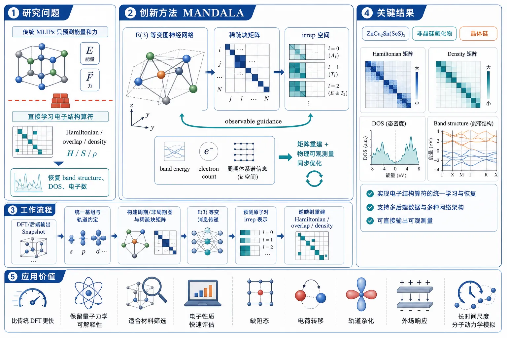
研究问题如何突破传统 MLIPs 只预测能量和力的局限，直接从原子结构学习电子结构算符（Hamiltonian、overlap、density），并进一步恢复 band structure、DOS、电子数等电子性质？创新方法提出 MANDALA：一个 E(3) 等变图神经网络框架，把电子结构学习从标量预测提升到算符级预测。核心 Aha 点是用稀疏块矩阵表示局域轨道算符，在 irrep 空间中学习原子对块；再通过 observable guidance，把 band energy、electron count、周期体系谱信息直接纳入训练，使“矩阵重建”和“物理可观测量”同步优化。工作流程输入 DFT/后端输出的 Snapshot；统一不同基组与轨道约定；构建周期/非周期图与稀疏块矩阵；用 E(3) 等变消息传递网络预测各原子对的 irrep 表示；再逆映射重建 Hamiltonian、overlap、density 等算符；最后通过稀疏 trace 和 k 空间变换计算 band energy、electron count、DOS 和 band structure。关键结果框架实现了对电子结构算符的统一学习与恢复，可直接输出 Hamiltonian matrix、density matrix、DOS 和 band structure，并支持多后端数据与多种网络架构探索。可见文本未给出具体 benchmark 数值，但展示了在 ZnCu₂Sn(SeS)₂、非晶硅氧化物、晶体硅等体系上的可行性，说明该框架能够把算符预测与可观测量分析贯通起来。应用价值为大规模电子结构模拟提供比传统 DFT 更快的替代方案，同时保留量子力学可解释性。适合用于缺陷态、电荷转移、轨道杂化、外场响应、能带与态密度分析，以及材料筛选和长时间尺度分子动力学中的电子性质快速评估。第一部分：核心概览
这篇工作把电子结构学习从仅预测能量/力推进到算符级学习：用 E(3)-equivariant graph neural network 直接预测Hamiltonian、overlap、density矩阵，并从这些矩阵中差分式计算band energy、electron count、DOS、band structure。核心贡献不只是一个模型，而是一套可复用的模块化框架，把多后端数据、稀疏块表示、基组转换、可观测量监督和架构搜索统一到同一工作流中，填补 MLIPs 与完整电子结构分析之间的关键空白。
---
第二部分：结构化快速回顾
《MANDALA: An E(3)-Equivariant Graph Neural Network Framework for Learning Electronic-Structure Operators with Observable Guidance》（None，）
背景：
DFT 计算精确但昂贵；主流 MLIPs 只学能量和力，无法直接恢复电子算符与由其导出的电子性质。
方法：
构建一个模块化 E(3)-equivariant GNN 框架，以稀疏块矩阵形式学习 Hamiltonian / overlap / density，并可用observable guidance 监督 band energy、electron count 与周期体系的spectral loss。
结果：
框架被设计用于预测 Hamiltonian matrix、density matrix、DOS、band structure，并支持多后端与多架构；可见文本未给出具体 benchmark 数值。
讨论：
方法把算符学习与物理可观测量绑定，既保留量子力学表示，又兼顾可扩展的软件工程和架构探索。
局限：
可见文本只覆盖到 3.2 的中途，缺少完整实验结果、消融细节和性能数字；当前演示集中在局域原子轨道、非自旋极化、无自旋轨道耦合体系。
结论：
MANDALA 形成了一个面向真实电子结构工作流的统一平台，可作为 MLIP 的补充层，进一步恢复电子结构层面的分析能力。
---
第三部分：逐章节冷凝解析
1 Introduction
Why electronic-structure surrogates are needed
DFT 仍是电子结构模拟的标准方法，因为它在物理保真度和计算成本之间提供了可操作折中；瓶颈来自“不利的系统规模标度”和“Kohn-Sham 方程的重复自洽求解”。原文直接点出：*"both the unfavorable system-size scaling and repeated self-consistent solution of the Kohn-Sham equations remain major bottlenecks"*。这直接对应大超胞、长分子动力学轨迹、宽组分筛选和变温重复评估等场景。
Why MLIPs are insufficient for electronic questions
主流 MLIPs 只学习energies and forces，尽管这对势能面建模非常有效，但会丢失operator-valued quantities，因此不能直接恢复band structure、charge redistribution 或 density of states。核心限制被概括为：*"However, learning only energies and forces limits direct access to the electronic structure itself, including operator-valued quantities and Hamiltonian-derived analyses such as band structure."*
Operator-learning view as the central shift
针对 charge transfer、orbital hybridization、defect-localized states、external fields response 等问题，电子算符本身就是目标，而不是附带信息。框架围绕 Hamiltonian、overlap、density matrices 的block-sparse 表示展开，把学习对象从标量/向量扩展到算符张量。关键陈述是：*"Mandala is designed around this operator-learning viewpoint."*
Three explicit design goals
三个设计目标非常明确：
- Modularity：数据导入、基组转换、图构建、irrep 映射、模型定义、训练逻辑可独立替换。
- Supervision beyond reconstruction：除了矩阵重建，还可加入differentiable sparse-trace observables 和周期体系的spectral loss。
- Architecture exploration：把 irreducible feature content、message-passing depth、tensor-product design、head structure、residual connections、normalization、observable losses 都暴露为配置项。原文概括为：*"architecture exploration an inherent capability rather than an afterthought."*
Position relative to prior Hamiltonian-learning work
与 DeepH 系列、MACE-H 等直接学习 Hamiltonian 的工作相比，这里的重心不是单一模型，而是reusable software framework。差异表述得很清楚：*"our emphasis here is on a reusable software framework that unifies sparse operator prediction, observable guidance, multi-backend data handling, and broad architecture exploration."*
Workflow-level contribution
图 1 的工作流把输出标准化为 Snapshot，构建统一的sparse-block and symmetry convention，再用 E(3)-equivariant model 预测算符，最后通过physics-aware postprocessing 输出 DOS 和 band structures。这不是单点模型，而是端到端管线。
Paper organization and scope of demonstrations
章节安排显示后续内容涵盖：理论背景、数据模型与学习框架、能力展示、消融研究和附录。展示对象包括 ZnCu₂Sn(SeS)₂、amorphous silicon oxide、crystalline silicon。
---
2 Theoretical Background
#### 2.1 From the full electron-ion Schrödinger equation to Kohn-Sham DFT
Starting point: the many-body electron-ion problem
从最基本层面，体系由带 Born-Oppenheimer 近似的多体薛定谔方程描述，包含 electron kinetic energy (Tₑ)、electron-electron interaction (Vₑₑ)、electron-ion interaction (Vₑᵢ) 和 ion-ion interaction (Eᵢᵢ)。式 (1)–(5) 明确给出这些项。这里的物理重点是：电子结构本质上是一个相互作用多电子问题。
Kohn-Sham mapping and exact density reproduction
DFT 用电子密度 (n(r)) 代替多体波函数作为中心变量；Kohn-Sham construction 把相互作用体系映射到虚构的非相互作用体系。原文写得非常直接：*"the interacting electron problem is then mapped onto a fictitious system of non-interacting electrons governed by the Kohn-Sham equations"*。
Kohn-Sham 轨道满足式 (6)，密度由式 (7) 给出，且与真实相互作用体系的密度相等。
Energy decomposition and exchange-correlation dependence
Kohn-Sham 势 (v_S) 由 Hartree 项、exchange-correlation 项和外场项组成，式 (8)–(10) 给出总能量表达。这里强调了一个基础事实：Kohn-Sham DFT 的形式是精确的，实际误差来自 exchange-correlation functional 近似。
Finite basis expansion and generalized eigenvalue problem
在有限基组 (ḩi_μ) 下，Kohn-Sham 轨道展开后得到generalized eigenvalue problem：
[
HC = SCǎrepsilon
]
对应式 (12)–(13)。这里的关键对象是 Hamiltonian matrix (Hμν) 和 overlap matrix (Sμν)。Mandala 学习的正是这种局域基组矩阵表示。
Density matrix, electron count, and band energy
一粒子密度矩阵 (Dμν) 由式 (14) 定义；在非正交基中，电子数是
[
Nₑ₌Tr(DS)
]
带能是
[
E_b=Tr(DH)
]
对应式 (15)–(16)。这两条 trace 关系是 observable guidance 的直接物理来源：从预测矩阵可直接计算可观测量，而不是另训练一个 surrogate。
Sparse block structure as the learning domain
局域基组天然诱导block sparsity：轨道按原子对与周期镜像 (L) 组织为 (XᵢⱼL)，其中 (XinH,S,D)。这就是学习域，不是全局稠密矩阵。
#### 2.1.1 Hamiltonian gauge invariance and the overlap-shift correction
Gauge freedom in nonorthogonal bases
在非正交基中，(Hi̊ghtarrow H-α S) 不改变广义本征矢，只会把所有本征值整体平移 (α)。式 (17)–(20) 证明了这一点。原文关键句是：*"the generalized eigenvectors remain unchanged, while all eigenvalues are uniformly shifted by the constant α."*
这意味着 Hamiltonian 的“绝对零点”不是物理可观测量，而是gauge freedom。
Reference-dependent alignment for fair error reporting
误差报告时引入
[
μ_H=argmin_μ |Hpred-Href-μ S|_F²
]
式 (21)–(22) 给出最优 (μ_H)。这不是推理时修正，而是reference-dependent alignment，用于公平比较矩阵误差。原文明确说明：*"It is not an inference-time correction."*
#### 2.2 Scope, conventions, and assumptions
Localized atomic-orbital basis only
实现只面向带显式轨道与壳层元数据的localized atomic-orbital bases。这限制了基组类型，但换来清晰的orbital metadata 与稀疏块结构。
Real, non-spin-polarized, no spin–orbit coupling demonstrations
演示使用real, non-spin-polarized matrices without spin–orbit coupling。这说明当前版本尚未覆盖自旋极化和 SOC 情况。
Periodic and nonperiodic support, but periodic demos dominate
稀疏数据模型同时支持周期与非周期结构，但spectral objective 和演示主要针对periodic systems。
Fourier convention for lattice images
周期系统下采用
[
X(k)=sumLeⁱkḑotLXL
]
式 (23)，用于 Hamiltonian、overlap、density 的 k 空间处理。
Backend convention harmonization
不同后端的实球谐约定与轨道排序会被转换到统一的 e3nn convention；这一步依赖完整的orbital and shell metadata，不是只按化学元素映射。
#### 2.3 E(3) symmetry, equivariance, and irreducible representations
Why E(3) matters
三维原子体系自然受 E(3)=R³⋊O(3) 作用，包含平移、旋转和反射。模型必须满足equivariance 才能正确处理几何变化。原文区分得很清楚：*"A model output f(X) is invariant if..."* 和 *"equivariant if..."*。
Irreps as the feature language
隐藏特征不再是普通 channel，而是 irreducible representations (irreps) 的直和：
[
H=bigoplusₑₗₗ,ₚ mₑₗₗ,ₚD⁽ell,p⁾
]
式 (26)。
其中 scalars 对应 ((ell=0,p=+1))，vectors 对应 ((ell=1,p=-1))。这和原子轨道的角动量结构天然匹配。
Geometric information is carried without breaking covariance
相对位移、球谐展开、parity 标签共同编码几何；所有映射都必须与群作用对易。关键句是：*"Node and edge features are updated through maps that commute with the group action."*
Use of e3nn
实现依赖 e3nn 来处理 irreps、球谐和等变张量积。
#### 2.4 Tensor products, spherical harmonics, and the Wigner-Eckart viewpoint
Clebsch-Gordan decomposition determines allowable couplings
两个 irrep 的张量积按 Clebsch-Gordan 规则分解：式 (27) 给出
[
D⁽ell₁,p₁₎øtimes D⁽ell₂,p₂₎=bigoplusL₌|ₑₗₗ_₁₋ₑₗₗ_₂|ell₁₊ell₂D⁽L,p₁ₚ₂₎
]
这直接决定消息传递中哪些输出通道可以被生成。
Spherical harmonics as canonical angular basis
边几何通过 spherical harmonics (Yₑₗₗ ₘ(hatrᵢⱼ)) 注入，配合径向函数 (ǎrphi(rᵢⱼ)) 调制强度。球谐之所以关键，是因为它们在旋转下按 irrep 变换。
Wigner-Eckart theorem links symmetry and operator learning
式 (28) 的 Wigner-Eckart theorem 将矩阵元分解成 Clebsch-Gordan 系数和 reduced matrix element。这里的关键不是公式本身，而是学到的是什么：
- Geometric coupling 由群论固定；
- Reduced matrix element 才由神经网络学习。
原文总结得最到位：*"the angular coupling structure is fixed analytically by the irrep mapping, while the neural network learns the reduced coefficients associated with each orbital pair and chemical environment."*
#### 2.5 From equivariant local features to sparse operator prediction
Operators are learned as sparse atom-pair blocks
(XinH,S,D) 被表示为 (XᵢⱼL) 的稀疏族。学习目标不是全局矩阵，而是atom-pair-resolved sparse blocks。
Fixed block-to-irrep transform
通过固定线性变换
[
xᵢⱼL=Qₐ_ᵢ ₐ_ⱼ,vec(XᵢⱼL)
]
式 (29) 将块映射到 irrep 空间，再用逆映射式 (30) 还原。这里的 BlockIrrepMapper 是数据、模型头和评估共用的核心部件。
Sparse trace formulas give direct observables
稀疏块矩阵的乘积迹可按式 (31) 直接计算：
[
Tr(AB)=sum₍L,ᵢ,ⱼ₎tr(AᵢⱼLBⱼᵢ⁻L)
]
因此 electron count 和 band energy 可以从预测算符直接导出，而不是另建一个观测量模型。
Internal consistency between matrices and observables
框架把matrix supervision 与 observable supervision 统一起来，避免“矩阵对了但物理量不对”的断裂。
---
3 Numerical Implementation
#### 3.1 Software design goals, sparse data model, and periodic graph construction
Layered software stack
核心工作流是：parse outputs → harmonize basis → build sparse operators and graphs → predict irrep vectors → reconstruct operators → evaluate observables。这是一个完整的科学软件流水线，而不是单一模型类。
Core abstractions: BlockMatrix, IrrepsBlockData, Snapshot
三大数据抽象分别负责：
- BlockMatrix：稀疏块矩阵表达；
- IrrepsBlockData：irrep 表示的数据对象；
- Snapshot：单个几何对应的全部矩阵与元数据。
原文强调：*"A Snapshot contains all matrices and metadata associated with one geometry."*
Backend support
当前可用解析器包括 OpenMX、FHI-aims、PySCF。这说明框架面向真实计算后端，而不是封闭数据格式。
Periodic graph construction mirrors sparse operator indexing
图节点对应原子，边对应 cutoff 内的自作用与邻接作用；周期体系里每条边携带整数平移 (L)，位移由式 (32) 定义。边集合式 (33) 以及 diagonal / shifted-self / off-diagonal 的划分（式 34–36）与矩阵块索引完全一致。
Deterministic ordering and reverse-edge lookup
边按距离和晶格平移的canonical ordering 排序，并维护reverse-edge lookup tables，用于 sparse trace 与对称化。原文把这一点定义为物理正确性和可复现性的关键。
Band structure from the same snapshot workflow
同一 Snapshot 还能通过 `Snapshot.get_bandₛₜᵣᵤcture()` 做 band-structure 分析，说明后处理没有脱离主数据流。
#### 3.2 E(3)-equivariant message passing, readout heads, and architecture variants
Network composition
网络由 node encoders、edge encoders、equivariant message-passing blocks、matrix-specific readout heads 组成。结构清晰，便于扫超参和替换组件。
Atomic embeddings start from scalar chemical features
节点初始化为
[
hᵢ⁽⁰⁾=Embₐₜₒₘ(zᵢ₎
]
式 (37)，即从原子种类得到标量化学特征。
Edge encoders combine type and geometry
一种 edge encoder 先形成 edge-type embedding (uᵢⱼ) 和几何特征 (gᵢⱼ=ǎrphi(rᵢⱼ)øplus Y(hatrᵢⱼ))，再通过张量积得到 (eᵢⱼ⁽⁰⁾)（式 38）。
Message passing is explicitly equivariant
通用消息传递由式 (39)–(40) 描述：
- edge message 依赖 (hᵢ⁽t⁾, hⱼ⁽t⁾, eᵢⱼ⁽t⁾, Y(hatrᵢⱼ), ǎrphi(rᵢⱼ))；
- node update 对邻居消息做 Agg 聚合。
关键句是：*"In the concrete implementation, these updates are built from equivariant convolutions with radial weighting."*
Tensor-product conv + equivariant nonlinearity + radial MLP
具体卷积流程包括：
- 拼接局部特征 (fᵢⱼ⁽t⁾)（式 41）；
- 张量积生成 (zᵢⱼ⁽t⁾)（式 42）；
- equivariant nonlinearity（式 43）；
- radial MLP 输出每个 irrep block 的标量系数（式 44）；
- 权重化得到 (qᵢⱼ⁽t,a⁾)（式 45）。
这是一套标准但明确的 E(3)-equivariant convolution 设计。
Aggregation and sequential update
节点信息由式 (46) 聚合；实现里采用 sequential block：先更新节点，再用新节点状态更新边。该顺序会影响表达能力和稳定性。
Matrix-specific readout heads
最终读出层对每个目标算符 (X) 预测 irrep 向量 (widehatxᵢⱼL,X)，再经逆 irrep-to-block conversion 得到矩阵块。由于该段在提供文本中被截断，后续读出细节未完整显示，但“target-specific head → inverse conversion” 这一逻辑已经明确。
---
第四部分：深度理解与语言支持
1. 术语解析
Equivariance
不是“输出不变”，而是“输入做群变换后，输出按对应表示同步变换”。对电子结构来说，旋转晶体后，Hamiltonian 块应按 orbital angular momentum 的规则变化，而不是简单保持常数。
Irreducible representation (irrep)
把特征按对称性分解成最小不可再分的表示单元。这里的意义是：scalars、vectors、higher-order tensors 被统一纳入同一代数框架，方便和原子轨道角动量结构对齐。
Observable guidance
不是普通辅助损失，而是直接从预测算符计算出物理量（如 band energy、electron count、spectral information）并把它们加入训练目标。它比“只对矩阵做 MSE”更接近物理闭环。
Gauge freedom
在非正交基里，(H) 加上任意 (α S) 不改变本征矢，只整体平移本征值。这里的“gauge”指参考零点任意性，不是电磁规范场。
Wigner-Eckart theorem / reduced matrix element
这组术语把“几何耦合”和“材料/化学信息”拆开：前者由群论固定，后者留给模型学习。对算符预测来说，这是把对称性结构显式编码进模型的理论依据。
2. 疑难查证：几个容易混淆的点
Hamiltonian 和 overlap 为什么能一起学
非正交基中，广义本征问题是 (HC=SCǎrepsilon)。只学 (H) 不够，因为基组重叠 (S) 会影响谱和波函数正交性。把 (S) 一起学，才能稳定恢复spectra 与 electron count。
为什么 (Hi̊ghtarrow H-α S) 不算“错”
这是非正交基中的零点平移。因为
[
(H-α S)C = S C(ǎrepsilon-α I)
]
所以波函数不变，只是能级整体平移。评价矩阵误差时如果不校正这个自由度，就会把“参考零点差异”误判成模型误差。
为什么稀疏块表示比稠密矩阵更合理
局域基组下，远距离原子轨道耦合通常很小，矩阵天然稀疏。按 atom-pair block 存储既节省内存，也更贴合物理局域性，并便于与图结构一一对应。
为什么用 irrep basis 而不是直接 Cartesian entries
Cartesian entries 不显式体现旋转对称性，学习难度更高；irrep basis 把“哪些分量能耦合”预先固定，神经网络只学习剩余的 reduced coefficients。这样更符合物理，也更利于泛化。
---
第五部分：创新评估与关联
1. 创新性判断
相对过去 2–5 年工作的新颖性主要在四个层面：
从单任务 Hamiltonian learning 升级为算符平台
近年的 DeepH、MACE-H 等工作已经证明 Hamiltonian 学习可行，但核心目标仍是单一算符或固定任务。MANDALA 把 Hamiltonian、overlap、density 纳入统一框架，还把observable guidance 作为一等公民。
从研究脚本升级为可复用科学软件
过去很多 operator-learning 工作依赖单一数据集和固定架构。这里的关键创新是 modular software framework：解析器、基组转换、irrep 映射、图构建、模型、训练、评估都模块化，支持多后端与 architecture sweep。
从矩阵重建升级为物理量闭环监督
只重建矩阵并不能保证下游物理量准确。这里通过 differentiable sparse traces 和 spectral loss 直接约束 band energy、electron count、band structure，把训练目标从“数值拟合”推向“物理一致性”。
从通用 GNN 升级为显式对称性+算符结构耦合
E(3) 等变已在势能面建模中成熟，但把它与 Wigner-Eckart、block-irrep mapping、sparse operator prediction 绑定，用于电子结构算符学习，这种组合更少见，也更贴近量子化学表示。
2. 解决了前人未完全解决的问题
问题 1：MLIPs 无法恢复电子结构本体
只学能量/力无法直接得到DOS、band structure、charge redistribution。MANDALA 把电子算符本身作为学习对象。
问题 2：算符学习缺乏统一工程框架
过去方法常常“一个数据集、一种基组、一种网络”。这里把多后端、多基组、多架构、多任务统一进同一工作流。
问题 3：矩阵误差与物理误差脱节
通过 observable guidance 和 gauge-aware alignment，矩阵误差、谱误差和可观测量误差被放进同一个评价逻辑。
问题 4：周期体系中的谱信息难以稳定纳入训练
这里引入了基于 selected k-point mesh 的 spectral guidance，把 generalized-eigenvalue spectra 直接纳入监督。
3. 位置判断
这类工作位于两条主线的交叉点：
- MLIPs 的大规模可扩展性；
- 电子结构方法 的可解释性和可观测量丰富性。
MANDALA 的地位更像是把这两条线连接起来的operator-level bridge，而不是对现有势能模型的简单加深。
---
如果需要，可以继续把这篇论文整理成一版更适合组会汇报的内容：
- 一页图解版；
- 公式—直觉对照版；
- 与 DeepH / MACE-H 的逐点对比表。
-
02
📄 摘要：技术综述总结机器学习、深度学习和语言模型在量子信息科学中的用途，聚焦复杂量子系统的表示、表征和刻画。内容覆盖 AI 描述量子态、提取结构特征、辅助实验与理论建模，强调从传统解析表示转向数据驱动量子表征。
📖 英文原文
Nature Reviews Physics, Published online: 29 July 2026; doi:10.1038/s42254-026-00962-5 The application of artificial intelligence to quantum information science has emerged as a frontier of research. This Technical Review summarizes how AI techniques, including machine learning, deep learning and language models, are establishing a new way to describe complex quantum systems.
💡 亮点：综述梳理 AI 如何成为复杂量子态和量子过程的新型表示语言。对凝聚态与量子信息交叉而言，重点在于可扩展表征、高维态刻画和语言模型辅助建模。
📖 展开分析 + 配图
研究问题如何利用人工智能来表示、表征并刻画复杂量子系统，尤其是在量子态表示、系统结构理解和复杂量子问题建模中，机器学习、深度学习与语言模型各自能发挥什么作用。创新方法将机器学习、深度学习和语言模型统一纳入“量子系统表示与刻画”的综述框架，把 AI 不只是当作分析工具，而是视为复杂量子问题的新型建模语言，用同一视角串联量子态表征、系统刻画与问题建模三类任务。工作流程输入：量子信息科学中的复杂量子系统与问题；处理：梳理机器学习、深度学习、语言模型在量子态表示、系统刻画、问题建模中的方法与角色；输出：形成面向量子系统表示与理解的 AI 应用框架、研究脉络与发展方向。关键结果系统总结了 AI 在量子信息科学中的核心应用版图，明确覆盖量子态表征、量子系统刻画和复杂量子问题建模；突出语言模型作为新型建模语言的前沿意义；为该领域提供了统一的综述框架与研究地图。应用价值为量子信息科学研究提供方法导航和概念框架，帮助研究者选择合适的 AI 工具来理解复杂量子系统，并为量子态分析、量子建模和未来量子智能系统设计提供理论参考。核心概览
这是一篇量子信息科学方向的技术综述，系统梳理机器学习、深度学习与语言模型在量子态表征、量子系统刻画及复杂量子问题建模中的应用。
方法要点
- 综述机器学习方法用于表示和描述复杂量子系统。
- 讨论深度学习在量子态表征与系统刻画中的作用。
- 纳入语言模型作为复杂量子问题的新型建模语言。
- 聚焦 AI 技术在量子信息科学中的应用框架与发展方向。
- 具体算法、模型结构、数据集或评估流程：摘要未详述。
关键结果
- 文章明确定位为 Nature Reviews Physics 的技术综述，而非单一实验或算法论文。
- 其主要贡献是系统总结 AI 如何用于描述复杂量子系统。
- 综述范围涵盖量子态表征、量子系统刻画以及复杂量子问题建模。
- 文章强调机器学习、深度学习和语言模型在量子信息科学中的角色。
- 是否提出新实验结果、基准性能或定量结论：摘要未详述。
创新性判断
- 可能的新颖性在于将机器学习、深度学习与语言模型统一置于“量子系统表示与刻画”的框架下进行综述。
- 相比传统量子信息综述，摘要显示其特别强调 AI 作为复杂量子问题的“新建模语言”，这一视角可能具有一定前沿性。
- 由于摘要未给出具体章节结构、比较对象或技术路线，无法确定其相对已有综述的实质性增量。
-
03
📊 含图深析
📄 摘要：针对 CGCNN、MEGNet、ALIGNN、SchNet 等主要在原子层面表征晶体的问题，提出同时学习原子图与配位多面体几何的 GNN。方法显式引入由中心原子及邻近原子构成的结构单元，用于捕捉局域化学环境对晶体性质的控制。
📖 英文原文
arXiv:2607.24818v1 Announce Type: cross Abstract: Accurate prediction of crystal properties remains a key challenge in computational materials science. While graph neural networks (GNNs) such as CGCNN, MEGNet, ALIGNN, and SchNet have shown strong performance, they primarily represent crystals at the atomic level and implicitly learn local chemical environments through message passing. However, many material properties are governed by coordination polyhedra, the fundamental structural units formed by atoms and their neighboring atoms. To address this limitation, we propose the Coordination Polyhedron Graph Network (CPGN), a multi-scale GNN that jointly learns atomic, bond, and coordination-polyhedron representations. CPGN constructs three coupled graphs: an atom graph encoding elemental and bonding information, a line graph capturing angular interactions, and a coordination polyhedron graph describing Voronoi-derived local environments through corner-, edge-, and face-sharing relationships. Physically meaningful geometric descriptors are incorporated for each polyhedron, while an interleaved message-passing mechanism with bidirectional cross-attention enables effective information exchange across structural levels. Extensive evaluations on the Materials Project, JARVIS-DFT, and QM9 benchmark datasets demonstrate that CPGN outperforms existing state-of-the-art GNN models. It achieves a formation-energy MAE of 0.060 eV/atom and a band-gap MAE of 0.292 eV on the Materials Project, while providing competitive multi-property prediction on JARVIS-DFT and superior HOMO prediction on QM9. The results highlight that explicit modeling of coordination polyhedra improves crystal representation learning and enables accurate, physically interpretable prediction of material properties.
💡 亮点：该模型把配位多面体从隐式消息传递特征变成显式学习对象。对氧化物、配位晶体等性质受局域几何控制的材料，可能比纯原子图更有物理分辨率。
📖 展开分析 + 配图
研究问题现有晶体性质预测 GNN 多以原子为中心，只显式看到元素、键距或部分键角，难以直接表示真实晶体化学中的局域配位多面体；因此在带隙、离子输运、弹性、介电响应等强依赖局域几何、畸变和多面体连接方式的性质上，模型缺少可视化的结构单元与物理归纳偏置。创新方法CPGN 将“配位多面体”从静态晶体化学描述符升级为可学习的 GNN 节点，构建原子图、线图、配位多面体图三层结构；多面体节点携带配位数、键长畸变、键角方差、体积代理、平均键长、电负性差异、配位类型等 7 维几何特征，边表示角共享、棱共享、面共享拓扑；通过 4 层交错消息传递和原子—多面体双向跨注意力，让原子化学信息与多面体几何拓扑动态互相校正。工作流程输入 CIF/POSCAR 晶体结构文件；Pymatgen 解析元素、坐标、晶胞与周期邻居；用 40 维 Gaussian RBF 编码 8 Å 截断内键距，构建原子图；将键转为线图节点，用 40 维角度 RBF 编码三体键角；用 VoronoiNN 提取每个原子的配位壳，生成 7 维多面体节点，并按共享 1/2/≥3 个邻居连接为角/棱/面共享边；三图经过 4 层原子图、线图、多面体图交错卷积和双向跨注意力融合；原子与多面体全局均值池化后拼接，投影为 128 维晶体指纹；多任务输出形成能、带隙和稳定性预测。关键结果在 Materials Project 2018.6.1 的 69,239 个无机晶体上，使用 60,000/5,000/4,239 训练、验证、测试划分；CPGN 形成能 MAE 达到 0.060 eV/atom，与 SchNet 并列第二，接近 MEGNet 的 0.056 eV/atom，并优于 CGCNN 的 0.079 eV/atom；带隙 MAE 达到 0.292 eV，为列出模型中最佳，优于 ALIGNN 0.304 eV、MEGNet 0.330 eV、SchNet 0.347 eV、CGCNN 0.388 eV，说明显式多面体几何对几何敏感性质尤其有效。应用价值该研究为晶体性质预测提供了更接近材料化学直觉的多尺度表示，可在保持原子分辨率的同时显式展示局域配位笼、畸变程度和多面体共享网络；有助于更快速筛选带隙、稳定性、离子迁移、弹性和介电相关材料，降低对昂贵 DFT 高通量计算的依赖，并提升模型预测的物理可解释性。第一部分：核心概览（Overview）
CPGN 将配位多面体从传统晶体化学描述符提升为可学习的 GNN 图节点，在原子图、线图与配位多面体图之间进行双向跨注意力和交错消息传递，显式编码键长、键角、畸变、体积、电负性差异以及角/棱/面共享拓扑。其核心地位在于弥补 CGCNN、MEGNet、ALIGNN、SchNet 等原子中心模型对局域配位几何与多面体连通性建模不足的问题。实验显示，CPGN 在 Materials Project 上达到 0.060 eV/atom 形成能 MAE 与 0.292 eV 带隙 MAE，其中带隙预测优于所有列出的基线，体现出对几何敏感性质的优势。
---
第二部分：结构化快速回顾
《Dual-Level Atomic and Coordination Geometry Learning for Crystal Property Prediction Using Graph Neural Networks》（None，）
背景
晶体性质预测长期依赖 DFT，但 DFT 成本过高，难以覆盖庞大的无机材料空间。CGCNN、MEGNet、ALIGNN、SchNet 等 GNN 已成为晶体性质预测主流，但多数以原子为中心，通过消息传递间接学习局域化学环境，缺少对配位多面体及其连通拓扑的显式建模。
方法
CPGN 构建三类互联图：原子图编码元素与键距，线图编码三体键角关系，配位多面体图编码 Voronoi 派生的局域配位环境及角共享、棱共享、面共享关系。每个多面体使用 7 维物理几何描述符表示，并通过 4 层交错消息传递与原子—多面体双向跨注意力融合多尺度信息。
结果
Materials Project 数据集含 69,239 个无机晶体，划分为 60,000/5,000/4,239 训练、验证、测试集。CPGN 形成能 MAE 为 0.060 eV/atom，与 SchNet 并列第二，低于 MEGNet 的 0.056 eV/atom；带隙 MAE 为 0.292 eV，优于 ALIGNN 0.304 eV、MEGNet 0.330 eV、SchNet 0.347 eV、CGCNN 0.388 eV。
讨论
形成能主要受全局键合影响，原子图已能较好捕获；带隙更强依赖局域配位几何、键角方差、多面体畸变和多面体连接方式，因此 CPGN 的显式多面体图对带隙预测贡献更明显。
局限
提供内容中缺少完整消融实验、统计显著性检验、跨随机种子误差条、训练时间/内存对比，以及多面体构造对 Voronoi 参数、截断半径和无序结构的敏感性分析。4.3 节在提供文本中被截断，JARVIS-DFT 与 QM9 的完整结果未出现。
结论
显式引入配位多面体几何与拓扑能够增强晶体图表示学习，尤其改善带隙等对局域几何敏感的性质预测。CPGN 的贡献不只是加入手工特征，而是将多面体作为独立图空间与原子级表示共同训练。
---
第三部分：逐章节冷凝解析（Section-by-Section Condensing）
Abstract
Core prediction challenge
晶体性质预测仍是计算材料科学中的基础难题，尤其是在需要兼顾精度、速度和物理可解释性时。摘要开篇直接界定问题：*"Accurate prediction of crystal properties remains a fundamental challenge in computational materials science."* 这一挑战覆盖形成能、带隙、弹性、介电响应、稳定性等 DFT 常见目标。
Atom-centric GNN limitation
现有强基线 CGCNN、MEGNet、ALIGNN、SchNet 已取得显著成功，但主要停留在原子级图建模，依靠消息传递隐式恢复局域化学环境。核心缺陷被明确表述为：*"they primarily model crystals at the atomic level and rely on message passing to implicitly capture local chemical environments."* 这意味着模型需要从数据中重新学习晶体化学中已有的配位规律，带来数据效率和表达效率问题。
Coordination polyhedron as missing structural unit
被忽略的关键对象是配位多面体，即许多材料性质的基本结构单元。摘要强调：*"This approach overlooks the coordination polyhedron—the fundamental structural unit governing many material properties, including ionic conductivity, elasticity, dielectric response, and structural stability."* 这里的性质列表覆盖离子输运、力学、电学与热力学稳定性，说明多面体不是单一任务特征，而是跨性质结构先验。
CPGN multi-scale architecture
提出的 Coordination Polyhedron Graph Network，CPGN 是一种多尺度 GNN，同时学习原子、键、配位多面体表示。核心定义为：*"we propose the Coordination Polyhedron Graph Network (CPGN), a novel multi-scale GNN that jointly learns atomic, bond, and coordination-polyhedron representations."* 其创新点不是简单拼接特征，而是建立三个结构层级并联合训练。
Three interconnected graphs
CPGN 构建三个互联图：原子图、线图、配位多面体图。摘要给出完整结构：*"CPGN constructs three interconnected graphs: an atom graph capturing elemental and bonding information, a line graph modeling angular interactions, and a coordination polyhedron graph representing Voronoi-derived local environments connected through corner-, edge-, and face-sharing relationships."* 其中角共享、棱共享、面共享将晶体拓扑显式引入图边。
Geometric descriptors and cross-scale attention
每个配位多面体由物理可解释几何描述符表征，并通过交错消息传递与双向跨注意力实现多尺度信息交换。摘要中的关键机制是：*"Each coordination polyhedron is characterized using physically meaningful geometric descriptors, while an interleaved message-passing framework with bidirectional cross-attention enables effective information exchange across multiple structural scales."* 这使局域几何与原子化学环境可在训练过程中相互修正。
Benchmark superiority
实验覆盖 Materials Project、JARVIS-DFT、QM9 三个基准数据集。摘要报告：*"Extensive experiments on the Materials Project, JARVIS-DFT, and QM9 benchmark datasets demonstrate the superiority of CPGN over state-of-the-art GNN models."* 但提供文本中仅完整展示 Materials Project 的表格结果，JARVIS-DFT 与 QM9 结果未在截取内容中完全出现。
Key numerical performance
Materials Project 上，CPGN 获得 0.060 eV/atom 形成能 MAE 与 0.292 eV 带隙 MAE。摘要称：*"The proposed framework achieves a formation-energy MAE of 0.060 eV/atom and a state-of-the-art band-gap MAE of 0.292 eV on the Materials Project."* 其中带隙 MAE 在 4.3 节表格描述中优于 ALIGNN、MEGNet、SchNet、CGCNN 和 CFID。
Interpretability claim
CPGN 的性能提升与物理可解释性绑定：*"explicitly incorporating coordination polyhedra significantly enhances crystal representation learning and enables more accurate and physically interpretable prediction of material properties."* 解释性来自多面体畸变、键角方差、体积、电负性差异和共享拓扑等可读特征。
---
1 Introduction
DFT bottleneck in large materials spaces
功能无机材料发现涉及储能、热电、光伏、介电等广泛应用，需要快速预测结构—性质关系。DFT 被定义为金标准：*"Density functional theory (DFT) remains the gold standard for computing properties such as formation energy, electronic band gap, elastic moduli, and thermodynamic stability."* 但其计算成本限制高通量筛选：*"its computational cost limits systematic high-throughput screening to a small fraction of the experimentally and computationally accessible materials landscape."*
Materials databases enabling ML
大型开放数据库使机器学习获得 DFT 质量预测成为可能，包括 Materials Project、QM9、JARVIS-DFT。原文指出：*"The emergence of large, openly accessible databases, most notably the Materials Project (MPProject), QM9, and JARVIS-DFT has made it possible to train machine learning (ML) models that can predict DFT-quality properties at a fraction of the computational cost."* 这构成 GNN 替代或加速 DFT 的数据基础。
GNNs as dominant framework
在晶体材料 ML 中，图神经网络已成为主导框架：*"Among ML approaches for crystalline materials, graph neural networks (GNNs) have established themselves as the dominant framework."* 晶体天然可表征为原子节点与键边构成的周期图，因此 GNN 具有结构适配性。
CGCNN as first crystal graph CNN
CGCNN 被描述为首个直接在晶体图上构建卷积神经网络的模型：*"CGCNN was the first model to directly build convolutional neural networks on top of crystal graphs."* 它在 Materials Project 上训练后，对形成能、带隙、弹性等 8 个性质达到接近 DFT 的精度：*"achieving accuracy comparable to DFT for eight material properties including formation energy, band gap, and elastic properties."*
ALIGNN and angular interactions
ALIGNN 的关键进展是同时在原子键图与线图上消息传递，显式编码键角：*"ALIGNN introduced message passing on both the interatomic bond graph and its line graph corresponding to bond angles."* 该设计说明三体相互作用对原子级性质预测有明显增益：*"explicitly encoding three-body interactions substantially improves performance across multiple atomistic prediction tasks."*
MEGNet and global state
MEGNet 引入全局状态信息，支持温度、压力依赖性质预测：*"MEGNet incorporated global state information enabling temperature- and pressure-dependent property prediction."* 与只使用原子和键的 GNN 相比，MEGNet 提供更通用的图网络形式。
Transformer-based geometry expansion
Matformer、CrysCo 等模型进一步使用注意力机制和四体相互作用捕获几何复杂性：*"Matformer and more recent transformer-based architectures such as CrysCo introduced attention mechanisms and four-body interactions to further capture geometric complexity."* 这代表近年趋势：从二体距离扩展到三体角度、四体构型和注意力机制。
---
1.1 Existing Challenges in the Literature
Challenge 1 — Atom-centric representation is physically indirect
现有 GNN 多使用元素属性作为节点特征，使用原子间距离或键价作为边特征，再通过多层图卷积隐式学习多体相互作用。原文概括为：*"The common theme across all existing GNN models is the use of elemental properties as node features and interatomic distances and bond valences as edge features, relying on multiple layers of graph convolution to implicitly represent many-body interactions."* 这种表示在物理上是间接的，因为晶体化学中真正支配性质的不是孤立原子，而是其与近邻构成的配位多面体。
Coordination polyhedron as fundamental structural unit
配位多面体被定义为更直接的物理结构单元：*"the fundamental structural unit governing material properties is not the isolated atom but the coordination polyhedron it forms with its nearest neighbours."* 这对于理解局部键合、畸变、离子通道、八面体倾斜等结构现象尤为关键。
Polyhedral distortion matters
实际晶体中，简单多面体常因结构复杂性或电子不稳定性发生变形，因此畸变分析重要。原文指出：*"simple polyhedra in crystalline compounds are often deformed due to structural complexity or electronic instabilities, making distortion analysis methods critically important."* CPGN 的多面体特征正是围绕畸变指数、键角方差、体积代理等量构造。
Data-hungry implicit learning
原子级 GNN 必须通过深层消息传递从数据中间接恢复这些因果结构关系，被评价为低效且耗数据：*"These causal physical relationships are precisely what atom-only GNNs must learn indirectly through deep stacking of message-passing layers — an inefficient and data-hungry process."* 这给 CPGN 的显式结构先验提供了动机。
Challenge 2 — Limited local expressive power and structural periodicity failure
现有 SOTA GNN 难以准确捕获晶体周期性，问题分为三轴：局部表达力有限、长程信息处理差、读出函数不足。原文为：*"they fall short in accurately capturing the periodicity of crystal structures, and this failure can be understood across three axes: limited local expressive power, poor long-range information processing, and inadequate readout functions."*
ALIGNN still lacks complete coordination geometry
即使 ALIGNN 显式编码键角，也只覆盖二体距离和三体角度，不能编码完整配位环境几何。原文指出：*"Even ALIGNN, which explicitly encodes bond angles via a line graph, operates only at the two-body (distance) and three-body (angle) level and does not encode the complete geometry of the local coordination environment."* 缺失内容包括多面体畸变、体积、面/棱/角共享连通类型。
Missing physically meaningful connectivity
多面体之间的face-sharing、edge-sharing、corner-sharing与材料性质直接相关。挑战 2 中列出未编码对象：*"polyhedral distortion, volume, and inter-polyhedral connectivity type (face-, edge-, and corner-sharing), all of which are physically meaningful and directly related to properties of practical interest."* 这些信息在传统原子图中并非显式边特征。
Challenge 3 — Parameter inefficiency and poor small-data efficiency
增加结构信息的嵌套图策略常显著增加参数量和训练成本。原文称：*"Existing nested graph network strategies that increase structural information such as bond angles significantly increase the number of trainable parameters, resulting in higher training costs."* 这对于小数据材料性质尤其不利。
Small datasets in technologically important properties
许多重要性质数据集规模很小，如弹性模量、压电张量、介电常数通常只有数百到数千标注结构。原文具体写道：*"many technologically important property datasets, elastic moduli, piezoelectric tensors, dielectric constants — contain only hundreds to a few thousand labelled structures."* 因此需要更强物理先验以提高数据效率。
Physical priors should reduce data demand
显式编码多面体几何理论上可以降低达到目标精度所需数据量：*"A model that encodes stronger physical priors through explicit polyhedral geometry should, in principle, require less data to reach a given accuracy level."* 这一点在提供文本中没有通过学习曲线或小样本实验充分验证，仍主要属于方法动机。
Challenge 4 — Polyhedral connectivity absent from discriminative GNNs
已有多面体用于晶体生成和拓扑数据库，但判别式性质预测 GNN 尚未将其作为可学习节点。原文明确断言：*"no existing discriminative GNN for property prediction uses coordination polyhedra as first-class, learnable graph nodes."* 这是 CPGN 的主要创新定位。
Polyhedral topology governs functional phenomena
多面体之间的共享方式支配离子迁移、协同八面体倾斜和弹性各向异性：*"The connectivity between polyhedra, whether they share faces, edges, or corners, encodes the crystal topology that governs phenomena such as ionic migration pathways, cooperative octahedral tilting, and elastic anisotropy."* 这类拓扑信息在 CGCNN、MEGNet、ALIGNN、Matformer、ReciNet、PSCG-Net 中被称为完全缺失：*"this information is entirely absent from the node and edge feature spaces of CGCNN, MEGNet, ALIGNN, Matformer, ReciNet, and PSCG-Net."*
---
1.2 Contributions
Dual-stream graph neural network
CPGN 被定义为整合原子级、键级和配位多面体级表示的双流图神经网络：*"we propose the Coordination Polyhedron Graph Network (CPGN), a novel dual-stream graph neural network that integrates atom-level, bond-level, and coordination-polyhedron-level representations derived directly from crystal structure files."* “双流”主要指原子流与多面体流，线图则为键角信息注入原子表示服务。
Explicit geometric and topological abstraction
与原子中心模型不同，CPGN 在保留原子分辨率的同时引入配位环境抽象。原文为：*"Unlike prior atom-centric models, CPGN introduces an explicit geometric and topological abstraction of coordination environments while preserving full atomic resolution."* 这避免了粗粒化导致原子化学信息丢失。
Three-graph structural representation
CPGN 的统一表示由原子图、线图、配位多面体图构成，并从单一 CIF/POSCAR 输入中生成。贡献条目写道：*"We introduce a unified crystal representation consisting of an atom graph, a line graph, and a coordination polyhedron graph, all constructed from a single CIF/POSCAR input using Pymatgen-based parsing and Voronoi tessellation."*
Multi-view modeling of chemistry and topology
三图结构允许同时建模原子相互作用、键角几何和配位壳拓扑：*"This multi-view formulation enables simultaneous modeling of atomic interactions, bond-angle geometry, and coordination-shell topology within a single end-to-end framework."* 该设计将 CGCNN 的原子图、ALIGNN 的线图和新增多面体图统一到同一网络。
Polyhedron graph as coarse-grained learning space
配位多面体图将 Voronoi 派生的配位多面体作为节点，将角/棱/面共享作为边：*"nodes correspond to Voronoi-derived coordination polyhedra and edges encode physically meaningful connectivity (corner-, edge-, and face-sharing)."* 这是区别于已有描述符数据库或生成方法的关键。
Motif-level physical phenomena
这种多面体图被声称可捕获离子传输、协同畸变和磁交换通道：*"This formulation explicitly captures structural motifs governing ionic transport, cooperative distortions, and magnetic exchange pathways."* 这些结构动机通常难以由仅含距离和元素的原子图显式表达。
Seven-dimensional polyhedron descriptor
每个多面体节点使用紧凑的 7 维特征向量表示，包括配位数、键长畸变、键角方差、体积代理、平均键长、电负性失配和配位类型。原文列举：*"including coordination number, bond-length distortion, bond-angle variance, polyhedral volume proxy, mean bond length, electronegativity mismatch, and coordination type."* 这些特征兼具可解释性和可学习性。
Line graph for explicit three-body interaction
CPGN 保留 ALIGNN 式线图思想，键作为线图节点，键角作为线图边特征。贡献写道：*"We construct a line graph over atomic bonds, where nodes represent bonds and edges encode bond-angle relationships using RBF-expanded angular features."* 这确保模型不只依赖多面体粗粒度信息，也显式建模三体角度。
Interleaved message passing
三类图不是独立编码后拼接，而是多层交错更新。原文说明：*"We introduce a unified message-passing framework that alternates updates across atom, line, and polyhedron graphs over multiple layers."* 这种交错设计使原子、角度、配位层级在训练中共同演化：*"atomic, angular, and coordination-level information to co-evolve during training."*
Bidirectional cross-attention
CPGN 使用原子与多面体表示之间的双向跨注意力：*"We propose a cross-attention mechanism that enables dynamic information exchange between atom-level and polyhedron-level embeddings."* 该机制避免手工规定融合规则：*"improving representation richness without requiring manual feature fusion rules."*
Unified multi-task prediction
模型从共享 128 维 latent representation 联合学习形成能、带隙和稳定性。贡献条目给出：*"It jointly learns formation energy, band gap, and stability from a shared 128-dimensional latent representation using a multi-task objective combining MAE regression."* Materials Project 上报告 0.060 eV/atom 形成能 MAE、0.292 eV 带隙 MAE、0.99 稳定性准确率：*"achieving consistently competitive performance on the Materials Project (0.060 eV/atom formation energy MAE, and 0.292 eV band-gap MAE, and 0.99 stability accuracy)."*
Evaluation across three benchmarks
CPGN 在 Materials Project、JARVIS-DFT、QM9 上评估：*"Across three standard benchmarks—Materials Project, JARVIS-DFT, and QM9, CPGN generalizes robustly."* 提供文本中 Materials Project 结果最完整；JARVIS-DFT 与 QM9 的完整表格未出现。
Masked multi-task learning
模型可处理异质和部分标注数据集：*"while effectively handling heterogeneous and partially labeled datasets through masked multi-task learning."* 但截取内容中未给出 masked loss 的完整公式或缺失标签比例。
Structural inductive bias
性能收益主要归因于显式结构归纳偏置：*"Its gains are primarily driven by an explicit structural inductive bias that encodes coordination polyhedron geometry."* 具体编码包括键畸变、角方差、连通性和电负性失配：*"bond distortion, angular variance, connectivity, and electronegativity mismatch."*
Positioning against RSC and CGD
表 1 将 CPGN 与 RSC、CGD 区分开：RSC 主要任务是晶体生成，CGD 是拓扑分析，CPGN 是晶体性质预测。表格核心对比为：*"Primary task Crystal generation Topological analysis Crystal property prediction."* CPGN 是唯一机器学习方法：*"Machine learning based ... Yes"*，也是唯一将多面体作为具有学习特征的 GNN 节点的方法：*"As first-class GNN nodes with learned features."*
---
2 Related Works
CGCNN established crystal graph learning
CGCNN 于 2018 年奠定晶体图性质预测范式：*"Xie and Grossman introduced the Crystal Graph Convolutional Neural Network (CGCNN), which directly learns material properties from the atomic connectivity of crystals."* 它提供通用且可解释的晶体材料表示，并在 Materials Project 八个性质上达到 DFT 级精度：*"achieves DFT-level accuracy across eight properties after training on data from the Materials Project."*
SchNet models continuous atomic interactions
SchNet 被定位为用于分子与材料预测的深度学习架构：*"Schütt et al. proposed SchNet, a deep learning architecture designed to model complex atomic interactions and improve the accuracy of molecular and material predictions."* 它属于连续滤波卷积代表模型，强调从原子类型和距离学习相互作用。
MEGNet introduces global state attributes
MEGNet 扩展图网络形式，加入全局状态属性：*"MEGNet ... extends the graph network formalism by incorporating global state attributes alongside atomic and bond features."* 其在约 60,000 个 Materials Project 晶体上训练：*"MEGNet models trained on approximately 60,000 crystals from the Materials Project substantially outperform prior machine learning models."* 预测任务包括形成能、带隙和弹性模量：*"formation energies, band gaps, and elastic moduli."*
Atom-centric paradigm and shared limitation
CGCNN、SchNet、MEGNet 共同确立原子中心图表示作为主导范式，但缺少显式角度和高阶拓扑信息。原文指出：*"These three models established the atom-centric graph representation as the dominant paradigm."* 共同限制是：*"SchNet and CGCNN update atom representations using only the types of neighbouring atoms and bond lengths between atoms... and omit explicit angular and higher-order topological information."*
ALIGNN adds line graph angular message passing
ALIGNN 在原子键图及其线图上执行消息传递：*"ALIGNN ... performs message passing on both the interatomic bond graph and its line graph corresponding to bond angles."* 它在 JARVIS-DFT、Materials Project、QM9 上覆盖 52 个固态和分子性质：*"52 solid-state and molecular properties across the JARVIS-DFT, Materials Project, and QM9 databases."* 相比此前 GNN，最高精度提升达 85%：*"outperforming previously reported GNN models by up to 85% in accuracy."*
DimeNet++, GemNet, SphereNet extend geometric hierarchy
后续模型引入二面角或更高阶几何，以区分具有相同键长和键角但高阶构型不同的局域结构。原文指出：*"DimeNet++, GemNet, and SphereNet further extended the geometric hierarchy to dihedral angles."* 其目的在于：*"enabling unambiguous recognition of local structures that share identical bond lengths and angles but differ in higher-order geometric configurations."*
Crystal hypergraphs encode higher-order environments
Crystal Hypergraph Convolutional Networks 将三元组和局域配位环境作为超边：*"associate higher-order geometrical information with hyperedges representing triplets and local coordination environments."* 该方法指出仅编码原子间距离会产生退化表示：*"graph representations encoding only interatomic distance produce degenerate representations that map distinct structures to equivalent graphs."*
CGCNN and ALIGNN struggle with Voronoi coordination numbers
系统评估显示，CGCNN 和 ALIGNN 难以准确捕获 Voronoi 定义的配位数：*"both CGCNN and ALIGNN struggle to capture Voronoi-defined coordination numbers accurately."* 根本原因是 Voronoi 配位依赖角度和配位壳拓扑，而距离最近邻图无法直接提供：*"the Voronoi tessellation algorithm relies on angular and topological information about coordination shells that is not directly accessible from distance-based nearest-neighbour graphs alone."*
Foundation potentials broaden but do not solve polyhedron gap
近年通用机器学习势如 M3GNet、CHGNet、ALIGNN-FF、MACE-MP-0 可预测能量、力和应力，支持结构弛豫、分子动力学和高通量筛选。原文写道：*"Universal machine learning interatomic potentials ... have been developed to predict energies, forces, and stresses for any combination of elements."* 但这些架构仍未显式编码配位多面体。
Persistent gap: no explicit coordination polyhedron object
相关工作总结出共同空白：*"none explicitly encodes the coordination polyhedron, the three-dimensional cage formed by an atom and its nearest neighbours as a distinct graph-level object."* 缺失的多面体描述符包括：*"distortion index, bond-angle variance, and polyhedral volume."* 同时也未编码相邻多面体之间的面/棱/角共享拓扑：*"nor do they encode the face-, edge-, and corner-sharing topology between adjacent polyhedra."*
CPGN directly addresses the gap
CPGN 同时构建 G_A、G_L、G_P 并通过双向跨注意力耦合三条结构信息流。原文总结：*"The proposed Coordination Polyhedron Graph Network (CPGN) addresses this gap directly by constructing a polyhedron graph G_P alongside the atom graph G_A and line graph G_L."* 输出为多尺度晶体指纹：*"a multi-scale crystal fingerprint that simultaneously encodes structural information at the atomic, angular, and polyhedral levels."*
---
3 Methodology
Overall workflow from CIF/POSCAR
CPGN 从 CIF 或 POSCAR 晶体结构出发，经 Pymatgen 解析、RBF 键编码和 Voronoi 镶嵌抽取原子、键和配位环境信息。原文概括：*"Starting from CIF/POSCAR crystal structures, the preprocessing stage extracts atomic, bond, and coordination-environment information using Pymatgen parsing, Gaussian radial basis function (RBF) bond encoding, and Voronoi tessellation."*
Three complementary graphs
方法核心是构建三张互补图：*"Three complementary graphs are then constructed: an atom graph G_A encoding atomic interactions, a line graph G_L capturing explicit three-body bond-angle relationships, and a coordination polyhedron graph G_P representing Voronoi-derived coordination environments with corner-, edge-, and face-sharing connectivity."* 三图分别对应二体、三体和局域多面体拓扑层级。
Interleaved message passing and cross-attention
CPGN 在三图之间进行交错消息传递：*"The model performs interleaved message passing across all three graphs."* 更新方式使用 MLP 图卷积和原子—多面体双向跨注意力：*"atom, bond, and polyhedron embeddings are iteratively updated using MLP-based graph convolutions and bidirectional cross-attention between atom and polyhedron streams."*
Four-layer architecture
网络深度设为 L = 4：*"After L = 4 layers, global pooling generates crystal-level representations."* 后续融合为共享 latent vector，用于多任务预测形成能、带隙、热力学稳定性及辅助量子化学性质。
Training recipe
训练端到端进行，优化器与训练策略包括 AdamW、余弦学习率、梯度裁剪和早停：*"The framework is trained end-to-end using a weighted multi-task objective with AdamW optimisation, cosine learning-rate scheduling, gradient clipping, and early stopping."*
---
Step 1 — The input: a crystal blueprint
CIF/POSCAR as complete crystal blueprint
输入文件是晶体结构的数字蓝图：*"The entire workflow begins with a crystal structure file, typically in CIF or POSCAR format, which serves as a precise digital blueprint of the material under investigation."* 它包含原子身份、三维分数坐标、晶胞形状和尺寸、晶格角等信息。
Periodic tiling information
晶胞文件不仅描述有限单胞，还描述空间周期延拓方式：*"the lattice angles that define how the cell tiles infinitely through space."* 这对于晶体图构建至关重要，因为邻居可跨越周期边界。
---
Step 2 — Preprocessing: reading and encoding the structure
Element embedding table
Pymatgen 解析每个原子位点与元素，每个原子由整数原子序数表示，范围为 Z ∈ [1,102]。原文为：*"Each atom is represented by its integer atomic number Z ∈ [1,102], which is passed to a learned embedding table E ∈ R¹⁰³×⁶⁴."* 由此每个原子获得 64 维可训练嵌入：*"The embedding for atom i is therefore eᵢ = E[Zᵢ] ∈ R⁶⁴."*
Learned rather than handcrafted element features
元素表示在训练中共同优化，而非固定手工属性。原文指出：*"all 64 dimensions are jointly optimised during training."* 这样模型可从数据中学习元素特异性表示：*"This approach lets the model discover element-specific representations from data rather than relying on fixed hand-crafted attributes."*
RBF bond distance encoding
原子间键距使用 40 个 Gaussian RBF 编码，中心均匀分布在 [0, r_cut]，截断半径 r_cut = 8 Å。原文写道：*"interatomic bond distances are encoded using 40 Gaussian radial basis functions (RBF) centred uniformly in [0, r_cut] with r_cut = 8 Å."* 每条键获得 40 维连续边特征：*"This yields a 40-dimensional continuous edge feature vector for each bond."*
RBF mathematical form
距离 d 的第 k 个 RBF 为
[
φₖ₍d)=exp(-γ(d-μₖ₎²⁾,quad k=1,łdots,40
]
原文公式为：*"(φₖ(d)=exp(-γ(d-μₖ)²),quad k=1,łdots,40)"*。其中 (μₖ) 均匀间隔，(γ) 设为中心间距平方倒数的一半：*"γ is set to half the inverse square of the centre spacing."*
Voronoi coordination shell extraction
使用 Pymatgen 的 VoronoiNN 识别截断半径 8 Å 内邻居，定义配位壳。原文为：*"a Voronoi tessellation algorithm — specifically the VoronoiNN routine from Pymatgen — wraps a virtual geometric bubble around each atom and identifies neighbouring atoms within the cutoff radius r_cut = 8 Å."*
Seven-dimensional polyhedron feature vector
每个配位壳被编码为 7 维特征向量：*"encoded as a 7-dimensional feature vector."* 七项为：
- 归一化配位数 (CN/12)：*"(i) normalised coordination number CN/12"*；
- 键长畸变指数：*"(ii) bond-length distortion index, defined as the standard deviation of bond lengths divided by their mean"*；
- 键角方差归一化：*"(iii) bond-angle variance normalised by 10,000"*；
- 多面体体积代理 (bar d³/100)：*"(iv) a polyhedral volume proxy (bard³/100)"*；
- 平均键长归一化：*"(v) the mean bond length normalised by r_cut"*；
- 平均绝对电负性差：*"(vi) the mean absolute electronegativity difference between the central atom and its ligands"*；
- 配位类型编码 (min(CN,12)/12)：*"(vii) coordination type encoded as (min(CN,12)/12)."*
---
Step 3 — Three-graph construction: atom graph, line graph, and polyhedron graph
Atom graph definition
原子图 (G_A) 以原子为节点，以原子间键为有向边。原文定义：*"The atom graph G_A represents atoms as nodes and interatomic bonds as directed edges."* 节点携带 64 维元素嵌入，边携带 40 维 RBF 距离特征：*"Each node i carries the 64-dimensional learned elemental embedding eᵢ, and each directed edge (i → j) carries the 40-dimensional RBF expansion of the corresponding bond distance dᵢⱼ."*
Line graph definition
线图 (G_L) 从原子图派生，每条有向键成为线图节点：*"each bond (directed edge) in G_A becomes a node in G_L."* 若两条键共享目标原子，则其线图节点相连，形成三元组 ((j → i, k → i))：*"connected by an edge if their corresponding bonds in G_A share a common destination atom, forming a bond-pair triplet."*
Angle feature encoding in line graph
线图边特征是两条键之间角度 (θ in [0,π]) 的 40 维 RBF 扩展：*"The feature of each such line-graph edge is the 40-dimensional RBF expansion of the bond angle θ ∈ [0,π] between the two bonds."* 角度通过位移向量点积计算：*"computed from the dot product of the displacement vectors."*
Explicit three-body interaction
线图使三体角度信息先进入键表示，再经原子图传播到原子嵌入。原文明确：*"This construction enables explicit three-body angular interactions."* 机制为：*"angular information first propagates into bond representations via message passing on G_L, and those updated bond representations then propagate into atom representations via message passing on G_A."*
Polyhedron graph as architectural novelty
配位多面体图 (G_P) 是 CPGN 的架构新颖点：*"The coordination polyhedron graph G_P is the architectural novelty of CPGN."* 每个配位多面体为节点，初始化为 7 维几何特征：*"Each coordination polyhedron is a node in G_P, initialised with the 7-dimensional geometric feature vector."*
Polyhedron graph edge construction
两个多面体若配位壳共享一个或多个原子，则相连：*"Two polyhedra are connected by an edge if they share one or more atoms in their coordination shells."* 边权编码共享类型：*"cₚq = 0.0 for corner-sharing (one shared neighbour), cₚq = 0.5 for edge-sharing (two shared neighbours), and cₚq = 1.0 for face-sharing (three or more shared neighbours)."*
Physical meaning of sharing topology
角/棱/面共享是物理不同的关系，支配离子迁移、协同畸变和磁超交换。原文指出：*"These are physically distinct relationships governing phenomena such as ionic migration pathways, cooperative structural distortions, and magnetic superexchange."* 传统原子图缺少这类拓扑信息：*"this topological information is absent from atom-only graph representations."*
---
Step 4 — Interleaved message passing across all three graphs
Four identical interleaved layers
核心学习阶段运行 L = 4 个相同交错层：*"The core learning phase runs L = 4 identical interleaved layers."* 每层包括原子图卷积、线图卷积、多面体图卷积和双向跨注意力四个顺序操作。
Atom graph convolution
原子嵌入通过聚合邻居原子消息更新，并由当前键嵌入调制。原文公式为：*"(hᵢ⁽l⁺¹⁾=LayerNorm(hᵢ⁽l⁾+MeanAggⱼᵢₙNA(i)[MLP(hᵢ⁽l⁾|hⱼ⁽l⁾|hᵢⱼ⁽l⁾)]))"*。消息 MLP 有两层线性层和 SiLU 激活：*"The message MLP has two linear layers with SiLU activations."*
Line graph convolution
键嵌入通过共享目标原子的键对聚合更新，并以 RBF 编码角度作为条件。公式为：*"(hᵢⱼ⁽l⁺¹⁾=LayerNorm(hᵢⱼ⁽l⁾+MeanAgg₍ₖⱼ₎ᵢₙNL(ij)[MLP(hᵢⱼ⁽l⁾|hₖⱼ⁽l⁾|φ(θᵢⱼ,ₖⱼ))]))"*。作用是：*"This injects angular geometry directly into the bond representations."*
Polyhedron graph convolution
多面体嵌入通过相邻多面体消息更新，消息受共享连通类型加权。原文公式为：*"(hₚ⁽l⁺¹⁾=LayerNorm(hₚ⁽l⁾+MeanAgg_qinNP(p)[MLP(hₚ⁽l⁾|hq⁽l⁾|tildecₚq)]))"*。连通标量投影到隐藏维：*"(tildecₚq=W_c cₚqinRdₕ)."*
Bidirectional cross-attention mechanism
图卷积后，原子流和多面体流通过跨注意力交换信息：*"After both graph convolutions, a cross-attention mechanism allows information to flow between the atom and polyhedron streams."* 对每个原子节点，其 query 来自原子嵌入，attention 对象是晶体级多面体均值嵌入：*"For each atom node i, a query qᵢ = W_Q^A hᵢ attends over the crystal-level mean of polyhedron embeddings."*
Scalar-gated attention design
跨注意力采用标量门控形式：*"(σ((qᵢḑot WKPbarhP⁽l⁺¹⁾)/sqrtdₕ)WVPbarhP⁽l⁺¹⁾)"*。多面体节点对原子均值进行对称注意：*"and symmetrically for polyhedron nodes attending over the crystal-level mean of atom embeddings."*
Continuous atom-polyhedron coupling
跨注意力在每一层耦合原子与多面体流：*"This scalar-gated cross-attention couples the atom and polyhedron streams at every depth."* 其功能是持续让结构拓扑影响原子嵌入，原子化学也反向影响多面体表示：*"continuously allowing structural topology to inform atomic embeddings and vice versa."*
Parameter count and hidden dimension
模型参数量约 1.2 million，隐藏维为 dₕ = 256。原文给出：*"The total number of trainable parameters is approximately 1.2 million with dₕ = 256."* 相较超大 foundation potentials，这属于中等规模模型。
---
Step 5 — Feature fusion
Separate global mean pooling
完成 L 层后，对原子图和多面体图分别做全局均值池化。原文公式为：*"(hA=frac1Nsumᵢ₌₁Nhᵢ⁽L⁾,qquad hP=frac1Nsumₚ₌₁Nhₚ⁽L⁾)"*。两者均为 (dₕ) 维晶体级摘要。
Concatenation and projection to 128-dimensional latent vector
原子级和多面体级摘要拼接后经两层 MLP 投影到 128 维 latent vector：*"These are concatenated and projected through a two-layer MLP with SiLU activations."* 公式为：*"(z=MLP([hA|hP])inRd_z), where (d_z=128)."*
Latent vector semantic content
共享 latent vector 同时编码原子/线图捕获的化学相互作用和多面体图捕获的几何、拓扑、结构信息。原文说明：*"The latent vector z encodes both the atomic-level chemical interactions captured by the atom and line graphs and the geometric, topological, and structural information captured by the polyhedron graph."*
Line graph not separately pooled
线图键嵌入不单独池化，因为角度信息已经通过交错消息传递吸收到原子嵌入中：*"The line-graph bond embeddings are not separately pooled; their angular information has already been absorbed into the atom embeddings through the interleaved message passing."*
---
Step 6 — Multi-task output heads
Formation energy regression head
共享 latent vector 通过线性头预测形成能每原子值。公式为：*"(hatEf=WEfz+bEf,quad hatEfinR [eV/atom])."* 这是主回归任务。
Band gap non-negativity constraint
带隙头使用线性层加 softplus，以保证预测非负。原文写道：*"The second head predicts the electronic band gap through a linear layer followed by a softplus activation to enforce non-negativity."* 公式为：*"(hatEg=softplus(WEgz+bEg),quad hatEg≥0 [eV])."* 该设计嵌入了带隙不能为负的物理约束。
Thermodynamic stability classification head
稳定性被设为二分类任务，判断材料是否处于或接近稳定凸包。原文为：*"The third head predicts thermodynamic stability as a binary classification — whether the material lies on or near the convex hull of stability."* 线性层输出 logit (s)，经 sigmoid 得到稳定概率：*"P(stable)=σ(s)."*
Implicit multi-task regularisation
共享骨干和晶体指纹带来多任务正则化。原文指出：*"By sharing a single backbone and fingerprint across both regression targets, the model benefits from implicit multi-task regularisation."* 形成能和带隙在键合特征与配位几何上存在物理关联，因此共享表示可改善泛化：*"the two properties are physically correlated through bonding character and coordination geometry."*
---
Step 7 — Training
Weighted multi-task loss
Materials Project 上训练目标为形成能 MAE 加权带隙 MAE：*"(L=LE_fMAE+łambdaₐᵤₓLE_gMAE)."* 形成能 MAE 定义为：*"(LE_fMAE=frac1Bsumᵢ|hatEf,ᵢ-Ef,ᵢ|)."*
Auxiliary band gap weight
辅助带隙任务权重为 λₐᵤₓ = 0.1，使形成能获得主导梯度信号。原文为：*"λₐᵤₓ = 0.1 down-weights the auxiliary band-gap task so that formation energy receives the dominant gradient signal throughout training."*
Optimizer and batch setting
优化器为 AdamW，学习率 3 × 10⁻⁴，权重衰减 10⁻⁵，batch size 64。原文具体写道：*"The model is optimised using AdamW with a learning rate of 3×10⁻⁴, weight decay of 10⁻⁵, and a batch size of 64."*
Cosine schedule and training length
学习率使用余弦退火，最多 500 epochs，最低学习率 10⁻⁶：*"The learning rate follows a cosine annealing schedule over up to 500 epochs, decaying from the initial value to a minimum of 10⁻⁶."*
Gradient clipping and early stopping
每步梯度裁剪最大范数 1.0：*"Gradients are clipped to a maximum norm of 1.0 at each step."* 验证集监控形成能 MAE，若 50 epochs 无提升则早停：*"training is terminated early if no improvement is observed for 50 consecutive epochs."*
Band gap target fallback
带隙优先使用数据集中 DFT 计算值；若缺失，则使用代理 (max(0,-0.8E_f))。原文为：*"The band-gap target is taken directly from the DFT-computed value in the dataset where available, with a proxy of max(0, -0.8 E_f) applied only in its absence."* 这一代理可能引入形成能—带隙的人工相关性，需要在缺失标签比例未知时谨慎解释。
---
4 Results Analysis
Result section focus
结果部分首先给出模型配置、硬件实现细节和 Materials Project 性能对比。提供文本完整覆盖 4.1、4.2、4.3 前半部分，后续内容在句子 *"which captures distortion, volume, electronegativity mismatch, and topo"* 处截断，因此 JARVIS-DFT、QM9 和可能的进一步分析无法完整核查。
---
4.1 CPGN Model Configuration
Input graph and feature dimensions
表 2 总结架构配置：CPGN 使用原子图、线图和配位多面体图；元素嵌入 64 维，键距 RBF 40 维，键角 RBF 40 维，多面体描述符 7 维。原文概括：*"using 64-dimensional elemental embeddings, 40-dimensional RBF encodings for bond distances and bond angles, and 7-dimensional polyhedron descriptors."*
Model depth and hidden dimensions
隐藏表示维度固定为 256，消息传递层数为 4，最终 latent projection 为 128。原文为：*"The hidden representation size is fixed at 256 with 4 interleaved message-passing layers and a final latent projection of dimension 128."*
Fusion and pooling
原子与多面体表示通过拼接后线性层融合，图级聚合使用全局均值池化。表 2 对应：*"Atom and polyhedron representations are fused via concatenation followed by a linear layer, while global mean pooling is used for graph-level aggregation."*
Data split and seed
Materials Project 划分为 60,000/5,000/4,239 训练、验证、测试集，随机种子 42。原文写道：*"The model is trained on a 60,000/5,000/4,239 train–validation–test split with a fixed random seed of 42."*
Training hyperparameters
训练使用 AdamW，学习率 3 × 10⁻⁴，权重衰减 10⁻⁵，余弦退火调度。原文为：*"using AdamW optimisation with a learning rate of 3×10⁻⁴, weight decay of 10⁻⁵, and cosine annealing scheduling."*
Early stopping and gradient clipping
训练最多 500 epochs，早停 patience 50，梯度裁剪范数 1.0。原文为：*"Training is performed for up to 500 epochs with early stopping (patience 50) and gradient clipping (norm 1.0)."*
Loss weighting and checkpoint criterion
主目标是形成能 MAE，辅助带隙和稳定性损失权重 λₐᵤₓ = 0.1，模型选择依据最佳验证形成能 MAE。原文为：*"The primary objective is formation energy MAE, supported by auxiliary band gap and stability losses weighted by λₐᵤₓ = 0.1, with model selection based on the best validation formation energy MAE."*
Dropout and vocabulary
表 2 给出元素词表大小 103，覆盖 Z = 1–102；dropout 为 0.1。表格中写明：*"Element vocabulary (Nₑₗₑₘ₎ 103 (Z = 1–102)"* 与 *"Dropout 0.1."*
---
4.2 Implementation Details
Single-GPU experimental setup
所有模型实验在单张 NVIDIA RTX PRO 6000 Blackwell GPU 上完成。原文为：*"All experiments (CPGN, ALIGN, CGCNN, MEGNet, SchNet) were performed on a system equipped with a single standalone NVIDIA RTX PRO 6000 Blackwell GPU."*
Hardware characteristics
该 GPU 基于 Blackwell 架构，面向大规模 AI 和科学计算。原文写道：*"This next-generation accelerator, built on the Blackwell architecture, is designed for energy-efficient, large-scale AI and scientific computing workloads."*
Power and memory
GPU 热设计功耗为 300 W，专用高带宽显存约 95.6 GB，硬件 profiling 显示 97,887 MiB。原文为：*"The GPU operates within a 300 W thermal design power (TDP) envelope and offers approximately 95.6 GB of dedicated high-bandwidth VRAM (97,887 MiB)."*
Fairness of hardware environment
CPGN、ALIGN、CGCNN、MEGNet、SchNet 均在同一硬件系统上运行，有利于消除硬件差异对训练复现的影响。直接证据是：*"All experiments (CPGN, ALIGN, CGCNN, MEGNet, SchNet) were performed on a system equipped with a single standalone NVIDIA RTX PRO 6000 Blackwell GPU."* 但提供内容未报告各模型训练时间、峰值显存或吞吐量。
---
4.3 Model Analysis on Materials Project
Dataset version and size
使用 MP 2018.6.1 数据集，包含 69,239 个无机晶体结构及 DFT 计算性质。原文为：*"the MP 2018.6.1 dataset is used for training and evaluation, comprising 69,239 inorganic crystal structures with DFT-computed properties."*
Train-validation-test partition
数据集划分为 60,000 训练、5,000 验证、4,239 测试。原文写道：*"The dataset is partitioned into 60,000 training, 5,000 validation, and 4,239 test structures."*
Random shuffle with fixed seed
划分使用固定随机种子 SEED = 42，避免顺序索引划分带来的偏差。原文为：*"using a random shuffle with a fixed seed (SEED = 42) to ensure a uniform distribution of chemical space across all three partitions and to eliminate any ordering bias that would arise from a sequential index-based split."*
Baseline reproduction
对 CGCNN、MEGNet、SchNet、ALIGNN 在同一 MPProject 数据集上复现实验。原文为：*"We reproduced the results (formation energy) of the CGCNN, MEGNet, SchNet, and ALIGNN models using the same underlying architectures and hyperparameters on the MPProject dataset."* 这增强了比较一致性，但未给出多随机种子均值和标准差。
MAD as naive baseline
为跨性质比较，引入 mean absolute deviation，MAD，表示预测所有样本均值的朴素基线性能。原文解释：*"The MAD values correspond to the expected performance of a naive baseline that predicts the mean value for all samples."* 形成能 MAD 为 0.93 eV/atom，带隙 MAD 为 1.35 eV。
CFID comparison source
Classical Force-field Inspired Descriptors，CFID 结果直接取自 ALIGNN 和 MEGNet 论文。原文为：*"The MAD and CFID results are directly taken from the ALIGNN and MEGNet papers."* 这意味着 CFID 并非在完全同一实验环境下重新运行。
Formation energy performance
形成能预测中，MEGNet 最优，MAE 0.056 eV/atom；SchNet 与 CPGN 并列第二，均为 0.060 eV/atom。原文为：*"For formation energy, MEGNet achieves the lowest MAE of 0.056 eV/atom, followed jointly by SchNet and CPGN at 0.060 eV/atom."*
Formation energy improvement over CGCNN and CFID
CPGN 的 0.060 eV/atom 相比 CGCNN 0.079 eV/atom 更低，相比 CFID 0.104 eV/atom 更低。原文声称：*"representing a 43% improvement over CGCNN (0.079 eV/atom) and a 77% reduction relative to the CFID descriptor baseline (0.104 eV/atom)."* 按常规 MAE 相对下降计算，0.079 到 0.060 的下降约为 24.1%，0.104 到 0.060 的下降约为 42.3%；原文的 43% 与 77% 更接近 MAD:MAE 比或其他归一化解释，需谨慎核算。
Band gap performance
带隙预测中，CPGN 最优，MAE 0.292 eV。原文明确：*"For band gap prediction, CPGN achieves the best MAE of 0.292 eV."* 它优于 ALIGNN 0.304 eV、MEGNet 0.330 eV、SchNet 0.347 eV、CGCNN 0.388 eV、CFID 0.434 eV：*"outperforming ALIGNN (0.304 eV) and all remaining baselines including MEGNet (0.330 eV), SchNet (0.347 eV), CGCNN (0.388 eV), and CFID (0.434 eV)."*
MAD:MAE ratio for formation energy
形成能 MAD:MAE 比中，MEGNet 为 16.7，CPGN 与 SchNet 为 15.5，ALIGNN 为 12.56，CGCNN 为 11.7，CFID 为 8.94。原文为：*"For formation energy, MEGNet leads with a ratio of 16.7, while CPGN and SchNet jointly achieve 15.5, above ALIGNN (12.56), CGCNN (11.7), and CFID (8.94)."*
MAD:MAE ratio for band gap
带隙 MAD:MAE 比中，CPGN 最高，为 4.6；ALIGNN 4.44，MEGNet 4.1，SchNet 3.9，CGCNN 3.4，CFID 3.11。原文为：*"For band gap, the ordering reverses in favour of CPGN, which attains the highest ratio of 4.6, ahead of ALIGNN (4.44), MEGNet (4.1), SchNet (3.9), CGCNN (3.4), and CFID (3.11)."*
Identical training condition claim
CPGN 在相同训练条件下同时超过 ALIGNN 的形成能与带隙结果。原文写道：*"CPGN also surpasses ALIGNN under identical training conditions for both formation energy and band gap prediction."* 这支持性能差异来自架构而非训练协议：*"indicating that performance differences arise from architectural design rather than training protocol."*
Task-dependent structural sensitivity
形成能和带隙表现差异被解释为结构敏感性不同：*"This disparity between tasks reflects their different structural sensitivities."* 形成能主要由全局键合主导，原子图 (G_A) 已能较好捕获：*"formation energy is primarily governed by global bonding and is well captured by atom graph representations G_A."*
Band gap depends on coordination geometry
带隙强依赖局域配位几何，包括多面体畸变、键角方差和配位单元连通性。原文为：*"band gap depends strongly on local coordination geometry, including polyhedral distortion, bond angle variance, and connectivity between coordination units."* 这解释 CPGN 在带隙任务上相对 ALIGNN 的优势。
Polyhedron graph captures geometry-sensitive effects
配位多面体图 (G_P) 显式编码这些几何因素：*"These effects are explicitly encoded in the coordination polyhedron graph G_P."* 提供文本在此处截断为：*"which captures distortion, volume, electronegativity mismatch, and topo"*，可确认至少包括畸变、体积、电负性失配和拓扑相关信息。
---
第四部分：深度理解与语言支持（Understanding & Nuance）
1. 术语解析
Coordination polyhedron
Coordination polyhedron 指中心原子与其最近邻原子形成的三维几何笼状结构，不只是“配位数”的计数。文中定义为：*"the three-dimensional cage formed by an atom and its nearest neighbours."* 微妙之处在于，它包含几何形状、畸变、体积、键角分布和配位拓扑，比 “local environment” 更具体、更可计算。
First-class graph nodes
First-class graph nodes 表示某类对象不是附属描述符或后处理特征，而是图神经网络中可消息传递、可学习、可更新的节点。文中说：*"coordination polyhedra as first-class, learnable graph nodes."* 这里的重点是多面体拥有自己的嵌入、邻接关系和图卷积更新，而不是只作为原子节点的额外手工特征。
Structural inductive bias
Structural inductive bias 指模型结构预先嵌入的物理假设，使学习过程更偏向合理的结构—性质关系。文中表述为：*"explicit structural inductive bias that encodes coordination polyhedron geometry."* 它不是数据增强，也不是普通特征工程，而是通过图结构、消息传递路径和特征设计共同约束模型表达空间。
Interleaved message passing
Interleaved message passing 指多个图层级不是独立完成编码后再融合，而是在每一层交替更新原子、键、多面体表示。文中为：*"alternates updates across atom, line, and polyhedron graphs over multiple layers."* 其优势在于不同尺度信息可以逐层共同演化，而非最后阶段一次性拼接。
Bidirectional cross-attention
Bidirectional cross-attention 指原子表示可以关注多面体表示，多面体表示也可以反向关注原子表示。文中说：*"dynamic information exchange between atom-level and polyhedron-level embeddings."* 微妙之处在于该机制不是简单 averaging 或 concatenation，而是通过 query/key/value 和 sigmoid 门控决定跨尺度信息注入强度。
---
2. 疑难查证
为什么原子图和线图仍不足以表达配位多面体？
原子图 (G_A) 主要编码元素和键距，线图 (G_L) 编码键角。理论上，足够深的网络可能从距离和角度中学习出配位几何，但这需要大量样本和复杂组合推理。配位多面体不仅包含单个角度，还包含整个近邻壳的整体形状，例如：所有键长分布是否均匀、键角是否偏离理想八面体/四面体、局部体积大小、相邻多面体通过角/棱/面何种方式共享。
文中关键判断是：*"Even ALIGNN ... operates only at the two-body (distance) and three-body (angle) level and does not encode the complete geometry of the local coordination environment."* 换言之，ALIGNN 看见许多局部角度，但没有把“这些角度共同组成一个怎样的多面体”显式作为对象来学习。
VoronoiNN 为什么比固定距离 cutoff 更接近配位环境？
固定 cutoff 用距离阈值决定邻居，可能在不同元素、不同晶格密度和不同畸变结构中产生错误邻居。Voronoi 镶嵌从空间分割角度定义邻域：若两个原子的 Voronoi 区域共享面，则它们在几何上互为邻居。文中强调 Voronoi 配位依赖角度和拓扑：*"the Voronoi tessellation algorithm relies on angular and topological information about coordination shells."* 因此，VoronoiNN 更自然地捕获配位壳，但也可能对无序结构、热扰动结构或截断半径敏感。
角共享、棱共享、面共享为什么重要？
两个多面体共享一个配位原子称为角共享，共享两个称为棱共享，共享三个或更多称为面共享。共享程度越高，多面体之间几何耦合越强，可能影响离子迁移通道宽度、八面体倾斜协同方式、磁交换路径和弹性各向异性。文中表述为：*"The connectivity between polyhedra, whether they share faces, edges, or corners, encodes the crystal topology that governs phenomena such as ionic migration pathways, cooperative octahedral tilting, and elastic anisotropy."*
对带隙而言，局部轨道重叠受键角、键长和多面体连接方式影响，因此 CPGN 在带隙预测上优于仅显式建模角度的 ALIGNN 是物理上合理的。
为什么形成能提升不如带隙明显？
形成能是总能量相关性质，通常受整体化学组成、平均键强度、原子局域环境共同影响。原子图已经能从元素类型和键距中捕获大量形成能信息。带隙则对局部几何更敏感，例如晶场分裂、轨道杂化、键角扭曲和多面体畸变都会改变电子能带结构。文中解释为：*"formation energy is primarily governed by global bonding and is well captured by atom graph representations G_A, whereas band gap depends strongly on local coordination geometry."*
因此 CPGN 在形成能上接近但未超过 MEGNet，在带隙上成为最佳，是符合任务物理差异的结果。
---
第五部分：创新评估与关联（Synthesis & Novelty）
1. 创新性判断
Novelty: coordination polyhedra become learnable graph objects
过去 2–5 年晶体 GNN 的主要创新集中在三体角度、四体相互作用、等变网络、Transformer 注意力和通用势能模型。ALIGNN 显式建模键角，DimeNet++/GemNet/SphereNet 扩展到更高阶几何，CHGNet/M3GNet/MACE-MP-0 关注能量—力—应力的通用势学习。但这些模型通常仍以原子为基础对象。CPGN 的新颖性在于将配位多面体作为可学习图节点，并显式建模多面体之间的共享拓扑。关键证据是：*"no existing discriminative GNN for property prediction uses coordination polyhedra as first-class, learnable graph nodes."*
Solved gap: complete local coordination geometry
前人已编码键距、键角甚至二面角，但仍缺少“完整配位壳”层面的整体几何摘要。CPGN 通过 7 维多面体描述符编码配位数、键长畸变、键角方差、体积代理、平均键长、电负性失配、配位类型，直接解决局域配位环境需要由深层原子消息传递间接推断的问题。对应原文：*"Each polyhedron node is represented using a compact 7-dimensional feature vector derived directly from the crystal structure."*
Solved gap: inter-polyhedral topology
CGCNN、MEGNet、ALIGNN、Matformer 等模型通常没有边特征表示“两个配位多面体如何相连”。CPGN 将共享一个、两个、三个及以上邻居分别编码为角共享 0.0、棱共享 0.5、面共享 1.0。这直接针对晶体拓扑现象：*"corner-, edge-, and face-sharing relationships."* 该设计尤其适合 perovskites、spinels 等由多面体网络控制性质的晶体族。
Solved gap: multi-scale interaction rather than late fusion
许多方法可加入手工描述符，但通常是后期拼接。CPGN 的信息交换发生在每层，通过交错消息传递和双向跨注意力实现原子、键角、多面体三层级共同演化。原文强调：*"This interleaved design allows atomic, angular, and coordination-level information to co-evolve during training."* 这比简单“原子 GNN + 特征向量拼接”更具结构创新性。
Empirical novelty: strongest band gap result among listed baselines
Materials Project 上带隙 MAE 0.292 eV，优于 ALIGNN 0.304 eV、MEGNet 0.330 eV、SchNet 0.347 eV、CGCNN 0.388 eV。这一结果与创新机制高度一致，因为带隙对局域几何敏感。核心证据为：*"For band gap prediction, CPGN achieves the best MAE of 0.292 eV."*
Moderate novelty for formation energy
形成能 MAE 0.060 eV/atom，与 SchNet 并列，低于 MEGNet 的 0.056 eV/atom。因此 CPGN 对形成能不是绝对 SOTA，但仍优于 CGCNN、ALIGNN 和 CFID。创新价值主要体现在结构解释性和几何敏感性质，而非所有性质上全面领先。
Key unresolved validation needs
完整创新说服力还需要：
- 多面体图、7 维特征、跨注意力、线图的消融实验；
- 不同随机种子下 MAE 的均值 ± 标准差；
- 小数据场景学习曲线，以验证 *"require less data to reach a given accuracy level"*；
- Voronoi 截断半径 8 Å、共享阈值和多面体特征归一化的敏感性分析；
- JARVIS-DFT 与 QM9 完整结果表；
- 训练时间、显存、参数效率与 ALIGNN/Matformer/CHGNet 等的系统对比。
-
04
📊 含图深析
📄 摘要：将相场模拟与深度学习结合，用于从压力调控的 Al-Si 合金显微组织预测材料性质。相场生成不同压力条件下的组织演化数据，深度模型建立组织特征到性能的映射，实现工艺—组织—性能链条的快速预测。
📖 英文原文
npj Computational Materials, Published online: 29 July 2026; doi:10.1038/s41524-026-02253-0 Integrating phase-field simulations with deep learning to predict properties from pressure-tailored microstructures in Al-Si alloys
💡 亮点：Al-Si 合金中，压力调控组织由相场模拟生成，再由深度学习预测性能。该流程把物理组织演化模型与数据驱动性能评估连接起来，适合合金工艺窗口筛选。
📖 展开分析 + 配图
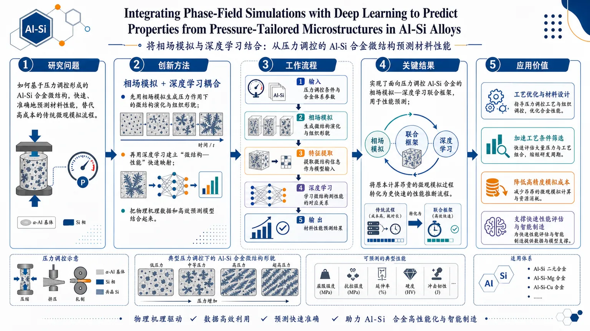
研究问题如何基于压力调控形成的 Al-Si 合金微结构，快速、准确地预测材料性能，替代高成本的传统微观模拟流程。创新方法将相场模拟与深度学习耦合：先用相场模拟生成压力作用下的微结构演化，再用深度学习建立“微结构—性能”快速映射，把物理机理数据和高效预测模型结合起来。工作流程输入压力调控条件与合金体系参数；相场模拟生成微结构演化与组织形貌；提取微结构信息作为模型输入；深度学习学习微结构到性能的对应关系；输出材料性能预测结果。关键结果实现了面向压力调控 Al-Si 合金的相场模拟—深度学习联合框架，用于性能预测；将原本计算昂贵的微观模拟过程转化为更快速的性能推断流程。应用价值可用于 Al-Si 合金的工艺优化与材料设计，加速压力加工条件筛选，降低高精度微观模拟成本，为快速性能评估和智能制造提供支撑。核心概览
该论文属于材料计算与机器学习交叉方向，耦合相场模拟和深度学习，用于根据压力调控的 Al-Si 合金微结构快速预测材料性能。
方法要点
- 使用相场模拟描述或生成压力调控条件下 Al-Si 合金的微结构演化。
- 将微结构信息与材料性能之间建立深度学习映射模型。
- 目标是以深度学习替代或加速高成本微观模拟后的性能预测流程。
- 研究重点包括“微结构演化”和“微结构—性能关系”两个环节。
关键结果
- 摘要明确指出，该工作实现了相场模拟与深度学习的耦合，用于性能预测。
- 该方法面向压力调控微结构的 Al-Si 合金体系。
- 论文目标是将计算成本较高的微观模拟转化为更快速的性能预测流程。
- 具体预测精度、性能指标、训练数据规模、网络结构和实验验证情况，摘要未详述。
创新性判断
- 可能的新颖点在于把“压力调控微结构”这一工艺变量纳入 Al-Si 合金的相场模拟—深度学习性能预测框架中。
- 相比单独相场模拟，该工作可能强调用深度学习加速微结构到性能的映射，提升预测效率。
- 相比单纯数据驱动方法，该工作可能利用相场模拟提供物理相关的微结构演化数据，从而增强模型基础。
- 以上创新性判断仅基于摘要，具体相对于已有工作的差异和优势摘要未详述。
-
05
📊 含图深析
📄 摘要：在量子位制备-测量通信复杂度框架下，已知精确模拟任意量子位态和任意测量需 2 个经典比特。作者用神经网络搜索受限测量族的一比特经典协议，检验单比特能否高精度近似再现实验统计。
📖 英文原文
arXiv:2607.23645v1 Announce Type: cross Abstract: Communication complexity provides a natural framework for quantifying the classical resources required to reproduce quantum statistics. In the qubit prepare-and-measure scenario, two classical bits have been shown to be necessary and sufficient to simulate arbitrary qubit states and arbi- trary quantum measurements exactly. However, this result does not exclude the possibility that restricted families of measurements may admit accurate 1-bit classical approximations. We use a neural network procedure to demonstrate that a single bit can achieve high average accuracy for specific measurement families. A performance analysis of our neural network reveals that symmet- ric measurements with uniformly weighted elements, such as those forming regular polyhedra, are particularly amenable to this restricted communication. By analyzing the patterns learned by the neural network, we derive an analytical protocol that is extremely accurate for finite information- ally complete symmetric configurations and becomes exact in the limit of a continuous isotropic measurement.
💡 亮点：神经网络被用来自动发现量子测量统计的一比特经典近似协议。结果聚焦受限测量族，帮助区分精确经典模拟下界与实际近似可压缩性。
📖 展开分析 + 配图
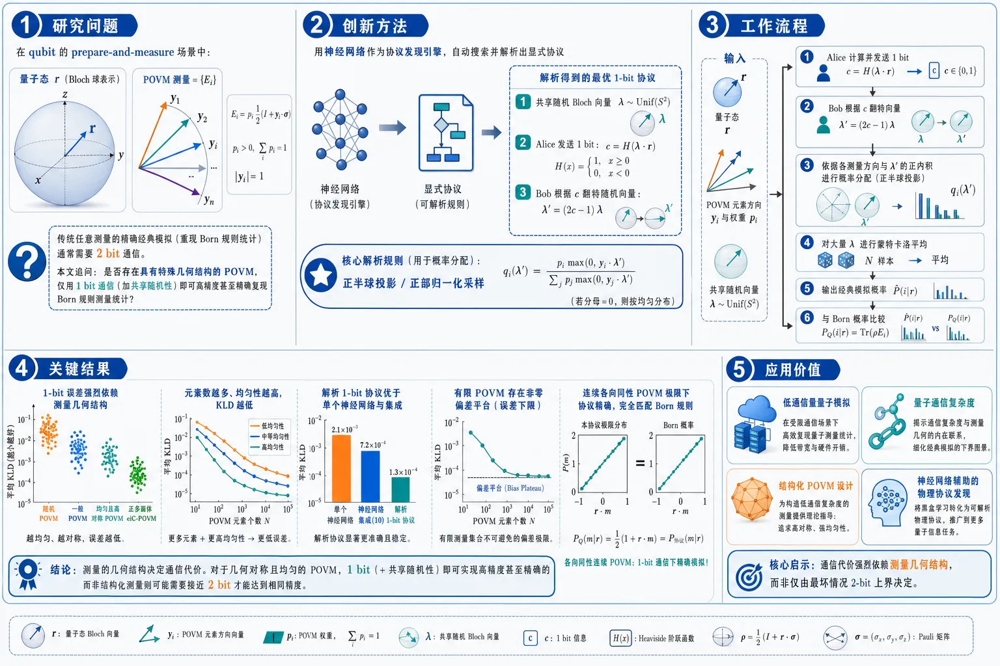
研究问题在 qubit prepare-and-measure 场景中，任意测量精确经典模拟通常需要 2 bit；论文追问：是否存在一类具有特殊几何结构的 POVM，只用 1 bit 通信加共享随机性，就能高精度甚至精确复现 Born 规则测量统计？核心对象是等权、三维高度对称、信息完备的 qubit POVM。创新方法把神经网络当作“协议发现器”而非单纯拟合器：Alice 与 Bob 共享 Bloch 球随机向量，Alice 只发送一个半球判别比特 c=H(λ·r)，网络学习 Bob 的输出分布；随后从黑盒网络响应中抽取出几何规律——概率由正半球投影 (yᵢ·λ)₊ 控制，形成显式 1-bit 解析协议“翻转隐藏向量 + 正部归一化采样”。工作流程输入为量子态 Bloch 向量 r、POVM 元素方向 yᵢ 与权重 pᵢ、共享随机向量 λ；Alice 计算并发送 1 bit：c=H(λ·r)；Bob 根据 c 将 λ 翻转为 λ'=(2c−1)λ；网络或解析协议按各测量方向与 λ' 的正内积分配概率；对大量 λ 做蒙特卡洛平均；输出每个 POVM outcome 的经典模拟概率，并与 Born 概率比较。关键结果随机 POVM 上 1-bit 模拟误差不稳定；当 POVM 权重越均匀、Bloch 向量越对称、越接近三维各向同性时误差显著下降。正多面体 eIC-POVM 表现最好，元素数更多、更均匀时 KLD 更低；解析 1-bit 协议优于单个神经网络和网络集成。有限 POVM 仍有非零偏差平台，但在连续均匀各向同性 POVM 极限下，协议可精确复现 P_Q(m|r)=1+r·m。应用价值揭示量子测量统计的经典通信成本并非只由最坏情形 2-bit 界限决定，而强烈依赖测量几何结构；为低通信量量子模拟、量子通信复杂度分析、结构化 POVM 设计和神经网络辅助发现物理协议提供了可视化、可解析的范例。第一部分：核心概览 (Overview)
这篇工作把量子通信复杂度与神经网络搜索结合起来，锁定了 qubit prepare-and-measure 场景中一类特殊的1-bit 可模拟测量：等权、三维高度对称、信息完备的 POVM。更重要的是，不只给出数值证据，还从网络学到的模式中抽取出显式解析协议，并证明其在连续各向同性 POVM 极限下精确成立。它把“2-bit 最坏情形最优”与“更低平均/结构化成本”的空隙，具体填到了对称测量家族上。
---
第二部分：结构化快速回顾
《Neural Network Learning of One-Bit Protocols for Qubit Measurement Simulation》（None，）
- 背景：qubit prepare-and-measure 场景中，任意测量的精确经典模拟需要 2 bit，但结构化测量子类可能只需 1 bit。
- 方法：用共享随机向量 + 1 个 Heaviside 比特作为输入，训练神经网络逼近 Bob 的输出分布，并按 POVM 逐个训练。
- 结果：随机 POVM 上误差不稳定；等权、高对称、eIC-POVM 上表现显著更好，尤其是正多面体配置。
- 讨论：网络学到的响应呈现清晰几何结构：概率近似由 ( (ěc yᵢḑot ěcłambda)₊ ) 控制。
- 局限：对一般有限 POVM 不是精确的；每个 POVM 都要重新训练；指标主要是平均误差。
- 结论：抽取出的 1-bit 解析协议对有限对称 POVM 高精度、对连续各向同性 POVM 精确。
---
第三部分：逐章节冷凝解析 (Section-by-Section Condensing)
I Introduction
1. 量子统计模拟与通信复杂度的操作性意义
- 量子—经典差异用“复现统计所需的经典通信量”来刻画，PM 框架尤其适合做这种基准。
- 量子态在通信、密码学、维度受限任务中的作用，直接把模拟成本变成了量子表达能力的度量。
- 原文要点："*Communication complexity provides a natural framework for quantifying the classical resources required to reproduce quantum statistics.*"
2. 2-bit 最坏情形界限已知，但不排除更低成本的结构化子类
- 任意 qubit PM 场景的精确模拟已知需要且只需要 2 bits；这同时给出了必要性与充分性。
- 该结论并不排除某些受限测量族可以用更少通信近似或精确模拟。
- 原文要点："*two classical bits are sufficient to simulate arbitrary qubit measurements exactly*"；"*does not exclude the possibility that restricted families of measurements may admit accurate 1-bit classical approximations.*"
3. 平均通信成本与结构限制都可能突破“2-bit 直觉”
- 近年平均通信成本已降到 1.89 bits，说明 2-bit 门槛可能主要来自最坏情形要求。
- 另一条路径是只考虑物理上/操作上有意义的测量子集。
- 原文要点："*simulated with an average communication cost of 1.89 bits*"
4. 神经网络被用作“发现协议”的搜索工具
- 参考 Bell 场景中用 NN 搜索 1-bit 协议的工作，改为在 PM 场景中寻找受限测量族。
- 训练不是直接假设解析形式，而是先做黑盒搜索，再从网络响应中提取结构。
- 原文要点："*using the network as a tool to discover candidate protocols rather than imposing a fixed analytical ansatz from the outset.*"
5. 1-bit 可模拟性的结构信号集中在高对称、等权测量上
- 优化最先筛出的家族是高度对称 POVM，其元素在 Bloch 球上接近均匀分布。
- 进一步分析得到：有限 eIC-POVM 上高精度、输出数增大时误差下降，连续极限变成精确。
- 原文要点："*highly-symmetric POVMs whose elements are distributed close to uniformly on the Bloch sphere.*"；"*becomes exact in the limit of a continuous isotropic measurement.*"
---
II Background
1. POVM 与 qubit Born 规则的 Bloch 表示
- 一般 (m) 输出测量由 POVM (mathcal M=Mᵢᵢ₌₁^m) 描述，满足 (sumᵢ Mᵢ₌øpenone)。
- qubit 情形写成 (Mᵢ₌ₚᵢ₍øpenone+ěc yᵢḑotěcσ))，状态写成 (h̊o=(øpenone+ěc rḑotěcσ)/2)。
- 概率为
[
P_Q(i|h̊o,mathcal M)=pᵢ₍₁₊ěc yᵢḑot ěc r).
]
- 原文要点："*The probability of obtaining outcome i when applying (mathcal M) on a generic state (h̊o) is given by the Born rule*"；"*P_Q(i|h̊o,M)=pᵢ₍₁₊ěcyᵢḑotěcr).*"
2. prepare-and-measure 场景的经典模拟定义
- Alice 持有 Bloch 向量 (ěc r)，Bob 持有 POVM 参数 (Y=(pᵢ,ěc yᵢ₎)。
- 精确模拟要求对所有 (i,ěc r,Y) 都满足 (P_C=P_Q)。
- 若只在选定状态/测量类上、或仅近似满足，则称为 approximate simulation。
- 原文要点："*The protocol exactly simulates the quantum PM scenario if ... (P_C(i|ěcr,Y)=P_Q(i|h̊oěc ᵣ,mathcal M_Y)).*"
3. 2-bit 精确协议的核心机制：共享随机向量、Heaviside 比特、翻转隐藏变量
- 共享 (ěcłambda₁,ěcłambda₂ᵢₙmathbb S²)。
- Alice 发 (c₁₌H(ěcłambda₁ḑotěc r)), (c₂₌H(ěcłambda₂ḑotěc r))。
- Bob 将 (ěcłambdaᵢ) 按 (cᵢ) 翻转为 (ěcłambdaᵢ'=(2cᵢ₋₁₎ěcłambdaᵢ)。
- 再比较 (|ěcłambda₁'ḑot ěc yᵢ|) 与 (|ěcłambda₂'ḑot ěc yᵢ|)，选出 (ěcłambda') 并按式 (5) 采样输出。
- 原文要点："*Alice computes the classical bits (c₁₌H(ěcłambda₁ḑotěcr)), (c₂₌H(ěcłambda₂ḑotěcr))*"；"*Bob defines the effective hidden variables (ěcłambdaᵢ'=(2cᵢ₋₁₎ěcłambdaᵢ).*"
4. 2-bit 协议的诱导分布具有显式形式
- 协议统计可写为对 (mathbb S²) 上分布 (h̊o(ěcłambda|ěc r,Y)) 的积分。
- 有效分布为
[
h̊o(ěcłambda|ěc r,Y)=8H(ěc rḑotěcłambda)sumⱼ pⱼ₍ěc yⱼḑotěcłambda)H(ěc yⱼḑotěcłambda).
]
- 这为后续 1-bit 结构提供了模板。
- 原文要点："*the effective distribution (h̊o(ěcłambda|ěcr,Y)) ... is given by*"
5. 纯态与 rank-one POVM 足够覆盖一般 qubit 情形
- 状态可只看纯态 (|ěc r|=1)，混态可吸收到共享随机性中。
- 测量可只看 rank-one refinement，通用 POVM 可经经典后处理得到。
- 原文要点："*it is enough to consider pure states*"; "*it is enough to consider POVM elements proportional to rank-one projectors.*"
---
III Neural Network learning procedure
1. 1-bit 设定：共享随机向量加一个 Heaviside 比特
- Alice 与 Bob 共享均匀采样的 (ěcłambdainmathbb S²)。
- Alice 发送单比特 (c=H(ěcłambdaḑot ěc r))。
- NN 的输入是 ((c,ěcłambda))，输出 Bob 的响应分布 (Pₘ̊ NN(i|c,ěcłambda,Y))。
- 原文要点："*Alice sends to Bob the single bit (c=H(ěcłambdaḑotěcr)).*"
2. 训练目标是让平均后的 NN 概率逼近 Born 概率
- 对固定状态，网络输出在 (mathbb S²) 上平均得到
[
Pₘ̊ NN(i|ěc r,Y)=intₘₐₜₕbb S^₂ děcłambda,Pₘ̊ NN(i|H(ěcłambdaḑotěc r),ěcłambda,Y).
]
- 训练集用 (M) 个 Haar-random 纯态；每个状态再采样 (N) 个共享随机向量。
- 原文要点："*The training set consists of (M) Haar-random pure input states*"; "*In practice, this integral is estimated by Monte Carlo sampling.*"
3. 损失函数与评价指标分别用 MSE 和 MAE
- 训练损失：
[
mathcal Lₘ̊ MSE=frac1Msumⱼ₌₁^Msumᵢ₌₁^m[bar pᵢ⁽j⁾-P_Q(i|h̊o_ěc r⁽j⁾,mathcal M_Y)]².
]
- 评价用 MAE：
[
MAE=frac1Msumⱼ₌₁^Msumᵢ₌₁^m|bar pᵢ⁽j⁾-P_Q(ḑot)|.
]
- MSE 适合优化，MAE 更直观地衡量平均绝对偏差。
- 原文要点："*We use MSE as the training loss because it is smooth and penalizes large deviations more strongly*"；"*the MAE directly quantifies the average absolute discrepancy*"
4. 逐个 POVM 重新训练，但网络响应可反推出 POVM 无关协议
- 每个 POVM 都单独训练一个网络。
- 结果不是直接给出统一网络，而是从训练结果中提炼出一个不依赖具体 POVM 的 1-bit 规则。
- 原文要点："*for each POVM ... the neural network must be retrained. Nevertheless ... we infer a POVM-independent 1-bit protocol.*"
---
IV Numerical performance
1. 默认数值设置给出稳定的训练/测试折中
- 训练阶段：(N=4000)，(M=2000)。
- 测试阶段：(N=4000)，(M=1000)。
- 原文要点："*we fix the parameters to (N=4000) shared randomness samples and (M=2000) input states during the training stage and (N=4000), (M=1000) during the test stage.*"
2. 随机 POVM 上，1-bit NN 的 MAE 总体优于直觉不足，但不优于 Born-sampling baseline
- 对 (m=3) 到 (m=8) 的随机 POVM，做了 100 次实验。
- NN 的 MAE 系统性大于直接从 Born 规则有限采样得到的误差。
- 但部分实例明显更好，接近 sampling baseline。
- 原文要点："*Fig. 3 summarizes the MAE obtained in 100 experiments over 100 different randomly generated POVMs with numbers of outcomes ranging from (m=3) to (m=8).*"
3. POVM 权重越均匀，1-bit 近似越好
- 用 POVM 权重标准差 Std 作为结构指标。
- Std 越小，说明 (pᵢ) 越接近均匀；Std=0 对应 (pᵢ₌₁/m)。
- MAE 随 Std 降低而显著改善，所有 (m) 都如此。
- 原文要点："*the accuracy of the NN-procedure improves significantly as this standard deviation decreases*"
4. e-POVM 的几何结构是单位范数紧框架
- 等权 rank-one POVM 可写成 ( frac2m|ψᵢånglełangleψᵢ| ᵢ₌₁^m)。
- 规范化条件等价于 (sumᵢ |ψᵢånglełangleψᵢ|=(m/2)øpenone)，即unit-norm tight frame。
- Bloch 球几何上等价于 (sumᵢ ěc yᵢ₌₀) 且 (|ěc yᵢ|=1)。
- 原文要点："*we refer to this class as equal-trace rank-one POVMs or e-POVMs*"; "*the vectors ... form a unit-norm tight frame.*"
5. 正多边形与正多面体之间存在清晰差异
- 三角形、正方形、五边形、六边形等平面多边形不是 informationally complete。
- 正多面体张成 (mathbb R³)，因此是 eIC-POVM。
- NN 在正多面体上明显更接近 Born baseline。
- 原文要点："*regular polygons lie in a plane and are therefore not informationally complete, whereas regular polyhedral configurations span (mathbb R³) and define eIC-POVMs.*"
6. 数值结论归纳为两条
- 1-bit NN 可高精度复现某些 POVM 的统计。
- 性能强烈依赖测量结构，最好的是高度对称 eIC-POVM。
- 原文要点："*the protocol performs best for eIC-POVMs in highly symmetric configurations.*"
---
V Inferred classical 1-bit protocol
#### V.1 Extraction and definition of the 1-bit protocol
1. 从八面体配置中抽取出几何响应规律
- 选用六方向笛卡尔配置：(± hat x,± hat y,± hat z)，即八面体 POVM。
- 单个网络输出有平滑几何依赖，但训练随机性带来波动。
- 对 100 个独立训练网络取平均后，边界结构变得清晰。
- 原文要点："*we average the response probabilities over 100 independently trained networks*"
2. 网络学到的核心模式是“正半球线性、负半球近零”
- 对 (c=1)，与 (ěc yᵢ) 对应的概率在其反侧半球近乎为 0，在中心半球内近似与 (ěc yᵢḑotěcłambda) 线性增长。
- 对 (c=0)，对应 (ěcłambdamapsto -ěcłambda)。
- 原文要点："*approximately zero on the hemisphere opposite to (ěcyᵢ), and increases approximately linearly with the scalar product (ěcyᵢḑotěcłambda).*"
3. 显式 1-bit 协议由“翻转隐藏变量 + 正部采样”组成
- Alice 发 (c=H(ěcłambdaḑotěc r))。
- Bob 设 (ěcłambda'=(2c-1)ěcłambda)。
- Bob 按
[
P₁₋bᵢₜ(i|ěcłambda',Y)=frac(ěc yᵢḑotěcłambda')H(ěc yᵢḑotěcłambda'){sumⱼ₍ěc yⱼḑotěcłambda')H(ěc yⱼḑotěcłambda')}
]
生成输出。
- 原文要点："*This motivates the following 1-bit protocol*"；"*Bob flips the shared vector whenever (c=0).*"
4. 该协议的几何意义与 NN 响应高度一致
- 概率在对应 Bloch 向量 (ěc yᵢ) 方向达到最大。
- 只在与 (ěc yᵢ) 同侧的半球中分配概率。
- 原文要点："*Its geometric structure closely reproduces the ensemble-averaged neural network response*"
#### V.2 Numerical performance
5. 用 KLD 检验完整分布，比 MAE 更敏感
- 评估指标换成 Kullback-Leibler divergence (KLD)。
- KLD 对小概率尾部更敏感，因此比 MAE 更能区分全分布形状。
- 原文要点："*the KLD is more sensitive to the full shape of the probability distribution*"
6. 测试对象覆盖六种正 eIC-POVM
- 四面体 (m=4)、八面体 (m=6)、六面体 (m=8)、二十面体 (m=12)、十二面体 (m=20)、icosidodecahedron (m=30)。
- 原文要点："*six e-POVMs: the tetrahedron, the octahedron, the hexahedron, the icosahedron, the dodecahedron, and the icosidodecahedron*"
7. KLD 随采样数下降，但 1-bit 协议在有限 POVM 上出现非零平台
- 小样本时 KLD 主要被统计涨落主导。
- Born sampling baseline 继续趋近 0。
- 1-bit 协议最终停在非零平台，表示存在固有偏差，故对有限 POVM 不是精确的。
- 原文要点："*This plateau represents the intrinsic bias of the protocol with respect to the Born probabilities and shows that the finite-POVM simulation is not exact.*"
8. 对称性越强、元素越多，有限 POVM 逼近越好
- 误差在 dodecahedron 和 icosidodecahedron 上尤其小。
- 这说明更多、更均匀分布的 Bloch 向量给出更好的连续极限近似。
- 原文要点："*the intrinsic discrepancy becomes small for the POVMs with larger and more isotropically distributed sets of Bloch vectors*"
9. 解析协议比单个网络和网络集成都更准
- 在 (N=10⁵)、(M=20) 的比较中，解析 1-bit 规则的平均 KLD 小于单网络和 10 网络集成。
- 集成并未提高统计精度，但帮助识别几何模式。
- 原文要点："*the analytical protocol gives a smaller KLD than both the single-network response and the ensemble-average neural network response*"
#### V.3 The continuous POVM limit
10. 连续均匀 POVM 极限中，1-bit 协议变为精确
- 步骤 3 后的分布变为
[
h̊o(ěcłambda|ěc r)=2H(ěc rḑotěcłambda).
]
- 对连续 POVM (mathcal M=2|ěc månglełangle ěc m|,děc měc ₘᵢₙₘₐₜₕbb S^₂)，量子概率密度为
[
P_Q(ěc m|h̊oěc ᵣ,mathcal M)=1+ěc rḑotěc m.
]
- 由旋转对称性，分母 (int děc m,(ěc mḑotěcłambda)H(ěc mḑotěcłambda)=1/4)。
- 原文要点："*in the limit of a continuous uniform POVM ... yields the exact quantum probability density*"
11. 该极限中概率成为“常数项 + 线性项”
- 用 (xH(x)=(x+|x|)/2) 后，表达式分成一项与 (ěc rḑotěc m) 成正比、另一项为常数。
- 这正是连续各向同性测量的精确形式。
- 原文要点："*The first term is proportional to (ěcrḑotěcm), while the second is again a number*"
12. 有限情形的边界精确性
- 在八面体配置中，当 (ěc r=ěc yᵢ) 时，对所有 outcome 都可精确。
- 但对一般有限 POVM，仍存在约 (10⁻³) 量级偏差的例子。
- 原文要点："*one can show that the 1-bit protocol is exact for all outcomes*"; "*discrepancy of (mathcal O(10⁻³)).*"
---
第四部分：深度理解与语言支持 (Understanding & Nuance)
1. POVM
- 含义不是“一个投影测量”，而是更一般的正算符值测度。
- 在这篇语境里，POVM 允许非正交、非幺正基的测量结构，因此比 projective measurement 更宽泛，也更容易出现“结构化可模拟性”。
2. informationally complete (IC)
- 指测量输出足以重构任意 qubit 态。
- 几何上等价于测量向量在 Bloch 球上张成三维空间。
- 与“只是对称但不 IC”的平面多边形相比，IC 测量更接近完整表征量子态。
3. unit-norm tight frame
- 不是正交基，而是一组“长度相同、整体平衡”的向量系统。
- 条件 (sumᵢ |ψᵢånglełangleψᵢ|=(m/2)øpenone) 表明它们在整体上各向均匀，但单个向量之间可以相关。
- 这是等权 rank-one POVM 的几何本质。
4. Heaviside step function (H(x))
- 这里不是一般的“阈值函数”那么简单，而是在 Bloch 球上把向量空间切成两个半球。
- 比特 (c=H(ěcłambdaḑotěc r)) 本质上只告诉 Bob：(ěc r) 与 (ěcłambda) 是否同侧。
- 这种极低带宽信息之所以有效，靠的是共享随机性和后续的几何重加权。
5. Kullback-Leibler divergence (KLD)
- 不只是“误差大小”，而是两个完整概率分布之间的信息差距。
- 对极小概率事件更敏感，所以比 MAE 更适合检验“输出分布形状是否真的对”。
---
第四部分：疑难查证
为什么 1 bit 只能近似有限 POVM，却能在连续极限精确？
- 关键在于对称性平均。
- 有限 POVM 只在有限个方向上采样，分母
[
sumⱼ (ěc yⱼḑot ěcłambda)H(ěc yⱼḑot ěcłambda)
]
难以完全抵消离散各向异性，因此留下平台偏差。
- 当 POVM 趋于连续均匀分布时，所有方向都被平均，旋转对称性把分母固定成常数 (1/4)，剩余结构只保留 (ěc rḑotěc m) 的线性项，于是正好复原 Born 规则。
- 直观上，这相当于“离散采样误差”随着测量点数增多而消失。
为什么正多面体比平面多边形更适合 1-bit 模拟？
- 1-bit 协议的响应本质上依赖三维 Bloch 球上的半球切分。
- 平面多边形只探索二维截面，信息完备性不足，无法与协议的三维几何结构充分匹配。
- 正多面体则在三维中更均匀地覆盖方向，和“共享随机球面向量 + 半球阈值”这套机制天然一致。
---
第五部分：创新评估与关联 (Synthesis & Novelty)
新颖性集中在三点。
- 问题层面的推进
- 过去 2–5 年的相关工作主要集中在 Bell 场景中的 1-bit 近似模拟，或 PM 场景中的 2-bit 精确模拟与平均成本优化。
- 这里把问题推进到：qubit PM 场景中哪些结构化测量族能被 1 bit 高精度甚至精确模拟。
- 方法层面的推进
- 神经网络不只是拟合器，而是被当作协议发现器。
- 从黑盒响应里提炼出清晰的几何规律 ( (ěc yᵢḑotěcłambda)₊ )，再转写成显式解析协议，这是比单纯数值逼近更强的一步。
- 结论层面的推进
- 证明了高对称、等权、eIC-POVM 是 1-bit simulability 的自然栖息地。
- 对有限正多面体给出高精度近似，对连续各向同性 POVM 给出精确协议，补上了“2-bit 最坏情形界限”与“更低结构化成本”之间的理论空白。
如果需要，可以继续把 式 (13)–(22) 的推导逻辑拆成一条“从 NN 现象到解析协议再到连续极限精确性”的推演链。
-
06
📊 含图深析
📄 摘要：提出早期量子设备在经典科学工作流中承担统计模块的方案：压缩记忆加双拷贝集体读出，并给出可验证的实用量子优势定义。用于混沌动力系统的量子启发机器学习，构造 k 指标高阶量子统计先验 Q-Priors，在 n_q=kq 量子位上承载不变量测度的 k 点边缘分布。
📖 英文原文
arXiv:2606.13422v4 Announce Type: replace-cross Abstract: Early quantum devices can deliver a practical advantage before fault tolerance. The role we identify is a statistical module within a classical scientific workflow: a compressed memory with a collective two-copy readout, evaluated against a verifiable definition of practical quantum advantage. We develop this mechanism in quantum-informed machine learning for chaotic dynamical systems. A family of k-indexed higher-order quantum statistical priors (Q-Priors) hosts the k-point marginal of the invariant measure on n_q = kq qubits. We prove a two-stage advantage. In the representation stage, superposition and entanglement compactly store non-factorisable spatial correlations of the invariant measure on n_q qubits. In the extraction stage, joint Bell measurements estimate any emphpost hoc Pauli functional with a copy-pair count independent of n_q, whereas any adaptive single-copy protocol for the corresponding full-Pauli read-out requires Ømega(2ⁿ_q) copies; this is a provable quantum-classical separation in copy-measurement complexity. The two-copy read-out is realised in simulation and on superconducting processors. Two case studies instantiate the mechanism in workflows of scientific value. In a turbulent channel-flow study, the readout yields the velocity-direction coherence as a named non-diagonal correlator, and the k = 2 Q-Prior recovers invariant-measure statistics that the unregularised baseline loses. In a medium-range weather forecasting workflow on the ECMWF ERA5 reanalysis, the diagonal k łeq 2 Q-Prior steers a Koopman rollout, improves anomaly correlation skill and stabilises long-horizon rollouts against collapse onto a static mean field. Together, the mechanism and these two case studies satisfy our practical-advantage definition, identifying a candidate route to practical quantum advantage before fault-tolerant hardware.
💡 亮点：该方案把近期量子设备定位为混沌动力学 ML 中的高阶统计先验模块。核心是 Q-Priors 与双拷贝读出，为容错前量子优势给出可检验工作流。
📖 展开分析 + 配图
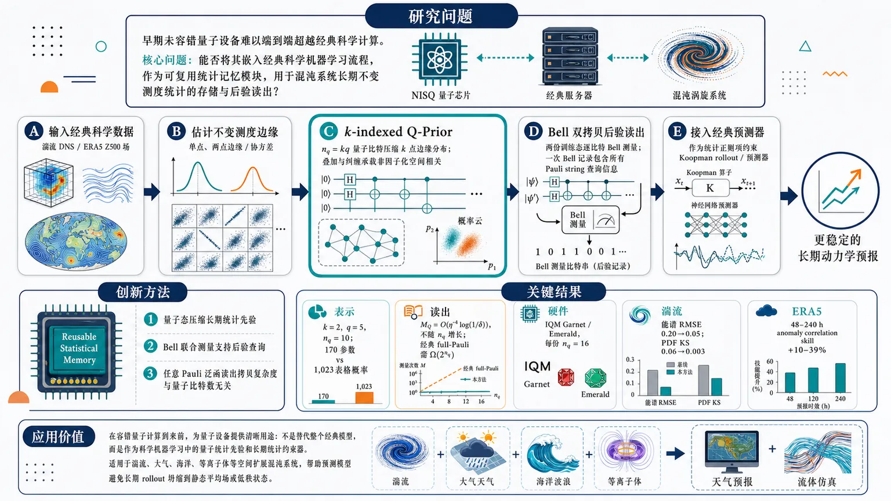
研究问题早期、未容错量子设备难以端到端超越经典科学计算；核心问题是：能否把它们嵌入经典科学机器学习流程，作为“可复用统计记忆模块”，在混沌系统长期不变测度统计的存储与后验读出上产生可证明、可实验验证的实用量子优势。创新方法提出 k-indexed Q-Prior：用 n_q=kq 个量子比特压缩编码混沌系统不变测度的 k 点边缘分布，以叠加和纠缠承载非因子化空间相关；关键 Aha 点是用两份训练态做 Bell 联合测量，一次 Bell 记录同时包含所有 Pauli string 的后验读出信息，使任意 Pauli 泛函查询的拷贝复杂度与量子比特数无关。工作流程输入经典科学数据，如湍流 DNS 或 ERA5 Z500 场；从长期样本估计不变测度的单点、两点边缘或协方差；训练参数化量子电路生成 Q-Prior 态；复制两份训练态并逐量子比特配对做 Bell 测量；测量后再给定 Pauli 查询，通过经典后处理得到统计相关量；将 Q-Prior 统计作为正则项接入经典 Koopman rollout 或预测器，输出更稳定的长期动力学预报。关键结果表示上，在 k=2、q=5、n_q=10 时，Q-Prior 生成器只用 170 个参数表示显式表格需 1,023 个独立概率的两点联合统计；读出上，Bell 双拷贝协议需 M_Q=O(η⁻⁴ log(1/δ)) 拷贝对且不随 n_q 增长，而自适应单拷贝 full-Pauli 读出需 Ω(2ⁿ_q) 拷贝。硬件在 IQM Garnet 与 Emerald 上扩展到每份 n_q=16；湍流中能谱 RMSE 从 0.20 降到 0.05，速度 PDF KS 距离从 0.06 降到 0.003；ERA5 中 48–240 小时 anomaly correlation skill 提升 10–39%。应用价值为容错量子计算到来前的量子设备提供清晰用途：不是替代整个经典模型，而是作为科学机器学习中的量子统计先验和长期统计约束器。它可用于湍流、大气、海洋、等离子体等空间扩展混沌系统，帮助预测模型避免长期 rollout 坍缩到静态平均场或低秩状态，并为天气预报、流体仿真等高价值任务提供可验证的模块化量子增益。第一部分：核心概览 (Overview)
该研究提出一种容错前实用量子优势路线：把早期量子设备定位为经典科学工作流中的专用统计记忆模块，用 Q-Prior 压缩表示混沌系统不变测度的低阶边缘统计，并用双拷贝 Bell 测量在后验 Pauli 查询中实现与单拷贝协议的指数级测量复杂度分离。贡献不在通用量子加速，而在可验证的科学机器学习模块化优势，并通过湍流与 ERA5 预报案例连接物理意义、硬件可实现性和工作流价值。
---
第二部分：结构化快速回顾
《Practical Quantum Advantage before Fault Tolerance via Quantum-Informed Machine Learning》（None，）
背景
通用容错量子计算仍不确定，早期量子设备难以凭借完整算法替代经典计算。科学工作流中的输入加载、测量读出和强经典基线会削弱许多声称的量子加速。混沌动力系统的不变测度提供了稳定、可检验的长期统计目标。
方法
构建 k-indexed Q-Priors，在 (n_q=kq) 个量子比特上编码不变测度的 (k)-点边缘分布；通过参数化量子电路训练一次，并在下游 Koopman 类预测器中作为统计正则项。读出阶段使用两份训练态的 Bell joint measurement，后验估计任意 Pauli 泛函。
结果
表示阶段：在 (k=2,q=5,n_q=10) 的案例尺度，训练生成器用 170 个参数，对应显式表格需 1,023 个独立概率。读出阶段：Bell 双拷贝测量以 (M_Q=O(η⁻⁴łog(1/δ))) 的拷贝对数估计任意 Pauli 期望，且与 (n_q) 无关；自适应单拷贝 full-Pauli 读出需 (Ømega(2ⁿ_q)) 份拷贝。硬件实验在 IQM Garnet 与 Emerald 上扩展到每份 (n_q=16)。
讨论
优势被限定为测量访问模型中的拷贝测量复杂度分离，而非声称经典计算不可模拟。Q-Prior 的价值依赖于目标系统存在非因子化空间相关，且低阶边缘可由多项式规模量子电路有效制备。
局限
表示优势不是对所有经典生成模型的排除；紧致经典生成模型仍可能存在。若不变测度近似因子化，Q-Prior 会退化为产品态，量子模块无法提供超越经典产品模型的有效统计约束。所给材料在 ERA5 案例后半部分截断，完整训练设置、表格与附录数值无法全部核验。
结论
早期量子设备可作为科学机器学习中的可复用统计先验读出模块产生实用优势：表示上压缩非因子化不变测度边缘，读出上通过双拷贝 Bell 测量获得可证明的指数级单拷贝分离，并在湍流和天气预报工作流中显示经验价值。
---
第三部分：逐章节冷凝解析 (Section-by-Section Condensing)
Abstract
- Early quantum devices are framed as special-purpose statistical modules
核心定位不是通用量子计算，而是容错前科学工作流中的专用统计模块：早期量子设备承担“压缩记忆 + 双拷贝集体读出”的角色。摘要直接给出功能定义：*"The role we identify is a special-purpose statistical module inside a classical scientific workflow: a compressed memory with a collective two-copy read-out"*。这一定义把量子优势从“全流程加速”转移到模块化资源优势。
- Q-Priors extend prior single-site constructions to k-point invariant-measure marginals
Q-Prior 被扩展为 (k)-索引族，在 (n_q=kq) 个量子比特上承载不变测度的 (k)-点边缘分布。关键表述为：*"A family of k-indexed higher-order quantum statistical priors (Q-Priors) hosts the k-point marginal of the invariant measure on (n_q=kq) qubits, extending the single-site construction of prior work."* 这意味着从单点统计扩展到多点空间相关，目标是捕捉非因子化结构。
- Two-stage advantage separates representation and extraction
优势被拆成表示阶段与提取阶段。表示阶段依靠叠加与纠缠紧凑存储非因子化空间相关；提取阶段通过两份态的 Bell 测量估计 Pauli 泛函。摘要明确写道：*"We prove a two-stage advantage. In the representation stage, superposition and entanglement compactly store non-factorisable spatial correlations"*；又写道：*"In the extraction stage, joint Bell measurements on two copies estimate any post hoc Pauli functional with a copy-pair count independent of (n_q)"*。
- Copy-measurement separation is the formal quantum-classical separation
可证明分离发生在拷贝-测量复杂度上，而不是一般运行时间上。双拷贝 Bell 测量的拷贝对数与 (n_q) 无关；对应的自适应单拷贝 full-Pauli 协议需要 (Ømega(2ⁿ_q)) 份拷贝。摘要给出强表述：*"whereas any adaptive single-copy protocol for the corresponding full-Pauli read-out requires (Ømega(2ⁿ_q)) copies; this is a provable quantum-classical separation in copy-measurement complexity."*
- Hardware implementation is demonstrated on IQM superconducting processors
双拷贝读出不仅在理论与模拟中完成，也在 IQM 超导处理器上实现。摘要写道：*"The two-copy read-out is realised in simulation and on IQM superconducting processors."* 后文细化为 Garnet 20-qubit 与 Emerald 54-qubit，最高达到每份 (n_q=16)，两份共 32 物理量子比特寄存器。
- Turbulent channel flow validates physical meaning of non-diagonal read-out
湍流通道流案例中，非对角读出被解释为不变测度的速度方向相干性。摘要给出物理映射：*"the two-copy read-out yields the velocity-direction coherence as a named non-diagonal correlator of the invariant measure"*。同时，(k=2) 多站点 Q-Prior 恢复了 DNS 级别统计：*"the multi-site (k=2) Q-Prior recovers DNS-level invariant-measure statistics that the unregularised baseline loses."*
- ERA5 forecasting shows workflow-level empirical value
天气预报案例使用 ERA5 再分析数据，采用对角 (kłeq2) Q-Prior 引导 Koopman rollout，并在 48–240 h 预报时效上改进 anomaly correlation skill。摘要给出范围：*"improves anomaly correlation skill by 10 to 39% across 48 to 240 h lead times"*，并指出它能防止长时程预报坍缩为静态平均场：*"stabilises long-horizon rollouts against collapse onto a static mean field."*
---
I Introduction
- Fault-tolerant quantum computing is not near enough to be a practical waiting strategy
引言以现实约束开场：通用容错量子计算路线仍不确定，早期纠错设备的可用规模不会显著超过当前噪声设备。关键句为：*"Roadmaps to general-purpose fault-tolerant quantum computing remain uncertain, and the transition will be gradual"*；并进一步指出：*"early error-corrected machines are not expected to differ greatly in usable scale from present noisy devices"*。因此，“等待硬件突破”不是当前科学应用策略：*"waiting for a decisive hardware break is not a strategy for scientific applications today."*
- Past quantum speedups often reflected classical algorithmic immaturity
引言明确区分“表观量子加速”与“基本量子资源”。很多已报道量子加速后来被改进的经典算法追平或超越：*"many of the quantum speedups that have been reported have since been matched or surpassed by improved classical algorithms."* 由此得出严格标准：*"Establishing a genuine advantage therefore demands both rigorous proof and experimental verification."*
- Sampling advantage does not directly answer scientific workflow usefulness
随机线路采样与 Gaussian boson sampling 确立了量子-经典分离，但任务分布是为经典困难性构造的，而非独立科学问题。引言写道：*"random-circuit and Gaussian boson sampling, establish provable quantum–classical separations on distributions constructed to be classically hard, rather than on scientific problems of independent interest"*。因此它们不能说明当前设备对科学家具体有何用途：*"Neither tells a working scientist what a present device is for."*
- The operative question is modular usefulness inside classical scientific workflows
核心问题被表述为：早期量子设备在经典数据驱动科学工作流中能承担什么角色。引言强调输入加载、测量读出和强经典基线都会破坏加速：*"where input loading, measurement read-out and strong classical baselines can each independently destroy a speedup."* 因此研究对象转为特殊用途统计模块，即训练一次、后验查询 Pauli 泛函的压缩表示：*"a compressed representation of a domain-specific invariant statistic, trained once on classical scientific data and queried post hoc for Pauli functionals revealed only at read-out time."*
- Chaotic dynamical systems provide a natural target through invariant measures
混沌系统虽短期点预测受 Lyapunov 时间限制，但长期统计由不变测度控制。引言说明：*"Chaotic dynamical systems with a well-defined invariant measure are the natural first setting"*。相较普通生成式目标，不变测度是动力系统中的规范统计对象：*"their invariant measure is a canonical statistical object in dynamical systems"*，且长期 rollout 稳定性由其统计保真度控制：*"long-horizon rollout stability of classical predictors is governed by statistical fidelity to it."*
- Practical quantum advantage is defined by proof plus empirical instantiation
工作定义要求两项同时满足：一是对一般问题类的任务相关资源量子-经典分离；二是该机制在有独立科学价值的工作流中实例化。定义原文为：*"A practical quantum advantage in scientific machine learning holds when two conditions are met jointly: (i) a provable quantum–classical separation in a task-relevant computational resource, established for a general class of problems; and (ii) an empirical instantiation of the resulting advantage mechanism within a workflow that addresses a problem of independent scientific value."*
- Representation-stage quantitative benchmark is explicit at (n_q=10)
Result 1 给出表示压缩：(k)-点边缘在 (n_q=kq) 量子比特上承载；案例尺度 (n_q=10) 时，训练生成器有 170 个线路参数，而显式表格有 1,023 个独立结果概率。引言给出精确数字：*"at the case-study scale (n_q=10), the trained generator carries 170 circuit parameters against the 1,023 explicit outcome probabilities of the tabulated marginal."*
- Read-out-stage quantitative benchmark gives large copy-count ratios
Result 2 给出后验 Pauli 读出的拷贝复杂度分离。双拷贝 Bell 测量需 (M_Q=O(η⁻⁴łog(1/δ)))，与 (n_q) 无关；单拷贝 full-Pauli 协议需 (Ømega(2ⁿ_q))。引言提供硬数值：*"measured, (M_Q=800) copy pairs stand against a single-copy cost of (1.5×10⁶) at (n_q=10), and the ratio reaches (M_C/M_Qapprox1.3×10⁶) at (n_q=16)."*
- Three complementary empirical legs divide meaning, scaling and workflow value
实证结构被分成三部分：湍流案例解释非对角读出的物理意义，Fig. 2 验证缩放，ERA5 案例验证工作流价值。引言总结为：*"Case 1 fixes meaning, Fig. 2 fixes scaling, and Case 2 fixes workflow value."* 这对应实用优势定义中的经验实例化条件。
---
II Q-Prior mechanism and two-stage advantage
- Q-Prior is a sample-based quantum statistical prior for invariant-measure statistics
Q-Prior 定义为由参数化生成器产生的样本型量子统计先验，用于编码经典混沌系统不变测度的低阶统计。章节开头写道：*"A Q-Prior is a sample-based quantum statistical prior produced by a parametrised generator and intended to encode the low-order statistics of the invariant measure of a classical chaotic dynamical system."* 这里的对象不是完整概率表，而是训练好的量子生成态及其受约束统计。
- The family is indexed by order (k) and Pauli class
Q-Prior 被视为由阶数 (k) 和读出 Pauli 类索引的参数化族，既包含此前的对角 (k=1) 单站点版本，也包含多站点联合边缘。原文为：*"We treat the Q-Prior as a parametrised family indexed by the order (k) and the Pauli class extracted at read-out, with the construction of Wang et al. corresponding to the diagonal (k=1) (single-site) member."*
- Training once avoids repeated full-field loading during downstream inference
架构强调“训练一次，重复读出”。训练好的状态向下游经典预测器提供可复用边缘与相关统计，避免推理时反复加载完整场。章节写道：*"training once and measuring a reusable statistical object avoids repeated loading of full fields during downstream inference, addressing the loading and read-out obstacles of the Introduction together rather than separately."*
- The generator state and Born probabilities are formally specified
对 (k) 个空间位置、每个位置 (B=2^q) 个离散 bin，生成器作用于 (n_q=kq) 个量子比特，制备
[
h̊o⁽k⁾_θ=U(θ)|0ⁿ_qånglełangle0ⁿ_q|U^dagger(θ),
quad
p_θ(s)=|łangle s|U(θ)|0ⁿ_qångle|².
]
原文说明：*"Here (p_θ(s)) is the Born-rule probability of computational-basis outcome (s); training adjusts (θ) from finite data so that chosen low-order marginals or moments of (h̊o⁽k⁾_θ) track targets."*
- The learned object is not full access to (p_θ)
关键限制是：学习对象不是对 (2ⁿ_q) 个结果概率的完整访问，而是拟合后的生成态及其经验约束统计。原文明确：*"The learned object is this fitted generator state and its empirically constrained statistics, not access to the full (p_θ) over all (2ⁿ_q) outcomes."* 这防止把量子态误解为可免费读取的指数级表格。
- Multi-site Q-Priors access spatial correlations missing from single-site models
(k)-索引扩展允许访问不变测度 (μ) 的多站点联合边缘，捕捉单站点估计无法分辨的空间相关。章节写道：*"The (k)-indexed family extends the single-site estimator of Wang et al. to multi-site joint marginals of (μ), accessing spatial correlations of (μ) that the single-site case does not resolve."*
- Invariant-measure fidelity remains meaningful beyond Lyapunov decorrelation
混沌 rollout 的逐点可预测性在 Lyapunov 时间衰减，但分布长期收敛到不变测度，因此统计保真仍是长期目标。原文为：*"For chaotic rollouts, pointwise predictability decays on the Lyapunov time, but the rollout distribution converges to (μ) in the ergodic limit; statistical fidelity to (μ) therefore remains a meaningful long-horizon target."*
- Superposition and entanglement play distinct representation roles
叠加提供指数维 Hilbert 空间，允许 (p_θ(s)) 有广泛支撑；纠缠门使权重非因子化，能存储空间扩展相关。章节写道：*"Superposition supplies an exponentially large Hilbert space for (h̊o⁽k⁾_θ), so the induced weights (p_θ(s)) can have extensive support; entangling gates make those weights non-factorisable"*。非因子化被定义为不能写成单站点分布乘积：*"meaning they cannot be written as a product of single-site distributions."*
- Weather regulariser enforces second-moment invariant-measure fidelity
ERA5 案例使用 (kłeq2) Q-Prior 通过协方差正则项约束 rollout：
[
Lₜₒₜ=Lᵣₑc+łambda|widehatΣₜ₋Σ_Q|_F².
]
原文解释：*"Equation (3) enforces the dynamics-measure duality at the level of second moments: (Σ_Q) is a quantum-compressed approximation to the covariance of (μ) computed from Q-Prior marginals."*
- Result 1 gives explicit classical-table versus Q-Prior parameter scaling
对每站点 (B=2^q) 个 bin 的 (k)-点联合分布，显式经典表需要
(N_C=B^k-1=2kq-1) 个独立参数；完全因子化单站点产品模型需要
(Nₚᵣₒd=k(B-1)=k(2^q-1)) 个参数但无站点间相关。原文为：*"An explicit classical table of the full joint distribution requires (N_C=B^k-1=2kq-1) independent parameters, while a fully factorised single-site product model requires (Nₚᵣₒd=k(B-1)=k(2^q-1)) parameters and carries no inter-site correlation."*
- The representation advantage depends on efficient preparability
Q-Prior 的紧致表示不是无条件成立，而是假设对应 (k)-点边缘可由多项式规模线路以固定精度制备。Result 1 写道：*"If this (k)-point marginal is preparable to fixed accuracy by a polynomial-size circuit on (n_q=kq) qubits, then a Q-Prior hosts the corresponding non-factorisable joint distribution with (N_Q=poly(n_q)) trainable parameters."*
- Entanglement is identified as the physical storage resource
Result 1 明确把非因子化相关的量子资源归因于跨站点分割的纠缠：*"Entanglement across the site partition is the physical resource that stores the non-factorisable correlations."* 数值上，在 (k=2,q=5,n_q=10) 时，训练生成器 170 参数对比显式表格 1,023 个独立概率：*"the trained generator uses 170 parameters against the 1,023 independent probabilities of the explicit table."*
- Post hoc Pauli read-out formalises reusable statistical querying
训练态 (h̊o_θ⁽k⁾) 有 (M) 个相同拷贝；测量发生在查询揭示之前；之后给出 (PinI,X,Y,Zøtⁱmes ⁿ_q)，算法估计 (|tr(Ph̊o_θ⁽k⁾)|) 到加性误差 (η)，失败概率至多 (δ)。章节说明：*"Measurements are performed before the query is revealed. After this learning phase, a Pauli observable (PinI,X,Y,Zøtⁱmes ⁿ_q) is revealed."* 这刻画了 Q-Prior 的可复用性：*"the same trained state should support statistical constraints that are chosen after training."*
- Result 2 states the core copy-complexity separation
双拷贝 Bell 测量用
[
M_Q=O(η⁻⁴łog(1/δ))
]
个拷贝对估计任意 Pauli 的绝对期望，固定精度与置信度下不依赖 (n_q)。对应 full-Pauli 读出的任意自适应单拷贝协议需 (M_C=Ømega(2ⁿ_q))。原文为：*"joint Bell measurements on two copies estimate (|tr(Ph̊o)|) for any Pauli (P) using (M_Q=O(η⁻⁴łogfrac1δ)) copy pairs, independent of (n_q)"*；并写道：*"Any adaptive single-copy protocol for the corresponding full-Pauli read-out task requires (M_C=Ømega(2ⁿ_q)) copies."*
- The separation is measurement-access, not classical hardness
该分离限定于测量访问模型：学习者得到设备制备的相同训练态拷贝，保留有限经典记忆，在测量后回答 Pauli 查询；不给线路参数 (θ)。原文强调：*"The separation is stated in the measurement-access model"*，并排除过强主张：*"The separation is between measurement strategies on the physical state rather than a claim of classical computational hardness."* 如果给出 (θ)，经典模拟可用 (O(2ⁿ_q)) 时间求 (tr(Ph̊o))：*"an agent given (θ) can evaluate (tr(Ph̊o)) by classical simulation in time (O(2ⁿ_q))."*
- Bell measurement upper bound comes from simultaneous Pauli-pair eigenvalue information
对 (h̊oøtⁱmes²)，逐量子比特配对并测 Bell 基。每个 Bell 结果同时是 (Xøtimes X)、(Yøtimes Y)、(Zøtimes Z) 的本征态。原文写道：*"Each Bell outcome is a simultaneous eigenstate of (σøtimesσ) for (σinX,Y,Z)."* 因此任意 Pauli string 的 Bell 本征值乘积给出 ([tr(Ph̊o)]²) 的无偏估计：*"the product of the associated Bell eigenvalues gives an unbiased estimator of ([tr(Ph̊o)]²)."*
- The (η⁻⁴) scaling comes from square-root conversion
Hoeffding 集中给 ([tr(Ph̊o)]²) 的 (η²) 精度，需要 (O(η⁻⁴łog(1/δ))) 拷贝对；再开方得到 (|tr(Ph̊o)|)。原文解释：*"the square-root conversion to (|tr(Ph̊o)|) accounts for the (η⁻⁴) rather than (η⁻²) scaling."*
- Classical shadows remain (n_q)-dependent for arbitrary Paulis
classical shadows 可作为单拷贝替代方案，但任意 Pauli 的样本复杂度为 (O(3ⁿ_q/η²⁾)，仍随 (n_q) 指数增长。原文为：*"Classical shadows provide an alternative single-copy read-out scheme with (O(3ⁿ_q/η²⁾) sample complexity for arbitrary Pauli observables, which remains (n_q)-dependent and does not close the separation."*
- The lower bound uses random Pauli perturbations around the maximally mixed state
下界构造以 (h̊o₀₌I/2ⁿ_q) 为中心，替代态为
[
h̊o⁽s,P⁾=(I+sα P)/2ⁿ_q,
]
其中 (P) 为均匀随机非恒等 Pauli，(s=±1)，(αin(0,1))。原文写道：*"The hard family is centred at (h̊o₀₌I/2ⁿ_q) with alternatives (h̊o⁽s,P⁾=(I+sα P)/2ⁿ_q)."* Pauli–SWAP 恒等式给出单拷贝测量对随机 Pauli 方向的平均平方敏感度 (1/(2ⁿ_q+1))：*"any single-copy measurement has average squared sensitivity (1/(2ⁿ_q+1))."*
- Bell geometry enables post hoc reuse; single-copy measurements commit too early
Bell 测量记录可经经典后处理复用于任意后验 Pauli 查询；单拷贝测量必须在查询前选择方向。章节总结机制：*"A single Bell measurement record on two copies therefore carries the eigenvalue information for every Pauli string simultaneously, and can be reused by classical post-processing"*；对照为：*"Single-copy protocols lack this property: each single-copy measurement commits to a direction before the query is known."*
- Result 3 combines storage and read-out into a statistical-memory advantage
训练好的 Q-Prior 是量子统计记忆模块：用 (n_q=kq) 个量子比特承载可高效制备的 (k)-点不变测度边缘近似，并通过 Bell 读出暴露 Pauli 泛函。Result 3 给出比值：
[
fracN_CN_Q=frac2kq-1poly(kq)=2Ømega⁽ⁿ_q⁾,quad
fracM_CM_Q=2Ømega⁽ⁿ_q⁾.
]
原文为：*"the storage and read-out costs obey (N_C/N_Q=2Ømega⁽ⁿ_q⁾, M_C/M_Q=2Ømega⁽ⁿ_q⁾)."*
- Storage advantage is weaker than read-out advantage because compact classical generators are not ruled out
章节明确承认表示阶段没有排除紧致经典生成模型，因此真正的量子-经典分离是 Result 2 的读出界。原文为：*"a compact classical generative model is not excluded at this stage, which is why the operative quantum–classical separation is the read-out bound of Result 2."*
- Hardware demonstration tests non-diagonal trained Q-Priors up to (n_q=16)
Fig. 2 的硬件读出使用 ERA5 训练的 Q-Prior，测试 diagonal 与 non-diagonal Pauli。处理器为 IQM Garnet 与 Emerald：*"20-qubit Garnet ((n_qłeq10)) and 54-qubit Emerald ((n_q=12) to 16)"*。两份态寄存器最高达 32 物理量子比特：*"32-qubit two-copy register on Emerald."*
- Noiseless simulation evaluates 22 post hoc Paulis from one Bell record
Fig. 2B 中，在单个 (n_q) 上从 (1.2×10⁵) 个拷贝对的单一 Bell 记录后验评估 22 个对角与非对角 Pauli：*"evaluated post hoc from a single Bell record of (1.2×10⁵) copy pairs"*，误差带为 (±η=0.2)：*"shaded band (±η=0.2)."*
- ERA5 two-site learned joint matches scalar covariance extremely closely
Fig. 2C 使用 ERA5 (Z₅₀₀) 两站点 joint，位移 (r=(0,4))。目标 Pearson 相关为 +0.91，(k=2) Q-Prior 学得相关为 +0.71。原文为：*"the target ERA5 (Z₅₀₀) two-site joint at streamwise displacement (r=(0,4)) has Pearson correlation +0.91 and the (k=2) Q-Prior learned joint has correlation +0.71."* 但正则项使用的标量协方差目标 (Σ_Q) 与数据在 (n_q=6) 时差 0.4%，在 (n_q=10) 时差 0.05%：*"agrees with the data to within 0.4% at (n_q=6) and 0.05% at (n_q=10)."*
- Measured Bell copy-pair counts remain flat while classical-shadow cost explodes
固定 (η=0.2,δ=0.1)，Bell 拷贝对成本在 (n_qin4,łdots,16) 上保持 (10³) 量级，模拟中位数 500–800。原文为：*"The Bell copy-pair count (M_Q) stays in the (10³) band across (n_qin4,łdots,16), with simulation medians of 500 to 800."* classical-shadow 成本 (3ⁿ_q/η²) 在 (n_q=16) 达 (1.1×10⁹)，模拟中位比值 (M_C/M_Qapprox1.3×10⁶)：*"reaches (M_Capprox1.1×10⁹) at (n_q=16), giving a median ratio (M_C/M_Qapprox1.3×10⁶)."*
- Hardware copy-pair counts also stay in a flat band
IQM Garnet 用于 (n_qłeq10)，Emerald 用于 (n_q=12) 到 16。硬件拷贝对中位数为 (10²) 到 (1.6×10³)。原文为：*"hardware copy-pair counts in the same flat band (medians (10²) to (1.6×10³))."* 这支持 Eq. (4) 的 (n_q)-independent copy-complexity 缩放。
- Applicability requires non-factorisable correlations and efficient preparability
框架适用条件有两个。第一，不变测度必须有非因子化空间相关；若因子化，Q-Prior 退化为产品态。原文为：*"If it factorises, the trained Q-Prior collapses to a product state"*。第二，低阶边缘必须可由多项式资源参数化线路高效制备：*"the low-order marginals must be efficiently preparable by a polynomial-resource parametrised circuit."* 空间扩展混沌系统如大气、海洋、等离子体、湍流被列为满足条件的候选：*"Spatially extended chaotic systems, including atmospheric, oceanic, plasma and turbulent flows, satisfy both conditions."*
---
III Case studies
- Case studies instantiate the formal advantage criterion in scientific workflows
案例研究用于满足实用量子优势定义的第二条件，即在独立科学价值工作流中实例化机制。章节标题下分为湍流通道流和 ERA5 中期预报，分别验证非对角物理意义与预测工作流价值。引言已给出组织关系：*"Case 1, the read-out demonstration of Fig. 2, and Case 2 are complementary instantiations of Definition 1: Case 1 fixes meaning, Fig. 2 fixes scaling, and Case 2 fixes workflow value."*
---
III.1 Case 1: Turbulent channel flow
- Turbulent channel flow gives a named non-diagonal physical observable
该案例的作用是把 Result 2 的抽象非对角 Pauli 读出映射到湍流不变测度中的命名物理相关量。章节开头写道：*"Case 1 supplies the meaning leg of the thesis"*，并说明它在非对角读出中实例化定义条件：*"a turbulent flow instantiates condition (ii) in a workflow where the non-diagonal read-out carries a named physical meaning."*
- Real scalar fields only expose Z-type statistics; vector velocity fields supply phase
实标量场只能暴露计算基 (Z)-型幅值统计；非对角扇区需要带内禀相位的系统。湍流速度是向量场，局部方向
(θ=arg(vₓ₊ᵢᵥ_y))
是内禀相位。原文为：*"A real scalar field exposes only computational-basis (Z-type, magnitude) statistics; access to the non-diagonal sector requires a system whose invariant measure carries intrinsic phase."* 随后给出：*"The velocity is a vector field whose local orientation (θ=arg(vₓ₊ᵢᵥ_y)) is an intrinsic phase."*
- Phase encoding maps velocity orientation to qubit phase
每个站点的方向 (θ) 被编码为单量子比特相位态：
[
|ψ(θ)ångle=(|0ångle+eⁱθ|1ångle)/sqrt2.
]
原文为：*"Encoding (θ) at each site in a qubit phase, (|ψ(θ)ångle=(|0ångle+eⁱθ|1ångle)/sqrt2)."* 该编码使 off-diagonal Pauli 读出与方向相干性直接相关。
- Off-diagonal Bell read-out equals two-point directional coherence
关键物理恒等式为：
[
łangleσ_A⁺σ_B⁻ångle=frac14łangle eⁱ⁽θ_A⁻θ_B⁾ångle,
quad σ^±=(X± iY)/2.
]
原文直接写道：*"the off-diagonal read-out (łangleσ_A⁺σ_B⁻ångle=tfrac14łangle eⁱ⁽θ_A⁻θ_B⁾ångle) ... equals the two-point directional coherence."* 这说明 Bell 读出的非对角 Pauli 泛函不是抽象数值，而是不变测度的命名相关器。
- Directional coherence decays with streamwise separation
在减去平均壁法向 profile 后，方向相干性 (C(r)) 在小流向间隔较大，并随 (r) 增大衰减到去相关控制水平。原文为：*"After subtracting the mean wall-normal profile, the directional coherence (C(r)) is large at small streamwise separation and decays to the decorrelated control level at large (r)."*
- Two-copy Bell read-out recovers (C(r)) within (η)
Fig. 3D 中，Bell 双拷贝估计在全 separations 范围内以误差 (η) 恢复方向相干性。章节写道：*"The two-copy Bell read-out recovers (C(r)) within (η) across the full range."* 图注进一步说明大相干值在硬件上也可恢复：*"Large-coherence values are recovered within (η) on hardware."* 小值受噪声底限制，硬件与精确值中位差为 0.032：*"small values are noise-floor limited (median (|hardware-exact|=0.032))."*
- Bell read-out scaling is tested on Garnet and Emerald
Fig. 3C 固定 (η=0.2,δ=0.1)，在模拟及 IQM Garnet、Emerald 上测试方向相干性读出。原文为：*"Bell read-out scaling at (η=0.2), (δ=0.1): copy-pair cost (M_Q) on the directional coherence in simulation ... and on IQM Garnet ((n_qłeq10)) and Emerald ((n_q=12) to 16) hardware."* 与 (M_Csim3ⁿ_q/η²) 的 single-copy classical-shadow 成本对比：*"The red line (M_Csim3ⁿ_q/η²) is the single-copy classical-shadow cost."*
- The coherence read-out and downstream generative Q-Prior are distinct experiments
非对角方向相干性读出使用 DNS 快照的直接相位编码，不训练生成器；下游 ablation 使用变分训练的生成式 Q-Priors。原文明确区分：*"The coherence read-out above operates on states prepared by direct phase encoding of DNS snapshots ... with no generator training."* 随后写道：*"The downstream ablation below uses a distinct object: variationally trained generative Q-Priors fitted to the velocity statistics."*
- Relative to prior channel-flow work, three new elements are added
相较 Ref. [53]，新增内容包括：方向相干性双拷贝读出及其命名非对角相关器解释，多站点 (k=1+2) 生成式 Q-Prior，以及三臂消融。原文为：*"the new elements are the directional-coherence two-copy read-out and its identification as a named non-diagonal correlator of the invariant measure, the multi-site (k=1+2) generative Q-Prior, and the three-arm ablation."*
- Three-arm ablation isolates the multi-site (k=2) contribution
三个 Koopman rollout 组别为：无 Q-Prior；单站点 (k=1) Q-Prior 约束全局速度 PDF；完整 (k=1+2) Q-Prior 同时约束流向间隔 (r=8) 的两点联合分布。原文写道：*"Arm (a) uses no Q-Prior; arm (b) uses a single-site (k=1) Q-Prior ...; arm (c) uses the full (k=1+2) Q-Prior."* 图注同样说明：*"also constraining the rolled-out two-point joint distribution at streamwise separation (r=8)."*
- One-step held-out agreement improves by +3.9 pp from the pairwise sector
第一阶基线达到 89.5% held-out one-step rollout agreement；加入二阶约束提升到 93.4%，相对单站点增加 +3.9 percentage points，相对无正则基线总提升 +12.3 pp。原文为：*"The first-order baseline alone reaches 89.5% held-out one-step rollout agreement; adding the second-order constraint raises this to 93.4%, a +3.9 percentage point (pp) gain attributable to the multi-site structure and a total +12.3 pp over the unregularised baseline."*
- QIML restores turbulent invariant-measure field statistics lost by baseline collapse
无正则 Koopman-only rollout 近似坍缩到 near-laminar 状态，湍动能消失；Q-Prior 恢复 DNS 壁区结构。原文为：*"The time-averaged streamwise velocity and the spatial distribution of turbulent kinetic energy are restored from a near-laminar baseline collapse to the DNS wall-region structure."* 图注也写道：*"arm (a) collapses to a near-laminar state with vanishing TKE, while arms (b) and (c) recover the DNS wall-region structure."*
- Energy spectrum RMSE improves from 0.20 to 0.05
径向能谱更接近 DNS，log RMSE 从无正则 baseline 的 0.20 降至 (k=1+2) prior 的 0.05。原文为：*"the log root-mean-square error (RMSE) against DNS dropping from 0.20 for the unregularised baseline to 0.05 for the (k=1+2) prior."*
- Global speed PDF KS distance improves from 0.06 to 0.003
全局速度 PDF 匹配 DNS 的程度显著提高，Kolmogorov–Smirnov 距离从 0.06 降至 0.003。原文为：*"The global speed PDF likewise matches DNS, with the Kolmogorov–Smirnov (KS) distance reduced from 0.06 to 0.003."*
- Two-point structure is closer to DNS under the (k=1+2) prior
在 (r=8) 的两点联合结构中，DNS Pearson 相关为 0.832；无 prior 为 0.937，因坍缩到过相关 near-laminar 场而虚高；(k=1) prior 为 0.861；(k=1+2) prior 为 0.851。原文为：*"at (r=8) the joint correlation is 0.851 for the (k=1+2) prior and 0.861 for the (k=1) prior, both close to the DNS reference 0.832, while the unregularised arm overshoots to 0.937."*
- QIML rollouts outperform FNO and MNO in long-horizon structural stability
rollout 快照显示 QIML 保持湍流结构，而 Koopman-only、FNO 和 MNO 漂移或坍缩到静态或低秩场。原文为：*"the QIML rollout preserves turbulent structure, whereas the Koopman-only, Fourier neural operator (FNO) and Markov neural operator (MNO) baselines drift or collapse to static or low-rank fields."*
- Case 1 satisfies proof, meaning and downstream invariant-measure value
该案例同时连接 Result 2 的可证明读出分离、命名非对角物理相关器和下游不变测度统计恢复。章节结论为：*"Case 1 thus instantiates the framework on a benchmark turbulent flow with the full complementary scope of Definition 1: a provable read-out separation, a named physical non-diagonal correlator, and direct downstream invariant-measure value."*
---
III.2 Case 2: ERA5 medium-range forecast
- ERA5 case moves the architecture into operational global atmospheric forecasting
该案例把同一架构应用到全球中期天气预报，并采用适合 geopotential height 标量场的对角 pairwise 级别。章节开头写道：*"Case 2 carries the same architecture into the operational regime of global atmospheric forecasting, at the diagonal pairwise level appropriate to a geopotential height field."*
- Medium-range forecasting has high practical value and chaotic long-horizon failure modes
中期天气预报具有实际重要性，同时是具有良定义不变测度的混沌动力系统。迭代预报常漂移到静态平均场，这是 recurrent rollout 的长期失败模式。原文为：*"Medium-range weather forecasting combines high practical importance with chaotic dynamics whose invariant measure is well defined"*；并写道：*"iterated forecasts tend to drift towards a static mean field, a known long-horizon failure mode of recurrent rollouts."*
- The contribution is a quantum statistical prior for invariant-measure regularisation
不变测度正则化在经典混沌预报中已有方法，如 DySLIM；新增点是用量子统计先验供应该正则。原文为：*"Classical invariant-measure regularisation for chaotic forecasting is an established methodology (e.g. DySLIM); our contribution is the quantum statistical prior that supplies it."*
- The prior is compact and reusable at (O(10²⁾) parameters
ERA5 工作流中的 Q-Prior 被描述为紧致可复用表示，参数量为 (O(10²⁾)。原文为：*"a compact reusable representation ((O(10²⁾) parameters, Table 9)."* 这与显式联合表格形成表示层面对比。
- Full-Pauli read-out reaches beyond covariance-only regularisation
虽然 ERA5 案例使用 diagonal pairwise covariance 正则，但 Q-Prior 的 Bell 读出机制可达 full-Pauli 谱，原则上访问协方差正则器之外的高阶和非对角结构。原文写道：*"whose read-out reaches across the full-Pauli spectrum, accessing the higher-order and non-diagonal invariant-measure structure that lies outside the reach of a covariance-only regulariser."*
- ERA5 input field is ECMWF 500 hPa geopotential height (Z₅₀₀)
案例使用 ECMWF ERA5 再分析中的 500 hPa geopotential height field。所给材料最后可见句为：*"The case study uses the 500 hPa geopotential height field ((Z₅₀₀)) from the European Centre for Medium-Range Weather Forecasts (ECMWF) ERA5 reanalysis."* 后续正文在此处截断，训练窗口、网格、模型结构、详细 skill 数值和表格不可从所给材料完整核验。
- Abstract-level ERA5 result reports 10–39% anomaly-correlation improvements over 48–240 h
ERA5 完整结果在摘要中给出：diagonal (kłeq2) Q-Prior 引导 Koopman rollout，在 48 到 240 h 预报时效上将 anomaly correlation skill 改进 10–39%，并稳定长时程 rollout。原文为：*"the diagonal (kłeq2) Q-Prior steers a Koopman rollout, improves anomaly correlation skill by 10 to 39% across 48 to 240 h lead times, and stabilises long-horizon rollouts against collapse onto a static mean field."*
---
第四部分：深度理解与语言支持 (Understanding & Nuance)
1. 术语解析
- Practical quantum advantage
不是通常意义上“量子计算机在任意任务上更快”，而是一个更窄、更可检验的工作定义：必须同时有可证明的任务相关资源分离和独立科学价值工作流中的经验实例化。这里的 practical 不等于“商业可用”，而是指科学工作流中可执行、可测量、可对照。
- Quantum-informed machine learning (QIML)
“quantum-informed” 的语义弱于 “quantum machine learning”。它不是把整个学习过程量子化，而是在经典机器学习系统中嵌入一个量子统计先验模块。关键是量子模块提供不变测度统计约束，下游模型仍是经典 Koopman/神经算子类预测器。
- Invariant measure
在混沌动力系统中，不变测度是长期时间平均所遵循的统计分布。它不保证单条轨迹长期可预测，但定义了系统吸引子上的统计结构。这里 Q-Prior 学的不是短期状态映射，而是 rollout 长期应保持的统计目标。
- Post hoc Pauli read-out
“post hoc” 表示 Pauli 查询在测量之后才揭示。困难点在于测量时还不知道要估计哪个 Pauli 泛函。Bell 双拷贝测量的优势正来自单次 Bell 记录可被后验重用于任意 Pauli string；单拷贝测量则必须提前选测量方向。
- Measurement-access model
这是一个访问模型限定：学习者只能得到物理设备制备出的量子态拷贝，并进行测量；不给线路参数 (θ)，也不给训练数据。该模型下证明的是测量策略之间的拷贝复杂度分离，不是证明所有经典算法都无法计算相同期望值。
2. 疑难查证
- 为什么 Bell 双拷贝测量能同时服务所有 Pauli 查询？
单个 Bell 基测量在每对对应量子比特上同时给出 (Xøtimes X)、(Yøtimes Y)、(Zøtimes Z) 的本征值信息。对一个 (n_q)-qubit Pauli string (P=σ₁øtimesḑotsøtimesσₙ_q)，把每个位置对应的 Bell 本征值相乘，就得到 ([tr(Ph̊o)]²) 的无偏估计。由于 Bell 记录已经包含所有 Pauli 方向的 pairwise eigenvalue 信息，查询可以在测量后才确定。
- 为什么只能得到 (|tr(Ph̊o)|)，而不是带符号期望？
双拷贝 Bell 测量自然估计的是二阶量 ([tr(Ph̊o)]²)。开方后得到绝对值，符号信息丢失。若任务只需要相关强度、coherence magnitude 或正则强度，这已足够；若下游任务需要符号，则需要额外结构或测量设计。
- 为什么单拷贝 classical shadows 不足以消除分离？
classical shadows 可在单拷贝上随机测量并后处理估计 Pauli 期望，但任意 Pauli 的样本复杂度随 (3ⁿ_q) 增长。Bell 双拷贝协议通过集体测量绕过“每份拷贝只能选择一个测量方向”的限制，在固定 (η,δ) 下拷贝对数与 (n_q) 无关。
- 表示优势为什么不是最强证明点？
显式表格需要 (2kq-1) 个参数，而 Q-Prior 若可由多项式线路制备，只需 (poly(kq)) 参数。但这没有排除可能存在同样紧致的经典生成模型。因此真正强的、模型无关的分离是 Result 2：在测量访问模型中，双拷贝 Bell 读出相对自适应单拷贝 full-Pauli 读出具有 (Ømega(2ⁿ_q)) 下界分离。
---
第五部分：创新评估与关联 (Synthesis & Novelty)
1. 创新性判断
- 从“整机量子加速”转向“科学工作流中的量子统计记忆模块”
过去 2–5 年的 NISQ/QML 工作常尝试端到端分类、回归、生成建模或优化加速，容易遭遇输入加载、读出开销和强经典基线问题。这里的新颖性在于把量子设备角色缩窄为：训练一次的不变测度统计先验，在经典科学模型中作为可复用正则项。这降低了应用门槛，也避免了声称端到端量子优势的脆弱性。
- 把实用量子优势定义为“证明分离 + 科学实例化”的联合条件
随机线路采样和玻色采样虽有复杂性分离，但科学任务意义弱；许多 QML 应用虽有任务意义，但缺少严谨分离。该研究把两者合并为检查标准：一方面有 Result 2 的 copy-measurement separation，另一方面有湍流与 ERA5 的独立科学工作流。
- Q-Prior 从单站点统计扩展到 (k)-点不变测度边缘
相对先前 QIML 单站点 (k=1) 构造，新增 (k)-indexed higher-order Q-Priors，可编码多站点联合边缘和空间相关。这个扩展解决了单点 PDF 无法约束空间相关、无法防止 rollout 产生过相关或低秩坍缩的问题。
- 把 Huang 等 unknown-state measurement separation 转化为可复用科学先验读出机制
既有双拷贝/单拷贝分离多用于未知量子态学习的理论任务。这里的新意在于把该测量几何嵌入数据训练得到的 Q-Prior，使其成为“train once, query post hoc”的科学机器学习模块。分离不再只是黑箱态学习结论，而是服务不变测度统计约束。
- 非对角 Pauli 读出被赋予明确物理含义
湍流案例中，(łangleσ_A⁺σ_B⁻ångle) 被映射为速度方向相干性 (C(r))。这解决了 QML 中常见的“读出的量子 observable 缺乏领域含义”问题。非对角 read-out 不只是展示 full-Pauli 能力，而是对应湍流不变测度中的命名相关器。
- 硬件实验验证的是机制缩放，而非孤立 toy benchmark
IQM Garnet 与 Emerald 上的实验直接读出训练过的数据派生 Q-Prior，最高 (n_q=16) 每份、两份共 32 qubit，固定 (η=0.2,δ=0.1) 下 Bell 拷贝对数保持 (10²)–(1.6×10³) 量级。这比单纯 toy state benchmark 更接近科学工作流模块验证。
- 天气预报案例把 Q-Prior 接入 operationally relevant ERA5 workflow
ERA5 (Z₅₀₀) 中期预报是高价值混沌预测任务。diagonal (kłeq2) Q-Prior 通过协方差正则稳定 Koopman rollout，在摘要报告的 48–240 h lead times 上提升 anomaly correlation skill 10–39%。这使机制从物理可解释读出进入实际预测价值验证。
- 仍未完全解决的问题
表示阶段依赖 efficient preparability 假设，且没有排除紧致经典生成模型；ERA5 案例主要使用 diagonal covariance regularisation，尚未在完整天气预报工作流中展示非对角 full-Pauli 结构的直接性能贡献；双拷贝读出得到的是绝对 Pauli 期望，符号信息与噪声鲁棒性仍需进一步机制设计。
-
07
📊 含图深析
📄 摘要：综述近红外与可见-近红外光谱中 CNN 设计的矛盾结论，涉及卷积核大小、深度、预处理、模型复杂度和迁移鲁棒性。核心观点是许多差异来自实验条件控制不足，而非 CNN 架构规律互相冲突。
📖 英文原文
arXiv:2605.02636v2 Announce Type: replace-cross Abstract: Near-infrared (NIR and Vis-NIR) spectroscopy is widely used for rapid, non-destructive analysis in food, agriculture, pharmaceuticals, process analytical technology, and bioprocess monitoring. Nevertheless, deep-learning studies in NIR chemometrics often reach conflicting conclusions about convolutional neural network (CNN) design, including kernel size, depth, preprocessing, model complexity, and transfer robustness. This review argues that many apparent contradictions reflect incomplete experimental conditioning rather than incompatible findings. CNN performance depends on interactions among spectral physics, dataset regime, acquisition protocol, validation design, and deployment conditions. We organize the literature around three moderators. First, NIR signals are indirect, highly collinear, and shaped by broad overlapping bands, scattering, temperature, and matrix effects. Second, CNN design should be interpreted through receptive-field reasoning: kernel size, depth, dilation, and multi-scale branches determine the wavelength span available to the model, whereas the effective receptive field indicates which parts are actually used. Third, validation design can behave as a hidden hyperparameter because random splits may reward architectures that exploit shared batch, instrument, season, or process-run structure instead of transferable chemical information. We therefore propose a conditional design framework in which preprocessing, architecture, hyperparameter optimization, transfer evaluation, interpretability, and reproducibility are treated as coupled components. Rather than seeking a universally optimal CNN, the framework aims to support physics-aware, shift-aware, and reproducible model comparison in NIR chemometrics.
💡 亮点：该综述把 Vis-NIR 化学计量中 CNN 设计争议归因于条件化实验不足。对材料和过程光谱建模而言，重点从追逐单一架构转向受控比较与任务依赖设计。
📖 展开分析 + 配图
研究问题Vis–NIR/NIR 化学计量学中，CNN 设计为何出现“小卷积核或大卷积核、浅层或深层、原始光谱或预处理、随机划分高性能或迁移失效”等互相矛盾结论；核心问题不是寻找普适最优 CNN，而是判断在何种光谱物理、数据规模、采集协议、验证划分和部署迁移条件下，某种 CNN 结构才真正合理。创新方法提出“条件设计框架”：把 CNN 架构选择从经验试错改写为“光谱物理尺度 × 理论/有效感受野 × 验证协议”的匹配问题。Aha 点在于：卷积核大小不是孤立超参数，而是要与信息特征宽度对齐；例如 970 nm 宽水峰 FWHM 约 50–100 nm，k=3 只看 3–9 nm 局部斜率，k=31 可覆盖 30–90 nm 包络形变；同时随机划分被视为会改变模型排名的隐藏超参数。工作流程输入 Vis–NIR/NIR 光谱及任务背景，先识别目标信息来自窄峰、局部斜率、宽水峰形变、散射还是温度/基质效应；再估计采样间隔、特征宽度、数据规模和部署迁移场景；随后选择小核、大核、深层堆叠、膨胀卷积或多尺度分支，使有效感受野匹配光谱结构；同时确定预处理、正则化、调参预算和阻塞式/迁移式验证协议；最后输出可解释、可复现、面向部署的 CNN-NIR 模型比较结论。关键结果综述性结论表明，文献中的矛盾可被条件变量系统解释：小卷积核适合局部斜率、曲率、窄峰和分类线索；大卷积核、膨胀卷积、深层堆叠和多尺度网络更适合宽水峰、基质包络变形和潜在物理性状回归。随机划分常高估性能，因为训练集和测试集共享仪器、批次、季节、温度、样品呈现或过程运行结构；在仪器迁移、季节迁移、批次阻塞等验证下，模型排名可能反转，简单 PLS 或浅层 CNN 有时超过深 CNN。应用价值为食品、农业、制药、PAT、生物过程监测等快速无损光谱分析提供可落地的 CNN 设计准则：研究者应报告光谱范围、预处理、感受野、参数量、调参策略、阻塞验证、外部验证和可复现信息，避免被随机划分高分误导。该框架可帮助构建对仪器、季节、温度、批次和样品呈现变化更稳健的 NIR 模型，提升实际部署可信度。第一部分：核心概览 (Overview)
该综述将 Vis–NIR/NIR 化学计量学中 CNN 设计的“矛盾结论”重新解释为条件缺失问题：性能差异并非源于小/大卷积核、浅/深网络、原始/预处理输入之间存在普适优劣，而是由光谱物理、感受野、数据规模、采集协议、验证设计与部署迁移共同调制。核心贡献在于提出面向 NIR-CNN 的条件设计框架，把模型结构选择从经验试错推进到物理感知、迁移感知、可复现比较。
---
第二部分：结构化快速回顾
《Convolutional Neural Networks in Vis-NIR Chemometrics: From Contradiction to Conditional Design》（None，）
背景
NIR/Vis–NIR 光谱广泛用于食品、农业、制药、PAT、生物过程监测等快速无损分析，但其信号具有间接性、强共线性、宽峰重叠、散射与温度干扰。CNN 在该领域表现突出，却围绕卷积核大小、网络深度、预处理、紧凑模型与多尺度模型、随机划分与迁移鲁棒性形成大量看似互相冲突的结论。
方法
采用综述与理论整合方式，把 CNN-NIR 文献放入三个调节维度中解释：光谱物理机制、卷积感受野机制、验证协议设计。通过水果 Vis–NIR 光谱、SSC/Brix 预测、水峰形变、温度与散射混杂等案例说明 CNN 架构为何必须与数据物理和部署场景耦合。
结果
矛盾结论可被系统解释：小卷积核适合局部斜率、曲率、窄峰或分类线索；大卷积核、膨胀卷积、深层堆叠、多尺度分支适合宽水峰、基质诱导包络变形和潜在物理性状回归。随机划分可能高估模型性能，因为训练集与测试集共享仪器、批次、季节、温度、样品呈现或过程运行结构。
讨论
CNN 设计不应追求通用最优结构，而应依据信息特征宽度、理论感受野、有效感受野、参数量、正则化、调参预算、验证协议进行条件化选择。验证设计本身相当于隐藏超参数，会影响模型排名，甚至使 ResNet、PLS、浅层 CNN 等方法的优劣关系发生反转。
局限
该文为短综述和概念框架，不提供统一基准实验、系统元分析、样本量加权效应估计或跨数据集复现实验。所给案例大量依赖水果和水分丰富基质，虽然强调可推广到其他矩阵，但具体波长范围、干扰物和特征宽度需在每个任务中重新估计。
结论
CNN-NIR 化学计量学需要从“哪种 CNN 最好”转向“在何种光谱物理、数据机制、验证协议和部署迁移条件下，哪种 CNN 设计合理”。真正可靠的比较必须同时报告预处理、架构、调参、外部验证、解释性与可复现性。
---
第三部分：逐章节冷凝解析 (Section-by-Section Condensing)
Abstract
- Contradictions originate from incomplete conditioning
NIR/Vis–NIR 深度学习研究中关于 CNN 设计的分歧覆盖几乎所有关键选择：小卷积核 vs 大卷积核、浅层 vs 深层架构、原始光谱 vs 预处理、紧凑模型 vs 多尺度网络、随机划分性能 vs 迁移鲁棒性。核心判断是这些矛盾大多来自条件变量未被充分控制，而不是结果天然不相容；原文明确指出：*"This review argues that many of these apparent contradictions arise from incomplete conditioning rather than from inherently incompatible results."*
- Three moderators define CNN performance in NIR chemometrics
CNN 性能由三个中心调节因素决定：第一，NIR 信号具有间接性、高共线性、宽重叠吸收带、散射、温度和基质效应；第二，卷积设计必须通过感受野推理理解，卷积核大小、深度、膨胀和多尺度分支决定模型可访问的波长跨度；第三，验证设计是隐藏超参数，因为随机划分可能奖励模型利用共享批次、仪器、季节或过程运行结构。原文概括为：*"CNN performance in NIR chemometrics depends on the interaction between spectral physics, dataset regime, acquisition protocol, validation design, and deployment scenario."*
- Receptive field is central to architecture interpretation
CNN 的理论感受野决定模型理论上能接触到的波长范围，但有效感受野决定模型实际使用哪些区域。摘要中给出这一框架：*"kernel size, depth, dilation, and multi-scale branches determine which wavelength spans are available to the model, whereas the effective receptive field determines which parts of that span are actually used."*
- Validation design can reward non-transferable shortcuts
随机划分可能让模型利用训练集与测试集中共享的批次、仪器、季节、过程运行结构，从而看似高性能但迁移失败。原文将其称为隐藏超参数：*"validation design can act as a hidden hyperparameter, because random splits may favour architectures that exploit shared batch, instrument, season, or process-run structure rather than transferable chemical information."*
- Conditional design replaces universal architecture search
目标不是找到 NIR 光谱的普适 CNN，而是建立将预处理、架构、超参数调优、迁移评估、解释性、可复现性耦合起来的条件化建模管线。原文结论非常明确：*"The goal is not to identify a universally optimal CNN for NIR spectra, but to move CNN–NIR chemometrics toward physics-aware, shift-aware, and reproducible model comparison."*
---
1 Introduction
- NIRS is practical because it enables rapid, non-destructive analysis
NIRS 波段大致为 750–2500 nm，适用于食品、农业、制药、PAT 和生物过程监测中的快速无损质量评估。其应用基础是 O–H、C–H、N–H 基频振动的倍频和合频带可在少量样品制备下被检测。原文给出范围和应用定位：*"Near-infrared spectroscopy (NIRS), spanning roughly from 750 to 2500 nm, is arguably one of the most practical analytical tools for rapid, non-destructive quality assessment across food, agriculture, pharmaceutical, process analytical technology (PAT) and bioprocess-monitoring applications."*
- The same physics that makes NIR useful also makes it difficult
NIR 数据结构困难来自宽峰重叠、高波长共线性、温度、散射几何、光程变化、仪器响应。这些因素使化学信息提取不稳定。原文直接说明：*"Absorption bands are broad and heavily overlapping, wavelength collinearity is high, and spectra can be strongly modulated by physical effects (e.g., temperature, scattering geometry, path-length variability, and instrument response)."*
- DL does not remove classical chemometric constraints
深度学习并未消除 NIR 化学计量学的传统难题，而是将其转移到架构设计问题中。限制包括数据集较小、强波长共线性、仪器/温度/散射/包装导致的域迁移。原文表述为：*"The use of DL does not remove the classical constraints of NIR chemometrics ... rather, it transfers them into the problem of architecture design."*
- 1D-CNNs are prominent but conclusions are inconsistent
1D-CNN 在光谱回归与分类中受到关注，并经常优于 PLS 等传统基线，但文献存在关键设计结论不一致。原文指出：*"one-dimensional convolutional neural networks (1D-CNNs) have attracted considerable attention for spectral regression and classification, with multiple studies reporting competitive (and often superior) performance relative to classical chemometric baselines such as partial least squares (PLS) regression."*
- Architectural disagreements span nearly all design axes
文献中既有支持紧凑单卷积/浅层小核架构的研究，也有认为多尺度、残差、膨胀设计对鲁棒性能尤其在迁移下必要的研究；也有人主张端到端原始光谱可替代预处理，另一些研究显示预处理与深度学习结合有明显收益。原文总结为：*"the literature exhibits a recurring and practically problematic pattern: mutually incompatible conclusions regarding nearly every major design decision."*
- Post hoc architectural justification is a field-level problem
架构选择常被事后选择性引用合理化，造成实践者面对混乱建议。原文描述为：*"architectural choices are often justified post hoc (by selective citation), and ... practitioners face a confusing landscape of apparently contradictory recommendations."*
- Application domains are extremely heterogeneous
表 1 将 CNN-NIR/Vis–NIR 应用分成多个领域：水果内部品质与采后控制、食品真实性与安全、循环经济材料分拣、土壤与农学、木材与林业认证、制药/PAT/真实性筛查、工业生物过程与发酵、生物医学/生理 NIRS。代表性任务包括水果 SSC、多输出理化性质、咖啡掺假、玉米黄曲霉毒素 B1、黑塑料识别、土壤有机质、木材物种识别、流化床制粒粒径、发酵多分析物定量、fNIRS 脑机接口。表格说明这些应用横跨多个技术生态，原文归纳为：*"Compact cross-domain overview of CNN-based NIR/Vis–NIR chemometrics applications in the recent literature."*
- Evidence base is fragmented across venues and protocols
相关论文在样本量、光谱范围/分辨率、预处理、调参策略、划分设计、外部验证方面报告不一致，导致难以累积比较。原文指出：*"papers differ substantially in reporting of sample size, spectral range/resolution, preprocessing, tuning strategy, split design, and external validation."*
- NIR DL literature is application-led rather than benchmark-led
与机器学习中系统迭代架构和基准的数据社区不同，NIR 深度学习大量由具体应用驱动，常将现有模型适配到特定数据集，强调预测结果而较少分析机制、归纳偏置、协议敏感性或数据代码可用性。原文表述为：*"much of the NIR DL literature is application-led."*
- Three interacting factors make contradictions structurally expected
矛盾并非偶然或仅因领域不成熟，而是由三类因素相互作用造成：NIR 间接测量物理、卷积核/深度/感受野关系、验证设计作为隐藏性能决定因素。原文明确：*"When these moderators are uncontrolled across studies, conflicting findings are not merely possible, they are structurally expected."*
- Review objectives are explanatory and prescriptive but not universalist
目标有二：解释 CNN 超参数矛盾为何在 NIR/Vis–NIR 中可预期；提出将架构选择关联到可测量光谱属性和部署场景的条件设计规则，同时避免声称存在通用 CNN 配方。原文列出目标：*"Explaining why contradictory CNN hyperparameter findings are expected in NIR (and Vis-NIR) contexts"*，以及 *"Proposing the adoption of conditional design rules that link architecture choices to measurable properties of the spectral data and deployment scenario."*
- Fruit spectra are illustrative anchors, not universal templates
水果光谱用于说明宽水带、温度、散射混杂，不意味着框架只适用于水果，也不意味着数值选择可直接迁移到其他基质。原文强调：*"These spectra are used as illustrative anchors because they expose (broad) water-bands, temperature, and scattering confounds clearly."*
- Protocol-rich studies receive higher evidential weight
更重视报告划分策略、预处理管线、超参数搜索空间、采集协议、数据/代码可用性、外部验证的研究；只给随机划分域内准确率、无种子、不报告不确定性、无数据代码复用信息的工作证据权重较低。原文给出标准：*"Works that provide only in-domain random-split accuracy without split rationale, seed reporting, uncertainty quantification, or reuse-enabling data/code information are noted for context but are assigned lower evidential weight."*
---
2 The Physics of Indirect Measurement in Vis-NIR Spectroscopy
- NIR signals are indirect and broad compared with mid-infrared signals
与中红外中较尖锐、分离较好的基频振动不同，近红外主要由宽、弱、强重叠的倍频和合频带主导。原文开宗明义：*"Unlike mid-infrared spectroscopy, where fundamental vibrational modes often yield relatively sharp and well-separated absorption bands, the near-infrared region is dominated by overtone and combination bands that are inherently broad, weak, and extensively overlapping."*
- Fruit Vis–NIR is used as a concrete example but requires re-estimation elsewhere
完整水果品质评估作为贯穿案例；相同逻辑可扩展到其他基质敏感 NIR 应用，但相关波长范围、特征宽度、混杂因素必须针对每种基质和采集协议重新估计。原文说明：*"the relevant wavelength ranges, feature widths, and confounds must be re-estimated for each matrix and acquisition protocol."*
- SW-NIR/Vis–NIR fruit spectra are dominated by water O–H overtones
在水果常用的 500–1200 nm SW-NIR/Vis–NIR 窗口，光谱通常由水的 O–H 伸缩二阶和三阶倍频主导，中心约 970 nm，半峰全宽 FWHM 约 50–100 nm，且受温度和基质组成影响。原文给出具体数值：*"the spectral landscape is typically dominated by the second and third overtones of O–H stretching in water, centered near 970 nm with a full width at half maximum (FWHM) of roughly 50–100 nm."*
- SSC prediction is not simply direct sugar-peak measurement
SSC/Brix 主要由蔗糖、葡萄糖、果糖构成，糖类 C–H 倍频在 Vis–NIR 中确实存在，尤其 910–930 nm 的三阶和四阶倍频，以及 850–870 nm 的弱贡献；但在水分 85–90% 的高水分基质中，这些糖信号通常比水信号弱数个数量级，并可能接近仪器噪声底。原文指出：*"they are typically orders of magnitude weaker than the water signal"*，并补充 *"In high-moisture matrices (often 85–90% water), these sugar-associated contributions can be effectively buried within the shoulders and flanks of the dominant water envelope and may approach the instrument noise floor."*
- High SSC accuracy raises a credibility question
若“糖峰”不能从水包络中清晰分辨，则模型报告 R² > 0.9 的 SSC 高准确率时，需要追问其实际利用的信息。原文以问题形式提出：*"if a 'sugar peak' is not cleanly resolvable from the water envelope, what is the model actually measuring when it reports high predictive accuracy (e.g., R² > 0.9) for SSC?"*
- Matrix-centric spectroscopy explains many successful NIR predictions
SSC 预测常不是分析物中心光谱学，即非直接测糖吸收，而是基质中心光谱学：分析物通过系统方式调制水主导背景。原文直说：*"the answer is often not analyte-centric spectroscopy ... but rather matrix-centric spectroscopy, where the analyte modulates a water-dominated background in systematic ways."*
- Aquaphotomics provides a conceptual mechanism
Aquaphotomics 将水视为不同氢键结构群体的动态平衡，而非单一光谱物种；自由水、小簇、四面体配位网络等群体在略微偏移的波长上贡献复合吸收包络。溶质浓度、温度或微结构变化可扰动平衡并使宽水峰形变，且这种形变可被模型学习。原文解释为：*"water in biological systems is not a single spectral species but a dynamic equilibrium of hydrogen-bonded molecular assemblies."*
- Informative SSC signal may be water-band shape deformation
SSC 的有效信息可能是 970 nm 水峰形状的细微变化，而非孤立糖峰，例如峰中心小幅移动、峰翼不对称变形、FWHM 轻微变化。原文指出：*"the informative signal for SSC prediction may be a subtle change in the shape of the 970 nm water band rather than an isolated carbohydrate peak."*
- Temperature is a major confound, not a nuisance detail
温度可移动和重塑水峰、改变氢键平衡、改变表观分析物关系；经典化学计量学已把温度补偿视为校准迁移问题，近期研究甚至表明可从 Vis–NIR 光谱预测温度。原文强调：*"This is not a minor nuisance variable: temperature compensation has been treated as a calibration-transfer problem in classical chemometrics, and recent studies show that temperature can itself be predicted from Vis–NIR spectra."*
- Scattering and sample presentation produce correlated artefacts
粒径、质地、包装、探头接触、光程、表面几何等散射变化可导致乘性效应和基线效应，并在采集批次内强相关。原文说明：*"Scattering changes ... can also induce multiplicative and baseline effects that are strongly correlated within acquisition batches."*
- In-domain performance is not evidence of chemical transferability
在一个数据集内性能强，并不能证明模型学习了可迁移的化学关系。CNN 可能利用稳定于校准域内但在条件变化时失效的相关性，如仪器基线、散射模式、温度变异、包装效应、样品呈现伪迹。原文警告：*"strong performance within a given dataset should not be interpreted, by itself, as evidence that a model has learned a chemically transferable relationship."*
- Architecture and validation jointly determine what counts as robust evidence
卷积核大小、感受野、多尺度处理决定模型偏向利用哪些光谱结构；采集与评估协议决定这些结构是否真正鲁棒。原文总结为：*"Architectural choices such as kernel size, receptive field, and multi-scale processing determine which spectral structures the model can preferentially exploit, while acquisition and evaluation protocols determine whether those structures are genuinely robust."*
---
3 Convolution, Receptive Fields, and the Kernel Size Debate
- 1D convolution defines local wavelength aggregation
一维卷积在光谱向量 (x) 上用大小为 (k) 的核 (w) 计算滑动内积：
[
y[i]=sumⱼ₌₀k⁻¹ w[j]ḑot x[i+j].
]
(k) 决定每个神经元一次处理的连续波长通道数。原文定义为：*"The kernel size k defines the window (i.e., the number of consecutive wavelength channels) that the unit (or neuron) processes at each step."*
- Kernel size is an inductive bias, not a neutral detail
卷积核大小会强烈规定网络高效表示的光谱结构尺度和类型，因此不是简单超参数。原文指出：*"This choice is not a neutral architectural detail because it sets a strong inductive bias regarding the scale and type of spectral structure the network can represent efficiently."*
- DL convolution differs from classical signal-processing convolution
深度学习中的卷积通常是学习到的互相关，核不反转，系数由数据优化；经典信号处理中卷积是预定义线性操作，通常包含核反转，用于实现物理/分析滤波器。原文说明：*"In deep learning, a convolution typically refers to a learned cross-correlation (the kernel is not reversed) whose filter coefficients are optimized from data."*
- Small kernels learn derivative-like local operators
小卷积核通常为 k = 3 或 5，可作为局部特征检测器；在光谱中，训练得到的 k = 3 核可近似一阶差分或二阶差分，即局部斜率或曲率，类似导数预处理。原文写道：*"Small kernels (typically k = 3 or 5) behave as local feature detectors."* 以及 *"a trained k = 3 kernel can approximate a first-difference (local slope) or second-difference (local curvature) operator."*
- CNN first-layer filters rediscover chemometric preprocessing
多项研究发现原始光谱训练出的第一层 CNN 滤波器会趋向于导数或平滑操作，类似 Savitzky–Golay 导数等传统预处理。原文指出：*"several studies report that first-layer CNN filters trained on raw spectra converge toward derivative-like or smoothing operations."*
- Large kernels act as waveform pattern matchers
大卷积核如 k = 11、21、31+ 可覆盖宽光谱特征的大部分，用作波形模式匹配器，捕捉峰肩曲率、包络不对称性或整体带形状。原文表述为：*"Large kernels (e.g., k = 11, 21, 31+) serve a different role."* 以及 *"A single large kernel can span a substantial fraction of a broad spectral feature and can therefore operate as a waveform pattern matcher."*
- Water-band deformation requires broad wavelength comparison
若 SSC 信息是 970 nm 水峰中心小偏移或 FWHM 变化 5–15%，模型必须跨较宽波长区间比较强度。典型采样间隔 1–3 nm/channel 时，第一层 k = 3 仅聚合约 3–9 nm，而 k = 31 覆盖约 30–90 nm，更接近 50–100 nm 宽水峰的尺度。原文给出具体量级：*"At typical wavelength sampling intervals of 1–3 nm per channel, a first-layer k = 3 convolution initially aggregates information from only about 3–9 nm of the spectrum."* 与 *"A first-layer k = 31 convolution, in contrast, spans roughly 30–90 nm."*
- Stacked small kernels expand theoretical receptive field
小核深层堆叠可扩大理论感受野，类似 VGG 图像网络中多个 3×3 卷积近似大滤波器，同时引入非线性。在一维光谱 CNN 中，若 k = 5、stride s = 1、dilation d = 1，第一层单元理论感受野为 5 个输入通道，第二层单元理论感受野为 9 个输入通道。原文说明：*"With k = 5, stride s = 1, and dilation d = 1, one unit in Conv. L1 has a theoretical receptive field of five input wavelength channels. One unit in Conv. L2 has a receptive field of nine input channels."*
- Theoretical receptive field formula links architecture to wavelength span
(L) 层卷积后的理论感受野为：
[
RFL=1+sumᵢ₌₁L(kᵢ₋₁₎dᵢłeft(prodⱼ₌₁ⁱ⁻¹sⱼᵢ̊ght).
]
其中 (kᵢ)、(dᵢ)、(sᵢ) 分别为第 (i) 层的核大小、膨胀因子、步幅。原文说明：*"the theoretical RF after L convolutional layers can be written as..."*
- Effective receptive field is smaller than theoretical receptive field
理论感受野定义某激活最多可受哪些输入影响；有效感受野定义实际对输出有实质贡献的子区域。图像 CNN 研究显示 ERF 通常小于理论 RF，并呈中心高斯样集中。原文指出：*"the effective receptive field (ERF) describes the subset of that region that materially contributes to the output."* 以及 *"the ERF is typically smaller than the theoretical RF and often exhibits a Gaussian-like concentration around the centre."*
- Small-kernel CNNs may nominally reach broad bands but materially use only shoulders
在 Vis–NIR 中，水峰和基质包络变化可跨几十个波长通道；小核 CNN 深层理论 RF 可能覆盖宽峰一部分，但 ERF 仍集中在局部峰肩或斜率片段。原文警告：*"a small-kernel CNN may have a nominal RF ... while its ERF may still be concentrated on a local shoulder or slope segment."*
- RF reasoning is a design prior, not a guarantee
理论 RF 有助于将核大小、深度、步幅、膨胀映射到物理可解释的波长跨度，但不能保证训练后模型真正使用该范围。原文总结：*"this interpretation should be used as a design prior rather than as a guarantee of what the trained network will actually exploit."*
- Depth increases RF but raises small-dataset risks
增加深度可扩大理论 RF，通常也扩大 ERF，但在小型化学计量数据集中必须权衡优化难度、过拟合、正则化、调参预算和验证设计。原文指出：*"Increasing depth can expand the theoretical RF and, often, the ERF, but in small chemometric datasets this must be balanced against optimization difficulty, overfitting risk, regularization, tuning budget, and validation design."*
- Kernel-size debate is confounded by RF, ERF, and parameter count
所谓改变卷积核大小，往往同时改变理论 RF、ERF 和参数量。因此小核与大核比较若不匹配这些变量，性能差异很难解释。原文指出：*"What is often described simply as a change in kernel size also changes, or interacts with, the theoretical RF, the ERF, and the total parameter count."*
- Dilated convolution expands RF efficiently
膨胀卷积通过在核元素间插入间隔快速扩大理论 RF，同时保持小核参数效率。Vis–NIR 中可解释为在与宽特征尺度相匹配的波长间隔上比较强度，即控制尺度的导数/对比操作。原文说明：*"By inserting gaps between kernel elements, dilation expands the theoretical RF, often rapidly with depth, while preserving the parameter efficiency of small kernels."*
- Concrete RF and parameter examples clarify inductive biases
单输入单输出、忽略偏置时：三层非膨胀 k = 3 CNN 理论 RF 为 7，总核系数 9；单层 k = 31 RF 为 31，每输入–输出通道对有 31 个系数；三层 k = 3 且膨胀因子 1、2、4 时理论 RF 为 15，单通道系数仍为 9。原文说明：*"A compact CNN with k = 3 and three non-dilated layers has a theoretical RF of 7"*，*"A single k = 31 layer has an accessible span of 31 wavelength channels and 31 coefficients"*，以及 *"A three-layer k = 3 network with dilation factors 1, 2, and 4 achieves a theoretical RF of 15."*
- Uncontrolled architecture comparisons are difficult to interpret
比较小核和大核时必须报告或控制理论 RF、ERF 行为、通道宽度、总参数量、优化器、正则化、验证协议。原文警告：*"when studies compare 'small' and 'large' kernels without matching, or at least explicitly reporting, theoretical RF, ERF-related behaviour, channel width, total parameter count, optimizer, regularization, and validation protocol, the resulting performance differences are difficult to interpret."*
- Multi-scale architectures match mixed spectral feature widths
Inception 式多分支结构用不同核大小并行处理输入并拼接表示，适合同时存在可见区窄峰和 NIR 宽包络的光谱。原文说明：*"Inception-style modules process the input through parallel branches with different kernel sizes and concatenate the resulting representations."*
- Multi-scale NIR models implement task-dependent scale selection
DeepSpectra、IPA、多尺度 NIR 架构以及生物过程多分支 CNN 的逻辑一致：大核分支捕捉宽峰形变，小核分支捕捉局部边缘或窄带，模型学习任务相关尺度权重。原文写道：*"large-kernel branches can capture broad band deformations while small-kernel branches capture local edges or narrow bands, and the model can learn scale relevance in a task-dependent manner."*
- The kernel-size debate should become an ERF-feature-width matching problem
最终问题不是小核或大核谁更好，而是有效感受野相对于信息特征宽度是否匹配。窄窗口、尖锐特征、局部分类线索可偏向小核；宽水峰、潜在物理性状回归、水主导光谱往往需要大 ERF，可由大核、膨胀、深度或多尺度实现。原文结论为：*"the kernel-size debate is best reframed as a question of ERF relative to informative feature width."*
---
4 Validation Design as a Hidden Hyperparameter
- Validation protocol is a major source of contradiction
即便严格控制 ERF 和参数量，验证协议仍会造成 CNN-NIR 结论分歧。数据如何分为训练、验证、测试，影响性能报告和模型排序，其影响可能等于或超过单个架构变化。原文指出：*"a second major source of contradiction would remain, the validation protocol."* 以及 *"its impact on reported performance, and on model ranking, can rival or exceed that of many individual architectural changes."*
- NIR datasets are rarely i.i.d.
NIR 数据通常不是独立同分布。来自同一果园同一周的水果共享成熟度、温度历史、散射几何；同一仪器同一会话采集的光谱共享仪器响应；生物过程/在线监测中相邻光谱共享批次历史、反应器状态、培养基组成、操作员决策、采样协议签名。原文明确：*"NIR spectroscopic datasets are rarely composed of independent and identically distributed (i.i.d.) samples."*
- Random splitting can inflate performance
当相关样本随机分到训练集和测试集，模型测试数据与训练数据共享系统结构，指标部分反映共享结构而非新条件下的真实预测能力。原文指出：*"When such correlated samples are allocated to training and test sets via random splitting ... performance estimates can be inflated."*
- Random splits evaluate interpolation rather than deployment robustness
随机划分默认训练与测试样本可交换，评估的是采集域内插值；实际部署常要求面对仪器、批次、季节、温度、散射、样品呈现、反应器状态、采集协议、过程轨迹的结构化迁移。原文说明：*"random splits implicitly evaluate interpolation within the sampled acquisition domain."*
- Realistic evaluations require structured shift protocols
更现实的评估包括仪器迁移、季节迁移、时间阻塞、批次阻塞、过程运行阻塞。原文写道：*"model performance obtained under random splits may not persist under more realistic evaluations, including instrument-transfer, seasonal-transfer, temporally blocked, batch-blocked, or process-run-blocked assessments."*
- Representative studies show protocol-dependent conclusions
Mishra and Passos 2021c 显示 CNN 从一个便携式光谱仪迁移到另一个光谱仪时性能显著下降；Walsh et al. 2024 发现域内评估下似乎不必要的预处理，在季节迁移中变得关键；Dirks and Poole 2022 显示自动超参数优化结合时间阻塞交叉验证时，会选出不同于随机划分偏好的架构。原文分别说明：*"a CNN trained and validated in-domain suffered substantial degradation when transferred to a different portable spectrometer"*，*"preprocessing strategies that appeared unnecessary under in-domain evaluation became critical for maintaining accuracy under seasonal shift"*，以及 *"automatic hyperparameter optimization, when coupled to a shift-aware validation protocol ... selected architectures that differed from those favored by random splits."*
- Simpler baselines can outperform deeper CNNs under shift
在迁移条件下，PLS 等简单化学计量基线有时超过深 CNN，并非 CNN 本质较差，而是深模型可能被优化为利用无法泛化的域内结构。原文解释：*"simpler chemometric baselines can sometimes outperform deeper CNNs, not because CNNs are inherently inferior, but because deeper models may be optimized to exploit in-domain structure that does not generalize."*
- Architecture comparisons are confounded by shared acquisition effects
当一篇研究报告 ResNet 优于 PLS，另一篇报告相反，差异可能来自残差连接，也可能来自测试集是否与训练集共享果园、季节、仪器、温度、批次或操作员效应。原文指出：*"the divergence may reflect residual connections, but it may also reflect whether the test set shares orchard, season, instrument, temperature, batch, or operator effects with the training set."*
- Structured validation should become a reporting standard
在未采用结构化验证协议前，跨研究架构比较难以调和。原文强调：*"until the field adopts structured validation protocols as a reporting standard, architecture comparisons across studies will remain difficult to reconcile."*
- Hyperparameter tuning must target deployment-relevant validation objectives
架构、学习率、优化器、批大小、归一化层、dropout、weight decay、early stopping、数据增强、预处理选择，都应针对代表部署条件的验证目标调优。原文列出：*"Architecture, learning rate, optimizer, batch size, normalization layer, regularization strength (dropout, weight decay, early stopping), data augmentation, and preprocessing selection should be tuned against a validation objective that represents the intended deployment conditions."*
- Confounded validation leads to confound-seeking model selection
若验证集与训练集共享混杂因素，调参会倾向选择利用这些混杂因素的模型；若同一数据既用于选择又用于评估，还会产生模型选择偏差泄漏。原文指出：*"If the validation set shares confounds with the training set, tuning will tend to select models that exploit those confounds."*
- Automated hyperparameter optimization is necessary only if validation is shift-aware
自动调参不是便利工具，而是公平比较的方法需求；但其前提是验证协议本身迁移感知并与真实部署场景一致。原文表述为：*"automated hyperparameter optimization is not merely a convenience but a methodological necessity for fair comparison provided, critically, that the validation protocol itself is shift-aware and aligned with the real deployment scenario."*
- Cross-fruit tuning can improve robust band selection
Passos and Mishra 2023 的例子显示，用不同水果光谱为干物质预测 CNN 调参，可促使模型识别跨物种共同信息波段，从而提高鲁棒性。原文说明：*"using spectra from different fruits to tune the hyperparameters of a CNNs for dry matter prediction, leads to models that can identify common informative bands (across species) leading to increased robustness."*
- Computational budget is part of experimental design
当纳入预处理、架构变体、随机种子、阻塞验证方案后，即便小光谱数据集，CNN 和高容量神经网络也可能需要大量训练时间。因此计算预算应与搜索空间、验证协议、独立运行次数一起报告。原文指出：*"Computational budget therefore becomes part of the experimental design and should be reported alongside the search space, validation protocol, and number of independent runs."*
- Random hold-out versus blocked hold-out is not a minor technicality
随机保留集调参与季节/批次/温度/仪器阻塞保留集调参之间的差别，可能决定选择鲁棒模型还是过拟合模型。原文结论为：*"The distinction between 'tuning on a random hold-out' and 'tuning on a seasonally blocked, batch-blocked, temperature-blocked, or instrument-blocked hold-out' is not a technical nuance; it can be the difference between selecting a robust model and selecting an overfit one."*
---
5 Mapping the Contradictions
- Representative studies are mapped by moderators rather than ranked by accuracy
表 2 按条件框架所需调节变量组织 CNN 与相邻光谱 DL 研究，不以性能排名为目标。调节变量包括应用域、数据体制、架构/RF 含义、验证方式、预处理等。原文说明：*"It does not aim to rank models by performance, instead, it maps each study onto key moderators ... that help explain why apparently conflicting CNN-design conclusions can coexist."*
- Interpreting contradictions requires explicit study features
表 2 的作用是明确解释矛盾所需的研究特征，而不是简单汇总结果。原文指出：*"The table makes explicit which study features are needed to interpret apparent contradictions."*
- Major contested CNN choices are organized with moderators and proposed tests
表 3 进一步总结 Vis–NIR 化学计量学中的主要 CNN 设计矛盾，组织每个争议选择、支持不同立场的证据、可能解释分歧的调节变量，以及可用于解决争议的测试。原文说明：*"Table 3 then summarizes the major CNN-design contradictions currently present in the Vis–NIR chemometrics literature."* 并补充 *"we organize each contested choice, the evidence supporting each position, and the moderating variables that can plausibly explain the disagreement."*
- The provided manuscript excerpt stops before the contents of Tables 2 and 3
可用文本只给出表 2 与表 3 的功能说明，未提供表格条目、具体研究逐项字段、模型指标、样本量、P 值或效应量。已出现的原文最后可见内容为：*"Table 2: Representative CNN and adjacent spectral-DL studies organized by moderators relevant to the conditional framework. 'NR/H' denotes information that is not reported in a harmonized way"*。
---
第四部分：深度理解与语言支持 (Understanding & Nuance)
1. 术语解析
- Incomplete conditioning
学术含义是比较模型结论时没有充分条件化或分层控制关键调节变量。这里不是简单“信息不完整”，而是指结论缺少必要上下文，例如光谱矩阵、采集协议、验证划分、迁移场景、感受野尺度、预处理等。小核优于大核、大核优于小核都可能成立，但必须限定在特定条件下。
- Indirect measurement
在 NIR 中，模型常不是直接检测目标分析物的独立吸收峰，而是利用目标变量对基质、水结构、散射或温度相关背景的系统性调制。它比“proxy measurement”更强调物理光谱机制：测量链条中目标化学量通过其他谱学结构间接显现。
- Receptive field vs effective receptive field
Receptive field / theoretical RF 是架构定义下某一神经元理论上可受影响的输入波长范围；effective receptive field / ERF 是训练后实际对输出贡献显著的输入区域。理论 RF 是几何可达范围，ERF 是统计学习后真正使用的证据范围。二者不能混同。
- Shift-aware validation
指验证集设计主动模拟部署时的结构化分布变化，如仪器变化、季节变化、批次变化、温度变化、过程运行变化。它不同于普通随机划分；目标不是估计同域插值能力，而是估计迁移后的泛化能力。
- Matrix-centric spectroscopy
与 analyte-centric spectroscopy 相对。后者假定模型直接从分析物吸收峰中提取信息；前者认为模型主要从样品基质背景变化中获得目标变量信息。在水果 SSC 预测中，糖信号很弱，水峰形变和散射协变量可能成为主要信息源。
2. 疑难查证
- 为什么 SSC 高 R² 不一定意味着模型“看到了糖”？
鲜果含水量常为 85–90%，水在 970 nm 附近有强而宽的 O–H 倍频带，FWHM 可达 50–100 nm。糖的 C–H 倍频虽在 910–930 nm、850–870 nm 附近存在，但通常比水信号弱数个数量级。CNN 如果预测 SSC 很准，可能是因为糖浓度、成熟度、水分状态、组织结构、散射特征共同改变了水峰形状，而非因为孤立糖峰被清楚解析。换言之，模型可能利用“糖与水结构/组织结构共同变化”的统计规律，而不是直接测量糖吸收。
- 为什么随机划分会让 CNN 看起来特别强？
NIR 数据经常存在成组相关性。同一批水果、同一季节、同一仪器会话、同一过程运行中的样本共享大量非化学结构。随机划分会把这些相关样本同时分到训练和测试中，测试集不是真正“新世界”，而是训练域的邻近点。高容量 CNN 很擅长捕捉这些稳定但不可迁移的结构，因此随机测试表现可能很高；一旦换仪器、换季节、换温度或换批次，性能下降。
- 为什么小卷积核和大卷积核的争论不能只看 k？
一个 k=3 的单层卷积只能看 3 个通道，但多层堆叠、膨胀卷积、步幅会改变理论 RF；同时，网络通道数、参数量、正则化和优化器也会改变性能。更关键的是，即便理论 RF 很大，ERF 仍可能集中在中心局部。因此争论应改写为：模型实际使用的 ERF 是否覆盖了任务所需的光谱特征宽度。宽水峰、包络形变需要较大 ERF；窄峰或局部分类线索可能小 ERF 足够。
---
第五部分：创新评估与关联 (Synthesis & Novelty)
1. 创新性判断
- 从“架构优劣争论”转向“条件设计理论”
过去 2–5 年的相关工作大量提出 CNN、ResNet、多尺度 CNN、CNN–Transformer、Transformer、自动调参、迁移学习或预处理组合，但多数围绕具体数据集报告性能。该综述的新颖性在于把这些结果统一到一个解释框架中：矛盾不是噪声，而是由光谱物理 × 感受野 × 验证协议共同产生的可预期现象。
- 把感受野机制显式连接到 NIR 光谱物理尺度
过去 CNN 光谱研究常把卷积核大小作为经验超参数。该框架把 k=3/5、k=31、膨胀卷积、多尺度分支、深度堆叠与实际波长跨度相连，例如 1–3 nm/channel 采样下 k=3 对应 3–9 nm，k=31 对应 30–90 nm，并进一步联系到 970 nm 水峰 FWHM 50–100 nm。这种尺度匹配视角比单纯模型比较更具物理解释力。
- 强调有效感受野，而不只看理论感受野
许多光谱 CNN 论文讨论卷积核或层数，但很少明确区分理论 RF 与 ERF。该综述将 ERF 引入 NIR 化学计量学解释：网络理论上覆盖宽峰，并不意味着实际证据来自宽峰全貌。这为解释“深小核网络为何仍可能只学局部斜率”提供了机制。
- 把验证设计提升为隐藏超参数
近年研究已注意到外部验证、季节迁移、仪器迁移、自动超参数优化的重要性，但该综述将验证划分本身概念化为影响模型排名的隐藏超参数。这解决了前人常未系统处理的问题：同一架构在随机划分、时间阻塞、批次阻塞、仪器迁移下的优劣可能完全不同，因此架构结论离不开验证协议。
- 把预处理、架构、调参、迁移、解释性和可复现性耦合为一个建模管线
过去工作常单独讨论预处理是否必要、CNN 是否优于 PLS、Transformer 是否更强、多尺度是否有效。该框架强调这些不是孤立选择，而是相互耦合：预处理改变输入信号形态，架构决定可访问尺度，调参目标决定模型偏向，验证划分决定是否奖励混杂线索，解释性与可复现性决定结论能否累积。
- 解决的前人未充分解决的问题
核心解决的是 CNN-NIR 文献中“经验结论无法累积”的问题。前人常回答“某模型在某数据集上是否更好”，但较少回答“为什么不同论文得出相反结论、什么条件下各自成立、如何设计可比较实验”。该综述给出的答案是：必须按可测量光谱特征宽度、数据集规模、采集混杂、部署迁移、验证阻塞方式、计算调参预算进行条件化建模与报告。
-
08
📊 含图深析
📄 摘要：提出 POD 辅助的傅里叶梯度物理信息神经网络 FPINN，用于 Navier-Stokes 方程和流场重构。POD 提取高维流动的主要能量模态以降维，傅里叶特征映射缓解谱偏置、捕捉高频多尺度结构，选择性梯度策略降低质量泄漏和计算开销。
📖 英文原文
While Physics-Informed Neural Networks (PINNs) offer a mesh-free approach for solving the Navier-Stokes (N-S) equations, traditional models struggle with spectral bias, mass leakage, and high computational costs. To address these issues, this paper proposes a novel framework integrating Proper Orthogonal Decomposition (POD) with a Fourier-gradient PINN (FPINN). The POD algorithm reduces high-dimensional flow features to extract core energy modes, lowering computational complexity. Meanwhile, FPINN combines Fourier feature mapping to capture high-frequency multi-scale structures with selective spatial gradient penalties to ensure mass conservation. Validated on benchmark problems including Kovasznay flow, lid-driven cavity flow up to Re = 5000, and flow past a circular cylinder at Re = 3900, the results demonstrate that the POD-assisted FPINN minimizes prediction errors and achieves high accuracy in velocity and pressure field reconstructions, particularly in wake regions. Coupled with transfer learning across Reynolds numbers, this approach provides an efficient and physically consistent reduced-order framework for fluid dynamics.
💡 亮点：FPINN 结合 POD 降维和傅里叶特征，针对传统 PINN 的谱偏置与质量泄漏。该设计适合复杂流场重构，也可迁移到材料输运和相场方程求解。
📖 展开分析 + 配图
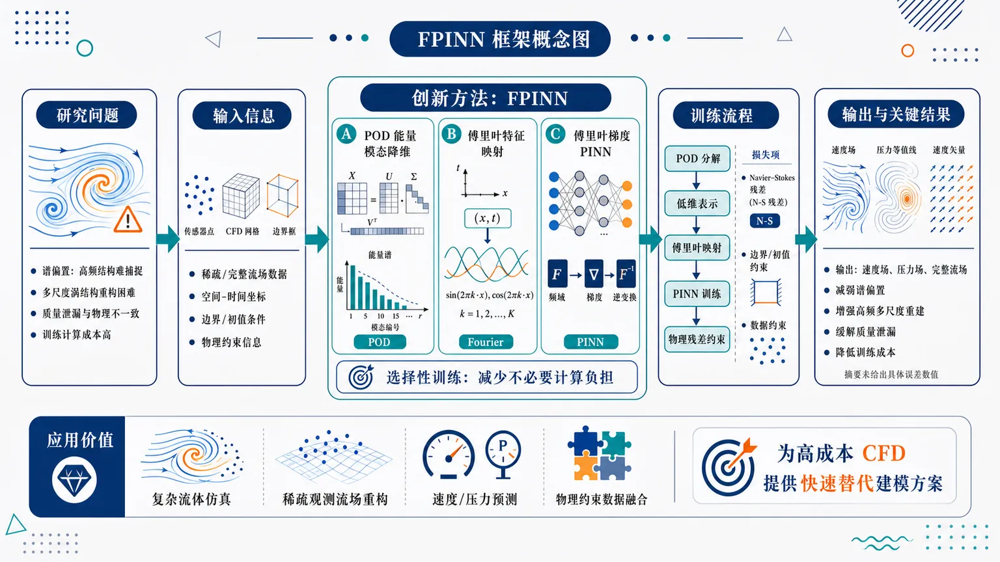
研究问题传统 PINN 在求解 Navier–Stokes 方程和重构复杂流场时，容易出现谱偏置，难以捕捉高频、多尺度涡结构；同时存在质量泄漏和训练计算成本高的问题。创新方法提出 FPINN 框架，将 POD 能量模态降维、傅里叶特征映射和傅里叶梯度 PINN 结合：用 POD 提取主导流动模态，用傅里叶映射增强高频结构表达，并通过选择性训练减少不必要的计算负担。工作流程输入流场数据或物理约束信息，先通过 POD 分解提取主要能量模态，形成低维流场表示；再将空间时间坐标进行傅里叶特征映射，输入物理信息神经网络；网络结合 Navier–Stokes 方程残差、边界/初值约束和数据约束进行训练，最终输出速度场、压力场或重构后的完整流场。关键结果FPINN 面向 Navier–Stokes 问题改善常规 PINN 的三类瓶颈：减弱谱偏置，增强对高频多尺度流动结构的重建能力；缓解质量泄漏，提高物理一致性；通过 POD 降维和选择性训练降低计算成本。摘要未给出具体误差数值和基线对比。应用价值可用于复杂流体仿真、稀疏观测下的流场重构、速度压力场预测和物理约束数据融合，为高成本 CFD 的快速替代建模提供更高效的神经网络方案。核心概览
该论文提出一种面向 Navier–Stokes 方程求解与流场重构的 FPINN 框架，结合 POD 降维、傅里叶特征映射与选择性训练，以缓解 PINN 的谱偏置、质量泄漏和计算成本问题。
方法要点
- 使用 POD（proper orthogonal decomposition）提取流场中的核心能量模态，实现降维表示。
- 在 PINN 中引入傅里叶特征映射，以增强对高频、多尺度流动结构的表达能力。
- 将 POD 辅助建模与傅里叶梯度 PINN 结合，用于 Navier–Stokes 方程相关任务。
- 采用“选择性训练”策略以降低训练负担或提升训练效率；具体选择机制摘要未详述。
- 目标问题包括 Navier–Stokes 方程求解与流场重构；具体边界条件、数据设置和网络结构摘要未详述。
关键结果
- 摘要明确指出该方法旨在缓解传统 PINN 在 Navier–Stokes 问题中的谱偏置问题。
- 摘要明确指出该方法旨在减少或改善质量泄漏现象。
- 摘要明确指出该方法旨在降低计算成本。
- POD 用于提取主要能量模态，傅里叶特征映射用于捕捉高频多尺度结构。
- 具体定量性能、对比基线、误差指标和实验场景摘要未详述。
创新性判断
- 可能的新颖点在于将 POD 降维与傅里叶梯度 PINN 统一到一个面向 Navier–Stokes 方程和流场重构的框架中。
- 相比常规 PINN，该方法可能同时从“低维模态表示”和“高频特征增强”两方面处理流体问题中的多尺度表达困难。
- “选择性训练”可能是降低计算成本的重要设计，但其具体形式摘要未详述，因此创新程度无法准确判断。
- 该工作的创新性更可能体现在方法组合与工程化改进上，而非单一技术首次提出；这一判断仅基于摘要，存在不确定性。
-
09
📊 含图深析
📄 摘要：以 2672 个多组元合金体系为数据集，仅用元素组成作为输入，构建可解释机器学习框架。多输出随机森林同时预测极限抗拉强度和液相线温度，测试 R² 为 0.848，5 折交叉验证 R² 为 0.849±0.017，并优于线性基线。
📖 英文原文
The design of advanced metallic alloys is challenged by complex, nonlinear interactions among multiple alloying elements, making conventional trial-and-error approaches costly and time-intensive. This study presents an integrated, interpretable machine learning framework applied to a dataset of 2,672 multi-component alloy systems, using elemental composition as the sole input. A multi-output Random Forest Regressor simultaneously predicts Ultimate Tensile Strength (UTS) and Liquidus Temperature, achieving a test R² of 0.848 and a 5-fold cross-validation R² of 0.849 ± 0.017, outperforming Linear Regression (R² = 0.512) and Gradient Boosting (R² = 0.787) baselines. A Logistic Regression classifier identifies high-performance alloy compositions defined by simultaneous UTS and liquidus temperature thresholds achieving an overall accuracy of 82% and an AUC of 0.871. Threshold sensitivity analysis confirms classification stability across varying performance criteria. Principal Component Analysis (PCA) and K-Means clustering, applied to the full compositional feature space, reveal three distinct alloy families with systematic differences in mechanical and thermal properties. Critically, interpretability is preserved throughout via SHAP analysis and permutation-based feature importance, identifying Vanadium (V), Iron (Fe), Tungsten (W), and Carbon (C) as the dominant compositional drivers a finding that both confirms and extends established metallurgical understanding. The dataset was verified to contain no missing values across all 31 elemental features. Collectively, the proposed framework provides a scalable and interpretable foundation for accelerated alloy screening, property prediction, and data-driven materials discovery.
💡 亮点：仅凭成分即可同时预测多组元合金强度和液相线温度，随机森林测试 R² 达 0.848。可解释特征分析适合合金初筛，但仍受限于无结构与工艺信息输入。
📖 展开分析 + 配图
研究问题如何在缺少复杂实验参数和物理描述符的情况下，仅根据多组分合金的元素成分，准确预测其关键性能——抗拉强度与液相线温度，并判断数据驱动模型是否能替代传统线性经验模型。创新方法提出以“合金成分表”为唯一输入的可解释机器学习框架，采用多输出随机森林模型在一个模型中同时预测抗拉强度和液相线温度；核心亮点是把多组分合金的复杂成分空间映射为双性能预测结果，减少对昂贵实验和复杂特征工程的依赖。工作流程收集2672个多组分合金成分数据；将各元素组成比例整理为机器学习输入特征；分别建立线性基线模型与多输出随机森林模型；模型同步输出抗拉强度和液相线温度；通过独立测试集和5折交叉验证评估预测精度；对比模型性能并验证成分驱动预测的可靠性。关键结果多输出随机森林在测试集上达到R²=0.848，5折交叉验证达到R²=0.849±0.017，表现稳定且明显优于线性基线模型；结果表明，仅使用合金成分信息也能较准确预测多组分合金的强度与液相线温度。应用价值该研究可用于快速筛选高性能多组分合金，在实验前预判强度和熔化相关温度，减少试错成本；适合构建面向合金设计的数字化预测平台，加速新型高强度、耐高温合金材料开发。核心概览
该论文属于材料信息学/合金性能预测方向，基于2672个多组分合金成分数据，用可解释机器学习预测抗拉强度与液相线温度。
方法要点
- 使用2672个多组分合金体系作为数据基础。
- 仅以合金成分作为模型输入特征。
- 构建可解释机器学习框架；具体解释方法摘要未详述。
- 采用多输出随机森林模型，同时预测抗拉强度和液相线温度。
- 使用线性基线模型作为对照。
- 采用测试集评估与5折交叉验证评估模型性能。
关键结果
- 多输出随机森林在测试集上取得 (R²⁼⁰.848)。
- 5折交叉验证结果为 (R²⁼⁰.849±0.017)。
- 随机森林模型性能优于线性基线模型。
- 结果表明，仅基于成分输入也可较好预测多组分合金的抗拉强度和液相线温度。
创新性判断
- 可能的新颖点在于：用单一成分输入同时预测多个合金关键性质，即抗拉强度与液相线温度，降低了对复杂实验或物理描述符的依赖。
- “多输出随机森林”用于多组分合金多性质联合预测，可能体现了面向实际合金设计的高效数据驱动框架。
- 题名强调“可解释机器学习”和“分类”，但摘要未详述具体解释技术、分类任务或分类结果，因此其解释性与分类方面的创新程度无法从摘要确定。
-
10
📄 摘要：推导一类基于射线路径的 MCMC 方法，把目标似然 L(x) 映射为参数空间介质折射率 n(x)，推广等动能采样。最简单射线追踪采样以恒速传播，相比 HMC 和随机梯度 HMC 对随机梯度加热更稳健，并可跨越任意似然势垒。
📖 英文原文
arXiv:2510.25824v2 Announce Type: replace-cross Abstract: We derive a family of Markov Chain Monte Carlo (MCMC) sampling methods based on following ray paths in a medium where the refractive index n(x) is a function of the desired likelihood L(x), extending past work on isokinetic sampling. The simplest ray tracing method propagates rays at constant speed through parameter space, leading to orders of magnitude higher resilience to heating for stochastic gradients as compared to both Hamiltonian Monte Carlo (HMC) and Stochastic Gradient HMC, as well as the ability to cross any likelihood barrier, including holes in parameter space. Using the simplest ray tracing method, we sample the posterior distributions of neural network outputs for a variety of different architectures, including a preliminary exploration of the 1.5 billion-parameter GPT-2 (Generative Pre-trained Transformer 2) architecture, all on a single consumer-level GPU. We also show that prior samplers including traditional HMC, the original microcanonical HMC, Metropolis, Gibbs, and even Monte Carlo integration are special cases within a generalized ray tracing framework, which can sample according to an arbitrary weighting function. Public code and documentation for C, JAX, and PyTorch are available at https://bitbucket.org/pbehroozi/ray-tracing-sampler/src
💡 亮点：射线追踪采样把贝叶斯神经网络后验探索转化为折射介质中的轨迹问题。其抗随机梯度加热与跨势垒能力，有望降低科学机器学习不确定性量化门槛。
📖 展开分析 + 配图
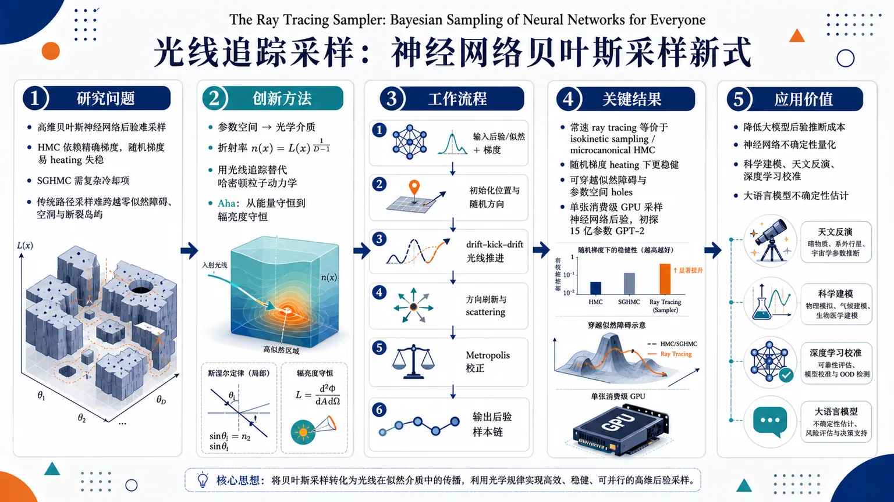
研究问题高维贝叶斯神经网络后验采样在参数空间中极其困难：HMC 依赖精确梯度且在随机梯度下容易“加热”失稳，SGHMC 又需要复杂冷却项；同时传统路径采样器难以跨越零似然障碍、参数空间空洞和断裂岛屿。论文要解决的是：能否用一种更直观、更稳健、可在消费级 GPU 上运行的采样机制，高效探索大模型后验？创新方法把参数空间重写成“光学介质”，令折射率 n(x)=L(x)⁽¹/(D-1))，用光线追踪代替粒子哈密顿动力学。光线在高似然区域自动聚焦、在低似然区域偏转，几何密度天然匹配目标似然；再用 Snell 定律、basic radiance 与 étendue 守恒构造详细平衡，并用 Metropolis 校正数值误差。Aha! 的点是：把贝叶斯采样从“能量守恒”改写成“辐亮度守恒”，从而统一 HMC、Metropolis、Gibbs、Monte Carlo integration 等方法。工作流程输入目标似然/后验、梯度、可选样本权重；在参数空间中初始化一个位置和随机传播方向；按照折射率梯度进行光线推进，使用 drift-kick-drift 式更新让轨迹在高似然区域弯折；周期性进行动量/方向刷新与 scattering，增强遍历性；每一步计算 basic radiance 变化，并用 Metropolis 准则决定接受或拒绝；最终输出符合目标后验的样本链，支持加权样本和任意传播速度。关键结果最简单的常速 ray tracing 动力学与 isokinetic sampling / microcanonical HMC 等价，但框架更一般；摘要声称其在随机梯度“heating”下比 HMC 和 SGHMC 高数个数量级更稳健；可穿越传统路径方法难以处理的似然障碍和参数空间 holes；并可在单张消费级 GPU 上采样多种神经网络后验，初步探索了 15 亿参数 GPT-2。应用价值为大规模神经网络的不确定性量化提供一个物理直观、数学统一、实现门槛更低的 Bayesian 采样框架，尤其适合随机梯度、复杂断裂后验和消费级硬件场景。它有望降低大模型后验推断成本，服务于科学建模、天文反演、深度学习校准和大语言模型不确定性估计。第一部分：核心概览 (Overview)
Ray Tracing Sampler 将 Bayesian neural-network sampling 重写为 Hamiltonian optics 问题：在折射率 (n(x)=L(x)¹/⁽D⁻¹⁾) 的参数空间中追踪光线，使光线几何密度自动正比于目标似然。该框架把 HMC、microcanonical HMC、Metropolis、Gibbs、Monte Carlo integration 等纳入统一形式，并宣称在随机梯度“加热”下比 HMC 与 SGHMC 更稳健，可在单张消费级 GPU 上探索包括 1.5B 参数 GPT-2 在内的神经网络后验输出。
---
第二部分：结构化快速回顾
《The Ray Tracing Sampler: Bayesian Sampling of Neural Networks for Everyone》（None，）
背景
高维 Bayesian sampling 仍是神经网络不确定性量化的核心瓶颈。HMC 在高维中仍具代表性，但随机梯度会导致路径 heating，SGHMC 需要复杂 cooling 项。NPE 输出的是 (P(x|D,P,M))，而非模型参数边缘化后的 (P(x|D,P))，因此仍需要跨模型后验采样。
方法
Ray tracing sampler 将参数空间视为折射率随似然变化的介质，核心选择为 (n(x)=L(x)¹/⁽D⁻¹⁾)。利用 Snell’s law、basic radiance conservation 与 étendue conservation，证明光线束相空间密度压缩正好匹配目标似然。数值误差通过基于 basic radiance 的 Metropolis 校正控制。
结果
最简单的常速 ray tracing 动力学等价于既有 isokinetic sampling / microcanonical HMC，但光学解释带来更一般的框架：可处理任意 sample weight、任意传播速度，并可穿越 HMC 难以处理的 forbidden regions / parameter-space holes。摘要宣称其随机梯度加热鲁棒性比 HMC 与 SGHMC 高数个数量级。
讨论
该框架将局部路径采样器的效率差异解释为 sampling density、oversampling rate、path speed / weight 之间的映射关系。HMC 与 isokinetic sampling 在许多高维非随机似然问题中具有相似动力学，但 ray tracing 允许构造新的常速采样族。
局限
Ray tracing sampling 在 (D=1) 中无意义，因为方向自由度不存在，公式 (n(x)=L¹/⁽D⁻¹⁾) 发散。实际实现依赖数值积分、Metropolis 校正、步长调参与动量刷新策略；神经网络实验和 GPT-2 探索在摘要中被描述为 preliminary。
结论
Ray tracing sampler 提供了一个物理直观、数学统一、实现相对直接的 Bayesian sampling 框架，目标是降低神经网络后验采样门槛，尤其面向随机梯度与消费级硬件场景。
---
第三部分：逐章节冷凝解析 (Section-by-Section Condensing)
> 可解析范围：所给文本完整覆盖 Abstract、1. Introduction、2. Methods、2.1–2.9.1 开头；2.9.1 在句子 *“After initial submission of this paper, we learned that the simplest ray tracing method...”* 后截断，后续章节、实验结果数值、附录与结论正文未包含在输入材料中。
---
ABSTRACT
Ray paths define a new MCMC family
核心贡献是从 ray paths 推导一族 MCMC sampling methods，介质折射率 (n(x)) 是目标似然 (L(x)) 的函数。摘要明确给出定位：*"We derive a family of Markov Chain Monte Carlo (MCMC) sampling methods based on following ray paths in a medium where the refractive index (n(x)) is a function of the desired likelihood (L(x)), extending past work on isokinetic sampling."*
这里的理论创新不是单一算法，而是一个把 isokinetic sampling 扩展到 Hamiltonian optics / ray tracing 的采样族。
Constant-speed ray tracing targets robustness to stochastic-gradient heating
最简单版本采用 constant speed through parameter space，核心优势是对随机梯度加热更鲁棒。摘要给出强主张：*"The simplest ray tracing method propagates rays at constant speed through parameter space, leading to orders of magnitude higher resilience to heating for stochastic gradients as compared to both Hamiltonian Monte Carlo (HMC) and Stochastic Gradient HMC."*
这里的 “orders of magnitude” 是定性数量级表述；所给文本中未出现具体倍数、温度增长率或 ESS 数值。
Likelihood barriers and holes become crossable
该采样器宣称可跨越任意似然障碍，包括参数空间 holes：*"as well as the ability to cross any likelihood barrier, including holes in parameter space."*
这直接针对 HMC 类路径方法的典型缺陷：若障碍区 (L=0) 或能量不可达，传统动力学路径难以跨越。
Neural-network posterior outputs are sampled on consumer hardware
摘要声称使用最简单 ray tracing 方法采样多种神经网络架构的输出后验，并初步探索 1.5 billion-parameter GPT-2：*"we sample the posterior distributions of neural network outputs for a variety of different architectures, including a preliminary exploration of the 1.5 billion-parameter GPT-2 (Generative Pre-trained Transformer 2) architecture, all on a single consumer-level GPU."*
关键实验尺度包括 1.5B parameters 与 single consumer-level GPU，但输入文本未包含具体架构列表、GPU 型号、运行时间、样本量或 posterior calibration 指标。
Prior samplers become special cases
摘要提出统一框架主张：*"prior samplers including traditional HMC, the original microcanonical HMC, Metropolis, Gibbs, and even Monte Carlo integration are special cases within a generalized ray tracing framework."*
这意味着该框架不仅是新采样器，也是一种关于 local sampling methods 的重参数化理论。
Public implementations are provided
代码覆盖 C、JAX、PyTorch：*"Public code and documentation for C, JAX, and PyTorch are available at https://bitbucket.org/pbehroozi/ray-tracing-sampler/src."*
这强化了标题中 “for everyone” 的工程意图：降低实现门槛，尤其面向神经网络生态。
---
1. INTRODUCTION
Sampling from unnormalized likelihood is the common scientific problem
MCMC 的基本目标是从概率分布 (P(x)) 抽取近似独立样本，通常只知道非归一化似然 (L(x)propto P(x))。原文定义非常直接：*"Sampling algorithms, including MCMC methods, aim to draw independent samples from a probability distribution (P(x)), often only using an unnormalized likelihood function (L(x) propto P(x))."*
该问题等价于在观测 (D) 与先验 (P) 下推断参数或隐变量：*"finding the distribution of model parameters or hidden variables (x) consistent with a set of observations."*
Transition functions determine sampling efficiency
不同采样器的关键差异是转移函数 (π(x→y)) 或 (T(y|x))。原文给出定义：*"Sampling algorithms differ in their transition functions, often denoted as (π(x:→ y)) or (T(y|x)), defined as the probability density of moving to point (y) when starting at point (x)."*
效率取决于转移函数是否贴合目标分布：*"Sampling efficiency depends on how well the transition function aligns with the target distribution (P(x))."*
Modern samplers split into local and global adaptation
现代采样器按转移函数利用的信息分为 local samplers 与 global samplers。局部方法使用当前位置附近信息，如梯度：*"Local samplers use information near the current location, such as likelihood gradients."* 例子包括 HMC / Hybrid Monte Carlo、MALA、Bouncy Particle Sampling、Zig-Zag Sampling。
全局方法学习目标分布的近似拟合函数：*"Global samplers instead learn approximate fitting functions to the global target distribution."* 例子包括 mode jumping、nested sampling、KDE sampling、Gaussian processes、normalizing flows。
Neural-network scale has outgrown conventional Bayesian sampling
科学建模复杂度呈指数增长，神经网络参数量从百万到万亿级。原文给出范围：*"It is now common to train neural networks with millions to trillions of parameters in every scientific field."*
天文学中的代表任务包括初始条件恢复与 blended source recovery：*"reconstructing the initial matter distribution that led to the current Milky Way galaxy and its local environment, for billions to trillions of particles"*；以及 Rubin telescope 图像中数十亿重叠星系的 intrinsic colors and luminosities：*"reconstructing intrinsic colors and luminosities for billions of partially overlapping galaxies as imaged by the Rubin telescope."*
Bayesian sampling remains necessary for neural posterior estimation
NPE 常被用作 (P(x|D,P)) 的快速估计器，但实际输出依赖模型参数张量 (M)：*"However, NPE methods in fact output a different function: (P(x|D,P,M)), where (M) is the tensor of model parameters."*
单个 neural posterior model 对给定数据向量 (D) 可任意偏离真值：*"the output of any individual neural posterior model can be arbitrarily far from the truth for a given data vector (D)."*
目标后验需要按模型后验边缘化：
[
P(x|D,P)=sum_M P(x|D,P,M)P(M|D,P).
]
对应原文：*"Bayesian sampling is hence still necessary to compute this sum across NPE models (M)."*
HMC remains leading but stochastic gradients cause heating
HMC 当前仍是高维探索主力，维度缩放为 (O(D¹/⁴))：*"with (O(D¹/⁴)) scaling in the number of dimensions (D), Hamiltonian Monte Carlo (HMC) techniques remain the leading methods for high-dimensional exploration."*
HMC 将粒子置于势能 (U(x)=-łn L(x)) 中，典型动能为 (T=frac12|v|²)，加速度为 (dotv=-nabla U)。原文表述：*"HMC techniques follow the trajectory of a massive particle in a gravitational potential given by (U(x)=-łn L(x))."*
对小型神经网络 (<10⁶) parameters 且精确梯度可用时，HMC 有效；随机梯度会产生 heating，需要 cooling 项：*"using stochastic gradients results in path heating that must be counteracted by an additional cooling term."*
Cooling in SGHMC is hard because it may depend on likelihood structure
SGHMC 的 practical challenge 是 cooling 项可能是复杂似然函数：*"Because the correct cooling term can be a complex function of the likelihood, it can be difficult to implement stochastic gradient HMC in practice for Bayesian sampling of neural networks."*
这构成 ray tracing sampler 的直接动机：无需设计复杂 cooling dynamics，却要保持对 stochastic gradients 的鲁棒性。
Ray tracing uses refractive index (n(x)=L¹/⁽D⁻¹⁾)
核心替代方案是追踪光线而非有质量粒子：*"we derive a simple and physically motivated alternative, which is to integrate the paths of light rays through a space where the refractive index varies as (n(x)=L(x)¹/⁽D⁻¹⁾)."*
该选择被证明可产生 fair sampling：*"which we show to result in fair sampling."*
The optical framework is broader than isokinetic sampling
最简单 ray tracing 动力学与既有 isokinetic sampling 相同，也与独立重新发现的 microcanonical HMC 相同：*"The simplest ray tracing sampler has identical dynamics as an independently-derived gradient-based method (isokinetic sampling) that predates HMC."*
但与 Hamiltonian optics 的连接使框架更一般：*"the connection we make to Hamiltonian optics in this paper means that the framework derived here is more general than past efforts."*
Disallowed regions can be crossed through optical boundary treatment
框架声称可跨越任意 forbidden regions：*"the ray tracing method can also cross arbitrary disallowed regions in parameter space, which is not possible with past path-based methods."*
这一区别尤其重要，因为 HMC 类方法在 disconnected islands 或 holes 中通常不可达。
Generalized ray tracing gives exact Metropolis-adjusted sampling
广义框架支持任意 weighting 与 velocity schemes：*"the generalized ray tracing algorithm results in exact Metropolis-adjusted sampling for arbitrary weighting and velocity schemes."*
传统 HMC 和多种旧方法可被重写为 generalized ray tracing samplers：*"This allows us to rewrite traditional HMC, along with many other past approaches, in terms of generalized ray tracing samplers."*
Differential Jacobian connects dynamics, oversampling, and speed
ray tracing 框架给出路径采样器 transition function 的微分 Jacobian：*"the ray tracing framework provides a simple way to derive the differential Jacobian of the transition function for arbitrary path-based samplers."*
由此建立 sampler dynamics、oversampling rate、path speed / weight 的映射：*"a straightforward mapping between sampler dynamics ... the oversampling rate ... and the necessary path speed (or weight) required for fair sampling."*
---
2. METHODS
2.1. Overview
Snell’s law supplies both reorientation and focusing
光通过两介质界面时满足：
[
nsinθ=constant.
]
原文给出公式：*"When light passes through the interface between two media, it is refracted according to Snell’s law: (nsin(θ)=constant)."*
从低折射率进入高折射率时，光线更靠近法线：*"light traveling from a lower-index medium to a higher-index medium will reorient to be closer to the interface normal vector."*
同时，入射立体角范围被压缩到较小出射立体角，导致高折射率介质中 radiance 增强：*"causing an overall radiance increase within the higher-index medium."*
Likelihood gradients become refractive-index gradients
若让折射率 (n(x)) 随似然 (L(x)) 增大，则低似然区发出的路径会自动向高似然区弯折。原文表述：*"if we start from a low-likelihood (low-index) region, we would want our path to reorient closer to the likelihood (refractive index) gradient."*
这使光学折射同时实现两件采样需求：朝高似然区探索、在高似然区采样概率更高。
Fair sampling arises when sampling density scales with likelihood
公平采样的条件是采样密度与似然正比，例如 (|J|⁻¹propto L(x))。原文明确指出：*"One way of achieving fair sampling is for the sampling density to scale with the likelihood function."*
ray tracing 的路径天然可逆，且几何光线密度对应 optical radiance (L)：*"ray tracing gives naturally reversible paths, and we show ... that the sampling density ... is the optical radiance (L)."*
Radiance scales as (nD⁻¹)
Snell’s law 导致 radiance 只依赖折射率而非路径历史：
[
L(s)=L(x(s))propto n(x(s))D⁻¹.
]
原文公式为：*"Snell’s law implies that radiance depends only on the index of refraction, not the path taken: (L(s)=L(x(s))propto n(x(s))D⁻¹)."*
因此选择：
[
n(x)=L(x)¹/⁽D⁻¹⁾
]
即可让 radiance 正比于目标似然。
Radiance conservation becomes a detailed-balance diagnostic
近似积分器会造成等式误差，可用 basic radiance 是否守恒进行 Metropolis correction。原文类比 HMC：*"Measuring the exactness of the equality in Eq. 3 for an approximate integrator also provides a simple test of the detailed balance of the system—similar to the energy conservation Metropolis test for Hamiltonian Monte Carlo systems."*
Ergodicity requires direction refresh and can handle islands
周期性 scattering / momentum refresh 可保证方向空间探索：*"ergodicity is guaranteed as long as we introduce periodic scattering events that refresh the direction of travel."*
若边界被建模为 blackbody radiators，光路甚至可到达参数空间 islands：*"Provided that parameter space boundaries are modeled as blackbody radiators, light paths can even reach parameter space islands."*
---
2.2. Conservation of basic radiance across interfaces in D dimensions
Basic radiance is the invariant (R=n¹⁻DL)
任意维度 (D) 中定义 basic radiance：
[
R(s)equiv n¹⁻D(x(s))L(s).
]
原文定义：*"Snell’s law results in conservation of the basic radiance (R), defined for arbitrary dimension (D) as: (R(s)equiv n¹⁻D(x(s))L(s))."*
这里的 (L) 是 optical radiance，不是似然 (L)；二者在文中用字体区分。
Ray bundle formalism gives the Jacobian
光线束是位置与方向相空间中的微分体积，截面积为 (dA)，立体角为 (dØmega)。原文说明用途：*"We adopt this approach here, as it simplifies the derivation of the Jacobian ... of the transition function and hence shortens the proof of stationarity."*
这使 sampling density 的压缩/扩张可以用光学几何量直接表达。
Differential power conservation yields radiance ratio
界面两侧 differential power 相等：
[
d²Pᵢ₌Lᵢₒ̧s(θᵢ₎dA,dØmegaᵢ.
]
因为概率/光不能在界面产生或消灭：*"Because light (or, in our case, probability) cannot be created or destroyed at the interface, we find that (d²P₁₌d²P₂)."*
结合 hyperspherical solid angle 后得到：
[
L₁ₒ̧sθ₁ dθ₁sinD⁻²θ₁
=
L₂ₒ̧sθ₂ dθ₂sinD⁻²θ₂.
]
Snell’s law gives (L₁/L₂₌₍ₙ₁/n₂₎D⁻¹)
由 Snell’s law：
[
n₁sinθ₁₌ₙ₂sinθ₂,
]
以及微分关系：
[
n₁ₒ̧sθ₁dθ₁₌ₙ₂ₒ̧sθ₂dθ₂.
]
最终：
[
fracL₁L₂=łeft(fracn₁n₂i̊ght)D⁻¹.
]
原文结论：*"we have proved the conservation of basic radiance across interfaces for (D>1)."*
一维情形无角度变化，因此 (L₁₌L₂)，公式同样适用：*"For a one-dimensional space, there is no change in angle ... so (L₁₌L₂)."*
Reflection vanishes for smoothly varying refractive indices
Abrupt transitions 需要考虑 Fresnel reflection，但本文目标是 smooth refractive indices。原文说明：*"we are concerned with smoothly-varying refractive indices."*
将介质分为 (k) 层线性插值时，Fresnel reflection coefficients 渐近为 0：*"the Fresnel reflection coefficients all asymptote to 0."*
分层 radiance 乘积为：
[
L_f=Lᵢprodⱼ₌₁^k
łeft(
fracnᵢ₊₍ⱼ₋₁₎₍ₙ_f-nᵢ₎/knᵢ₊ⱼ₍ₙ_f-nᵢ₎/k
i̊ght)D⁻¹,
]
并化简为同一 radiance ratio：*"which reduces to Eq. 8 regardless of the number of layers."*
---
2.3. Conservation of basic radiance and of étendue in arbitrary media in D dimensions
Étendue replaces Liouville volume in Hamiltonian optics
Hamiltonian mechanics 中 Liouville theorem 保证相空间体积不变；Hamiltonian optics 中 Jacobian 不是 1，而守恒量是 étendue。原文对比：*"In Hamiltonian optics, however, the Jacobian is not unity, and instead there is another conserved quantity called étendue."*
这一区别是该框架能自然产生非均匀采样密度的关键。
Étendue is scaled phase-space volume
任意维度中定义：
[
d²Gequiv n(x)D⁻¹dAo̧sθ,dØmega.
]
原文定义：*"we will define as the étendue (d²G) for (D) dimensions: (d²G equiv n(x)D⁻¹dAo̧sθ dØmega)."*
它表示光线束的 scaled phase-space volume：*"the scaled phase-space volume of a ray bundle."*
Basic radiance and étendue are equivalent conservation statements
basic radiance 与 étendue 的关系：
[
R=fracd²Pd²G.
]
原文指出：*"basic radiance will be conserved if and only if étendue is conserved along nondissipative ray paths."*
因此 detailed balance 可通过 optical power 与 étendue 守恒来证明。
Uniform medium proof uses emitter–receiver reciprocity
在均匀折射率 (n) 介质中，从发射面 (dA_E) 到接收面 (dA_R) 的 étendue：
[
d²G_E=nD⁻¹dA_Eo̧sθ_E,dA_Ro̧sθ_R,H_D⁻¹r¹⁻D,
]
[
d²G_R=nD⁻¹dA_Ro̧sθ_R,dA_Eo̧sθ_E,H_D⁻¹r¹⁻D.
]
二者相等：*"and so (d²G_E=d²G_R) by inspection."*
直观解释为面积扩散和 solid angle 缩小相互抵消：*"as a ray bundle propagates, it will spread to a larger projected area ... but the apparent solid angle ... will become smaller and smaller."*
Varying media follow from boundary conservation and infinitesimal discretization
跨介质边界时：
[
fracd²G₁d²G₂
=
łeft(fracn₁n₂i̊ght)D⁻¹
fracd²P₁d²P₂
fracL₂L₁
=1.
]
原文结论：*"Hence, étendue is conserved across media boundaries."*
连续变化介质可由无限细分层近似：*"in the limit of infinitesimally small discretization, étendue as well as basic radiance are conserved."*
---
2.4. The ray tracing sampler
The natural refractive index choice is (n=L¹/⁽D⁻¹⁾)
由于 étendue 守恒意味着 ray bundle phase-space volume 按 (nD⁻¹) 压缩，令：
[
n(x)=L(x)¹/⁽D⁻¹⁾
]
可使 ray bundle phase-space density 正比于目标似然。原文表述：*"The most natural way to do so is: (n(x)=L(x)¹/⁽D⁻¹⁾), so that the ray bundle phase-space density ... is exactly proportional to (L(x))."*
The transition Jacobian cancels likelihood differences
该折射率选择使转移函数 Jacobian 正好补偿两点概率差异：*"the Jacobian of a ray tracing transition between two points under Eq. 14 exactly cancels out the difference in probability between the two points."*
这是 stationarity / detailed balance 的核心机制：不是让相空间体积不变，而是让体积压缩与目标密度相配。
Detailed balance follows from reversible light paths
从 (x) 的微分体积 (ds,dAₓ) 均匀发射方向，发射 radiant intensity density 为：
[
fracd³Pₓo̧sθₓ dAₓ ds dØmegaₓ=CL(x).
]
原文定义：*"the radiant intensity density ... emitted by this volume will be: ... (=CL(x))."*
经过路径长度 (s) 到达 (y) 后，étendue 守恒给出：
[
n(x)D⁻¹o̧sθₓdAₓdØmegaₓ
=
n(y)D⁻¹o̧sθ_ydA_ydØmega_y.
]
因此到达 (y) 的 differential power density 为：
[
Cfracn(y)D⁻¹n(x)D⁻¹L(x)
=CL(y).
]
原文结论：*"the differential power reaching the volume around (y) is non-uniformly distributed ... in exactly the right way to balance the difference in likelihoods between the two points."*
Numerical path errors are corrected by basic-radiance Metropolis tests
实际算法会引入路径误差：*"All practical ray tracing algorithms will of course introduce path errors."*
每步方向角改变 (Δθᵢ) 时，radiance boost：
[
fracLᵢ₊₁(xᵢ₊₁)Lᵢ₍ₓᵢ₎
=
łeft(
fracsinθᵢsin(θᵢ₊Δθᵢ₎
i̊ght)D⁻¹.
]
净 radiance boost 与真实似然变化比较，接受概率：
[
P(x→y)
=
minłeft(1,fracL(y)L(x)L(x)L(y)i̊ght).
]
原文类比 HMC：*"Similar to HMC samplers ... introduce an acceptance criterion based on the conservation of basic radiance."*
One-dimensional ray tracing sampling is undefined
在 (D=1) 中没有传播方向自由度，且 (1/(D-1)) 发散。原文明确：*"ray tracing sampling is only meaningful in (D>1) dimensions, as there are no degrees of freedom for the direction of propagation ... so Eq. 14 becomes undefined."*
建议做一维积分或使用其他方法：*"we recommend simply integrating the likelihood function over the single free parameter or using an alternate approach."*
---
2.5. Ergodicity
Direction refreshment is necessary for ergodicity
ergodicity 要求方向 (v) 不时刷新，例如按随机路径长度 (s)：*"Ergodicity requires that the direction of travel be refreshed from time to time, for example, after a randomly chosen path length (s)."*
这允许在任意位置探索完整 direction space：*"This allows for full exploration of the direction space (v) at any given location (x)."*
Reachable bounded sets cannot have nonzero-likelihood boundaries
假设 reachable positions 是 bounded set (B)，选取距离边界任意小 (ϵ) 的点。ray tracing 是可逆的一一映射：*"Ray tracing involves a one-to-one mapping of initial directions to final directions because it is a reversible transformation."*
初始各向同性方向经映射后虽非各向同性，但所有方向仍存在，包括垂直边界方向：*"all directions will be represented, including directions perpendicular to the boundary of (B)."*
若步长 (Δ s=ϵ+δ)，即可越过边界；只要边界外似然非零，即可到达。结论：*"the boundary for (B) can only exist if the likelihood is identically zero at all points along the boundary."*
Parameter-space islands require blackbody boundary treatment
参数空间 islands 是 HMC 的特殊难点：*"Parameter space islands are a special challenge for most Hamiltonian methods, since they cannot be reached by integrating the equations of motion."*
ray tracing 可将参数空间边界建模为 blackbody radiators，吸收任意方向 ray bundles 并按黑体发射重新辐射：*"we can treat parameter space boundaries as blackbody radiators that absorb ray bundles from arbitrary directions and then re-radiate them in a new direction according to black-body emissivity."*
Lambertian emissivity sets boundary re-emission probability
黑体发射概率正比于 (nD⁻¹) 与法向夹角余弦的乘积，也即 Lambertian emissivity：*"where the emission probability is proportional to the product of (nD⁻¹) and the cosine of the angle to the surface normal, also known as Lambertian emissivity."*
高维中完整法向计算可能昂贵，附录 A 给出只需沿两个随机正交方向测量边界位置的方法：*"only requires measuring the location of the parameter space boundary along two randomly chosen orthogonal directions."*
---
2.6. Partial momentum refreshment, i.e., scattering
Momentum refresh trades path persistence against directional exploration
刷新率选择存在权衡：固定 ray path 的长距离探索 vs. 更多不同 ray paths。原文表述：*"Choosing a momentum refreshment rate involves a trade-off between exploring the parameter space along a fixed ray path ... vs. different ray paths."*
Long thin typical sets favor long refresh timescales
对典型集为长而细管状的任务，如神经网络，较长动量刷新间隔有利：*"For problems where the typical sets ... are long, thin tubes (e.g., neural networks), it can be advantageous to have long timescales between momentum refreshes."*
这里的 typical sets 指 log-likelihood 处于典型值区域，而不是最高概率点。
Partial refresh behaves like optical scattering
许多 partial momentum refreshes 类似 optical scattering：*"Performing many partial momentum refreshes, analogous to an optical scattering process, provides an appealing alternative."*
优势是步长可保持较大，同时 momentum 在长时间尺度上去相关：*"step sizes can be kept high even as the momentum becomes uncorrelated over large time scales."*
Scattering should occur between completed integration steps
scattering 是 ray direction 的随机旋转，不改变 Jacobian：*"We can treat scattering/partial momentum refresh as a random rotation of the ray direction, which ensures that the Jacobian is unchanged."*
但最佳位置是在 completed integration steps 之间，即原则上位于 typical set 的地方：*"It is best to perform scattering at locations that would in principle be on the typical set, i.e., in between completed integration steps."*
若在 integration step 内执行，例如 drift–scatter–kick–scatter–drift，可能增加拒绝率：*"may nonetheless lead to increased rejections."*
Momentum reversal preserves reversibility after Metropolis failure
若 Metropolis tests 之间未刷新 momentum direction，失败时应反转方向：*"if the direction of the momentum vector is not refreshed between Metropolis tests, it should be reversed upon Metropolis failure to maintain reversibility."*
这与 HMC 中的 reversibility 处理一致。
---
2.7. Generalized ray tracing with sample weights
Variable speed and explicit sample weights generalize constant-speed tracing
常速 ray tracing 可推广为路径速度 (v) 随位置变化。更高速度意味着单位积分时间采样密度更低，因此隐式权重：
[
Wᵢ₌ᵥ⁻¹.
]
原文：*"Higher speeds (v) result in a lower sampling density per unit integration time, so the implicit sample weight (Wᵢ) is related to the speed as (Wᵢ₌ᵥ⁻¹)."*
也可保持常速并给每个样本显式权重 (W)：*"Alternately, we could retain a constant path speed and simply have an explicit weight (W) applied to each sample."*
Weights and speed tune low- versus high-likelihood residence time
sample weighting 与 speed 不改变 basic radiance conservation，也不改变给定 (n(x)) 下的路径；它们调节采样器在高低似然区停留时间。原文：*"variable sample weighting and speed allow the sampler to be tuned so that it spends more time in lower- or higher-likelihood regions."*
Fair sampling requires (LW/v=L)
任意 explicit weight (W) 与 path speed (v) 下，sample density 与 radiance (L)、weight (W) 成正比，与 speed (v) 成反比：*"the sample density will scale as the product of the radiance (L) and the weight (W), divided by the speed (v)."*
公平采样条件：
[
fracL(x)W(x)v(x)=L(x).
]
因此折射率变为：
[
n(x)=
łeft(
fracL(x)v(x)W(x)
i̊ght)¹/⁽D⁻¹⁾.
]
Metropolis correction works for arbitrary weighting and velocity schemes
概率守恒测试推广为：
[
P(x→y)
=
minłeft(
1,
fracn(x)¹⁻DL(x)
n(y)¹⁻DL(y)
i̊ght).
]
原文解释：*"which corresponds to the inverse of the excess basic radiance at (y) compared to the starting point (x)."*
因此任意 weighting / velocity scheme 均可 exact sampling：*"exact sampling can be achieved for arbitrary weighting/velocity schemes."*
---
2.8. Algorithm pseudocode
Ray dynamics follow Hamiltonian-optics Snell equation
标准 ray path 方程：
[
fracddsłeft(n(x)fracdxdsi̊ght)=nablaₓn(x).
]
原文引用：*"The standard form of Snell’s law used for integrating ray paths is given in textbooks such as Born & Wolf (1980)."*
改写为方向变化：
[
fracddsłeft(fracdxdsi̊ght)
=
nablaₓłn n(x)
-
łeft(fracdxdsḑotnablaₓłn n(x)i̊ght)
fracdxds.
]
这显示动力学只依赖 log refractive index gradient：*"the dynamics depend only on the gradient of (łn(n)) ... and hence only on the gradient of the log-likelihood."*
Only the perpendicular gradient bends the ray
方向变化只受与传播方向垂直的梯度分量影响。原文：*"the rate of change of direction depends only on the component of the log refractive index gradient that is perpendicular to the direction of travel."*
其大小为：
[
sinθ|nablaₓłn n(x)|.
]
Angle evolution has an exact reversible update
因 (dx/ds) 为单位长度，可将方向变化解释为角度变化：
[
fracdθds=-sinθ|nablaₓłn n(x)|.
]
积分得到：
[
tanłeft(fracθ_f2i̊ght)
=
tanłeft(fracθᵢ2i̊ght)
expłeft(-Δ s|nablaₓłn n(x)|i̊ght).
]
原文强调可逆性：*"This equation is explicitly symmetric under a reversal of the propagation direction."*
Algorithm 1 uses drift–kick–drift leapfrog structure
伪代码 GRTSample 输入包括初始点 (x₀)、维度 (D)、步数 (N)、步长 (Δ s)、partial refresh 参数 (f)、似然 (L(x))、可选权重 (W(x))。
算法先生成 (D) 维 Gaussian velocity：*"v ← random Gaussian in (D) dimensions"*，并推荐按维度缩放步长：
[
Δ słeftarrow sqrtDΔ s.
]
伪代码注释：*"Recommended—rescales step size with dimensionality."*
Partial momentum refresh uses Gaussian mixing
每步生成新 Gaussian velocity (v')，并更新：
[
vłeftarrow e⁻|f|v
+
sqrt1-e⁻²|f|v'.
]
伪代码注释为：*"Partial momentum refresh."*
这实现连续随机化，保留部分方向记忆。
Kick step uses (nablałn(L/W)/(D-1))
伪代码中 log refractive index gradient 为：
[
nablałn n
=
nablałn(L(x)/W(x))/(D-1),
]
在半步位置 (xₖ₊₀.₅) 计算。对应伪代码注释：*"Log refract. index gradient."*
Velocity update preserves normalization but changes phase-space density
UpdateV 中先归一化方向：
[
hatv=v/|v|,quad
hatn=nablałn n/|nablałn n|.
]
角度更新后：
[
fᵥ₌fracsinθ_fsinθᵢ,quad
fₙ₌ₒ̧sθ_f-fᵥₒ̧sθᵢ,
]
[
vłeftarrow fᵥᵥ₊fₙ|v|hatn.
]
伪代码注释：*"Direction update, maintains velocity normalization."*
Luminosity change accumulates phase-space compression
每个 kick 更新：
[
Δłn Lłeftarrow Δłn L+(1-D)łn fᵥ.
]
伪代码注释：*"Luminosity change."*
正文解释该因子对应相空间压缩：*"corresponding to a phase-space compression factor of (fᵥ¹⁻D), i.e., (sinD⁻¹(θᵢ₎/sinD⁻¹(θ_f))."*
Metropolis test compares likelihood-weight ratio to accumulated radiance change
接受/拒绝判断使用：
[
łn r >
łnłeft(
fracL(x_N)W(x₀₎
L(x₀₎W(x_N)
i̊ght)
-Δłn L
]
则拒绝并令 (x_Nłeftarrowx₀)。伪代码注释：*"Metropolis test."*
The algorithm is reversible and velocity-scale independent
正文注释 1：*"The algorithm is explicitly independent of velocity normalization and is explicitly time-reversible."*
可使用任何 symmetric integrator，不限于 drift-kick-drift：*"any symmetric integrator may be used with the UpdateV function for kick steps."*
Metropolis correction can be recast as weights, velocities, or masking
Metropolis criterion 可转为 sample weight 或 inverse velocity：
[
exp(ΔłnL-Δłn L).
]
原文：*"this would then allow a 100% acceptance rate."*
也可用 Poisson copies 实现 sample masking / discretization：*"the number of copies of a particular point (x) in the chain is drawn from a Poisson distribution with the Metropolis expectation value."*
Ray tracing can recover from catastrophic integration errors better than HMC
HMC 一旦轨迹偏离恒定能量通常难以恢复：*"for HMC, this can be a poor choice, since once a trajectory diverges from constant energy, it usually does not recover."*
ray tracing 中即使灾难性误差也可恢复：*"for ray tracing, even catastrophic errors are recoverable, as the light path will be redirected towards higher-likelihood regions."*
The velocity update is not symplectic
UpdateV 不是 symplectic，因为它按似然差压缩/扩张相空间元：*"The velocity update is not symplectic, since it involves compression/expansion of the phase-space element according to the difference in the likelihood."*
附录 C 讨论 symplectic alternatives，但未采用，因为实现更困难：*"the symplectic methods are much harder to implement in practice."*
Optimal acceptance need not be 100%
最高效率通常需要调参，不一定对应 100% 接受率。原文提醒：*"the optimal efficiency ... may occur for acceptance rates lower than 100%."*
因此实际使用需要 parameter search：*"optimal efficiencies are usually only obtained after a parameter search."*
---
2.9. Integrating prior methods into the framework of generalized ray tracing
Generalized ray tracing interprets existing samplers through curvature and weighting
广义 ray tracing 的价值在于可从任意 sample weighting / speed 推导路径曲率，反之亦然。原文：*"The framework of generalized ray tracing is convenient for interpreting existing samplers, since it allows solving for the rate of path curvature ... for an arbitrary sample weighting ... and vice versa."*
这使基于路径定义的采样器，如 HMC，可被转换为 sample weighting 形式进行比较：*"This lets us simply compute sample weighting for samplers that are primarily defined based on their paths (e.g., HMC)."*
---
2.9.1. Constant-Speed Samplers
The provided text truncates immediately after identifying equivalence
该小节仅保留开头，指出投稿后得知最简单 ray tracing method 与既有方法相关：*"After initial submission of this paper, we learned that the simplest ray tracing method..."*
后续句子缺失，无法可靠提取 constant-speed samplers 的完整推导、公式或与 isokinetic / microcanonical HMC 的精确对应细节。
---
第四部分：深度理解与语言支持 (Understanding & Nuance)
1. 术语解析
#### Basic radiance
Basic radiance 是光学 radiance 经折射率维度因子缩放后的守恒量：
[
R=n¹⁻DL.
]
它不是目标似然 (L)，而是 ray bundle 几何密度的物理量。微妙点在于：普通 radiance (L) 在不同折射率区域会改变，但 basic radiance (R) 沿无耗散光路守恒。它在算法中类似 HMC 的 Hamiltonian conservation，用来构造 Metropolis test。
#### Étendue
Étendue 可理解为光线束的 “有效相空间体积”：
[
d²G=nD⁻¹dAo̧sθ dØmega.
]
普通 Hamiltonian dynamics 中相空间体积守恒；ray optics 中守恒的是 étendue。微妙差别在于：ray tracing 的普通相空间体积可以被压缩，因此能自然产生非均匀采样密度；这正是 fair sampling 的来源，而非错误。
#### Heating
Heating 在 HMC / SGHMC 语境中指随机梯度误差使轨迹能量系统性漂移，类似温度升高，导致样本偏离目标分布。这里不是物理温度，而是动力学能量误差累积。SGHMC 需要 cooling 项抵消，但 cooling 若依赖复杂似然结构，会使神经网络 Bayesian sampling 难以落地。
#### Typical set
Typical set 不是最高似然点集合，而是高维分布中承载主要概率质量、log-likelihood 取典型值的区域。神经网络后验常表现为长而细的管状区域；频繁完全刷新 momentum 可能让路径离开这些区域，因此 partial refresh / scattering 更稳妥。
#### Lambertian emissivity
Lambertian emissivity 指边界重新发射方向的概率与法向夹角余弦成正比。这里用于把 forbidden boundary 视为 blackbody radiator，使光线能从边界重新进入 allowed parameter space。微妙点在于它不是任意随机反射，而是满足光学 detailed balance 的边界条件。
---
2. 疑难查证：复杂概念解释
#### 为什么 (n(x)=L(x)¹/⁽D⁻¹⁾) 会产生正确采样？
光线束穿过高折射率区域时会被聚焦，相空间密度随折射率按 (nD⁻¹) 增强。若目标是让采样密度正比于似然 (L)，只需让：
[
nD⁻¹=L.
]
因此：
[
n=L¹/⁽D⁻¹⁾.
]
这不是经验公式，而是由 Snell’s law + solid-angle compression + projected-area change 共同决定。维度指数 (D-1) 来自方向空间的角度自由度，而非参数空间体积 (D) 本身。
#### 为什么 ray tracing 的 Jacobian 不是 1 反而是优点？
HMC 依赖 symplectic integration 与 Liouville theorem，转移体积保持不变；目标密度差异通过动能/势能交换与 Metropolis correction 处理。Ray tracing 则允许相空间元素因折射而压缩或扩张。若压缩率刚好等于似然比，更多路径自然汇聚在高似然区域，transition Jacobian 自动补偿概率差异。这种 “非单位 Jacobian” 不是违反 detailed balance，而是 fair sampling 的机制。
#### 为什么 constant-speed 有助于随机梯度鲁棒性？
HMC 的粒子有动能，随机梯度误差会持续改变能量，导致 heating。constant-speed ray tracing 只改变方向，不通过加速度改变速度大小，因此随机梯度误差更像方向扰动，而不直接累积为能量漂移。加上 ray path 会被高似然区折射吸引，即使某步误差很大，也可能被后续折射拉回 typical set。所给摘要据此声称相对 HMC 与 SGHMC 有 “orders of magnitude higher resilience”。
#### 为什么 parameter-space islands 对 HMC 难、对 ray tracing 可能可达？
HMC 轨迹遵循连续动力学；若两个 allowed regions 被 (L=0) 区域隔开，势能 (U=-łnL) 可变为无穷大，有限能量轨迹无法穿过。Ray tracing 框架可把 forbidden boundary 视为吸收并重新发射光线的 blackbody radiator，让路径在边界之间传播并重新进入 allowed regions。关键不是穿过零似然区采样，而是用满足 detailed balance 的边界发射规则连接 disconnected allowed components。
---
第五部分：创新评估与关联 (Synthesis & Novelty)
1. 创新性判断
#### A unifying optical framework rather than another HMC variant
近 2–5 年高维 Bayesian sampling 的主线包括 microcanonical HMC / energy-conserving samplers、normalizing-flow-assisted MCMC、diffusion / simulation-based posterior estimation、SGHMC variants。该工作的新颖性在于用 Hamiltonian optics 而非 Hamiltonian mechanics 统一解释路径采样：核心守恒量从 Hamiltonian / phase-space volume 变为 basic radiance / étendue。这使 transition Jacobian、采样密度与路径弯曲之间关系变得显式。
#### The refractive-index prescription solves density matching geometrically
过去的 HMC 类方法需要在势能与动能之间交换，并依赖能量守恒；这里用：
[
n=L¹/⁽D⁻¹⁾
]
直接把目标密度编码进介质几何。高似然区域不是靠接受率筛选出来，而是通过光线聚焦自然获得更高路径密度。这一机制把 fair sampling 从 “energy-level exploration” 转换为 “radiance-density matching”。
#### Stochastic-gradient robustness targets a key neural-network bottleneck
神经网络 Bayesian sampling 的核心难点是参数量巨大且精确梯度昂贵，随机梯度又会破坏 HMC 能量守恒。constant-speed ray tracing 避免速度大小随梯度误差漂移，理论上减少 heating。相较 SGHMC 需要设计 cooling term，该方法把误差控制转向 basic-radiance Metropolis correction 与路径折射恢复。
#### Forbidden regions and holes are treated as optical boundaries
传统 HMC、MALA、SGHMC 等局部连续路径方法难以跨越 zero-likelihood barriers 或 disconnected islands。ray tracing 引入 blackbody radiator boundary condition，用 Lambertian re-emission 处理 disallowed regions，这一点在路径采样器中较少见。它解决的不是普通 mode jumping，而是带有 holes / forbidden constraints 的参数空间连通性问题。
#### Generalized weighting links old samplers under one equation
任意 speed (v) 与 sample weight (W) 下：
[
n(x)=
łeft(
fracL(x)v(x)W(x)
i̊ght)¹/⁽D⁻¹⁾
]
提供一个统一接口。通过调节 (v) 或 (W)，可以把不同采样器解释为不同的折射率、路径速度或样本权重策略。相较单独提出新 sampler，这一框架更像一个 “sampler calculus”。
#### Consumer-GPU Bayesian sampling of very large neural networks is the most ambitious applied claim
摘要中最具冲击力的应用主张是：在单张消费级 GPU 上采样多种神经网络 posterior outputs，并初步探索 1.5B-parameter GPT-2。若完整实验支持该点，它将直接挑战 “大模型 Bayesian posterior sampling 只能在大规模集群上进行” 的默认认知。不过所给文本未提供实验指标，因此该应用创新目前只能视为强主张，不能据此确认实际有效样本量、校准质量或收敛可靠性。
-
11
📊 含图深析
📄 摘要：分析方格晶格交替磁金属在近邻吸引相互作用下的配对不稳定性。近邻作用允许扩展 s 波、d 波及两个 p 波通道；交替磁自旋劈裂使反平行自旋电子发生有限动量配对，并且通常跨多个通道出现，伴随单重态-三重态混合。
📖 英文原文
arXiv:2603.12897v2 Announce Type: replace Abstract: We analyze the pairing instability of an altermagnetic metal on a square lattice driven by an attractive nearest-neighbor interaction. This interaction enables multiple pairing channels, including even-parity extended s-wave and d-wave states, as well as two odd-parity p-wave channels. We verify that altermagnetic spin-splitting in the single-particle dispersion gives rise to finite-momentum pairing between electrons with unlike spins, in agreement with earlier predictions. Quite unexpectedly, this pairing typically emerges across multiple channels with mixed parity. Consequently, the resulting finite-momentum Fulde-Ferrell-Larkin-Ovchinnikov (FFLO) superconducting phase is expected to exhibit a multi-component order parameter featuring singlet-triplet mixing. We examine several forms of altermagnetism, specifically dₓy-wave and dₓ²-y²-wave altermagnetic couplings, and present the corresponding phase diagrams. Additionally, we study triplet pairing between electrons with identical spins and find that it always occurs at zero center-of-mass momentum. Although it is unfavorable in the regime of weak altermagnetic coupling and low electron filling, it can dominate the phase diagram when the altermagnetic coupling is sufficiently strong. The influence of on-site attractive interactions on mixed-parity pairing is also explored.
💡 亮点：交替磁自旋劈裂可自然诱导有限动量配对，且不限于单一配对通道。单重态-三重态混合使交替磁金属成为研究非常规超导与自旋劈裂耦合的清晰模型。
📖 展开分析 + 配图
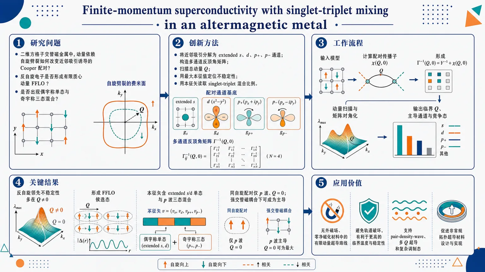
研究问题在二维方格子交替磁金属中，动量依赖的自旋劈裂如何改变近邻吸引诱导的 Cooper 配对：反自旋电子是否会形成有限质心动量 FFLO 配对，以及这种配对是否不再是单一 s/d/p 通道，而是偶宇称单态与奇宇称三态的混合多分量超导不稳定性。创新方法将近邻吸引相互作用分解为 extended s、d、p+、p− 等多个可视化配对通道，并用非自洽 T 矩阵与 Thouless 判据构造多通道反顶角矩阵；通过扫描配对总动量 Q，取最大本征值定位领先不稳定性，用本征矢直接读出 singlet-triplet 混合比例。Aha 点是：不预设单一序参量，而让矩阵本征态自动显示有限动量 FFLO 中的混合宇称结构。工作流程输入二维方格子单带模型：最近邻跃迁色散、dxy 或 dx²−y² 交替磁自旋劈裂、扩展吸引 Hubbard U–V 相互作用；将相互作用投影到 s、extended s、d、p+、p− 通道；计算含费米分布和自旋分裂能带的配对传播子矩阵 χ(Q,0)；形成 Γ⁻¹(Q,0)=V⁻¹+χ(Q,0)；在动量空间扫描 Q 并对矩阵对角化；输出最大本征值对应的临界配对动量、主导通道组合和竞争配对态。关键结果反自旋配对的领先不稳定性通常出现在 Q≠0，形成由自旋分裂费米面片段匹配驱动的 FFLO 候选态；其本征矢普遍同时含有 extended s/d 等偶宇称单态分量和 p 波奇宇称三态分量。近邻吸引使多通道竞争不可忽略。同自旋配对只允许 p 波三态，且始终位于 Q=0；在弱交替磁耦合和低填充下不占优，但在强交替磁耦合时可压过反自旋 FFLO 成为主导不稳定性。应用价值为在无外磁场、零净磁化材料中实现 FFLO 类有限动量超导提供理论路线，避免传统强磁场 FFLO 的轨道破坏问题；揭示交替磁金属可作为多分量、混合宇称、单态-三态混合超导的平台，有助于设计和识别 pair-density-wave、多 Q 超导和非常规拓扑超导候选材料。第一部分：核心概览 (Overview)
近邻吸引相互作用下的二维方格子交替磁金属具有多通道配对不稳定性：扩展 s 波、d 波、两个 p 波通道可同时参与。动量依赖的交替磁自旋劈裂不仅诱导反自旋电子的有限质心动量配对，还普遍导致偶宇称自旋单态与奇宇称自旋三态混合，从而预示多分量 FFLO 超导相。同自旋三态配对则始终发生在零动量，并在强交替磁耦合下可主导相图。该工作把以往单通道 FFLO 图像推广到多通道混合宇称配对不稳定性框架。
---
第二部分：结构化快速回顾
《Finite-momentum superconductivity with singlet-triplet mixing in an altermagnetic metal: A pairing instability analysis》（None，）
背景
交替磁体兼具零净磁化与动量依赖自旋劈裂，区别于铁磁体和反铁磁体。自旋劈裂费米面可在无外磁场条件下诱导有限动量 Cooper 配对，避免传统 FFLO 态中的轨道破坏问题。近邻吸引相互作用天然包含 extended s、p、d 多个配对通道，单通道平均场处理不足以捕捉完整不稳定性。
方法
采用二维方格子低能单带模型，考虑 dxy 波与 dx²−y² 波交替磁耦合。相互作用使用扩展吸引 Hubbard U–V 模型。通过非自洽多体 T 矩阵与 Thouless 判据，构造多通道反顶角矩阵，扫描质心动量 Q，以最大本征值确定领先配对不稳定性及其通道组成。
结果
反自旋配对的领先不稳定性通常出现在 Q ≠ 0，对应 FFLO 态，且本征矢同时含有 singlet 与 triplet 分量。近邻吸引使 extended s、d、p+、p− 通道竞争与混合。相同自旋配对仅允许 p 波三态，且总是出现在 Q = 0；弱交替磁耦合、低填充下不占优，强交替磁耦合时可主导相图。
讨论
有限动量并非来自铁磁交换场补偿，而来自交替磁体中晶体对称性约束的各向异性自旋劈裂。dxy 与 dx²−y² 交替磁形式在稀薄极限通过 45° 动量空间旋转等价，但在晶格尺度具有不同键序实现。
局限
分析集中于正常态配对不稳定性与临界点附近，不直接求解低温超导相的完整多分量序参量。数值上需谱展宽并外推至 η → 0⁺。提供文本在 Sec. IV 的 Fig. 2 图注处截断，Sec. IV 后续定量相图、Sec. V–VII 与附录的完整细节无法逐条核验。
结论
交替磁近邻吸引体系中的 FFLO 超导通常应被理解为多通道、混合宇称、单态-三态混合的不稳定性，而非单一 d 波或 p 波配对。强交替磁耦合还可能把同自旋零动量 p 波配对推为主导态。
---
第三部分：逐章节冷凝解析 (Section-by-Section Condensing)
Abstract
- Altermagnetic spin splitting drives finite-momentum opposite-spin pairing
方格子交替磁金属在近邻吸引相互作用驱动下产生配对不稳定性；动量依赖的自旋劈裂使反自旋电子倾向于以非零质心动量配对。核心表述为：*"We analyze the pairing instability of an altermagnetic metal on a square lattice driven by an attractive nearest-neighbor interaction."* 以及 *"We verify that altermagnetic spin-splitting in the single-particle dispersion gives rise to finite-momentum pairing between electrons with unlike spins, in agreement with earlier predictions."*
- Nearest-neighbor attraction creates multiple pairing channels
近邻吸引并非只支持单一序参量，而是同时打开偶宇称 extended s 波、d 波与两个奇宇称 p 波通道。原始表述为：*"This interaction enables multiple pairing channels, including even-parity extended s-wave and d-wave states, as well as two odd-parity p-wave channels."*
- Finite-momentum FFLO state is expected to be multi-component and mixed-parity
反自旋有限动量配对“unexpectedly”不是单通道，而是跨多个通道出现，导致 FFLO 超导相具有多分量序参量与singlet-triplet mixing。证据为：*"Quite unexpectedly, this pairing typically emerges across multiple channels with mixed parity."* 以及 *"Consequently, the resulting finite-momentum Fulde-Ferrell-Larkin-Ovchinnikov (FFLO) superconducting phase is expected to exhibit a multi-component order parameter featuring singlet-triplet mixing."*
- Two altermagnetic symmetries are compared
研究对象包括 dxy-wave 与 dx²−y²-wave 交替磁耦合，并给出对应相图。原文为：*"We examine several forms of altermagnetism, specifically dxy-wave and dx²−y²-wave altermagnetic couplings, and present the corresponding phase diagrams."*
- Same-spin triplet pairing remains zero-momentum and can dominate at strong coupling
同自旋电子的三态配对与反自旋 FFLO 不同，始终位于 Q = 0；弱交替磁耦合与低填充下不利，但强交替磁耦合下可占主导。直接证据为：*"Additionally, we study triplet pairing between electrons with identical spins and find that it always occurs at zero center-of-mass momentum."* 以及 *"Although it is unfavorable in the regime of weak altermagnetic coupling and low electron filling, it can dominate the phase diagram when the altermagnetic coupling is sufficiently strong."*
---
I Introduction
- Altermagnetism defines a third magnetic category beyond ferromagnetism and antiferromagnetism
交替磁性的核心特征是零净磁化与动量依赖自旋劈裂共存，因此超越铁磁/反铁磁二分法。原文精确定义为：*"It transcends the conventional classification into ferromagnetic and antiferromagnetic phase by combining zero net magnetization with a momentum-dependent spin splitting of electronic bands."* 这种自旋极化不是外磁场或相对论 SOC 的结果，而由晶体对称性保护：*"This spin polarization is enforced by crystalline symmetries rather than relativistic spin-orbit coupling."*
- Spin-split Fermi surfaces appear without macroscopic magnetic fields
交替磁体在没有宏观磁场下出现自旋分辨费米面，为非常规超导提供天然舞台。关键表述为：*"leading to spin-resolved Fermi surfaces in the absence of macroscopic magnetic fields."* 这使交替磁体处于磁性量子材料中的特殊位置：*"As a result, altermagnets occupy a unique position among magnetically ordered quantum materials."*
- Experimental relevance has increased rapidly
交替磁性已有多种化合物中的实验迹象，显示其并非少数理论模型的偶然现象。证据为：*"Experimental signatures of altermagnetism have now been reported in an increasing number of compounds."* 其重要性被概括为：*"underscoring its relevance as a generic and robust form of magnetic order."*
- Conventional ferromagnetic FFLO requires strong fields and is fragile
铁磁体中的均匀交换场可抑制零动量 singlet pairing，并在特定条件下诱导 FFLO。原文为：*"In conventional ferromagnets, the exchange field generates a uniform spin splitting that suppresses zero-momentum singlet pairing and, under suitable conditions, gives rise to the Fulde-Ferrell-Larkin-Ovchinnikov (FFLO) state through pairing between electrons with finite center-of-mass momentum."* 但这种态通常脆弱：*"such states generally require strong magnetic fields and remain fragile because of orbital depairing and competing electronic instabilities."*
- Conventional antiferromagnets favor zero-momentum BCS pairing
常规反铁磁体保留联合 𝒫𝒯 symmetry，保护自旋简并，因此通常支持零动量 BCS pairing。原文为：*"conventional antiferromagnets preserve combined parity-time 𝒫𝒯 symmetry, which protects spin degeneracy and therefore generally favors zero-momentum BCS pairing."*
- Altermagnets provide an intrinsic route to finite-momentum superconductivity
交替磁体的有限动量超导来自动量依赖自旋劈裂与费米面各向异性，而非补偿均匀交换场。关键句为：*"Altermagnets provide a fundamentally different route to finite-momentum superconductivity."* 机制被明确写为：*"finite-momentum pairing may emerge intrinsically by connecting symmetry-related regions of the Fermi surface with compatible spin polarization, rather than by compensating a uniform exchange splitting."*
- Crystal symmetry links FFLO momentum to electronic structure and avoids orbital pair breaking
交替磁 FFLO 的配对波矢由晶体对称性和电子结构决定，避免外场引发的轨道破坏。原文为：*"Because this mechanism is dictated by the underlying crystal symmetry instead of external magnetic fields, it avoids orbital pair breaking and directly links the pairing wave vector to the electronic structure."*
- On-site attraction produces a simpler single-channel s-wave problem
过去关于交替磁诱导 FFLO 的研究包含 on-site 与 nearest-neighbor 吸引。on-site attraction 只支持单一 s-wave pairing channel，理论机制更清楚。原文为：*"The on-site attraction case is comparatively straightforward, as it supports a single s-wave pairing channel."* 在低填充连续模型中，强交替磁耦合可导致 BCS-to-FFLO continuous transition：*"sufficiently strong altermagnetic coupling induces a continuous transition from conventional Bardeen-Cooper-Schrieffer (BCS) pairing to an inhomogeneous FFLO state."*
- Nearest-neighbor attraction creates a multi-channel problem
近邻吸引支持多个竞争通道，使问题远比 on-site 更复杂。原文为：*"By contrast, nearest-neighbor attraction presents a more intricate situation, since it supports multiple competing pairing channels."* 通道包括：*"including extended s-wave, two p-wave, and d-wave pairings."*
- Most earlier mean-field studies assumed a single dominant channel
无自旋轨道耦合时，多数平均场研究人为限制在 singlet 或 triplet 的单一主导通道。直接证据为：*"In the absence of spin-orbit coupling, most mean-field studies restrict attention to a single dominant channel, assuming either spin-singlet (s- or d-wave) or spin-triplet (p-wave) pairing."*
- Recent work already indicated d-wave and p-wave FFLO coexistence at high filling
Jasiewicz 等显示 dx²−y²-type altermagnetism 在较高电子填充下可诱导 d-wave 与 p-wave FFLO pairing 共存，即 singlet-triplet mixing。原文为：*"A notable exception is the recent work by Jasiewicz et al., who demonstrated singlet-triplet mixing with coexisting d-wave and p-wave FFLO pairings induced by dx²−y²-type altermagnetism at relatively high electron filling."*
- Two-electron calculations support finite-Q mixed singlet-triplet bound pairs
精确两电子分析表明，交替磁性可稳定有限质心动量束缚对，其基态为 singlet 与 triplet 的相干叠加。原文为：*"showing that altermagnetism stabilizes bound pairs with finite center-of-mass momentum, whose ground state consists of a coherent superposition of spin-singlet and spin-triplet components."*
- Systematic many-body pairing-instability analysis is the central extension
研究目标是在宽填充范围与不同交替磁对称性下系统考察 singlet-triplet mixing。方法选择是基于 Thouless criterion 的两电子近费米面配对不稳定性分析。原文为：*"we present a systematic study of singlet-triplet mixing in Cooper pairing within altermagnetic metals over a wide range of electron fillings and for different altermagnetic symmetries."* 方法动机为：*"To circumvent the numerical complexity associated with solving for multicomponent superconducting order parameters, we employ a pairing-instability analysis for two electrons near the spin-split Fermi surfaces based on the Thouless criterion."*
- Many-body Fermi-sea effects are incorporated beyond exact two-body calculations
该框架把早期两体束缚态推广到有费米海的 Cooper 问题。原文为：*"This approach naturally extends the earlier exact two-body calculations by incorporating many-body effects arising from the presence of a Fermi sea."*
- Predicted leading instability is generically finite-Q and mixed parity
主要发现是领先配对不稳定性通常在有限质心动量处出现，并同时含有 singlet 与 triplet 通道。原文为：*"We find that the leading pairing instability generically occurs at finite center-of-mass momentum and simultaneously involves spin-singlet and spin-triplet channels with mixed parity."*
---
II Model Hamiltonian
- Square-lattice single-band Hamiltonian separates kinetic and interaction terms
系统为方格子上的简并电子气，包含 d-wave altermagnetism，哈密顿量写为 ℋ = ℋ₀ + ℋint。原文为：*"We consider a degenerate electron gas on a square lattice subject to d-wave altermagnetism."* 以及 *"the system can be modeled by a low-energy single-band Hamiltonian."*
- Spin-dependent dispersion is ξk ± Jk
动能部分为
ℋ₀ = Σk[(ξk + Jk)c†k↑ck↑ + (ξk − Jk)c†k↓ck↓]，即上、下自旋能带被 ±Jk 反向劈裂。原文公式前说明为：*"the single-particle dispersion is given by"*，并在后文定义：*"we also define ξk↑ = ξk + Jk and ξk↓ = εk − Jk."*
需注意提供文本中最后一项写成 εk − Jk，与前文 ξk − Jk 存在符号/记号不一致，应按上下文理解为 ξk↓ = ξk − Jk。
- Lattice size and boundary condition are explicit
总格点数为 𝒮 = L²，对应 L × L 方格子与周期边界条件。原文为：*"𝒮 = L² is the total number of the lattice sites for a L × L square lattice with periodic boundary conditions."*
---
II.1 Kinetic Hamiltonian
- Nearest-neighbor hopping dispersion is fixed by t and μ
非相互作用色散为
ξk = −2t(cos kx + cos ky) − μ，其中 t 是最近邻跃迁振幅，μ 由填充因子 ν 决定。原文为：*"which describes nearest-neighbor hopping with amplitude t; the chemical potential μ is determined by the electron filling factor ν."*
- Two altermagnetic form factors are used
dxy-wave 自旋劈裂为 Jk = λ sin(kx) sin(ky)；dx²−y²-wave 自旋劈裂为 Jk = λ/2[cos kx − cos ky]。原文为：*"We focus on the two cases: (i) dxy-wave altermagnetism ... Jk = λ sin(kx) sin(ky), and (ii) dx²−y²-wave altermagnetism ... Jk = λ/2[cos kx − cos ky]."*
- dx²−y² altermagnetism corresponds to spin-dependent nearest-neighbor hopping
实空间中 dx²−y² 交替磁序来自 x、y 方向符号相反的自旋依赖最近邻跃迁。原文为：*"the dx²−y²-wave altermagnetic order is realized by introducing spin-dependent nearest-neighbor hopping amplitudes with opposite signs along the x- and y-directions."*
- dxy altermagnetism corresponds to spin-dependent next-nearest-neighbor hopping
dxy 交替磁序来自方格子对角键上的自旋依赖次近邻跃迁，并在 (1,1) 与 (1,−1) 两条对角方向上取相反符号。原文为：*"the dxy-wave-wave altermagnetic order arises from spin-dependent next-nearest-neighbor hopping on a square lattice, with opposite hopping amplitudes assigned to the two diagonal bond directions, (1,1) and (1,−1)."*
- The two d-wave orders differ in hopping range and bond-order symmetry
两种交替磁序均源于键依赖自旋跃迁，但空间范围与键序图案不同。原文为：*"although both altermagnetic phases originate from bond-dependent spin-dependent hopping, they differ in both the spatial range of the hopping processes and the symmetry of the associated bond-order pattern."*
- C4 and time reversal are broken individually but C4𝒯 is preserved
对两种交替磁序，自旋依赖跃迁项不保持单独 C4 旋转；在 C4: kx → −ky, ky → kx 下，交替磁形状因子变号，而自旋翻转也使自旋依赖跃迁项变号，因此联合 C4𝒯 不变。原文为：*"the spin-dependent hopping term is not invariant under the fourfold lattice rotation C4"*，以及 *"the Hamiltonian is invariant under the combined antiunitary symmetry C4𝒯, even though the four-fold rotational symmetry C4 and time-reversal symmetry 𝒯 are each broken individually."*
- C4𝒯 is presented as a defining feature of d-wave altermagnetism
d-wave altermagnetic order 的定义性特征是联合自旋-晶格对称性 C4𝒯 的保留。原文为：*"The preservation of the combined spin-lattice symmetry C4𝒯 is a defining characteristic of d-wave altermagnetic order."*
- Continuum dilute limit makes dxy and dx²−y² equivalent up to 45° rotation
稀薄电子极限下，dxy 自旋劈裂变为 Jk ∝ kxky，dx²−y² 变为 Jk ∝ kx² − ky²；两者相差动量空间 45° rotation。原文为：*"in the dilute-electron limit, the spin-splitting term reduces to Jk ∝ kxky and Jk ∝ kx² − ky² for the dxy- and dx²−y²-wave altermagnetic orders, respectively."* 以及 *"These two momentum-space form factors are related by a 45° rotation, rendering the corresponding low-energy continuum Hamiltonians equivalent up to a rotation of the coordinates in momentum space."*
---
II.2 Interaction Hamiltonian
- Extended attractive Hubbard U–V model includes on-site and nearest-neighbor terms
相互作用采用扩展吸引 Hubbard U–V 模型，含 on-site U、反自旋近邻 V、同自旋近邻 Vσ。原文为：*"we assume a short-range interaction potential and adopt the extended attractive Hubbard U-V model, which incorporates both on-site (U) and nearest-neighbor (V and Vσ) pairing interaction terms."*
- On-site interaction acts only between opposite spins
由于 Pauli 排斥，on-site 项只作用于 ↑↓ 电子。原文为：*"The on-site interaction acts only between spin-up and spin-down electrons due to the Pauli exclusion principle."*
- Nearest-neighbor interaction acts between opposite or identical spins
近邻项既可作用于反自旋，也可作用于同自旋，耦合分别为 V 与 Vσ，且二者一般不同。原文为：*"the nearest-neighbor interaction can occur between electrons with either opposite spins or identical spins, characterized by coupling strengths Vσ and V, respectively, which are generally distinct."*
需注意该句中 Vσ and V 的顺序与前文“opposite spins or identical spins”可能造成歧义；由公式 Eq. (6)–(8) 可判定：反自旋近邻为 V，同自旋近邻为 Vσ。
- Effective attraction need not follow bare Coulomb hierarchy
虽然裸 Hubbard 模型中 on-site 与近邻相互作用通常为排斥，且 on-site 更强，但低能有效相互作用可由重整化配对机制产生吸引。原文为：*"In contrast, we consider an effective low-energy interaction Hamiltonian in which the attractive interactions arise from renormalized pairing mechanisms."* 因此 |V|, |Vσ| > U 具有物理动机：*"Therefore, an effective regime with |V|, |Vσ| > U is physically well motivated."*
- Spin fluctuations and phonons motivate nearest-neighbor attraction
强 on-site 排斥产生的自旋涨落可介导有效近邻吸引；电子-声子耦合也可诱导显著近邻吸引。原文为：*"spin fluctuations generated by strong on-site repulsion can mediate an effective nearest-neighbor attraction"*，以及 *"electron-phonon coupling can induce substantial nearest-neighbor attractive interactions."*
- Momentum-space opposite-spin interaction contains U and V
反自旋相互作用为
V↑↓(k,k′) = U + 2V[cos(kx − kx′) + cos(ky − ky′)]。原文公式为：*"V↑↓(k,k′) = U + 2V[cos(kx − kx′) + cos(ky − ky′)]."*
- Momentum-space same-spin interaction contains Vσ
同自旋相互作用为
Vσ(k,k′) = Vσ[cos(kx − kx′) + cos(ky − ky′)]。原文公式为：*"Vσ(k,k′) = Vσ[cos(kx − kx′) + cos(ky − ky′)]."*
- Nearest-neighbor interaction decomposes into five separable symmetry channels
反自旋相互作用可分解为 s、extended s、p+、p−、d 五个通道：
V↑↓(k,k′)=Ση Vη fη(k)fη*(k′)。原文为：*"These nearest-neighbor interactions can be decomposed into different symmetry channels - namely, extended s-wave, two p-wave, and d-wave channels - each of which can be expressed in a separable form."*
- Channel couplings and form factors are specified exactly
耦合常数为 Vs = U，Ves = Vp+ = Vp− = Vd = V。形状因子为：
fs = 1；fes = cos kx + cos ky；fp+ = sin kx + sin ky；fp− = sin kx − sin ky；fd = cos kx − cos ky。原文列式为：*"Vs = U, Ves = Vp+ = Vp− = Vd = V"*，以及 *"the form factors of different channels are given by"* 后的 Eqs. (10)–(14)。
- Even parity corresponds to singlet and odd parity to triplet
s、extended s、d 为偶宇称，对应自旋单态；p+、p− 为奇宇称，对应自旋三态。原文为：*"We can clearly distinguish between the parity-even channel (η = s, es, d) corresponding to spin-singlet pairing, and the parity-odd channel (η = p+, p−) corresponding to spin-triplet pairing."*
- Chiral p±ip basis is avoided for numerical real-valued calculations
p 波也可写成 fp+ip = sin kx + i sin ky 与 fp−ip = sin kx − i sin ky，但为了避免复数数值计算未采用。原文为：*"These forms are not considered in the present study in order to avoid introducing complex numbers into the numerical calculations."*
---
III Non-self-consistent T-matrix theory and thouless criterion
- Pairing instability is determined from the inverse two-particle vertex
正常态配对不稳定性由 Γ⁻¹(Q,ω=0) 的 Thouless 判据确定。原文为：*"This can be conveniently analyzed using the Thouless criterion applied to the inverse two-particle vertex function Γ−1(Q,ω=0)."*
- Transition occurs when the maximal inverse vertex crosses zero
正常态中反顶角为负，超导相中为正，相变在其过零时发生：
maxQ Γ⁻¹(Q,0)=0。原文为：*"In the normal state, the inverse vertex function is negative, while in the superconducting phase it becomes positive."* 以及 *"The superconducting phase transition occurs when it crosses zero."*
- Nonzero maximizing Q signals FFLO instability
若最大值出现在 Q ≠ 0，正常态向非均匀 FFLO superconducting state 失稳。原文为：*"If the maximum of the inverse vertex function takes place at a nonzero momentum Q ≠ 0, the normal state becomes unstable toward the formation of an inhomogeneous FFLO superconducting state."*
- Multi-channel pairing requires matrix vertex and eigenvalue criterion
多通道情况下顶角不是标量，而是矩阵；需取反顶角矩阵最大本征值 γ1(Q)。原文为：*"When multiple pairing channels are present, it generally takes a matrix form."* 以及 *"one should consider the largest eigenvalue γ1(Q) of the inverse vertex function matrix at zero frequency."*
---
III.1 Pairing between electrons with opposite spins
- Ladder approximation gives the Cooper-channel vertex equation
反自旋 Cooper 配对在 ladder approximation 下满足积分方程 Eq. (16)。原文为：*"we formally derive the equation for the vertex function Γ(k,k′;Q,ω) in the Cooperon channel within the ladder approximation."* 图示说明为：*"Diagrammatic representation of the two-particle vertex function Γ(k,k′;Q,ω), within the standard ladder approximation."*
- Matsubara summation yields a pair propagator with Fermi occupation factors
频率求和后，传播子分母为 ω⁺ − [ξQ/2+k,↑ + ξQ/2−k,↓]，分子含 nF(ξ↑)+nF(ξ↓)−1。原文为：*"The summation over ωm can be performed straightforwardly, yielding the expression"*，并定义 *"nF(x) ≡ 1/(ex/kBT + 1) is the Fermi-Dirac distribution function."*
- Separable-channel expansion converts integral equation into finite matrix equation
通过五通道分解，顶角写成 Γ(k,k′;Q,ω)=f(k) Γ(Q,ω) f*(k′)，其中 Γ(Q,ω) 是 N × N 矩阵，当前 N=5。原文为：*"by decomposing the interaction potential as in Eq. (9) into a total of N channels (with N = 5 in the present case...)"* 以及 *"Γ(Q,ω) is a N × N matrix."*
- Pair propagator matrix encodes all channel mixing
配对传播子矩阵元素为
χηη′(Q,ω)=S⁻¹Σk fη*(k)[nF(ξQ/2+k↑)+nF(ξQ/2−k↓)−1]/[ω⁺−(ξQ/2+k↑+ξQ/2−k↓)] fη′(k)。原文公式前定义为：*"by introducing a N × N pair propagator matrix χ(Q,ω), whose matrix elements are given by"* Eq. (19)。
- Inverse vertex matrix has the compact form V⁻¹ + χ
反顶角矩阵为
Γ⁻¹(Q,ω)=V⁻¹+χ(Q,ω)，对角项为 Vη⁻¹ + χηη，非对角项为 χηη′。原文为：*"we can formally solve for the matrix of the inverse vertex function, Γ−1(Q,ω)=V−1+χ(Q,ω)."*
- Off-diagonal χ terms determine whether channels mix
若 χη≠η′(Q,0) 可忽略，各通道近似解耦；否则必须对完整矩阵对角化。原文为：*"If the off-diagonal elements χη≠η′(Q,ω=0) are negligible, the different channels effectively decouple."* 以及 *"In general, however, for each center-of-mass pairing momentum Q, one must diagonalize the full matrix Γ−1(Q,ω=0)."*
- Largest eigenvalue and eigenvector identify the leading instability and order-parameter structure
Thouless 判据变为 maxQ γ1(Q)=0；超过零意味着超导不稳定性出现；对应本征矢 [M1,…,Mη,…,MN]T 给出序参量通道组成。原文为：*"The associated eigenvector [M1,...,Mη,...,MN]T then specifies the structure of the resulting superconducting order parameter."*
- Second-largest eigenvalue diagnoses competing superconducting instability
次大本征值 γ2(Q) 与其本征矢反映潜在竞争态。原文为：*"The second-largest eigenvalue, γ2(Q), and the corresponding eigenvector provide insight into the nature of the potential competing superconducting instability."*
- Thouless criterion and linearized gap equation are mathematically equivalent
线性化 gap equation KΔ=Δ 中 K=−Vχ(Q,0)；最大本征值到 1 等价于反顶角最大本征值归零，因为 Γ⁻¹(Q,0)=V⁻¹(I−K)。原文为：*"Although the two approaches emphasize different physical perspectives ... they are mathematically equivalent."* 以及 *"Γ−1(Q,ω=0)=V−1(I−K)."*
- Thouless formulation emphasizes normal-state response and finite-Q softening
Thouless 判据把不稳定性解释为两粒子顶角软化，适合分析有限动量配对。原文为：*"The Thouless criterion, however, naturally expresses the instability in terms of the normal-state response function and is therefore particularly well suited for analyzing finite-momentum pairing instabilities discussed in this work."*
---
III.2 Two-electron limit
- Two-electron limit removes Fermi-surface occupation effects
两电子极限无费米面，因此在 Eq. (19) 中去掉两个 Fermi-Dirac 分布函数。原文为：*"This corresponds to omitting the two Fermi–Dirac distribution functions in the pair propagators of Eq. (19)."*
- Chemical potential is absorbed into pair energy E = ω + 2μ
通过定义 E = ω + 2μ，配对传播子变成真空两体形式。原文为：*"By absorbing the chemical potential into the frequency and defining the energy E = ω + 2μ."*
- Two-body bound-state equation is recovered from det condition
定义 Lηη′ = −χηη′ 后，束缚态能量由
det[Lηη′(E) − δηη′/Vη] = 0 给出。原文为：*"the zeros of Γηη′−1(Q,E), determined by the condition ... give rise to the energies of tightly bound Cooper pairs."*
- Vertex function acts as a Cooper-pair Green’s function
Γηη′(Q,ω) 可解释为 Cooper 对格林函数，其极点对应相对于费米面的准束缚态能量。原文为：*"Physically, Γηη′(Q,ω) may be interpreted as the Green’s function of a Cooper pair, whose poles correspond to quasi-bound states with energies measured relative to the Fermi surfaces."*
- Thouless criterion corresponds to condensation of composite bosons at ω = 0
多体情形中，当 pair energy 接近 pair chemical potential 2μ，即 ω=0，束缚对凝聚；忽略束缚对间残余相互作用时，这就是理想玻色气体 BEC 图像。原文为：*"condensation of these bound pairs occurs when the pair energy E approaches the pair chemical potential 2μ, i.e., when ω = 0."* 以及 *"the Thouless criterion naturally emerges, following the standard picture of Bose–Einstein condensation in an ideal Bose gas."*
---
III.3 Pairing with parallel spins
- Same-spin pairing requires odd-parity spatial wave function
同自旋电子的自旋部分为对称三态，因此空间波函数必须为奇宇称，只允许 p-wave channels。原文为：*"the symmetric spin-triplet structure in spin space requires the real-space wave function to have odd parity."* 以及 *"Consequently, only the two p-wave channels in the interaction potential Vσ(k,k′) contribute."*
- Parallel-spin vertex is a 2 × 2 p-wave matrix
同自旋配对反顶角矩阵为 2 × 2，通道指标 η,η′=1,2 分别对应 p+ 与 p−。原文为：*"we obtain the 2 × 2 inverse vertex matrix"* 以及 *"the indices η, η′ = 1, 2 now label the p+ and p− channels, respectively."*
- Pair propagator uses identical-spin dispersions for both electrons
同自旋传播子仍按 Eq. (19) 计算，但两条单粒子线使用相同自旋色散，即 ξQ/2±k,↑ 或 ξQ/2±k,↓。原文为：*"with the identical single-particle dispersion for the two electrons, namely either ξQ/2±k,↑ or ξQ/2±k,↓."*
---
IV Leading pairing instability
- Numerical task is vertex-matrix diagonalization over Q
领先配对不稳定性由 Eq. (21) 与 Eq. (25) 的顶角矩阵确定。原文为：*"The numerical procedure for identifying the leading pairing instability from the vertex matrices, Eq. (21) and Eq. (25), is straightforward."*
- Low-temperature pair propagator has sharp denominator singularities
主要数值困难来自 Eq. (19) 的传播子分母接近零，在低温下积分核出现尖峰。原文为：*"The primary numerical difficulty arises when evaluating the pair propagator in Eq. (19)."* 以及 *"when the denominator approaches zero, the integrand develops a sharp peak at low temperature."*
- Spectral broadening η and cubic extrapolation to η = 0⁺ are used
为正则化尖峰，引入小谱展宽 η，最终用三次拟合外推到 η = 0⁺。原文为：*"To regularize this feature, a small spectral broadening factor η is introduced."* 以及 *"The final results are then extrapolated to the limit η = 0+ using a cubic fit."*
- Numerical errors from broadening are negligible according to Appendix A
该谱展宽策略被描述为高效且误差可忽略。原文为：*"As examined in detail in Appendix A, this strategy is efficient and introduces only negligible numerical errors."*
- Default numerical parameters are effectively zero temperature and weak on-site attraction
默认温度为 T = 0.01t，用于平滑尖锐费米面；默认 U = −0.01t、V = −1.5t、Vσ = −1.5t。原文为：*"Unless otherwise specified, we perform our calculations at an effectively zero temperature, T = 0.01t, in order to smooth the sharp Fermi surfaces."* 以及 *"We assume a negligible on-site attraction, U = −0.01t, along with nearest-neighbor attractions V = −1.5t and Vσ = −1.5t."*
- On-site attraction dependence is delegated to Appendix B
U 对配对不稳定性的影响另行讨论。原文为：*"The impact of varying the on-site attraction U on the pairing instability is discussed in Appendix B."*
- Zero-altermagnetism benchmark uses γ1(Q=0) versus filling ν
Fig. 2 展示无交替磁性 λ = 0 时，最大本征值 γ1(Q=0) 随填充因子 ν 的变化；曲线表示反自旋配对，红叉表示自旋上电子三态配对。原文图注为：*"The largest eigenvalue of the inverse vertex function matrix, γ1(Q=0), is plotted as a function of the lattice filling factor ν, in the case without altermagnetism (i.e., λ = 0)."* 以及 *"The curves represent the results for pairing between electrons with unlike spins, while the red crosses indicate the triplet pairing results for spin-up electrons."*
---
第四部分：深度理解与语言支持 (Understanding & Nuance)
1. 术语解析
- Altermagnetism（交替磁性）
不是普通反铁磁性。普通反铁磁体通常因 𝒫𝒯 对称保持自旋简并；交替磁体虽然净磁化为零，却有 momentum-dependent spin splitting。关键微妙点在于：自旋劈裂不是外磁场或 SOC 主导，而是晶体对称性与自旋-晶格结构共同强制产生。
- Pairing instability（配对不稳定性）
指正常态对形成 Cooper 对的响应函数发散，并不等同于已经求得低温超导态。这里通过 Thouless criterion 判断临界点：反顶角矩阵最大本征值归零。它给出“哪个 Q、哪个通道组合首先失稳”，但不直接给出深超导相的完整自由能极小解。
- Singlet-triplet mixing（单态-三态混合）
常规无 SOC、反演对称超导中，偶宇称通常对应 singlet，奇宇称对应 triplet，二者分离。有限动量、交替磁自旋劈裂和多通道近邻相互作用使偶宇称 s/d 与奇宇称 p 通道在反顶角矩阵中通过非对角项耦合，从而形成混合本征矢。
- Finite center-of-mass momentum pairing（有限质心动量配对）
Cooper 对由动量 Q/2+k 与 Q/2−k 的两个电子组成，总动量为 Q。传统 BCS 为 Q=0；FFLO 为 Q≠0。交替磁体中的 Q 由自旋分裂费米面的几何匹配决定，而不是外磁场 Zeeman 劈裂的简单补偿。
- Thouless criterion（Thouless 判据）
超导转变被看作两粒子顶角函数在 ω=0 软化/发散。矩阵情形下不是看单一标量，而是看反顶角矩阵的最大本征值是否达到零；对应本征矢即临界序参量的通道组成。
2. 疑难查证
- 为什么交替磁体无净磁化却能产生 FFLO？
净磁化为零只表示全局自旋极化积分为零，不表示每个动量点自旋简并。交替磁体中 Jk 随 k 变号并呈 d 波结构，因此 ↑ 与 ↓ 能带在不同动量区域分裂方向不同。反自旋电子若以 Q=0 配对，两个费米面上的能量匹配可能很差；选择合适 Q≠0 可连接两个能量接近且自旋兼容的费米面片段，从而降低 Cooper 配对代价。
- 为什么近邻吸引会自动带来 singlet-triplet mixing？
近邻相互作用在动量空间含 cos(kx−kx′)+cos(ky−ky′)，可分解为 cos kx ± cos ky 和 sin kx ± sin ky 等基函数。偶函数对应 singlet，奇函数对应 triplet。若体系保持足够高的对称性且 Q=0，奇偶通道常因宇称正交而分离；但 Q≠0 后，配对传播子中的能量分母不再是 k 的简单偶函数，非对角矩阵元 χηη′ 可非零，导致偶/奇通道混合。
- 为什么同自旋配对总是 Q=0，而反自旋配对通常 Q≠0？
同自旋两个电子位于同一自旋劈裂能带，例如 ↑↑ 使用同一个 ξk↑。在时间反演式的动量反向关系或同一费米面内部，k 与 −k 的配对通常仍可在 Q=0 实现良好能量匹配。反自旋配对则连接 ξk↑ 与 ξ−k↓，交替磁劈裂使两个自旋费米面错位，有限 Q 可改善匹配。因此反自旋 FFLO 是自旋分裂费米面错配的直接后果，而同自旋 p 波更像同一自旋费米面内部的零动量三态配对。
- 为什么 dxy 与 dx²−y² 在低填充极限等价，但晶格上仍需分别研究？
低填充只采样 Γ 点附近小 k，
sin kx sin ky ≈ kxky，
cos kx − cos ky ≈ −(kx²−ky²)/2。
这两个 d 波二次形式相差 45° 旋转，因此连续极限等价。但高填充时费米面接近 Brillouin zone 边界，完整的 sin 与 cos 晶格形状因子差异显著，导致相图和通道权重可能不同。
---
第五部分：创新评估与关联 (Synthesis & Novelty)
1. 创新性判断
- 从单通道 FFLO 推进到多通道矩阵不稳定性
近 2–5 年相关研究大量关注交替磁诱导 FFLO，但 on-site 吸引通常只有 s 波，近邻吸引研究也常假设单一 d 波或 p 波主导。这里把 s、extended s、p+、p−、d 同时纳入同一个 T-matrix / Thouless 矩阵框架，直接用本征值和本征矢判定领先不稳定性，避免先验指定配对对称性。
- 明确指出有限动量反自旋 FFLO 通常伴随 singlet-triplet mixing
以往工作已出现 d 波 FFLO、p 波竞争、甚至特定高填充下 d+p 共存的迹象；系统性结论更强：在宽填充和不同交替磁对称性下，领先有限 Q 不稳定性“generically”同时包含 singlet 与 triplet 通道。核心新意是把 singlet-triplet mixing 从特殊案例提升为近邻吸引交替磁 FFLO 的普遍特征。
- 把精确两电子束缚态与有费米海 Cooper 不稳定性连接起来
早期两电子分析说明交替磁性可稳定有限 Q 混合单态-三态束缚对，但缺少费米海效应。这里的多体 T 矩阵把 Pauli 阻塞、费米面形状和填充因子纳入传播子 χ(Q,ω)，因此更接近金属中的超导临界行为。
- 比较 dxy 与 dx²−y² 两类交替磁对称性
过去工作常聚焦某一种交替磁形状因子。这里同时考察 dxy 与 dx²−y²，并指出它们在低填充连续极限等价、在晶格尺度不同。这有助于区分“普适连续机制”与“晶格对称性特异效应”。
- 区分反自旋 FFLO 与同自旋 p 波零动量不稳定性
同一框架下比较 opposite-spin finite-Q mixed-parity pairing 与 same-spin Q=0 triplet pairing，显示强交替磁耦合下同自旋 p 波可主导相图。这解决了仅讨论反自旋 FFLO 时无法判断的竞争态问题。
- 现实意义：无外场 FFLO 与多分量序参量平台
传统 FFLO 受强磁场、轨道退相干和竞争不稳定性限制；交替磁体提供由晶体对称性驱动的无净磁化、无外场有限 Q 配对机制。该机制天然关联 pair-density-wave、多 Q 相、混合宇称超导，为寻找稳健 FFLO 类超导提供更可控材料方向。
-
12
📊 含图深析
📄 摘要：展示 Kasteleyn 转变可出现在二维受挫量子磁体中。自旋 1/2 Heisenberg 钻石装饰蜂窝晶格的一相中，二聚体与六角片单重态乘积构成的精确本征态可映射到蜂窝晶格二聚体覆盖；低温性质由有效二聚体模型准确描述，并接近缺陷无限弦突增的 Kasteleyn 行为。
📖 英文原文
arXiv:2601.14382v2 Announce Type: replace Abstract: We show that the Kasteleyn transition, the abrupt proliferation of infinite strings of defects in classical dimer and related models, can also be relevant for frustrated 2d quantum magnets. This is explicitly demonstrated in a phase of the spin-1/2 Heisenberg diamond-decorated honeycomb lattice where a family of exact eigenstates built as products of dimer and plaquette singlets can be mapped onto the dimer coverings of the honeycomb lattice. The low-temperature properties of this phase are accurately described by an effective dimer model with anisotropic activities and a small, tunable density of monomers, leading to an arbitrarily sharp crossover version of the Kasteleyn transition. The generalization to other geometries and the possibility to realize this model in organo-metallic compounds are briefly discussed.
💡 亮点：经典二聚体模型中的 Kasteleyn 缺陷弦增殖被连接到量子 Heisenberg 磁体。精确单重态流形与有效二聚体描述为受挫量子磁体的拓扑缺陷热力学提供具体平台。
📖 展开分析 + 配图
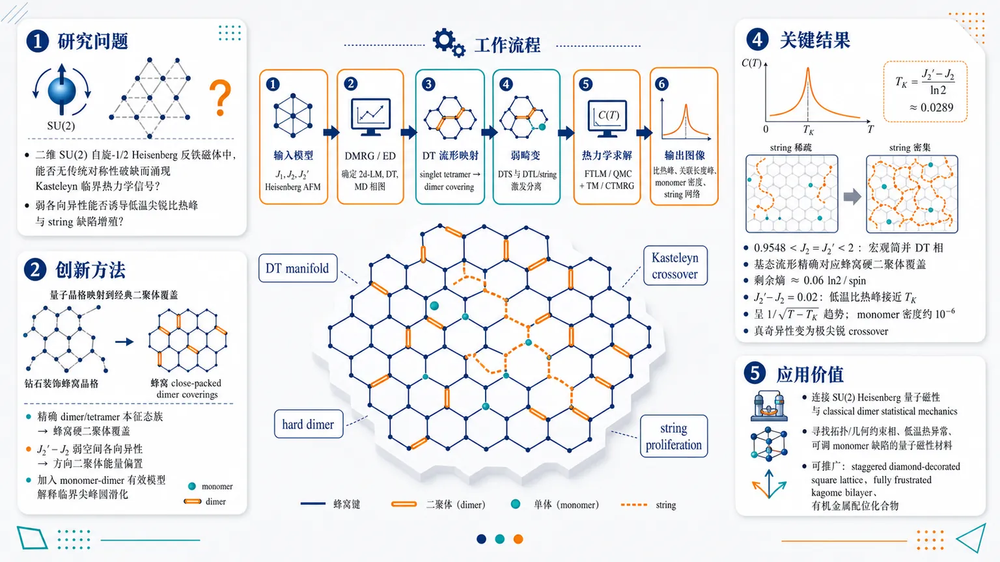
研究问题二维 SU(2) 自旋-1/2 Heisenberg 反铁磁体中，能否在不依赖传统对称性破缺的情况下，涌现经典硬二聚体模型的 Kasteleyn 临界热力学信号；尤其是弱各向异性是否能把宏观简并的 dimer-tetramer 基态流形转化为低温尖锐比热峰和 string 缺陷增殖。创新方法将钻石装饰蜂窝晶格 Heisenberg 模型的精确 dimer/tetramer 本征态族映射为蜂窝晶格 close-packed dimer coverings；再用弱空间各向异性为不同方向二聚体赋予能量偏置，使量子磁体的低能热力学等价于 Kasteleyn 各向异性硬二聚体模型，并进一步加入带自由 spin-1/2 简并的 monomer-dimer 有效模型来解释真实体系中被圆滑化的临界尖峰。工作流程输入为含 J1、J2、J2′ 的钻石装饰蜂窝自旋-1/2 Heisenberg 反铁磁体；先用 DMRG/ED 确定 2d-LM、DT、MD 相图和 DT 相的精确简并基态；再把 DT 流形中的 singlet tetramer 图案映射为蜂窝二聚体覆盖；引入 J2′−J2 弱畸变，把 DTS 基态与 DTL/string 激发分开；随后用 FTLM/QMC 计算量子比热，用 transfer matrix/CTMRG 求解 effective dimer model 与 effective monomer-dimer model；最终输出低温比热峰、关联长度峰、monomer 密度和 string 从稀疏到密集网络的 Kasteleyn crossover 图像。关键结果在 0.9548<J2=J2′<2 出现宏观简并 DT 相，基态流形精确对应蜂窝硬二聚体覆盖，剩余熵约为每自旋 0.06 ln2；在 J2′−J2=0.02 时，低温比热出现接近 Kasteleyn 温度 TK=(J2′−J2)/ln2≈0.0289 的尖峰，并跟随硬二聚体模型的 1/√(T−TK) 逆平方根奇异趋势；有限 monomer 密度约 10⁻⁶ 使真奇异性变为极尖锐 crossover，关联长度在 TK 附近强烈峰化但保持有限，string 缺陷由低温几乎不存在迅速增殖为高温密集网络。应用价值该研究把经典二聚体约束临界性嵌入可调的量子 frustrated magnet，提供了连接 SU(2) Heisenberg 量子磁性与 classical dimer statistical mechanics 的实验和理论平台；其机制可用于寻找具有拓扑/几何约束相、低温尖锐热异常和可调 monomer 缺陷的量子磁性材料，并可能推广到 staggered diamond-decorated square lattice、fully frustrated kagome bilayer 及有机金属配位化合物。第一部分：核心概览 (Overview)
Kasteleyn 转变首次被嵌入二维 SU(2) 自旋-1/2 Heisenberg 反铁磁体的低能热力学中。钻石装饰蜂窝晶格在 dimer-tetramer 相中具有可精确映射到蜂窝晶格硬二聚体覆盖的本征态族；弱空间各向异性解除宏观简并，生成接近 Kasteleyn 临界点的低温尖峰。有限但可调的 monomer 密度将真正奇异性圆滑化为任意尖锐 crossover，使量子 frustrated magnet 成为研究经典 dimer 约束临界性的可控平台。
---
第二部分：结构化快速回顾
《Approaching Kasteleyn transition in frustrated quantum Heisenberg antiferromagnets》（None，）
背景
二维硬二聚体模型中的 Kasteleyn transition源于严格 close-packing 约束和无限 string 缺陷的突增。此前 Kasteleyn 物理主要见于经典 dimer、vertex、Ising-like spin ice 等体系，尚未在 SU(2) Heisenberg quantum magnets中识别。
方法
研究对象为 spin-1/2 Heisenberg antiferromagnet on a diamond-decorated honeycomb lattice，设定 (J₁₌₁)，比较 (J₂) 与 (J₂') 的对称和弱畸变情形。使用 ED、FTLM、DMRG、QMC 分析量子模型，并通过 transfer matrix、CTMRG 求解有效 dimer model 与 monomer-dimer model。
结果
在 (0.9548<J₂₌J₂'<2) 处出现宏观简并 DT phase，其基态流形映射为蜂窝晶格 dimer coverings，剩余熵为 (0.06łn2) per spin。弱畸变 (J₂'-J₂₌₀.02) 下，低温比热峰位于 (T_Kapprox0.0289)，接近硬二聚体的 (1/sqrtT-T_K) 奇异性；有限 monomer 密度约 (10⁻⁶) 将其变成极尖锐 crossover。
讨论
关键机制是 singlet tetramer / singlet dimer 的约束重排映射为 dimer 模型，畸变导致 DTS 与 DTL 之间的能量偏置。Kasteleyn 交叉由 string excitations 的快速增殖驱动，而不是传统对称性破缺。
局限
有限 monomer 密度根据 Heilmann–Lieb 定理使二维 monomer-dimer 自由能保持解析，因此不存在真正热力学奇异点。ED/FTLM 主要限于 (N=32)，QMC 低温区受 dimer-basis sampling 困难限制；EMDM 在较高温度因额外低能激发不再完全定量。
结论
空间各向异性钻石装饰 Heisenberg 模型提供了一类可调的量子 frustrated magnet，其中经典 Kasteleyn 临界性作为低能涌现现象出现。类似机制还可能推广到 staggered diamond-decorated square lattice 与 anisotropic fully frustrated kagome bilayer。
---
第三部分：逐章节冷凝解析 (Section-by-Section Condensing)
Abstract
- Kasteleyn physics enters SU(2) quantum magnets
Kasteleyn transition 被定义为经典 dimer 与相关模型中 infinite strings of defects 的突发增殖，并被证明可在二维 frustrated quantum magnet 中具有实际热力学意义；核心表述为 *"the Kasteleyn transition, the abrupt proliferation of infinite strings of defects in classical dimer and related models, can also be relevant for frustrated 2d quantum magnets"*。
- Exact eigenstates map to honeycomb dimer coverings
spin-1/2 Heisenberg diamond-decorated honeycomb lattice 的某一相中存在由 dimer singlets 与 plaquette/tetramer singlets 构造的精确本征态族，可映射为蜂窝晶格二聚体覆盖；关键证据为 *"a family of exact eigenstates built as products of dimer and plaquette singlets can be mapped onto the dimer coverings of the honeycomb lattice"*。
- Effective dimer and monomer-dimer descriptions capture low-temperature physics
低温性质由具有 anisotropic activities 的有效 dimer 模型和小且可调的 monomer density 描述；有限 monomer 密度使真正转变变为极尖锐 crossover：*"The low-temperature properties of this phase are accurately described by an effective dimer model with anisotropic activities and a small, tunable density of monomers, leading to an arbitrarily sharp crossover version of the Kasteleyn transition"*。
- Material relevance is chemically plausible
模型几何可由 organo-metallic compounds 启发实现；摘要层面的定位为 *"The generalization to other geometries and the possibility to realize this model in organo-metallic compounds are briefly discussed"*。
---
Introduction
- Dimer models form the conceptual backbone
Dimer models 在二维统计物理、组合学和 frustrated magnetism 中是基础范式，关联 exotic phases 与 critical phenomena；原句为 *"Dimer models play a central role in statistical mechanics, combinatorics, and frustrated magnetism, offering paradigms for exotic phases and critical phenomena in two dimensions"*。
- Close-packed bipartite dimers mimic emergent gauge fields
在 bipartite lattices 上，close-packed dimer coverings 具有代数关联与拓扑约束，表现出类似 emergent gauge fields 和 Coulomb phases 的行为；证据为 *"On bipartite lattices, close-packed dimer coverings exhibit algebraic correlations and topological constraints that mimic emergent gauge fields and Coulomb phases"*。
- Kasteleyn transition lacks conventional symmetry breaking
在蜂窝晶格经典 dimer 模型中，各向异性 bond weights 会在无传统对称性破缺情况下产生 specific heat 奇异性；原文表述为 *"anisotropic bond weights induce a singularity in the specific heat without conventional symmetry breaking"*。
- Previous Kasteleyn observations excluded SU(2) Heisenberg magnets
Kasteleyn 相关物理此前已在 quantum dimer models 和 Ising-like spin ice 中出现，但尚未在 SU(2) Heisenberg quantum magnets 中识别；关键引述为 *"traces of Kasteleyn physics have not been identified so far in SU(2) Heisenberg quantum magnets"*。
- Mermin–Wagner theorem raises the challenge
二维 SU(2) Heisenberg 系统中由连续对称性破缺导致的有限温相变被 Mermin–Wagner theorem 禁止，因此非常规有限温临界性更难实现；证据为 *"thermal phase transitions associated to SU(2) symmetry breaking are strictly forbidden in 2d by the Mermin–Wagner theorem"*。
- Main gap closed by an emergent dimer phase
研究焦点是 spin-1/2 Heisenberg model on a diamond-decorated honeycomb lattice，其可实现具有 Kasteleyn 热力学特征的涌现 dimer 相；原文为 *"we examine a spin-1/2 Heisenberg model on a diamond-decorated honeycomb lattice and show that it realizes an emergent dimer phase with thermodynamic signatures characteristic of the Kasteleyn transition"*。
- Chemical lattice geometry is accessible
已知二维配位聚合物 ([Cu(bipn)₃Fe(CN)₆](ClO₄₎₂ḑot4H₂O) 与 ([Cu(ept)₃Fe(CN)₆](ClO₄₎₂ḑot5H₂O) 具有 diamond-decorated honeycomb geometry；原文为 *"adopts the geometry of the diamond-decorated honeycomb lattice"*。其中 Cu(²⁺) 带 spin-1/2，而 Fe(²⁺) 因 cyanide ligand field 处于非磁性低自旋 (S=0)：*"the Cu2+ ions carry spin-1/2 moments, whereas the Fe2+ ions are driven into a nonmagnetic low-spin (S=0) state"*。
- Strict dimer constraint is fragile to monomers
Kasteleyn transition 依赖每个格点必须属于一个 dimer 的全局 close-packing 约束；monomer vacancies 会松弛此约束并圆滑化转变：*"the Kasteleyn transition arises from the strict global packing constraint that forces every lattice site to belong to a dimer"*，以及 *"Even a small finite density of monomer vacancies relaxes this constraint, allowing local rearrangements that smooth out the transition"*。
- Heilmann–Lieb analyticity bounds the transition
二维 monomer-dimer 物理相图中，除严格零 monomer 极限外，自由能解析；原文为 *"the free energy remains analytic everywhere in the physical monomer-dimer phase diagram except in the strict zero-monomer limit"*。因此真实临界点被替换为 crossover。
- Tunable monomer density enables asymptotic criticality
monomer 密度可调至任意小，crossover 可任意尖锐并向低温移动；核心机制为 *"the density of monomers can be tuned to an arbitrarily small values, making the crossover increasingly sharp while shifting it towards lower temperatures"*。
---
Heisenberg diamond-decorated honeycomb lattice
- Model couplings and conserved dimer spin sectors
晶格包含两类 intra-diamond couplings (J₂)、(J₂')，其余 diamond 边为 (J₁₌₁) 作为能量单位；关键陈述为 *"The other bonds of each diamond are all equal and denoted by (J₁₌₁) hereafter serving as the energy unit"*。每个 dimer bond 的总自旋守恒，使每个 dimer 为 singlet 或 triplet，Hilbert space 分裂为独立 sector：*"the total spin of each dimer bond is conserved, hence, each dimer is either in a singlet or triplet state, defining separate sectors in the Hilbert space"*。
- Complementary numerical methods cover ground state and thermodynamics
原量子模型使用 ED、FTLM、DMRG、QMC；有效 classical 模型使用 transfer matrix 与 CTMRG。方法清单为 *"These include exact diagonalization (ED), finite-temperature Lanczos method (FTLM), density matrix renormalization group (DMRG), and sign-problem-free quantum Monte Carlo (QMC) simulations"*，以及 *"The effective dimer model (EDM) and the effective monomer-dimer model (EMDM) are numerically solved via the transfer-matrix and corner transfer matrix renormalization group (CTMRG) methods"*。
- DMRG phase diagram uses (4×4) unit cells and (N=128)
基态相图由 ALPS DMRG 在 (4×4) unit cells、总自旋数 (N=128)、周期边界条件下得到；证据为 *"using the ALPS implementation of DMRG on a system of (4×4) unit cells ((N=128) spins) under periodic boundary conditions"*。
- Symmetric line hosts 2d-LM, DT, and MD phases
在 (J₂₌J₂') 对称线上：
(J₂₌J₂'<0.9548) 为 2d-LM phase，所有 dimers 为 triplets；原文为 *"For (J₂₌J₂'<0.9548), the system realizes the 2d-LM phase, where all dimers are triplets"*。
(J₂₌J₂'>2) 为 MD phase，所有 dimers 为 singlets，monomeric spins 自由顺磁；证据为 *"For (J₂₌J₂'>2), the system enters the MD phase, where all dimers are singlets separated by free (paramagnetic) monomeric spins"*。
(0.9548<J₂₌J₂'<2) 为 macroscopically degenerate DT phase；原文为 *"In the intermediate region, (0.9548<J₂₌J₂'<2), the system enters a macroscopically degenerate DT phase"*。
- Singlet tetramer definition is microscopic and exact
singlet tetramer 是 intra-diamond dimer 上的 triplet 与两个相邻 monomeric spin-1/2 构成的 triplet 相互补偿形成 singlet；关键定义为 *"a singlet tetramer refers to a singlet formed from a triplet on the intra-diamond dimer compensated by a triplet formed from the two neighboring monomeric spins 1/2"*。
- DT manifold maps to honeycomb dimer coverings
DT 基态流形映射为底层蜂窝晶格的 dimer coverings，每个 occupied bond 对应一个 singlet tetramer；原文为 *"The DT ground-state manifold can be mapped onto that of dimer coverings of the underlying honeycomb lattice, where each occupied bond corresponds to a singlet tetramer"*。该映射给出 torus geometry 中每 spin 剩余熵 (0.06łn2)：*"This mapping implies a ground-state entropy in a torus geometry of (0.06ḑotłn2) per spin"*。
- ED confirms triplet density (1/3) in the DT phase
(N=32) cluster 包含 12 dimers 和 8 monomeric sites；DT phase 基态位于 exactly four triplet dimers sector，对应 triplet density (1/3)。证据为 *"ED on a 32-site cluster comprising 12 dimers and 8 monomeric sites"* 与 *"the ground state lies in the sector with exactly four triplet dimers, consistent with a triplet density of 1/3"*。
- The most stable DT regime lies near (J₂approx1.4)
最低激发来自 three、five、six triplet dimers sectors，以及 four-triplet sector 内第一激发；激发 gap 在 (J₂approx1.4) 附近最大，使其成为映射到 EDM 的自然参数区。原文为 *"The excitation gap is maximized near (J₂approx1.4), identifying this region as the most stable realization of the DT phase and a natural choice for mapping onto the EDM"*。
---
Kasteleyn signatures in a weakly distorted version
- Breaking (J₂₌J₂') splits DT degeneracy into DTS and DTL regimes
对称性破缺后，宏观简并 DT phase 分裂为 DTS phase 和 DTL phase；原文为 *"The macroscopically degenerate DT phase then splits into two distinct regimes"*。DTS 为非简并，有所有 vertical bonds 上的 singlet tetramers：*"a non-degenerate DTS phase, which has an ordered pattern of singlet tetramers on all vertical bonds"*。DTL 中 singlet tetramers 沿 diagonal bonds 排布，仍 massively degenerate 但无剩余熵：*"This phase remains massively degenerate, but has no residual entropy"*。
- A 1d-LM phase emerges for (J₂>J₂')
当 (J₂>J₂')，空间各向异性产生 1d-LM ferrimagnetic phase；diamond chains 以 zig-zag pattern 有效解耦，所有 (J₂)-bonds 上形成 dimer singlets。证据为 *"this spatial anisotropy leads to the emergence of a 1d-LM phase in which diamond chains with a zig-zag pattern are effectively decoupled from each other by dimer singlets on all (J₂)-bonds"*。
- Thermodynamics focuses on DTS ground state with DTL low-energy excitations
Kasteleyn 物理预期出现在 DTS 为基态、DTL 为低能激发的区域；原句为 *"we focus on the regime where the DTS forms the ground state and the DTL appears as a low-energy excitation, where Kasteleyn physics is expected"*。
- ED+FTLM reveals three specific-heat peaks at separated scales
在 (J₂'-J₂₌₀.02)、(N=32) 下，ED+FTLM 的比热出现三个温度分离的峰，约在 (Tapprox0.02,0.1,0.7)；证据为 *"we observe three peaks at well separated temperatures ((Tapprox0.02, 0.1, and 0.7))"*。
- QMC validates ED+FTLM at accessible temperatures
对 (J₂₌₁.3)、(J₂'=1.32)，比较 (N=32) 与 (N=288) QMC，accessible temperature range 内与 ED+FTLM 高度一致；原文为 *"Excellent agreement is found in the accessible temperature range"*。中温宽峰被所有方法重复，而 (N=288) 显示其随系统尺寸逐渐抑制：*"the broad intermediate peak is consistently reproduced across all methods, while the larger (N=288) QMC cluster reveals its progressive suppression with system size"*。
- Low-temperature peak sharpens rather than disappears
低温峰因 QMC 在 dimer basis 中采样困难不可达，但 ED+FTLM 清晰分辨，并由有效模型显示随系统尺寸增大而变尖锐；原文为 *"The low-temperature peak is inaccessible to QMC due to sampling challenges in the dimer basis"* 与 *"the low-temperature peak, instead of reducing, sharpens with increasing system size"*。
- Low-temperature peak originates from degeneracy lifting near the DT line
低温峰本质上来自 (J₂) 与 (J₂') 差异对 DT 基态流形简并的解除；证据为 *"it is essentially due to the lifting of degeneracy in the ground-state manifold of the DT phase due to the difference between (J₂) and (J₂')"*。
- EDM is exactly the classical Kasteleyn model
低能激发可由 vertical 与 tilted bonds 具有不同能量的 effective dimer model 描述，这正是 Kasteleyn 发现其同名转变的模型；原文为 *"This model is precisely the model for which Kasteleyn discovered the transition that bears his name"*。
- Monomers arise from replacing singlet tetramers
DT 基态流形中的任意 singlet tetramer 可替换为 intra-dimer singlet 加两个 unpaired spins，即一对 monomers，且由于 spin 具有额外简并；证据为 *"any singlet tetramer in the ground-state manifold of the DT phase can be replaced by a diamond with an intra-dimer singlet and two unpaired spins, i.e., a pair of monomers"*，以及 *"monomers correspond to free spin-1/2 entities and therefore carry an additional twofold degeneracy"*。
- Separated monomers and string paths remain exact eigenstates
monomers 可通过沿路径交换 singlet dimers 与 singlet tetramers 进一步分离，且这些状态仍为 exact eigenstates；原句为 *"these monomers can be further separated by exchanging singlet dimers and singlet tetramers along the path"* 与 *"all these states are still exact eigenstates"*。
- EDM and EMDM quantitatively reproduce the low-temperature peak
在 (J₂'-J₂₌₀.02) 下，EDM 与 EMDM 在同一有限尺寸上均捕获低温比热峰；EDM 到 (Tapprox0.04) 与 ED+FTLM 一致，EMDM 改善更高温一致性并捕获比热随后上升。证据为 *"Both effective models indeed capture the low-temperature peak quantitatively"*，*"the EDM reproduces the ED+FTLM data up to (Tapprox0.04)"*，以及 *"The EMDM further improves the agreement at higher temperatures and also captures the subsequent rise in the specific heat"*。
- EMDM has a finite high-temperature limitation
对 (J₂₌₁.3)，monomer 激发以下还有其他激发，因此 EMDM 在较高温不再完全定量；脚注证据为 *"for (J₂₌₁.3), there are further excitations at energies below the monomer ones ... such that the EMDM no longer yields a quantitatively accurate description either at these higher temperatures"*。
- Transfer matrix shows finite-size sharpening and temperature shift
对 (infty×10) tube geometry，EDM/EMDM 的低温比热峰随系统尺寸增大稳步增强并略向更高温移动；证据为 *"the low-temperature peak of the specific heat increases steadily and undergoes a slight shift toward higher temperatures with increasing system size"*。
- CTMRG gives thermodynamic-limit response
CTMRG 适合二维 classical systems 的 thermodynamic limit，bond dimension 收敛后近乎精确；原文为 *"This tensor-network method is well suited for 2d classical systems in the thermodynamic limit, and provides essentially exact results once the bond dimension is converged"*。
- Specific heat follows hard-dimer inverse-square-root singularity near (T_K)
CTMRG 显示低温 sharp peak，与 pure EDM 的 (1/sqrtT-T_K) 逆平方根发散紧密对应；(T_Kapprox0.0289)。证据为 *"the specific heat of the EMDM closely follows the inverse square-root divergence (1/sqrtT-TK) of the pure EDM"*。
- Exact Kasteleyn scale is (T_K=(J₂'-J₂₎/łn2)
当 (J₂'-J₂₌₀.02)，硬二聚体 Kasteleyn 温度为 (T_K=(J₂'-J₂₎/łn2approx0.0289)；原文为 *"with (T_K=(J₂'-J₂₎/łn2approx0.0289)"*。
- Finite monomer density smooths the singularity into a steep crossover
EMDM 保留热力学特征，但有限 monomer density (n_M) 将 true transition 变为 round but extremely steep crossover；证据为 *"the finite monomer density (n_M) ultimately smooths the transition into a round but extremely steep crossover"*。
- Correlation length peaks but remains finite
correlation length (ξ) 在 (T_K) 附近有显著峰值，但全温区有限，符合 Heilmann–Lieb 定理；原文为 *"displays a pronounced maximum near (T_K) but remains finite across the full temperature range"* 与 *"consistent with the absence of a true thermodynamic singularity in 2d monomer–dimer models"*。
- String proliferation drives DTS-to-DTL crossover
低于 (T_K) 系统近乎无 strings，为 frozen DTS；在 (T_K) 仅有 isolated strings；略高于 (T_K) 出现 dense network of strings。证据为 *"Well below (T_K) the system is nearly string-free, consistent with a frozen DTS"*，*"At the Kasteleyn temperature (T_K) only isolated strings are present"*，以及 *"slightly above it a dense network of strings rapidly develops"*。
- Monomer density is exponentially small near (T_K)
对 (J₂₌₁.3)、(J₂'-J₂₌₀.02)，(T_K) 附近 monomer density 约 (10⁻⁶)，低温指数小；原文为 *"The monomer density is exponentially small at low temperatures"* 与 *"it is of order (10⁻⁶) around (T_K) for (J₂₌₁.3) and (J₂'-J₂₌₀.02)"*。
- Tuning anisotropy controls proximity to the true critical point
通过调节 (J₂'-J₂)，monomer density 可降至任意小，从而渐近接近真正 Kasteleyn critical point；证据为 *"By tuning (J₂'-J₂), the monomer density can be reduced to arbitrarily small values, allowing the system to asymptotically approach the true Kasteleyn critical point"*。
---
Conclusion and Perspectives
- Quantum fluctuations do not lift the macroscopic degeneracy here
宏观基态简并是 highly frustrated magnets 的典型特征；该模型中量子涨落也未解除这一简并。关键引述为 *"Macroscopic ground-state degeneracy is a hallmark of highly frustrated magnets"* 与 *"The present model provides an example where this degeneracy is not lifted even by quantum fluctuations"*。
- Lattice distortion is a physical degeneracy-lifting mechanism
第三定律预期真实实验体系会解除基态简并；空间各向异性的 lattice distortion 是一种机制。证据为 *"according to the third law of thermodynamics, one expects nature to lift this ground-state degeneracy in experimental systems"*，以及 *"A lattice distortion that renders the coupling constants spatially anisotropic ... is one mechanism to lift such a degeneracy"*。
- Degeneracy lifting can generate Kasteleyn physics
弱劈裂的简并基态流形通常导致低温比热峰；该模型进一步显示这种劈裂可引发涌现 Kasteleyn physics。原文为 *"one expects a weak splitting of a degenerate ground-state manifold to give rise to a low-temperature peak in the specific heat"* 与 *"such a degeneracy lifting can give rise to emergent Kasteleyn physics"*。
- Generality extends beyond honeycomb decoration
补充材料中的 staggered diamond-decorated square lattice 与 anisotropic fully frustrated kagome bilayer 表明该现象可能属于更广泛 frustrated quantum magnets；证据为 *"suggest that emergent Kasteleyn physics is a generic feature of a broader class of frustrated quantum magnets with emergent dimer degrees of freedom"*。
- Conceptual bridge links quantum magnetism and classical dimer statistical mechanics
研究建立 quantum magnetism 与 classical dimer models 统计力学之间的联系，为拓扑和几何约束相研究开辟路径；原文为 *"provides a bridge between quantum magnetism and the statistical mechanics of classical dimer models"*，以及 *"opening new avenues for the study of topological and geometrically constrained phases in frustrated quantum spin systems"*。
---
Acknowledgements
- Computational and funding infrastructure is explicitly identified
QMC code 来自 Lukas Weber；计算资源来自 RWTH Aachen University IT Center 与 CY Cergy Paris Université CDC “osaka” cluster。证据为 *"We thank Lukas Weber for making his QMC code available for this study"*，以及 *"Computing time for the QMC and ED simulations was provided by the IT Center at RWTH Aachen University and on the “osaka” cluster"*。
---
Appendix A End Matter
- Lattice geometry specifies vertical and zig-zag intra-dimer couplings
Fig. 5 展示 diamond-decorated honeycomb lattice 的局部结构；vertical diamonds 上 (J₂) 为红色粗线，zig-zag diamonds 上 (J₂') 为绿色粗线，monomer-dimer couplings (J₁) 为蓝色细线。原文为 *"The intra-dimer couplings (J₂) and (J₂') within vertical and zig-zag diamonds are shown as thick red and green lines, whereas the monomer-dimer couplings (J₁) are depicted as thin blue lines"*。
---
Hamiltonian
- The microscopic Hamiltonian is nearest-neighbor spin-1/2 Heisenberg
模型 Hamiltonian 为
[
hatmathcal H=sumłₐₙgₗₑ ᵢ,ⱼåₙgₗₑJᵢ,ⱼhatmathbf Sᵢḑothatmathbf Sⱼ,
]
其中 (hatmathbf Sᵢ) 是 spin-1/2 operator，(Jᵢ,ⱼ) 包含 (J₁,J₂,J₂')。证据为 *"We consider the spin-1/2 Heisenberg model on a diamond-decorated honeycomb lattice ... (hata̧lH=sumłₐₙgₗₑ ᵢ,ⱼåₙgₗₑJᵢ,ⱼhatbmSᵢḑothatbmSⱼ)"*。
- Periodic boundary conditions are used throughout
所有数值计算采用周期边界条件；原文为 *"We employ periodic boundary conditions throughout"*。
- Hilbert space fractionalizes into (2N_d) sectors
每个 dimer 的总自旋守恒，若 (N_d) 为 dimers 数量，则 Hilbert space 分裂为 (2N_d) 个独立 sector；原文为 *"the Hilbert space fractionalizes into (2N_d) independent sectors"*。sector 标签由每个 dimer 是 singlet 或 triplet 决定：*"which can be labeled according to whether each dimer is in its singlet or triplet state"*。
- Conservation law underpins phase and excitation classification
dimer 总自旋守恒是相分类与低能激发分类的根本原因；证据为 *"This conservation law underlies the classification of phases and low-energy excitations of the model"*。
---
Low-energy gaps from ED in the undistorted case
- ED gap analysis uses (2×2), (N=32), (Nₘ̊ ₜᵣᵢₚ=4)
Fig. 6 给出 isotropic case 下 DT phase 的最低激发 gap (Δₘ̊ DT) 随 (J₂) 的变化；系统为 (2×2)，总 spin 数 (N=32)。证据为 *"for a (2×2) system with the total number of spins (N=32)"*，以及 *"This system size has four triplet dimers (Nₘ̊ ₜᵣᵢₚ=4) within the DT phase"*。
- For (J₂gtrsim1.4), the lowest excitation has (Nₘ̊ ₜᵣᵢₚ=3)
在 (J₂gtrsim1.4) 区域，最低激发进入 (Nₘ̊ ₜᵣᵢₚ=3) sector，gap 为 (Δₘ̊ DT=2J₁₋J₂)；原文为 *"For (J₂gtrsim1.4), the system is excited into a state with only (Nₘ̊ ₜᵣᵢₚ=3) and (Δₘ̊ DT=2J₁₋J₂)"*。
- Approaching 2d-LM involves increasing triplet count
当 (J₂łesssim1.4) 接近 2d-LM phase，最低激发涉及越来越多 triplet dimers；在 (2×2) 系统中 (J₂<0.9559) 时达到 12 个 triplet dimers。证据为 *"approaching the 2d-LM phase for (J₂łesssim1.4) the lowest-energy excitations involve progressively larger numbers of triplet dimers, reaching a maximum of 12 triplet dimers for (J₂<0.9559)"*。
- The maximal DT gap is (Δₘ̊ DTapprox0.59) near (J₂approx1.41)
gap 在 (J₂approx1.41) 处最大，约 (Δₘ̊ DTapprox0.59)，说明 (J₂approx1.4) 是最稳定 DT 区域。原文为 *"At (J₂approx1.41), the excitation gap is maximized at approximately (Δₘ̊ DTapprox0.59)"*。
- A nearby four-triplet excitation lies at (Δₘ̊ DTapprox0.62)
另一个 (Nₘ̊ ₜᵣᵢₚ=4) 激发位于 (Δₘ̊ DTapprox0.62)；证据为 *"Just above, i.e., at (Δₘ̊ DTapprox0.62), there is another excitation with (Nₘ̊ ₜᵣᵢₚ=4)"*。
- Large degeneracies limit the pure ground-state description to (Tłl0.2)
最低 (Nₘ̊ ₜᵣᵢₚ=5,4,3) 激发分别具有 72、192、88 重简并，而 (2×2) DT 基态为 9 重；原文为 *"72, 192, and 88-fold for the lowest (Nₘ̊ ₜᵣᵢₚ=5, 4, and 3) excitations, respectively, as compared to the 9 ground states"*。由于高简并，尽管激发能较高，其 Boltzmann 权重在 (Tapprox0.2) 已可与基态流形相比，因此 classical ground-state-only 描述仅适用于 (Tłl0.2)：*"their Boltzmann weights comparable to the total Boltzmann weight of the ground-state manifold already at (Tapprox0.2)"*。
---
Tensor-network formulation
- Available text does not provide the tensor-network equations
提供内容仅出现标题 “Tensor-network formulation”，后续张量网络构造细节未包含；可确认的 CTMRG 信息来自正文，即二维 classical thermodynamic limit 中 bond dimension 收敛后结果 essentially exact：*"provides essentially exact results once the bond dimension is converged"*。
---
第四部分：深度理解与语言支持 (Understanding & Nuance)
1. 术语解析
- Kasteleyn transition
指硬二聚体模型中由各向异性权重驱动的非传统转变，核心不是局域 order parameter 的对称性破缺，而是 infinite string excitations 的突发增殖。这里的 “transition” 在纯 hard-dimer 极限是真奇异性；加入 monomers 后严格变成 crossover。
- Close-packed dimer coverings
“close-packed” 强调每个格点恰好被一个 dimer 覆盖，不允许 vacancy 或 monomer。这个全局约束是 Kasteleyn 奇异性的来源；一旦出现有限 monomer 密度，约束被局域破坏，自由能解析。
- Monomer density
monomer 是未被 dimer 覆盖的有效自由 spin-1/2 缺陷。这里的 monomer 不只是经典空位，还带有额外二重 spin degeneracy，因此有效 monomer-dimer 模型不同于最简单经典模型。
- String excitations
string 是通过沿路径交换 singlet dimer 与 singlet tetramer 形成的线状缺陷。Kasteleyn crossover 的显微图像不是单个缺陷激发，而是 string 从稀疏孤立到密集网络的快速增殖。
- Emergent classical criticality
“emergent” 表明低能自由度不是原始 Hamiltonian 中的经典 dimer，而是由量子 Heisenberg 模型的精确本征态流形涌现出来；“classical criticality” 指低温热力学服从经典 dimer Kasteleyn 模型的奇异结构。
2. 疑难查证
- 为什么二维 SU(2) Heisenberg 模型可以出现 Kasteleyn-like 有限温尖峰而不违反 Mermin–Wagner 定理？
Mermin–Wagner theorem 禁止二维连续对称性在有限温自发破缺，例如常规 Néel order 或 ferrimagnetic long-range order 的热相变。Kasteleyn 机制不依赖 SU(2) spin-rotation symmetry breaking，而依赖 dimer close-packing constraint 的拓扑/几何约束。因此它属于约束驱动的 classical statistical singularity。有限 monomer 密度又使真实体系没有严格热力学奇异点，只剩尖锐 crossover，因此更不违反定理。
- 为什么 monomer 会把真正相变变成 crossover？
纯 dimer 模型要求每个 site 必须被 dimer 占据。string 一旦形成，其延伸和终止受到全局约束限制，导致在 Kasteleyn 温度处出现非解析行为。monomer 相当于 string 的端点或缺口，使 string 可以局域终止、重排和绕开全局约束。Heilmann–Lieb 定理保证二维 monomer-dimer 模型在有限 monomer fugacity 下自由能解析，因此尖峰只能是圆滑但可极其陡峭的 crossover。
- 为什么 (T_K=(J₂'-J₂₎/łn2)？
Kasteleyn 转变可理解为 string 的能量代价与熵增益竞争。弱畸变给沿非基态方向的 string 单位长度带来能量代价 (Δ E=J₂'-J₂)。每延长一步通常有约 2 种选择，产生熵增益 (Δ S=łn2)。自由能线张力近似为 (Δ f=Δ E-Tłn2)。当 (Δ f=0) 时 strings 开始无限增殖，因此 (T_K=Δ E/łn2=(J₂'-J₂₎/łn2)。
- 为什么 DTL 可以 massively degenerate 但没有 residual entropy？
“massively degenerate” 可以表示简并数随系统尺寸增长，但不一定以 (exp(cN)) 的形式增长。residual entropy per spin 只有在简并数指数增长时才非零。DTL 的简并可能是次指数级增长，因此总简并很大，但热力学极限下 (S/N→0)。
---
第五部分：创新评估与关联 (Synthesis & Novelty)
1. 创新性判断
- 首次把 Kasteleyn signatures 明确连接到 SU(2) Heisenberg quantum magnet
过去 2–5 年内，相关工作集中在 quantum dimer models、diamond-decorated square lattices 的 exact dimer/tetramer phases、以及 spin-ice 或 Ising-like 体系中的 Kasteleyn 行为。关键空白是：SU(2)-symmetric Heisenberg antiferromagnet 中是否能出现 Kasteleyn 热力学特征。该研究通过 diamond-decorated honeycomb lattice 的精确 dimer-tetramer 流形填补了这一点。
- 从“基态映射”推进到“有限温 Kasteleyn crossover”
早期 diamond-decorated Heisenberg 工作主要识别 exact dimer states、macroscopic degeneracy、phase diagrams 或 magnetization behavior。这里进一步展示：弱各向异性劈裂简并流形后，低温比热、correlation length、string snapshots 都服从 Kasteleyn 机制。这不是单纯发现一个简并相，而是识别其有限温统计力学 universality。
- monomer perturbation 被系统纳入，而非视为缺陷噪声
纯 Kasteleyn transition 需要零 monomer 密度；真实量子磁体自然存在 monomer-like 激发。创新点在于构造 effective monomer-dimer model，定量解释有限 monomer 密度如何圆滑化奇异性，同时仍允许通过参数调节任意接近 hard-dimer 临界点。
- 多方法交叉验证增强可信度
原量子模型的 ED+FTLM、DMRG、QMC 与有效 classical 模型的 transfer matrix、CTMRG 相互闭合：DMRG 给相图，ED 确认 triplet sector 与 gap，FTLM/QMC 给热力学，EDM/EMDM/CTMRG 解释低温峰、correlation length 与 string proliferation。这种跨量子与经典有效模型的验证链条，是相较近年单一数值或单一映射工作的主要强化。
- 解决的前人未解问题
前人尚未解决的问题是：在没有 Ising 各向异性、没有外场诱导 spin-ice 约束、且受 Mermin–Wagner 限制的二维 SU(2) Heisenberg 磁体中，能否实现 Kasteleyn-type criticality。答案是肯定的，但形式是 finite-monomer-rounded, arbitrarily sharp crossover，其真正临界点只在零 monomer 极限渐近达到。
-
13
📊 含图深析
📄 摘要：合成基于二甲氨基端基铁电向列分子的两个长侧链同系物，研究侧链延长对介晶性质的影响。此前短同系物从各向同性相直接转变到铁电向列相；侧链变长后相序和介晶行为发生改变，用于分离分子柔性与极性相稳定性的关系。
📖 英文原文
arXiv:2607.25087v1 Announce Type: new Abstract: The discovery of ferroelectric nematic phase opened new directions in the field of soft matter chemistry and physics. In this paper, we have modified a previously reported ferroelectric nematogen based on molecular structure with dimethylamino-terminated part. We have prepared two new homologues by prolonging a side chain and investigated the effect of its length on the mesomorphic properties. While previously reported homologues exhibited a direct phase transition from the isotropic (Iso) to the ferroelectric nematic phase (NF), for prolonged alkyl chain there is a narrow nematic phase (N) in between. For new compounds, we have established their mesomorphic and material properties. We have confirmed ferroelectricity of the NF phase by the polarization, SHG signal and permittivity. Finally, we have compared these parameters with respect to the side-chain length and discussed new effects, discovered for prolonged homologues due to the presence of an additional N phase.
💡 亮点：通过延长侧链调控铁电向列分子的相变路径，比较直接 Iso-NF 转变与长链同系物行为。结果指向分子侧链柔性对软物质铁电相稳定性的关键作用。
📖 展开分析 + 配图
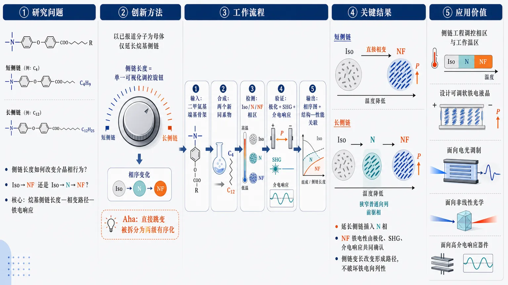
研究问题侧链长度如何改变二甲氨基端基铁电向列分子的介晶相行为：分子从各向同性液体冷却时，是直接进入铁电向列相 NF，还是先形成普通向列相 N，再进入 NF？核心是揭示“烷基侧链长度—相变路径—铁电响应”之间的结构调控关系。创新方法以已报道的铁电向列分子为母体，只延长烷基侧链，制备两个新同系物，把侧链长度作为单一可视化调控旋钮；关键 Aha 点是：侧链变长后，相序从原来的 Iso→NF 直接跳变，被拆分为 Iso→N→NF 的两级有序化过程，普通向列相成为铁电向列相的前驱窗口。工作流程输入为含二甲氨基端基的铁电向列分子骨架；通过延长侧链合成两个新同系物；随后检测相行为与相变序列，比较短链与长链材料的 Iso、N、NF 相区；再用极化测量、二次谐波产生 SHG 和介电响应共同确认 NF 相铁电性；最终输出侧链长度对应的相序图和结构—性能关联。关键结果短侧链同系物表现为 Iso→NF 直接相变；延长烷基侧链后，在各向同性相 Iso 与铁电向列相 NF 之间插入一个狭窄普通向列相 N，形成 Iso→N→NF 相序。新化合物的 NF 相由可观测极化、SHG 信号和介电响应共同验证，说明延长侧链并未破坏铁电向列性，而是改变了其形成路径。应用价值证明侧链工程可以像分子级调节旋钮一样控制铁电向列材料的相区、前驱相和电响应温区，为设计可调工作温度的软铁电液晶、电光调制材料、非线性光学材料和高介电响应器件提供清晰策略。第一部分：核心概览（Overview）
侧链长度被确立为调控铁电向列相（NF）相序与材料响应的关键结构变量。通过延长已报道的二甲氨基端基铁电向列分子的烷基侧链，两个新同系物从原先的 Iso→NF 直接转变，变为 Iso→N→NF，出现狭窄的普通向列相。极化、二次谐波产生和介电响应共同验证 NF 铁电性，为理解侧链工程如何重塑铁电向列材料的介晶行为提供了结构—相态—性能关联。
---
第二部分：结构化快速回顾
《The effect of side chain length on the mesomorphic properties of ferroelectric nematogens》（None，）
背景
铁电向列相（ferroelectric nematic phase, NF） 的发现推动了软物质化学与物理的新方向。研究对象属于具有二甲氨基端基（dimethylamino-terminated part）的铁电向列分子体系。
方法
通过在既有铁电向列分子结构基础上延长侧链，制备两个新的同系物，并考察侧链长度对介晶性质（mesomorphic properties）的影响。材料表征包括相行为、极化、SHG（二次谐波产生）和介电常数。
结果
原有同系物表现为 Iso→NF 直接相变；延长烷基链后，在各向同性相与铁电向列相之间出现一个狭窄的普通向列相（N）。新化合物的 NF 相通过极化、SHG 信号和介电响应得到确认。
讨论
侧链延长不仅改变相变路径，还引入额外的 N 相，从而产生此前较短同系物中不存在的新效应。NF 相的关键物性参数可随侧链长度进行比较。
局限
可用材料仅包含题名、摘要与 arXiv 元数据；缺少完整 PDF 中的实验细节、合成路线、相变温度表、图谱、统计误差、模型拟合和逐章节论证。
结论
侧链长度是调控铁电向列分子相序和材料性能的有效分子设计参数；延长侧链可诱导 Iso→N→NF 相序，并保留 NF 相的铁电特征。
---
第三部分：逐章节冷凝解析（Section-by-Section Condensing）
Abstract
- Ferroelectric nematic phase creates a new soft-matter research direction
铁电向列相（ferroelectric nematic phase）被定位为软物质化学与物理中的重要新相态，其发现带来新的研究问题与材料设计空间。摘要直接强调这一领域背景：*"The discovery of ferroelectric nematic phase opened new directions in the field of soft matter chemistry and physics."*
这一表述说明研究的学术语境不是一般液晶相行为，而是围绕极性有序、宏观自发极化、向列取向序三者共存的特殊液晶相展开。
- Molecular design is based on a previously reported dimethylamino-terminated ferroelectric nematogen
研究对象并非全新母核，而是在既有铁电向列分子基础上进行结构改造，核心结构含有二甲氨基端基片段（dimethylamino-terminated part）。摘要给出分子设计来源：*"we have modified a previously reported ferroelectric nematogen based on molecular structure with dimethylamino-terminated part."*
这一点显示研究变量较集中：保持主体铁电向列骨架相近，主要改变侧链长度，从而提高结构—性能因果归因的清晰度。
- Two new homologues are prepared by side-chain prolongation
合成策略是制备两个新的同系物（homologues），区别在于侧链被延长。摘要明确写道：*"We have prepared two new homologues by prolonging a side chain and investigated the effect of its length on the mesomorphic properties."*
这里的关键变量是side chain length，目标响应变量是mesomorphic properties，即液晶材料的相态、相变序列、相稳定区间和相关物性。
- Phase sequence changes from direct Iso–NF transition to Iso–N–NF transition
最核心发现是相序变化。较短或先前报道的同系物表现为各向同性相（Iso）直接转变到铁电向列相（NF）；延长烷基侧链后，二者之间出现狭窄的普通向列相（N）。摘要给出直接证据：*"While previously reported homologues exhibited a direct phase transition from the isotropic (Iso) to the ferroelectric nematic phase (NF), for prolonged alkyl chain there is a narrow nematic phase (N) in between."*
这意味着侧链延长改变了相变路径：
- 原有路径：Iso → NF
- 新路径：Iso → N → NF
该变化具有重要物理含义，因为普通 N 相通常具有取向序但不具备宏观铁电极化，而 NF 相具有极性取向有序。
- New compounds have established mesomorphic and material properties
两个新化合物不仅被合成，还完成了介晶性质与材料性质表征。摘要说明：*"For new compounds, we have established their mesomorphic and material properties."*
可用摘要未提供具体相变温度、焓变、偏光织构、DSC 数值、介电常数数值或极化强度，因此不能可靠补充数值型结果。
- Ferroelectricity is confirmed by polarization, SHG signal, and permittivity
NF 相的铁电性不是单一手段判断，而是通过三类证据交叉确认：极化（polarization）、SHG 信号（二次谐波产生）和介电常数（permittivity）。摘要原文为：*"We have confirmed ferroelectricity of the NF phase by the polarization, SHG signal and permittivity."*
三种证据的互补性如下：
- Polarization：直接关联宏观电偶极有序与可翻转极化。
- SHG signal：通常要求反演对称性破缺，适合判断极性有序相。
- Permittivity：反映极性涨落、电场响应和相变附近介电异常。
摘要未给出 SHG 强度、极化值或介电峰值，不能构造定量比较。
- Side-chain length enables comparative structure–property analysis
材料参数被放在侧链长度框架下比较，目的是建立侧链长度—相行为—铁电响应之间的关联。摘要指出：*"Finally, we have compared these parameters with respect to the side-chain length and discussed new effects, discovered for prolonged homologues due to the presence of an additional N phase."*
这里的“new effects”与额外 N 相直接相关，说明普通向列相的出现不仅是相图上的插入相，还可能改变 NF 相形成机制、极化发展过程、介电异常或 SHG 响应演化。
- Additional N phase is the key mechanistic novelty in prolonged homologues
延长同系物中的额外 N 相构成最重要的新现象。摘要中的关键表达是：*"due to the presence of an additional N phase."*
这一点暗示较长侧链可能削弱或延迟极性有序的建立，使分子先形成非极性的取向有序 N 相，再在较低温度进入极性 NF 相。
---
arXiv metadata
- Submission identity and disciplinary classification
研究归属于凝聚态物理下的软凝聚态物质（Soft Condensed Matter）方向，arXiv 编号为 2607.25087。元数据写明：*"arXiv:2607.25087 (cond-mat)"*，并列出主题为：*"Subjects: Soft Condensed Matter (cond-mat.soft)"*。
学科定位表明该工作主要服务于液晶、软物质相变、极性有序材料和功能软材料研究。
- Submission date and document scale
提交时间为 2026 年 7 月 27 日，版本为 v1。元数据给出：*"[Submitted on 27 Jul 2026]"*，并进一步记录：*"[v1] Mon, 27 Jul 2026 21:24:58 UTC"*。
文档规模为 21 页、9 幅图，元数据注明：*"Comments: 21 pages, 9 figures"*。
这说明完整论文很可能包含合成、相行为、显微织构、DSC、介电、极化和 SHG 等图表，但当前材料未包含这些具体内容。
- Authorship and collaboration breadth
作者包括 Natalia Podoliak、Martin Cigl、Pavlo Golub、Anej Sterle、Marta Lavrič、Nerea Sebastian、Aitor Erkoreka、Josu Martinez-Perdiguero、Alenka Mertelj、George Cordoyiannis、Vladimíra Novotná。元数据列出：*"Authors: Natalia Podoliak, Martin Cigl, Pavlo Golub, Anej Sterle, Marta Lavrič, Nerea Sebastian, Aitor Erkoreka, Josu Martinez-Perdiguero, Alenka Mertelj, George Cordoyiannis, Vladimíra Novotná"*。
多作者组合通常对应合成化学、液晶物理、非线性光学、介电谱和材料表征的协同。
---
第四部分：深度理解与语言支持（Understanding & Nuance）
1. 术语解析
- Ferroelectric nematic phase（铁电向列相，NF）
指同时具有向列取向序和宏观极性有序的液晶相。普通向列相中分子长轴大致沿同一方向排列，但 n 与 −n 等价，整体没有极化方向；铁电向列相打破这种头尾等价性，出现可观测的自发极化。摘要中 *"ferroelectric nematic phase"* 的重点不只是“液晶相”，而是“向列相中出现铁电极性”。
- Nematogen（向列相形成分子 / 向列液晶基元）
指能够形成向列相或相关向列有序相的分子。题名中的 *"ferroelectric nematogens"* 表示这些分子不是普通向列材料，而是能形成 NF 相的铁电向列分子。中文不能简单译为“向列相”，更准确是“向列相形成分子”或“向列液晶分子”。
- Mesomorphic properties（介晶性质）
*Mesomorphic* 来自 mesophase，即介于晶体和各向同性液体之间的中间相。这里包括相序、相变温度、相稳定区间、织构、相变焓、取向有序程度等。摘要中 *"investigated the effect of its length on the mesomorphic properties"* 的含义是考察侧链长度如何改变液晶相行为，而不是只测一个材料参数。
- Homologues（同系物）
指结构骨架相同、通常只差一个或多个 –CH₂– 单元的一系列化合物。摘要中的 *"two new homologues by prolonging a side chain"* 表明变量控制在侧链长度上，适合做系统结构—性能关系分析。
- Permittivity（介电常数 / 介电响应）
在液晶物理中不仅是静态介电常数，还常用于描述材料在电场下的极化响应、频率依赖和相变附近异常。摘要中 *"confirmed ferroelectricity ... by ... permittivity"* 暗示 NF 相可能表现出强介电响应或特征介电异常。
2. 疑难查证
- 为什么 Iso→N→NF 比 Iso→NF 更重要？
Iso 相是各向同性液体，分子取向无长程有序；N 相已有分子长轴取向序，但没有宏观极化；NF 相进一步具有极性有序。
直接 Iso→NF 意味着取向有序和极性有序几乎同时出现。出现 Iso→N→NF 则说明两个序参量被分离：
- 高温降温时，分子先建立非极性的取向排列；
- 继续降温后，分子头尾方向进一步协同排列，形成极性有序。
这种分离对理论很有价值，因为它允许单独研究普通向列有序如何作为 NF 相的前驱状态。
- 为什么延长侧链会插入普通 N 相？
较长烷基侧链通常增加分子柔性、稀释刚性极性核心之间的相互作用，并改变分子形状各向异性。NF 相需要强烈的极性关联和头尾不等价排列；如果侧链延长削弱偶极—偶极协同或增加构象自由度，材料可能先满足形成普通 N 相的条件，而不足以立即形成 NF 相。温度进一步降低后，热涨落减弱，极性关联增强，NF 相才出现。
- 为什么 SHG 能验证 NF 相的铁电性？
二次谐波产生（second harmonic generation, SHG）在电偶极近似下通常要求体系缺乏反演中心。普通 N 相在宏观上通常近似反演对称或头尾等价，因此 SHG 弱或不显著；NF 相具有极性取向，反演对称性破缺，SHG 信号增强。因此 SHG 是判断极性液晶相的重要光学证据。但严格地说，SHG 证明的是非中心对称/极性有序，与极化翻转证据结合后，才更有力地支持“铁电性”。
---
第五部分：创新评估与关联（Synthesis & Novelty）
1. 创新性判断
- 从“发现 NF 相”转向“调控 NF 相相序”的结构设计问题
过去 2–5 年铁电向列液晶研究的核心之一是寻找新 NF 材料、确认极化性质、解释巨大介电响应和极性有序来源。该工作的新颖性在于将问题收束到一个清晰分子变量：侧链长度。通过延长侧链，直接观察到相序从 Iso→NF 变为 Iso→N→NF，说明侧链工程能够调控 NF 相的形成路径。
- 解决了同一分子骨架中侧链长度如何影响 NF 前驱相的问题
许多铁电向列材料报道关注是否存在 NF 相、极化强度多大、温度区间多宽。这里的关键推进是：在相近骨架的同系物中，延长侧链诱导额外普通 N 相，使 NF 相不再直接从各向同性相生成。这为理解 NF 相是否需要普通向列相作为前驱、极性有序是否可与取向有序分步建立提供了实验线索。
- 多证据确认 NF 相铁电性，避免单一表征误判
极化、SHG 和介电响应共同使用，构成对 NF 相的交叉验证。单独依赖织构或相变温度容易将极性向列相与其他低对称相混淆；多手段验证提高了相鉴定可信度。
- 额外 N 相带来新的物理窗口
额外 N 相使材料具有两个连续的有序化阶段：
- Iso→N：建立非极性取向序；
- N→NF：建立极性铁电序。
这种分步过程有助于分离测量介电异常、SHG 起始、极化建立和相变热力学之间的关系，是相较直接 Iso→NF 材料的重要实验优势。
- 潜在应用价值在于可调相区间与响应温区
对显示、电光调制、非线性光学和软铁电器件而言，NF 相温区、前驱 N 相是否存在、介电响应强弱和极化稳定性都影响应用可行性。侧链长度作为简单合成变量，可能成为优化 NF 材料工作温度和电光响应的有效策略。
-
14
📊 含图深析
📄 摘要：用 DFT 研究 NaCl 结构 BaS-PbS 的超结构、超晶格、量子线和无序固溶体，发现铁电不稳定性。铁电起源于引入大 Ba 原子后结构拉伸，使线性 Pb-S-Pb-S 链中的 TO 声子失稳；还发现同一体系中可出现反铁电相关行为。
📖 英文原文
arXiv:2607.25591v1 Announce Type: new Abstract: The ferroelectric instability in superstructures, superlattices, quantum wires, and disordered solid solutions in the BaS--PbS system with the NaCl structure has been discovered and investigated using first-principles calculations within the density functional theory. The emergence of ferroelectricity in these structures is associated with the instability of TO phonons in linear --Pb--S--Pb--S-- chains, which arises as a result of stretching of the structures upon the introduction of large barium atoms. Additionally, it has been discovered that, alongside ferroelectric phases, the structures also exhibit stable, competing antiferroelectric phases and those with a mixed ferroelectric--antiferroelectric ordering (ferroelectrically polarized one-dimensional Pb--S chains arranged in an ordered or disordered manner in the perpendicular direction). These phases often become the ground state of the studied systems. The closeness of the energies of the ferroelectric, antiferroelectric, and mixed states indicates the emergence of a multi-minimum potential with an infinite number of wells separated by potential barriers in the configuration space. This suggests a possible emergence of nonergodicity in the structures at low temperatures.
💡 亮点：岩盐 BaS-PbS 中，Ba 引起的拉伸让 Pb-S 链 TO 模软化并触发铁电。该结果把铁电性扩展到通常非极性的 NaCl 型硫化物合金与低维结构。
📖 展开分析 + 配图
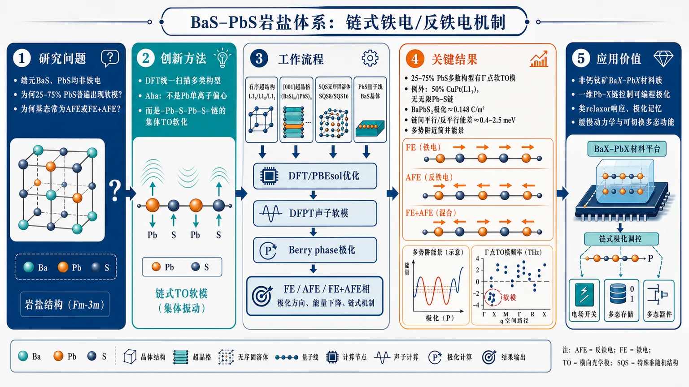
研究问题在岩盐结构中，BaS 与 PbS 两个端元本身都不是铁电体；论文要回答的是：为什么 BaS–PbS 组合后会在 25–75% PbS 组成区间普遍出现铁电软模，并且为何许多基态不是纯铁电，而是反铁电或 FE+AFE 混合极化链排列。创新方法用第一性原理把有序超结构、[001] 超晶格、SQS 无序固溶体和 PbS 量子线统一扫描，发现真正的 Aha 点是：铁电性不是 Pb 单离子偏心，而是线性 –Pb–S–Pb–S– 链的集体 TO 声子软化；链内形成局域极化，链间可平行、反平行或混合排列，从而自然生成 FE、AFE、FE+AFE 三类近简并状态。工作流程输入 BaS–PbS 岩盐体系不同构型：L1₂/L1₀/L1₁ 超结构、(BaS)m/(PbS)n 超晶格、SQS8/SQS16 无序固溶体、BaS 基体中的 PbS 量子线；使用 DFT/PBEsol 优化晶格和原子位置，再用 DFPT 计算声子软模、用 Berry phase 计算极化、比较不同软模凝聚后的空间群与能量；最终输出稳定 FE/AFE/FE+AFE 相、极化方向、能量下降和链式不稳定机制图像。关键结果绝大多数 25–75% PbS 构型出现 Γ 点软 TO 模，唯一典型例外是 50% PbS 的 CuPt(L1₁)，因为它不能形成无限 –Pb–S–Pb–S– 链；Ba3PbS4、BaPbS2、超晶格和量子线均显示链极化，BaPbS2 极化可达约 0.148 C/m²；许多基态为 AFE 或 FE+AFE，链间平行/反平行能差仅约 0.4–2.5 meV，Ba3PbS4 中多个相能量差小于 0.5 meV，并且 q 空间存在密集不稳定点，形成多势阱近简并能景。应用价值该研究把 BaS–PbS 及 BaX–PbX(X=S, Se, Te) 推为新的非钙钛矿链式铁电/反铁电材料族，可用于设计由一维 Pb–X 链控制的可编程极化材料；其密集近简并势阱、弱受挫链间耦合和可能的低温非遍历性，为类 relaxor 响应、极化记忆、缓慢动力学和可切换多态功能材料提供新平台。第一部分：核心概览
这项研究用第一性原理系统扫掠 BaS–PbS 岩盐型体系的超结构、超晶格、量子线与无序固溶体，发现其核心软模来自线性 –Pb–S–Pb–S– 链的 TO 声子不稳定性，从而在原本非铁电的 BaS 与 PbS 组合中诱发广泛的铁电性。更关键的是，体系同时稳定存在反铁电与混合 FE+AFE 基态，且三者能量极接近，指向一个具有大量近简并极小值的多势阱能景，并可能在低温下表现出非遍历性与类 relaxor 行为。这使该体系成为非钙钛矿铁电与竞争序参照系中的新范例。
---
第二部分：结构化快速回顾
《Ferroelectricity and antiferroelectricity in the BaS–PbS system with the rocksalt structure》（None，）
背景：岩盐结构中铁电性罕见；BaS–PbS 体系此前了解很少，且 BaS 与 PbS 本身都不是铁电体。
方法：采用 DFT/PBEsol + DFPT + Berry phase，研究有序超结构、[001] 超晶格、SQS 无序固溶体和 PbS 量子线。
结果：绝大多数结构出现 Γ 点软 TO 模；25–75% PbS 区间普遍铁电，但 CuPt (L1₁) 50% 组成例外；多种结构的基态是 AFE 或 FE+AFE。
讨论：极化主要沿 Pb–S 链建立，链间耦合弱且受挫；极小能差、密集 q 点不稳定性和大量亚稳态支持多势阱与非遍历性。
局限：无显式有限温度动力学；无实验验证；无序态仅用有限 SQS 表征；GGA 能隙与能量仍属近似。
结论：BaS–PbS 及其 Se/Te 类比体系构成新的 链结构铁电/反铁电材料族，并可能具备可编程极化与低温缓慢动力学特征。
---
第三部分：逐章节冷凝解析
I Introduction
- 研究空白与问题定位
岩盐结构中的铁电性此前只在少数 IV-VI 化合物中出现，如 SnTe、GeTe 及若干 A4B6 固溶体；BaS–PbS 体系长期稀缺。文本明确给出研究动机：*“A search for new ferroelectrics with a structure different from the perovskite one is of interest”*，并指出 *“the BaS–PbS system remains poorly understood.”*
- 新颖性主张
体系首次被定义为一个新的非钙钛矿铁电平台：*“we demonstrate that the BaS–PbS system exhibits a new, previously unknown property—ferroelectricity”*。最关键的反常性在于：*“neither of the initial components (BaS and PbS) are ferroelectrics.”* 也就是说，铁电性不是单一端元继承，而是由组合结构诱发。
- 与 SrS–PbS 的对照
BaS–PbS 与已知的 SrS–PbS 形成对照。前者出现铁电性，后者没有；这为后文“Ba 离子更大、晶格拉伸更强、链不稳定性更显著”的机制解释埋下伏笔。
引文：*“a new, previously unknown property—ferroelectricity—which is absent in the SrS–PbS system.”*
---
II Research objects and calculation details
- 研究对象覆盖范围很广
体系不只限于理想化晶体，而是同时覆盖：
1) 有序超结构，包括 Cu3Au (L1₂)、CuAuI (L1₀)、CuPt (L1₁) 类型及 7:1 比例结构；
2) (BaS)m/(PbS)n 超晶格，满足 m+n = 4, 6, 8, 10；
3) 无序固溶体 Ba1-xPbxS，取 x = 0.25, 0.5, 0.75；
4) PbS quantum wire 嵌入 2×2 BaS matrix。
所有超晶格均为 [001] orientation。
- 无序模型与超胞表征
无序固溶体用 SQS8 与 SQS16 模拟，属于典型的近似随机结构方法。这样做的意义在于捕捉局域无序，但仍保留有限超胞中的可计算性。
引文：*“To model disordered solid solutions, we utilized special quasi-random structures SQS8 and SQS16.”*
- 第一性原理设置非常具体
采用 ABINIT，交换相关泛函为 PBEsol，使用 ONCPSP pseudopotentials；平面波截断 35 Ha (952 eV)；布里渊区积分对初始立方晶体用 8×8×8 Monkhorst–Pack mesh，复杂结构用等效 k 点密度。
几何优化阈值为 Hellmann–Feynman forces < 5×10⁻⁶ Ha/Bohr (0.25 meV/Å)；总能精度 10⁻¹⁰ Ha。
- 声子、极化和力常数计算方法
声子谱由 DFPT 求得；on-site force constants 用文献 [22] 的方法；极化用 Berry phase 法。
这组方法组合直接服务于“软模—极化—稳定相”三者的精确对应。
- 基准误差与材料基本性质
立方 BaS 与 PbS 的晶格常数分别为 6.3459 Å 和 5.9046 Å，比实验值 6.3877 Å 和 5.9362 Å 小约 0.6%。
所有研究对象都被判定为绝缘体，GGA/PBEsol 下带隙范围 0.94–2.22 eV。这说明后续极化与声子分析建立在绝缘背景上，Berry phase 极化定义成立。
---
III Results and their discussion
#### III.1 Ferroelectric instability of structures
- 几乎所有结构都存在 Γ 点铁电软模
对 [15] 中的全部超结构以及本工作考察的大多数结构，声子谱都显示 ferroelectric instability。核心表述是：*“the frequency of the unstable TO phonon at the center of the Brillouin zone was found to depend on the overall concentration of PbS”*。
这意味着 PbS 摩尔分数 可以作为一阶控制参量。
- 不稳定区间与例外
铁电软模广泛出现在 25–75% PbS 的超结构、超晶格以及 quantum wire 中；无序固溶体中的不稳定性较弱。
唯一没有铁电不稳定性的结构是 CuPt (L1₁)、50% PbS。文中直接给出这一“异常”：*“The only structure in which the ferroelectric instability was absent was the CuPt (L1₁) superstructure with a PbS concentration of 50%.”*
这与后文“不能形成无限链”完全一致。
- 低对称相验证了软模凝聚
通过对所有由铁电畸变产生的低对称相重新计算，确认这些相的 所有布里渊区声子频率为正，且 elastic moduli matrix is positive-definite。这说明得到的是严格稳定相，而非仅仅“局部极小”。
- 超结构能量序列：L1₂ 的三组极小值
Ba3PbS4 (L1₂) 的低对称相能量分成三组：
- 13–14 meV
- 22–23 meV
- 29 meV
对应分别有 一条、两条、三条无限链实现极化。
具体值：
- P4mm: −13.41 meV, Pz = 0.1041 C/m²
- Amm2: −22.70 meV, Px = Py = 0.0945 C/m²
- R3m: −29.45 meV, Px = Py = Pz = 0.0869 C/m²
- L1₀ 超结构的极化更强
BaPbS2 (L1₀) 的铁电基态能量增益达 24.12 meV，极化 0.148 C/m²。表中低能相包括：
- P4mm: −13.04 meV, Pz = 0.1926 C/m²
- Cm: −18.75 meV, Px = Py = 0.1155, Pz = 0.1803
- Pm: −20.36 meV, Px = 0.1290, Pz = 0.1765
这说明不同链组态会显著改变极化方向和强度。
- L1₂ 的 Pb 富集端极化减弱
BaPb3S4 (L1₂) 中，铁电能量增益明显降低：
- P4mm: −0.87 meV, Pz = 0.1297
- Amm2: −1.44 meV, Px = Py = 0.1078
- R3m: −1.87 meV, Px = Py = Pz = 0.0972
说明 PbS 含量提高后，铁电畸变系统性减弱。
- 超晶格中极化方向随组分和层厚变化
在 12.5–70% PbS 的超晶格中，极化矢量位于超晶格平面内，沿伪立方 [110] 方向。
当 PbS = 75–83% 时，若仅有 1 层 BaS，则出现 z 方向 TO 模不稳定，极化转向 z 轴；若 BaS 层增至 2 层或以上，该不稳定消失。
这说明总体组分只是一阶参量，层厚 会在高 PbS 区间引入额外细节。
- 固溶体极化更依赖原子构型
无序固溶体中的极化方向取决于具体原子排布，通常接近 [110]，较少接近 [100]。这反映出无序把长程有序的极化方向“打散”了。
#### III.2 Search for the ground state structure
- 链结构不稳定性是总机制
关键解释来自 chain-structure instability model。原文对应句为：*“These phonon spectra can be explained by the chain-structure instability model”*。
不稳定模的本征位移集中在沿立方四重轴传播的无限 –Pb–S–Pb–S– 链中。
- 链内极化与链间相对取向可分离
本征矢描述的是 Pb 与 S 沿链方向的反相位移，链内形成局域极化；但相邻链之间可以 平行 或 反平行 排列。
这给出铁电、反铁电、混合序三种可能：
- FE：链间平行
- AFE：链间反平行
- FE+AFE：部分链平行、部分反平行
- CuPt 结构没有铁电不稳定性的原因清楚
CuPt (L1₁) 中不存在所需的无限 –Pb–S–Pb–S– 链，因此没有铁电软模。
引文：*“The absence of a ferroelectric instability in the CuPt-type superstructure ... is consistent with this explanation, as infinite –Pb–S–Pb–S– chains cannot exist in this structure.”*
- 量子线支持同一机制
嵌入 BaS matrix 的孤立 PbS 无限链（quantum wire）也出现同类不稳定性，进一步证明不是三维整体效应，而是一维链的局域不稳定性。
- (BaS)1/(PbS)3 的 z 向不稳定来自链未完全切断
该超晶格中只有一层 BaS，实际上只破坏了 z 方向两条无限链中的一条，另一条仍完整存在，因此仍出现 z 向软模。
文中明确给出判据：*“To completely break these chains, two or more BaS monolayers are required.”*
- Ba3PbS4 的相变序列极其丰富
表 3 显示从 Pm-3m 出发，Γ 点、X 点、M 点软模可分别导向：
- P4mm, Amm2, R3m
- 边界模导向 Pmma, Cmcm, P2₁/c, Pnma 等
- 进一步凝聚后可得到 Cmc2₁ 等稳定相
这说明 ground state 不是单一畸变路径，而是多个软模竞争的结果。
- 混合 FE+AFE 基态的具体证据
对 Ba3PbS4，低能相表 4 中六个相能量差都小于 0.5 meV，但极化方向差别很大。
最低能的是 Cmc2₁，其极化为 (0, 0, 0.0875 C/m²)，属于 mixed FE+AFE。
这也是“相邻链平行/反平行耦合竞争”的直接体现。
- 链间相互作用非常弱
平行与反平行链构型的能量差仅 1–2 个数量级 小于铁电序能量。
典型数值：
- Ba3PbS4 中 Pmma/P4mm 与 Cmcm/Amm2 的能量差分别为 −0.62 meV 和 −0.44 meV。
- (BaS)3/(PbS)1 中 Pmma(2)/Amm2 与 Cmmm/Pmm2 的能量差分别为 −1.47 meV 和 −2.49 meV。
负号说明 反平行排列更有利。
- (BaS)3/(PbS)1 以 AFE 基态为主
该超晶格中，Pnma 是基态，所有其它铁电相均为亚稳态。
表 5 中稳定的基态相：Pnma −13.773 meV。
其余可稳定铁电相包括 Pmm2, Ama2, Pmc2₁, Cmmm, Pbam 等，但都不是最低能。
- 更复杂结构中，纯 FE 基态并不常见
明确列出的纯铁电基态仅有：
- BaPb3S4：R3m
- (BaS)2/(PbS)4：Pmn2₁
- (BaS)1/(PbS)3：Cm（更准确说是 ferrielectric，因为两极化片段未完全补偿）
其余许多结构的基态为 AFE 或 FE+AFE。
- 高密度 q 空间不稳定性意味着近无限多极小值
在 Ba3PbS4 中，不稳定声子不仅出现在高对称点，还遍布 qz=0 整个平面。
一个具体例子：q=(0,0,0.25) 的双简并模凝聚后，得到的相能量为 −29.73 meV，只比基态高 0.12 meV。
这意味着每个 q 值都对应一种独特链极化排布，构成几乎连续的极小值网格。
- 非遍历性与可写信息媒介的图像
由于极小值极多、势垒存在，构型空间形成 *“a complex multi-minimum potential with nearly degenerate energy states separated by potential barriers”*。
这直接导向 *“nonergodicity”* 以及外场下的不可逆切换、类 relaxor 响应。
#### III.3 The origin of the ferroelectric instability
- 与钙钛矿链不稳定性同源，但链间作用不同
与 KNbO3、BaTiO3、RaTiO3 的声子谱比较表明，主机制同样是 chain-structure instability。
差异在于：这些岩盐体系没有钙钛矿中的 octahedral rotations，却出现链间反平行的 AFE。
- 链间耦合在 BaS–PbS 中是受挫的
钙钛矿里链间相互作用偏向平行。
典型比较：
- BaTiO3 中 P4mm 与 Pmma 的能量差 +2.20 meV
- KNbO3 中同类能量差 +5.42 meV
正号表示平行更稳定。
但在 Ba3PbS4 和 (BaS)3/(PbS)1 中，该差值为负，说明 反平行更稳定。
- 极化不是 Pb 离子简单偏心
对 12.5% PbS 超结构中 Pb 原子计算得到的 on-site force constant 为 +0.02290 Ha/Bohr²，且是对 8 个 q 点平均得到。
正值表示离位后恢复力指向原位，说明 不存在 Pb 的静态 off-centering。
这排除了“孤立 Pb²⁺ 6s² 孤对电子导致单离子偏心”的简单解释。
- 更合理的解释是集体链位移与电荷重分布
Pb²⁺ effective charge 高达 3.3–4.3，说明 Pb–S 共价键中的电荷重分布对畸变高度敏感。
核心机制是沿链方向的协同集体位移，不是单原子局域偏移。
- 拉伸应变是诱发软模的直接外因
图 6 显示，研究对象的 TO phonon frequency 随晶格常数增大而下降，趋势与 biaxially strained bulk PbS 相似。
这说明 BaS matrix 通过较大的 Ba 半径对 PbS 链施加拉伸，从而放大铁电不稳定性。
- 无序会削弱不稳定性，且需要最短链长
无序固溶体中的铁电不稳定较弱，因为形成无限 –Pb–S–Pb–S– 链的概率低。
额外计算表明，局域铁电不稳定至少需要 3 个线性排列的 Pb 原子。
这给出了一个非常具体的“局域链最短长度”阈值。
#### III.4 Other physical properties
- 弹性模量在畸变后明显下降
体模量通过 Reuss scheme 由弹性常数矩阵求得。
与高对称相相比，结构畸变导致体模量下降 13–37%。
这说明铁电/反铁电软化与弹性软化是同一结构重排的两面。
- 体模量具体数值
代表性数据（GPa）：
- BaS：44.40（本工作高对称相），文献 [15] 为 46.14
- Ba0.25Pb0.75S (L1₂)：54.02 / 55.92，低能相为 41.56
- PbS：59.37，文献 [15] 为 60.12
- Ba0.5Pb0.5S 的非极化相约 50.46–50.90，极化相约 46.93–47.29
总体趋势是：Pb 含量增加，材料更硬，但局域极化会降低刚性。
- 压电响应存在但不算强
最大 dijk 出现在极化轴对应应变上：
- Ba3PbS4 基态：6 pC/N
- BaPbS2 基态：27 pC/N
- (BaS)2(PbS)2 基态：29 pC/N
这说明极化可耦合到应变，但并未达到强压电材料级别。
#### III.5 Concluding remarks
- 不倾向形成 Cu3Au 或 CuAuI 型有序
BaS–PbS 不表现出向 Cu3Au 和 CuAuI 超结构有序化的趋势，这与 SrS–PbS 中观察到的行为不同，并且与既有结果一致。
引文：*“Our calculations did not reveal any tendency for the BaS–PbS system to order into Cu3Au and CuAuI type superstructures”*。
- Se/Te 同族体系也出现类似铁电性
Ba3PbSe4 与 Ba3PbTe4 的铁电畸变能量增益分别为 20.84 meV 和 18.00 meV。
对应超晶格 (BaX)3(PbX)1 的增益更小：
- X=Se：6.27 meV
- X=Te：6.07 meV
同时 on-site force constant 分别为 +0.02046 和 +0.01716 Ha/Bohr²，仍然排除 Pb 的偏心模型。
- SrS–PbS 与 CaS–PbS 不出现同类铁电性
即便化学组成相近，SrS–PbS 与 CaS–PbS 的超结构/超晶格中并未出现这种铁电机制。
这说明不是“所有碱土硫族化物+PbS”都会铁电，Ba 的尺寸与拉伸效应 是关键。
- 混合焓表明 BaS–PbS 具有可实验制备性
Ba1-xPbxS 的混合焓约 10–24 meV/分子，热力学上不算高，说明样品制备不会特别困难。
但 Ba0.5Pb0.5Se 和 Ba0.5Pb0.5Te 的混合焓分别达 32–40 meV 与 57–67 meV/分子，更难形成均匀固溶。
---
IV Conclusion
- 新材料族已被建立
通过第一性原理，发现了具有铁电性质的新材料族：BaX–PbX (X = S, Se, Te) 中的超结构、超晶格、量子线、无序固溶体。
结论句明确指出：*“A new class of materials with ferroelectric properties ... has been discovered.”*
- 统一机制是链结构铁电不稳定性
所有现象都归结到线性 –Pb–X–Pb–X– 链的 chain-structure ferroelectric instability。
这不是局域离子偏心，而是一维链协同畸变。
- 竞争序非常强，AFE/FE+AFE 很常见
BaS–PbS 中不仅有铁电相，还有稳定的 antiferroelectric 与 mixed FE+AFE 相；
基态常常不是纯 FE，而是 AFE 或混合序。
- 多势阱景观与非遍历性是最重要的物理后果
由于 FE、AFE、FE+AFE 的能量极接近，构型空间形成多势阱结构，可能导致低温下 nonergodicity。
这使该体系不仅是铁电材料候选，也可能是研究慢弛豫与极化记忆效应的模型体系。
---
第四部分：深度理解与语言支持
1. 术语解析
- TO phonon instability
TO 是 transverse optical phonon。软化到接近虚频或低频时，意味着晶格对某一横向原子位移方向失去稳定性。这里的软模不是随机噪声，而是“极化畸变的前兆”。
- Chain-structure instability
指不稳定性不是在整个三维晶体均匀展开，而是首先出现在一维 –Pb–S–Pb–S– 链中。链内位移先发生，随后链与链之间再决定是 FE 还是 AFE 排列。这个词强调“局域一维骨架先软化”。
- Antiferroelectric (AFE)
不是“没有极化”，而是局域链都极化，但相邻链方向相反，宏观极化相消。所以表 4 中出现 0 polarization 的相，不代表链不极化，只代表总体净极化为零。
- Mixed FE+AFE ordering
介于纯 FE 与纯 AFE 之间：部分链平行，部分链反平行。宏观上可出现非零极化，也可局部补偿。
这种状态比“单纯 FE/AFE”更符合“链间耦合弱且受挫”的能量地形。
- Nonergodicity
指体系在有限时间内无法充分遍历所有近简并构型，低温下会被多个局部极小值困住。这里的含义接近“极化状态记忆很强、切换慢、历史依赖重”。
2. 疑难查证
- 为什么会出现“全是极化链，但宏观极化仍为零”？
因为极化是向量和。每条链内部都有偏移，但链与链之间可反平行。若单位胞内有两条等强反向链，总极化就是 0。
这就是 AFE 的本质：局域有序，整体抵消。
- 为什么正的 on-site force constant 反而支持“不是 Pb 偏心”？
单原子偏心通常意味着原位附近势能曲率为负或至少不稳定；正值说明原位是恢复势方向。
所以软模不是“Pb 自己滑出去”，而是多个原子在链上协同位移后形成的集体不稳定。
- 为什么“链长至少 3 个 Pb 原子”才出现局域不稳定？
两个原子的短片段很难形成足够长程的链协同与极化增强；三个原子开始才能形成最基本的连锁位移与电荷重排模式。
这说明该铁电性是长度阈值型的集体效应，不是单个键长变化就能触发。
---
第五部分：创新评估与关联
1. 创新性判断
- 新材料族的发现本身就是核心创新
过去 2–5 年关于非钙钛矿铁电的工作多集中于 GeTe/SnTe 类 IV-VI 化合物、应变诱导极化、二维层状体系或常规钙钛矿变体。这里直接把 BaS–PbS 岩盐体系推进为一个可系统调控的 FE/AFE/mixed 材料族，拓展了铁电材料的结构边界。
- 把“铁电”推进到“铁电—反铁电竞争”框架
不是只证明“有软模”，而是进一步揭示：
1) 纯 FE 并不常见；
2) AFE 和 FE+AFE 更常见；
3) 三类相能量极近，形成多极小值景观。
这比一般“发现一个铁电相”更进一步，解决了基态排序与竞争相共存的问题。
- 链结构图像比单离子模型更有解释力
近年的类似工作常把极化归因于局域配位偏移、孤对电子或简单应变效应。这里明确排除了 Pb off-centering，把机制锚定在链协同畸变 + 弱受挫链间耦合上，更接近真实的结构起源。
- 把无序、超晶格、量子线统一到同一物理机制
超结构、超晶格、SQS 无序固溶体、量子线都落在同一链不稳定性框架中，说明该机制具有很强的可迁移性，而不是单一几何构型的偶然现象。
- 提出非遍历性与“无限势阱”图像
这一步比常规铁电分析更深：不只问“是否极化”，还问“是否能在有限时间内遍历极化景观”。
对低温极化动力学、不可逆翻转、类 relaxor 行为的预言，是最具概念延展性的部分。
2. 解决了什么前人没解决的问题
- 解释了 BaS–PbS 为什么在端元都非铁电时仍能出现铁电性。
- 解释了 为什么很多情况下不是纯 FE，而是 AFE 或 FE+AFE。
- 给出了 CuPt 型 50% 结构为何没有铁电软模 的结构原因。
- 量化了 链间相互作用的符号：在该体系中更偏向反平行。
- 把 Pb 偏心 与 集体链位移 区分开来，避免了过度单离子化的解释。
- 把铁电问题扩展为一个 多势阱、近简并、可能非遍历 的构型空间问题。
如果需要，可以继续把 Table 1–6 逐表整理成“相名—空间群—能量—极化”对照表，方便直接做组会汇报或文献笔记。
-
15
📊 含图深析
📄 摘要：研究稀土铁石榴石中低能激发与温度依赖磁化动力学的耦合。稀土与铁子晶格交换作用产生高频集体自旋激发，局域 4f 电子的强自旋轨道耦合带来 THz 晶体电场跃迁；重点考察 CEF 激发与交换模之间的相互作用。
📖 英文原文
arXiv:2607.26026v1 Announce Type: new Abstract: Rare-earth iron garnets offer an ideal platform for exploring the interplay of low-energy excitations and the complex temperature-dependent magnetization dynamics. In these systems, exchange coupling between rare-earth and iron sublattices generates high-frequency collective spin excitations. In addition, the robust spin-orbit coupling of localized 4f electrons triggers the crystal-electric-field (CEF) transitions at THz frequencies. Despite extensive research into the garnet spin dynamics, the interplay between CEF excitations and exchange modes has remained largely unmapped. Using temperature-dependent THz time-domain spectroscopy, we demonstrate a hybridization between the Yb-ion CEF excitation and the Yb-Fe exchange mode in Gd₃/₂Yb₁/₂BiFe₅O₁₂. This coupling is characterized by a significant redistribution of spectral and temporal weights as the material approaches its magnetization compensation temperature. Notably, the Yb-Fe exchange mode exhibits an anomalous redshift upon cooling -- a reversal of the conventional blue shift typically driven by increased exchange coupling. We trace this phenomenon to a modification of Yb-Fe exchange anisotropy, driven by the interplay of the Fe exchange field and Yb CEF excitations. These findings highlight the critical role of CEF-mediated exchange coupling in shaping low-energy spin dynamics, positioning rare-earth garnets as a cornerstone for future THz spintronic technologies.
💡 亮点：稀土铁石榴石同时具有交换自旋模和 THz 晶场跃迁。二者耦合决定温度依赖磁化动力学，是理解 4f-3d 亚铁磁超快响应的关键。
📖 展开分析 + 配图
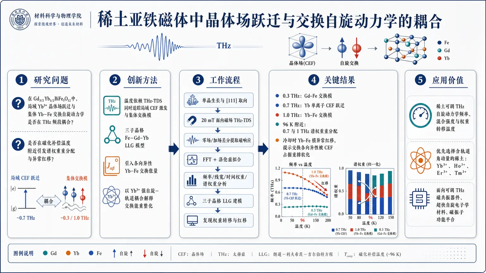
研究问题在稀土亚铁磁体 Gd₃/₂Yb₁/₂BiFe₅O₁₂ 中，局域 Yb³⁺ 晶体场跃迁与集体 Yb–Fe 交换自旋动力学是否会在 THz 频段发生耦合？这种耦合是否会在磁化补偿温度附近引发谱权重重分配，并导致异常的频率软化（红移）？创新方法用温度依赖 THz-TDS 直接同时追踪局域 CEF 激发和集体交换模式，把原本分离的两类 THz 激发放在同一张谱图里观察；再用 Fe–Gd–Yb 三子晶格 LLG 模型引入各向异性 Yb–Fe 交换张量，抓住“Aha”点：Yb³⁺ 的轨道角动量和强自旋–轨道耦合会把晶体场占据重排转化为交换能重整化，从而解释反常红移。工作流程生长并取向 [111] 的 Gd₃/₂Yb₁/₂BiFe₅O₁₂ 单晶 → 在 20 mT 面内磁场下做温度依赖 THz-TDS → 通过零场与加场透射差分提取磁响应 → FFT 与洛伦兹拟合分解出 0.3、0.7、1 THz 共振峰 → 比较随温度变化的频率、线宽、时间权重和谱权重 → 建立三子晶格 LLG 模型并加入 CEF、交换、各向异性、退磁与 FDT 项 → 用模型复现实验中的权重转移与红移。关键结果识别出三个 THz 共振：约 0.3 THz 的 Gd–Fe 交换模、0.7 THz 的 Yb 单离子 CEF 跃迁、1 THz 的 Yb–Fe 交换模；靠近 96 K 磁化补偿温度时，0.7 THz 与 1 THz 之间发生明显谱权重重分配和时间权重交叉；最反常的是冷却过程中 Yb–Fe 交换模不是蓝移而是红移，说明有效交换各向异性被 CEF 态占据重排所软化。应用价值证明稀土离子不仅能调补偿温度，还能直接工程化 THz 自旋动力学的频率、混合强度和权重转移温度；提示应优先选用带非零轨道角动量的稀土（如 Yb³⁺、Ho³⁺、Er³⁺、Tm³⁺）来设计可调 THz 磁共振器件、超快自旋电子学材料和磁振子功能平台。第一部分：核心概览 (Overview)
稀土铁石榴石 Gd₃/₂Yb₁/₂BiFe₅O₁₂ 中，局域 Yb³⁺ 晶体电场（CEF）跃迁 与集体 Yb–Fe 交换自旋动力学 在 THz 频段发生强耦合。温度依赖 THz 时域光谱显示，靠近 磁化补偿温度 TMC = 96 K 时，0.7 THz CEF 模式与 1 THz Yb–Fe 交换模式出现时间权重与谱权重重分配。最反常的发现是 Yb–Fe 交换模式冷却时发生红移，而非通常由增强交换耦合导致的蓝移。三子晶格 LLG 模型将该软化归因于 Yb 4f 轨道角动量、强自旋–轨道耦合、Fe 交换场与 CEF 态占据重排 共同诱导的各向异性交换重整化，为 THz 稀土石榴石自旋动力学设计提供了材料原则。
---
第二部分：结构化快速回顾
《The interplay of crystal-field transitions and exchange spin dynamics in a ferrimagnet》（None，）
背景
铁磁体共振通常受弱各向异性限制在 GHz 范围；亚铁磁体因反铁磁样交换动力学可进入 THz 频段，同时保留有限净磁化，便于激发与探测。稀土铁石榴石中 Fe 3d 与 RE 4f 磁矩耦合，且稀土 4f 电子的 CEF 激发 也位于 THz 能区，但 CEF 与交换模式在补偿点附近的耦合仍缺乏实验图谱。
方法
使用温度依赖 THz time-domain spectroscopy（THz-TDS） 测量 [111] 取向、厚度 380 μm 的 Gd₃/₂Yb₁/₂BiFe₅O₁₂ 单晶。样品 TC = 573 K、TMC = 96 K。外加面内磁场 20 mT，通过有场与零场 THz 透射差分提取磁响应。理论上构建 Fe–Gd–Yb 三子晶格 LLG 模型，含交换能、磁晶各向异性能、Zeeman 能、退磁能与场导数力矩。
结果
谱中出现三个主要共振：约 0.3 THz 的 Gd–Fe 交换模式、约 0.7 THz 的 Yb 单离子 CEF 激发、约 1 THz 的 Yb–Fe 交换模式。靠近 TMC 时，LF 与 HF 时间权重交叉，CEF 与 Yb–Fe 谱权重重分配。冷却时 CEF 线宽变窄，Yb–Fe 交换模式线宽近乎不变；0.7 THz 与 1 THz 模式均红移。
讨论
Yb³⁺ 的 4f¹³ 构型具有 L = 3、S = 1/2，强自旋–轨道耦合先分裂为 J = 7/2 与 J = 5/2 多重态，再由 O²⁻ 配位场分裂为双重态，最后受 Fe 交换场进一步分裂。低温下 CEF 低能态占据增强，使 Yb 子晶格磁化显著增加，并改变 Yb–Fe 各向异性交换能，导致交换模式软化。
局限
角动量补偿温度未被研究；0.3 THz 模式仅被“暂定”归因于 Gd–Fe 交换；理论框架主要为定性解释，部分温度依赖磁化与各向异性参数来自既有文献；CEF–交换混合强度未通过独立微观谱学如中子散射直接量化。
结论
稀土离子选择可工程化调控 THz 自旋动力学。具有非零轨道角动量的 Yb³⁺、Ho³⁺、Er³⁺、Tm³⁺ 可引入 CEF 介导的交换模式重整化；而 Y³⁺、Gd³⁺ 等 S 态稀土难以提供同类机制。稀土种类与浓度可调节混合强度、模式频率和谱权重转移温度。
---
第三部分：逐章节冷凝解析 (Section-by-Section Condensing)
Abstract
- Hybridization between localized CEF and collective exchange dynamics
稀土铁石榴石同时承载两类 THz 低能激发：由 RE–Fe 交换耦合产生的高频集体自旋模式，以及由局域 4f 电子强自旋–轨道耦合触发的 CEF 跃迁。核心实验对象为 Gd₃/₂Yb₁/₂BiFe₅O₁₂，关键现象是 Yb 离子 CEF 激发 与 Yb–Fe 交换模式发生混合；原文指出 *"we demonstrate a hybridization between the Yb-ion CEF excitation and the Yb-Fe exchange mode in Gd3/2Yb1/2BiFe5O12."*
- Spectral and temporal weight transfer near compensation
靠近 磁化补偿温度时，耦合模式发生强烈的动力学重分配，不仅频域强度变化，时域振荡分量也转移；证据表述为 *"This coupling is characterized by a significant redistribution of spectral and temporal weights as the material approaches its magnetization compensation temperature."*
- Anomalous cooling-induced redshift
Yb–Fe 交换模式冷却时发生红移，与常规低温交换增强导致频率硬化/蓝移相反；原文强调 *"the Yb-Fe exchange mode exhibits an anomalous redshift upon cooling – a reversal of the conventional blue shift typically driven by increased exchange coupling."*
- CEF-mediated exchange anisotropy as mechanism
反常红移被归因于 Fe 交换场与 Yb CEF 激发共同改变 Yb–Fe 交换各向异性；原文给出机制判断：*"We trace this phenomenon to a modification of Yb-Fe exchange anisotropy, driven by the interplay of the Fe exchange field and Yb CEF excitations."*
---
INTRODUCTION
- THz spin dynamics as ultrafast spintronics foundation
THz 磁共振发生在皮秒尺度，是超快自旋电子器件的关键频率窗口；其应用包括高密度磁存储与基于磁振子的信号处理。原文直接说明 *"Manipulating spin excitations at THz frequencies, where magnetic resonances oscillate on picosecond timescales, is a foundational challenge for the next generation of ultrafast spintronic technologies."*
- Ferrimagnets overcome ferromagnetic GHz limitation
普通铁磁体因弱各向异性场共振频率多局限于 GHz；亚铁磁体凭借反铁磁样交换动力学进入 THz，同时保留净磁化，降低实验激发和读出的困难。原文对比为 *"Unlike ferromagnets, whose resonance frequencies are limited to the GHz frequency range by weak anisotropy fields, ferrimagnets support antiferromagnet-like exchange dynamics that push collective spin excitations into the THz regime."*
- Finite net magnetization enables practical detection
亚铁磁体不像纯反铁磁体那样净磁化完全抵消，有限净磁化使交换模式更易通过磁光或 THz 手段访问；原文表述为 *"while retaining a finite net magnetization that simplifies experimental access to the excitation and detection of the exchange mode."*
- Rare-earth iron garnets provide Fe 3d–RE 4f interplay
稀土铁石榴石尤其重要，因为 Fe 3d 与 RE 4f 磁矩强耦合，交换作用产生 THz 集体自旋激发。原文指出 *"rare-earth iron garnets are particularly compelling ferrimagnetic systems because of their strong interplay between iron (Fe) 3d and rare-earth (RE) 4f moments."*
- Compensation temperature creates antiferromagnet-like regime
不同子晶格磁化的温度演化导致 磁化补偿点。在 TMC，RE 与 Fe 反平行磁矩抵消，杂散场显著降低，体系表现出类似反铁磁体的稳健性。原文为 *"At the magnetization compensation temperature (TMC), the opposing RE and Fe moments cancel out with strongly reduced stray fields, allowing the material to mimic the robust properties of an antiferromagnet."*
- Angular momentum compensation excluded
角动量补偿温度也存在，但研究焦点是净磁化接近零时的磁激发谱，而非不同旋磁比导致的总角动量补偿。原文界定为 *"Such a regime is not addressed here, as our study is primarily concerned with the magnetic excitation spectrum near vanishing net magnetization."*
- CEF excitations enter the same THz energy window
稀土 4f 轨道在配位离子静电势下发生 晶体场分裂，能级间隔对应 THz 频率。原文说明 *"the electrostatic potential from the surrounding ligand ions lifts the degeneracy of the rare-earth 4f orbitals"*, 并产生 *"crystal-field-split energy levels with separations resonant to THz frequencies."*
- CEF excitations reshape anisotropy and low-energy spin dynamics
低温下 CEF 能级更重要，局域 4f 电子强自旋–轨道耦合使 CEF 激发调制磁各向异性，从而重塑低能自旋动力学。原文为 *"At low temperatures, these CEF levels gain prominence; due to the strong spin-orbit coupling of the localized 4f electrons, the magnetic anisotropy is modified by CEF excitation."*
- Experimental gap: CEF–exchange coupling near compensation
虽然石榴石自旋动力学已有大量研究，CEF 模式与交换模式在补偿点附近的耦合仍缺乏实验解析。原文指出 *"experimental investigations into this interplay – particularly near the compensation point, where the net magnetization is suppressed – remain largely unexplored."*
- Specific claim for GdYb-BIG
Gd 与 Yb 具有不同轨道角动量和不同温度依赖磁化，Fe 交换作用生成温度依赖有效磁场；Yb–Fe 交换模式冷却红移被归因于 Fe exchange field + Yb CEF excitations + spin-orbit coupling 的协同作用。原文概括为 *"We attribute this anomaly to a modification of the anisotropic Yb-Fe exchange energy, arising from the synergy of the Fe exchange field and Yb-ion CEF excitations, mediated by robust spin-orbit coupling."*
---
RESULTS AND DISCUSSION
Experimental signatures of the interplay
- Sample structure and magnetic temperatures
Gd₃/₂Yb₁/₂BiFe₅O₁₂ 单晶由 liquid-phase epitaxy 生长，取向为 (111)；Fe 离子占据四面体和八面体位点并反平行排列，Gd/Yb 稀土离子位于十二面体位点。体系具有 Curie temperature = 573 K 与 TMC = 96 K。原文给出 *"The single crystals are grown via liquid-phase epitaxy and are oriented along the (111) direction"*，以及 *"The system is characterized by a Curie temperature of 573 K and a compensation temperature of TMC = 96 K."*
- Temperature-dependent dominance of Fe and RE sublattices
TMC 以上净磁化由 Fe 子晶格主导；降温后 RE 贡献占优。Yb 子晶格磁矩在 150 K 以下出现并在低温急剧增强，为研究 CEF 与磁有序耦合提供窗口。原文指出 *"Above TMC, the net magnetization is governed by the Fe sublattices; however, as the temperature drops, the RE contribution becomes dominant"*，并进一步说明 *"the Yb sublattice moment emerges below 150 K and increases sharply at cryogenic temperatures."*
- Yb³⁺ differs fundamentally from Gd³⁺
Gd³⁺ 为 4f⁷，轨道角动量为零；Yb³⁺ 为 4f¹³，具有有限 L = 3 与 S = 1/2，因此自旋–轨道耦合成为主导电子相互作用。原文表述为 *"Unlike the Gd3+ (4f7) ion, which possesses zero orbital angular momentum, the Yb3+ (4f13) ion features finite orbital (L = 3) and spin (S = 1/2) angular momenta."*
- Yb³⁺ level hierarchy creates THz CEF transition
Yb³⁺ 的 4f¹³ 基态首先由强自旋–轨道耦合分裂为 J = 7/2 与 J = 5/2 多重态；O²⁻ 配位场进一步分裂为 J + 1/2 doublets；Fe 子晶格交换场最终将双重态分裂为低能态，其中最低能级间隔对应实验中 0.7 THz 激发。原文给出 *"splitting the 4f13 ground state into J = 7/2 and J = 5/2 multiplets"*，以及 *"the lowest-energy spacing is resonant with the THz excitation (0.7 THz) observed in our measurements."*
- Differential THz-TDS isolates magnetic response
测量在 20 mT 面内外磁场下进行，通过从零场信号中扣除 Bext = 20 mT 下的透射瞬态，压制 THz 区间强背景吸收并提取磁场诱导响应。原文说明 *"the transients recorded at Bext = 20 mT were subtracted from the zero-field measurements"*，目的是 *"isolate the field-induced magnetic response and suppress the significant background absorption."*
- Two time-domain oscillatory components emerge
高温如 170 K 时，响应由 低频 LF 模式主导；冷却时 LF 衰减。接近 TMC 时，高频 HF 模式出现并继续增强。原文写道 *"In the high-temperature regime (e.g., 170 K), the response is dominated by a low-frequency (LF) mode, which gradually attenuates upon cooling"*，同时 *"a high-frequency (HF) mode emerges and increases in amplitude as the temperature is further lowered."*
- LF and HF temporal weights cross near TMC
TMC 附近 LF 与 HF 获得可比谱权重，时间权重分析显示二者交叉，这是耦合动力学和激发谱重构的证据。原文为 *"near TMC, the LF and HF components attain comparable spectral weights"*，并强调 *"The observed crossing of the LF and HF weights near TMC provides strong evidence of coupled mode dynamics."*
- FFT reveals three resonances: 0.3, 0.7, and 1 THz
时域信号经 Fast Fourier Transform（FFT） 后显示约 0.7 THz 与 1 THz 两个突出共振，另有较弱 0.3 THz 共振。0.7 THz 归属为 Yb 单离子 CEF 激发，1 THz 归属为 Yb–Fe 交换动力学，0.3 THz 暂定为 Gd–Fe 交换。原文指出 *"two prominent resonances centered at approximately 0.7 THz and 1 THz"*，并说明 *"the 0.7 THz (LF) component is readily assigned to the CEF excitation of the Yb-single-ion"*，以及 *"a weaker resonance appears near 0.3 THz, which we tentatively attribute to the Gd-Fe exchange interactions."*
- HF mode follows Yb sublattice magnetization
1 THz HF 模式强度随 Yb 子晶格磁化增强而增强，支持其源于 Yb–Fe 交换动力学且与 Yb-CEF 激发混合。原文表述为 *"the HF mode’s intensity closely tracks the Yb sublattice magnetization"*，并推断 *"this mode originates from Yb-Fe exchange dynamics, likely hybridized with the Yb-CEF excitation."*
- Lorentzian analysis quantifies spectral redistribution
单个频谱通过 Lorentzian profiles 拟合；CEF 与 Yb–Fe 模式在 TMC 附近发生显著谱权重重分配。原文指出 *"the individual spectra were fitted using Lorentzian profiles"*，以及 *"a significant redistribution of the spectral weight occurs between the CEF excitation and the Yb-Fe exchange mode near TMC."*
- Linewidth behavior separates local and collective damping
冷却时 CEF 激发线宽变窄，反映热涨落受抑；Yb–Fe 交换模式线宽几乎恒定，显示耦合子晶格磁化主要执行相干进动。原文写道 *"the CEF excitation narrows upon cooling due to suppressed thermal fluctuations"*，而 *"the linewidth of the Yb-Fe exchange mode remains remarkably constant."*
- Both CEF and Yb–Fe modes redshift upon cooling
0.7 THz CEF 与 1 THz Yb–Fe 交换共振在冷却时均显著红移，违背常规低温交换增强导致蓝移的预期。原文强调 *"both the CEF and Yb-Fe exchange resonances exhibit a pronounced redshift upon cooling"*，并称其 *"directly contradicting the conventional blue-shift expected as exchange interactions strengthen at low temperatures."*
- Renormalized Yb anisotropy explains softening
红移被解释为 Yb CEF 激发 与 Yb–Fe 交换模式通过强自旋–轨道耦合发生稳健耦合，内部 Fe 交换场与 CEF 流形竞争重整化 Yb 子晶格有效磁各向异性。原文机制为 *"the effective magnetic anisotropy of the Yb sublattice is renormalized by the competing influences of the internal Fe exchange field and the CEF manifold."*
---
Modeling the observed exchange renormalization
- LLG framework captures precession and damping
理论采用 Landau–Lifshitz–Gilbert（LLG）方程描述子晶格磁化进动与阻尼。方程中 mi、γi、αi、Bieff 分别表示子晶格体磁化、旋磁比、Gilbert 阻尼和有效场。原文定义为 *"mi, γi, αi, and Bieff denote the sublattice-dependent bulk magnetization, gyromagnetic ratio, Gilbert damping, and the effective magnetic field, respectively."*
- Effective field derives from ferrimagnetic free energy
有效磁场由自由能泛函导数给出：Bieff = −δF/δmi。LLG 右端第一项代表进动，第二项代表向平衡方向弛豫。原文说明 *"The first term on the right side of the LLG equation signifies the precessional motion"*，而 *"the second term explains the relaxation of that precessing magnetization towards its equilibrium direction."*
- Three-sublattice model is required
由于 Gd 与 Yb 具有不同温度依赖磁化与不同轨道角动量，单一稀土子晶格近似不足，必须采用 Fe–Gd–Yb 三子晶格模型。原文写道 *"Because the system contains two distinct species of RE ions with unique evolution of magnetization with temperature and orbital angular momentum, a three-sublattice model is essential."*
- Free energy includes exchange, anisotropy, Zeeman, and demagnetization terms
自由能包含 λGd–Fe、λYb–Fe、λGd–Yb 三个交换常数，KFe、KGd、KYb 磁晶各向异性常数，THz 脉冲与外场 Zeeman 项，以及 μ0/2 退磁能项；易轴单位矢量 n 沿 z 方向。原文说明 *"The first three terms ... account for the exchange energy"*，并指出 *"The remaining terms ... correspond to the Zeeman and demagnetization energies."*
- THz driving field mimics experimental chirped pulse
驱动场为线偏振啁啾 THz 脉冲，沿 x 方向，垂直于平衡磁化；数值参数为 B0 = 20 mT、σ = 1 ps、f0 = 0.6 THz、Γ = 2.6 ps。原文给出 *"For our numerical simulations, we utilized the following THz pulse parameters: B0 = 20 mT, σ = 1 ps, f0 = 0.6 THz, and a chirp parameter Γ = 2.6 ps."*
- Field-derivative torque included because of strong SOC and damping
GdYb-BIG 中高自旋–轨道耦合导致较高 Gilbert 阻尼，因此有效场中加入 field-derivative torque（FDT），即与 THz 磁场时间导数成正比的内禀自旋力矩。原文表述为 *"the high spin-orbit coupling, which results in higher Gilbert damping, necessitates the inclusion of an additional intrinsic spin-torque, the field-derivative torque (FDT)."*
- Simulation parameters specify damping, gyromagnetic ratios, and cell volumes
Gilbert 阻尼设为 αFe = αGd = αYb = 0.02。Fe 与 Gd 旋磁比取 γFe = γGd = 1.76 × 10¹¹ s⁻¹ T⁻¹；Yb 因显著轨道角动量贡献取较低 γYb = 1.17 × 10¹¹ s⁻¹ T⁻¹。单位自旋体积设为 aFe³ = 1.2 × 10⁻²⁸ m³，aGd³ = aYb³ = 8.5 × 10⁻²⁹ m³。原文完整列出 *"The Gilbert damping constants were set to αFe = αGd = αYb = 0.02"*，以及 *"a reduced value of γYb = 1.17 × 10¹¹ s⁻¹ T⁻¹ was employed for the Yb sublattices."*
- Exchange hierarchy: Gd–Yb ferromagnetic, Gd–Fe and Yb–Fe antiferromagnetic
三子晶格模型中，Gd–Yb 为铁磁耦合，Gd–Fe 与 Yb–Fe 为反铁磁耦合。Gd–Yb 交换较弱，但仍影响整体频响。原文指出 *"the magnetization dynamics are governed by competing inter-sublattice exchange interactions: ferromagnetic Gd-Yb coupling and antiferromagnetic Gd-Fe and Yb-Fe couplings"*，并补充 *"the Gd-Yb exchange magnitude is significantly smaller than the others."*
- Mode assignments reproduced by model
理论频谱显示 0.3 THz 由 Gd–Fe 交换主导，0.7 THz 与 1 THz 主要由 Yb–Fe 相互作用驱动；理论共振频率与实验温度依赖谱良好一致。原文为 *"the 0.3 THz resonance is dominated by Gd-Fe exchange, while the 0.7 THz and 1 THz peaks are primarily driven by Yb-Fe interactions"*，并称 *"show good agreement with the experimentally observed temperature-dependent spectra."*
- Opposite temperature trends of Gd–Fe and Yb–Fe exchange energies
冷却时 Gd–Fe 交换能增加，符合低温磁有序增强；但 Yb–Fe 交换能降低，导致 0.7 THz 与 1 THz 峰红移。原文明确写道 *"the Gd-Fe exchange energy increases upon cooling"*，而 *"the Yb-Fe exchange energy decreases with decreasing temperature, inducing a characteristic redshift in the 0.7 THz and 1 THz peaks."*
- Yb–Fe coupling stabilizes 0.3 THz mode despite Gd–Fe strengthening
低频 0.3 THz 模式虽由增强的 Gd–Fe 交换控制，但 Yb–Fe 子晶格的反向影响抑制其升频，使其温度变化较小。原文说明 *"this low-frequency mode is primarily governed by the increasing Gd–Fe exchange interaction"*，但 *"its frequency remains relatively stable due to the countervailing influence of the Yb-Fe sublattice."*
- Thermal redistribution among CEF levels builds Yb magnetization
近室温时 CEF 分裂能级热占据近似均匀，Yb 子晶格体磁化可忽略；冷却时低能 CEF 态优先占据，显著增强 Yb 净磁化。原文描述为 *"Near room temperature, thermal agitation ensures a nearly uniform population across these CEF-split levels"*，而低温下 *"the preferential occupation of lower-energy CEF states significantly enhances the net Yb sublattice magnetization."*
- Anisotropic Yb–Fe exchange tensor introduced
Yb³⁺ 与 Fe³⁺ 因 CEF 态占据不等价，诱导高度各向异性的 λYb–Fe 交换张量。矩阵为
λYb–Fe = [[2.26λ, 3.30λ, −0.47λ], [−1.91λ, −2.87λ, 3.22λ], [4.04λ, 4.68λ, −2.24λ]]，其中 λ 是温度依赖变量。原文说明 *"inducing a highly anisotropic exchange interaction (λYb-Fe)"*，并定义 *"where λ is a temperature-dependent variable."*
- Onset temperatures of dynamical signatures
0.7 THz 峰在 170 K 可分辨，源于各向异性交换开始显现；1 THz 峰在 140 K 出现，对应 Yb 基态磁化变得可观。原文写道 *"a 0.7 THz resonance peak becomes discernible at 170 K, driven by the onset of anisotropic exchange, followed by a 1 THz peak at 140 K as the Yb ground-state magnetization becomes appreciable."*
- Lower anisotropy yields lower collective Yb–Fe exchange energy
低温下热涨落被压制，最低 CEF 双重态占据更集中，Yb–Fe 交换相互作用的各向异性降低；同时 Yb 子晶格体基态磁化增加，表现为 0.7 THz 与 1 THz 模式之间的谱权重转移。原文指出 *"the suppression of thermal fluctuations further consolidates the population within the lowest CEF doublets"*，并导致 *"a reduction of anisotropy in the exchange interaction between the Yb and Fe sublattices."*
---
CONCLUSION
- Robust CEF–exchange hybridization established
温度依赖 THz-TDS 直接揭示 Gd₃/₂Yb₁/₂BiFe₅O₁₂ 中局域 Yb CEF 激发 与集体 Yb–Fe 交换驱动自旋动力学强混合。原文总结为 *"our temperature-dependent THz-TDS study reveals a robust hybridization between localized Yb-ion CEF excitations and collective Yb–Fe exchange-driven spin dynamics."*
- Compensation point marks coupled low-energy dynamics
TMC 附近时间权重与谱权重显著重分配，标志强耦合低能动力学出现。原文表述为 *"A marked redistribution of temporal and spectral weight near the compensation point signals the emergence of strongly coupled low-energy dynamics."*
- Yb–Fe exchange softening breaks conventional expectation
Yb–Fe 交换模式冷却红移，偏离低温各向异性交换增强通常导致的硬化。原文强调 *"the Yb-Fe exchange mode undergoes an anomalous redshift upon cooling, diverging from the conventional hardening."*
- Exchange energy renormalization mechanism
软化源于 Fe 交换场与 Yb CEF 激发竞争耦合并由自旋–轨道耦合介导，导致交换能重整化。原文为 *"a renormalization of the exchange energy, arising from the competing interplay between the iron exchange field and Yb-ion CEF excitations – a process mediated by spin-orbit coupling."*
- Rare-earth selection as design principle
具有非零轨道角动量的稀土离子，如 Yb³⁺、Ho³⁺、Er³⁺、Tm³⁺，可引入 CEF 介导混合并重塑交换模式谱；Y³⁺、Gd³⁺ 等 S 态稀土石榴石无法产生相同机制。原文提出 *"Rare-earth ions with non-zero orbital angular momentum (Yb3+, Ho3+, Er3+, and Tm3+) can introduce CEF-mediated hybridization"*，而该机制 *"is inaccessible for the other S-state rare-earth (Y3+, Gd3+) garnets."*
- Tunability through composition
混合强度、模式频率、谱权重转移温度均可通过稀土元素种类与浓度调节。原文指出 *"The strength of hybridization, the mode frequencies, and the temperature at which spectral weight transfer occurs are all tunable via the rare-earth elements and their concentrations."*
---
METHODS
- Sample characteristics
样品为 Gd₃/₂Yb₁/₂BiFe₅O₁₂ 单晶，采用 liquid phase epitaxy 生长，取向 [111]，厚度 380 μm，Curie temperature = 573 K，magnetization compensation temperature = 96 K。原文给出 *"The thickness of the crystals used in our experiment is 380 μm"*，以及 *"The crystal exhibits a Curie temperature of 573 K and magnetization compensation temperature of 96 K."*
- Laser and THz generation conditions
THz 脉冲由 Ti:Sapphire laser 产生，激光参数为 800 nm 波长、100 fs 脉宽、1 kHz 重复频率、3.5 mJ/pulse 能量。通过 0.5 mm 厚 (110) ZnTe 晶体中的光整流产生单周期 THz 脉冲。原文说明 *"A Ti:Sapphire laser operating at a wavelength of 800 nm, pulse duration 100 fs, repetition rate 1 kHz, and pulse energy of 3.5 mJ/pulse, is used to generate single-cycle THz pulses."*
- Beam splitting and electro-optic sampling
约 90% 基频光用于 THz 产生，约 10% 用作自由空间电光采样门控光。透射 THz 与门控光共线聚焦到 1.4 mm 厚 (110) ZnTe 探测晶体。原文写道 *"Approximately 90% of the fundamental beam is used for the THz generation, while the remaining 10% is used as the gating beam."*
- Detection optics
THz 在 ZnTe 中诱导双折射，使门控光产生椭圆偏振；通过 quarter-wave plate、Wollaston prism、balanced photo-diode 测量。原文表述为 *"The THz light-induced birefringence in the ZnTe crystal results in an ellipticity of the gating beam."*
- Magnetic field geometry and atmosphere
外加面内磁场为 Bext = 20 mT，方向垂直于 THz 磁场 BTHz。所有温度依赖测量在惰性氮气氛中进行，以避免水吸收 THz 光。原文指出 *"an external in-plane magnetic field of Bext = 20 mT is applied perpendicular to the THz magnetic field"*，并说明 *"All temperature-dependent measurements are carried out in an inert nitrogen atmosphere to prevent water absorption by the THz light."*
---
第四部分：深度理解与语言支持 (Understanding & Nuance)
1. 术语解析
- Crystal-electric-field excitation / CEF excitation
中文可译为 晶体电场激发或晶体场跃迁。在稀土离子中，局域 4f 轨道虽被外层电子屏蔽，但仍会感受到周围 O²⁻ 配位离子的静电势，导致原本简并的 4f 能级分裂。THz 光子若能量匹配分裂能级间隔，就可激发 CEF 跃迁。这里的 CEF 不是集体磁振子，而更接近 单离子局域能级跃迁。
- Exchange mode
交换模式指由不同磁子晶格之间强交换耦合产生的集体进动模式。亚铁磁体中 RE 与 Fe 子晶格反平行耦合，因此动态响应类似反铁磁共振，频率可进入 THz。这里的 Yb–Fe exchange mode 不是单个 Yb 离子跃迁，而是 Yb 与 Fe 子晶格磁化共同进动的集体模式。
- Hybridization
混合 / 杂化表示两个原本可区分的激发模式因耦合而不再独立。其特征不是简单共存，而是频率、强度、线宽、谱权重或时间权重相互影响。此处的证据包括 0.7 THz CEF 模式与 1 THz Yb–Fe 交换模式权重重分配、共同红移、靠近 TMC 的 LF/HF 权重交叉。
- Redshift versus blueshift
红移表示共振频率下降，蓝移表示共振频率升高。在常规磁有序体系中，冷却通常增强交换耦合与各向异性，使共振频率升高，即蓝移。这里冷却导致 Yb–Fe 模式红移，因此被称为 anomalous，意味着标准交换增强图像不足。
- Magnetization compensation temperature
磁化补偿温度 TMC 是亚铁磁体中反平行子晶格磁矩大小相等、净磁化接近零的温度。它不同于 angular momentum compensation temperature；后者涉及磁矩与旋磁比共同决定的总角动量抵消。这里主要关注 TMC 附近净磁化消失对 THz 激发谱的影响。
2. 疑难查证
- 为什么 Yb³⁺ 能引起 CEF–交换混合，而 Gd³⁺ 不容易？
Gd³⁺ 是 4f⁷ 半满壳层，轨道角动量 L = 0，常被称为 S-state ion。没有显著轨道角动量时，晶体场难以强烈调制其磁各向异性。Yb³⁺ 是 4f¹³，具有 L = 3，轨道自由度没有被淬灭，强自旋–轨道耦合把轨道信息转化为磁各向异性。因此 Yb 的 CEF 能级不仅是局域能级结构，还能反馈到 Yb–Fe 交换能。
- 为什么冷却反而使 Yb–Fe 模式红移？
简单图像中，低温磁有序增强，交换场变强，交换模式应升频。但 Yb³⁺ 的低能 CEF 态在降温后被选择性占据，导致 Yb 子晶格磁化增强，同时改变 Yb–Fe 交换的方向依赖性。若有效各向异性交换能随温度降低而减小，即使总磁化增强，控制共振频率的有效恢复力也可能下降，模式频率便软化。红移本质上说明频率不只由磁化大小决定，还由 CEF 重整化后的交换张量决定。
- 为什么 TMC 附近权重重分配特别明显？
在 TMC 附近，Fe 与 RE 净磁矩抵消，体系总磁化很小，外场耦合、子晶格进动相位关系、有效各向异性和交换场平衡都发生剧烈变化。此时原本较弱的局域 CEF–交换耦合可被放大，表现为 LF 与 HF 成分权重交叉。TMC 并不直接“创造”CEF 能级，而是使不同动力学通道的相对可见度和耦合效率发生重排。
---
第五部分：创新评估与关联 (Synthesis & Novelty)
1. 创新性判断
- 从“交换 THz 模式”扩展到“CEF–交换耦合模式”
近年相关工作已展示亚铁磁石榴石中的 THz 交换动力学、补偿点附近的高速自旋响应，以及稀土 4f 电子对补偿磁性的影响。但多数研究将 稀土 CEF 激发 与 RE–Fe 交换模式分开处理。该工作把二者放入同一温度依赖 THz 光谱框架，识别出 0.7 THz Yb CEF 与 1 THz Yb–Fe exchange 的耦合和权重转移。
- 补偿点附近的 CEF–交换相互作用被直接映射
以往补偿点研究多关注净磁化消失、角动量补偿、磁畴运动或激光诱导反转。这里将焦点放在 TMC = 96 K 附近低能激发谱的重构，显示 LF/HF 时间权重和 CEF/Yb–Fe 谱权重在补偿点附近交叉或重分配，补足了“净磁化趋零时局域 4f 能级如何影响集体交换动力学”的空白。
- 反常红移提供了强机制约束
冷却红移与常规交换增强蓝移相反，因此不能用传统两子晶格交换模型直接解释。三子晶格 LLG + 各向异性 Yb–Fe 交换张量把反常软化归因于 CEF 态占据重排导致的交换各向异性降低，为 THz 稀土磁体中“交换能可被局域 CEF 态重整化”提供了清晰机制。
- 三子晶格建模比传统 RE–Fe 两子晶格更精细
Gd 与 Yb 都在 RE 位点，但电子结构完全不同：Gd 为 L = 0，Yb 为 L = 3。将二者合并为单一 RE 子晶格会丢失 CEF 介导机制。Fe–Gd–Yb 三子晶格模型使 0.3 THz Gd–Fe、0.7 THz Yb CEF、1 THz Yb–Fe 三类响应可同时解释。
- 材料设计原则具有可推广性
稀土选择从“调节磁化补偿温度”提升为“调节 THz 激发谱拓扑与混合强度”。具有非零轨道角动量的 Yb³⁺、Ho³⁺、Er³⁺、Tm³⁺ 可作为 CEF–交换混合中心；Y³⁺、Gd³⁺ 等 S 态离子更适合作为不引入强 CEF 混合的对照或稀释组分。这为未来 THz 自旋电子学和磁振子器件提供了基于稀土组分工程的设计路线。
-
16
📊 含图深析
📄 摘要：在 YIG 中用聚焦离子束局域调控自旋波色散，建立并实验验证解释非单调波长-剂量关系的框架。模型把离子辐照引起的材料改变与磁弹性效应相连，从而解释自旋波转向和路由的剂量依赖。
📖 英文原文
arXiv:2602.10797v2 Announce Type: replace-cross Abstract: Spin waves are promising information carriers for analog and wave-based computing, where functionality relies on compact and precisely engineered scattering landscapes. Focused ion beam (FIB) irradiation enables such control by locally tailoring the spin-wave dispersion in yttrium iron garnet (YIG). However, a non-monotonic dependence of the spin-wave wavelength on increasing ion dose hinders predictive landscape design. Here, we present an experimentally validated framework that explains this non-monotonic spin-wave steering by linking phenomenological strain-induced anisotropy to its magnetoelastic origin. Irradiation-induced lattice dislocations drive elastic and plastic deformation, which evolve into partial amorphization, each stage contributing distinctly to the dispersion behavior. We combine post-irradiation wet-chemical etching and atomic force microscopy (AFM) to quantify thickness changes, and track the dispersion in etched regions using time-resolved magneto-optical Kerr effect (trMOKE) microscopy. Fitting the data to the Kalinikos--Slavin formalism with an added effective magnetoelastic field isolates contributions from elastic and plastic deformation. Validation is achieved by mapping the deformation evolution onto a three-phase scenario based on SRIM simulations, reproducing the extracted field trends, and by consistent strain tensor and micromagnetic analyses. These results establish a physical basis for FIB-engineered graded-index (GRIN) spin-wave landscapes and magnetoelastically programmable magnonic devices.
💡 亮点：YIG 自旋波路由中，FIB 剂量导致的非单调波长变化被归因于磁弹性调控。该机制使可预测的波基计算散射景观设计更接近实验可控。
📖 展开分析 + 配图
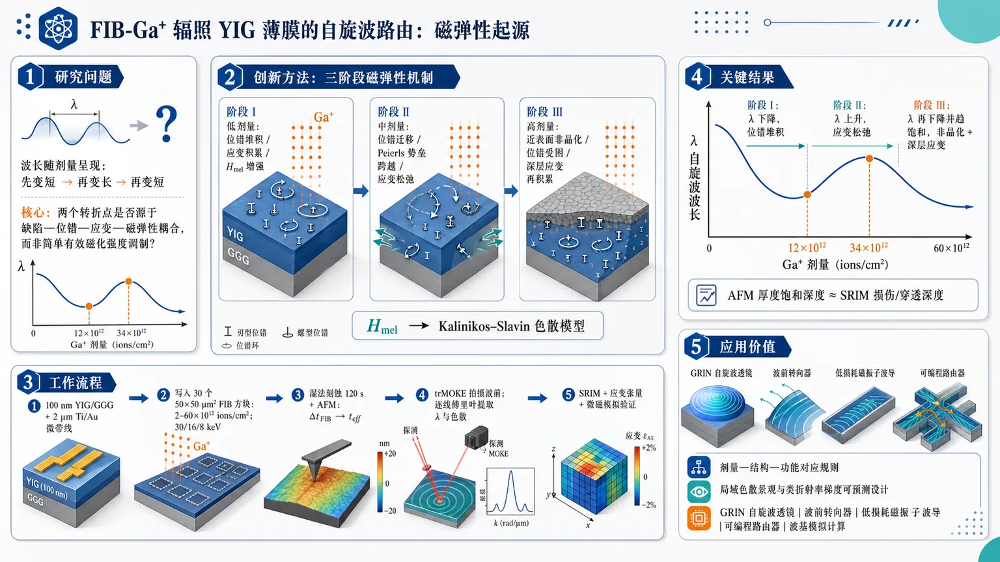
研究问题FIB-Ga⁺ 辐照 YIG 薄膜后，自旋波波长随离子剂量出现“先变短—再变长—再变短”的非单调路由响应；核心问题是：这种带有两个转折点的波长/色散变化，究竟是否源于辐照诱导的晶格缺陷、位错运动、应变演化及其磁弹性耦合，而不是简单的有效磁化强度调制。创新方法提出“位错积累—位错迁移/应变松弛—近表面非晶化”三阶段磁弹性机制图景：Ga⁺ 碰撞级联产生空位与间隙原子，缺陷簇塌缩为位错环；低剂量位错堆积增强应变，中剂量位错跨越 Peierls 势垒迁移并释放局域应变，高剂量位错被表面/缺陷困住并触发非晶化。论文将该结构演化转化为磁弹性有效场 Hmel，并嵌入 Kalinikos–Slavin 自旋波色散模型，同时用 AFM 厚度减薄和 SRIM 损伤深度进行交叉验证。工作流程输入为 100 nm YIG/GGG 薄膜和 2 µm Ti/Au 微带线；在微带线旁写入 30 个 50 × 50 µm² Ga⁺ FIB 辐照方块，剂量为 2–60 × 10¹² ions/cm²，并比较 30、16、8 keV 不同穿透深度；随后进行 120 s 湿法刻蚀，用 AFM 测量辐照区额外厚度减薄 ΔtFIB，得到有效磁性厚度 teff；再用 trMOKE 拍摄各剂量区自旋波波前，通过逐线傅里叶变换提取波长和色散；最后结合 Kalinikos–Slavin 模型拟合 Hmel，并用 SRIM 损伤剖面、应变张量分析和微磁模拟验证三阶段机制。关键结果30 keV Ga⁺ 辐照下，自旋波波长在 12 × 10¹² ions/cm² 和 34 × 10¹² ions/cm² 附近出现两个清晰转折点，将剂量响应分成三个可视化阶段：阶段 I 波长下降，对应位错堆积和应变积累；阶段 II 波长上升，对应位错迁移和局域应变松弛；阶段 III 波长再次下降并趋于饱和，对应近表面非晶化与深层应变再积累。AFM 测得的刻蚀后厚度饱和深度与 SRIM 模拟的 Ga⁺ 损伤/穿透深度一致，支持非晶层移除和磁弹性场共同塑造色散变化。应用价值该研究把 FIB 写入自旋波器件从经验调参推进到可预测的材料物理设计：可根据离子剂量、加速电压、损伤深度和磁弹性响应，设计局域色散景观和类折射率梯度，为 GRIN 自旋波透镜、波前转向器、低损耗磁振子波导、可编程自旋波路由器和波基模拟计算器件提供剂量—结构—功能对应规则。第一部分：核心概览 (Overview)
该研究把 FIB-Ga⁺ 辐照 YIG 薄膜导致自旋波路由的非单调波长变化，从经验性的“应变诱导各向异性”推进到 磁弹性起源 的物理解释。核心贡献在于提出 三阶段结构演化图景：位错积累、位错迁移/应变松弛、近表面非晶化，并用 AFM 厚度测量、trMOKE 色散拟合、Kalinikos–Slavin 模型、SRIM 损伤模拟、微磁学分析 形成闭环验证。该工作为 FIB 工程化 GRIN 自旋波器件 提供了可预测的材料物理基础。
---
第二部分：结构化快速回顾
《Establishing the Magnetoelastic Origin of Spin-Wave Routing through Focused Ion Beam Patterning》（None，）
背景
自旋波 可作为 GHz 频段、低功耗、波基模拟计算的信息载体。FIB 辐照 YIG 能局域调控自旋波色散，但既有实验观察到 波长随离子剂量非单调变化，阻碍了可预测的 GRIN 散射景观设计。
方法
使用 100 nm YIG / 500 µm GGG 薄膜，制备 2 µm 宽 Ti/Au 微带线，在其旁边写入 30 个 50 × 50 µm² Ga⁺ FIB 辐照区域。剂量为 2–60 × 10¹² ions/cm²，步进 2 × 10¹² ions/cm²，加速电压为 30、16、8 keV。通过 120 s 湿法刻蚀 + AFM 提取有效厚度，通过 trMOKE 测量色散，并用加入 磁弹性有效场 Hmel 的 Kalinikos–Slavin 形式 拟合。
结果
30 keV 辐照下，波长响应出现两个转折点：12 × 10¹² ions/cm² 与 34 × 10¹² ions/cm²，形成三个阶段：波长下降、上升、再次下降。拟合结果显示，低剂量对应 应变积累，中等剂量对应 位错迁移导致应变松弛，高剂量对应 近表面非晶化与深层应变再积累。
讨论
非单调自旋波路由不是单纯有效磁化强度调制，而是 辐照诱导晶格缺陷—位错—应变—磁弹性场—色散变化 的链式结果。SRIM 损伤深度分布 与 AFM 刻蚀厚度饱和深度 一致，支持用局域厚度减薄表征非晶层移除。
局限
模型为定性—半定量框架。Mₑff 与 Hₘₑₗ 在 Kalinikos–Slavin 拟合中强相关，通过固定 Mₑff 才能稳定提取 Hₘₑₗ；微磁模拟将辐照区视为均匀方块，忽略界面、梯度和空间非均匀性；薄膜磁弹性常数可能偏离体材料值。可用文本在 3.4 节中途截断，缺少完整后续结果、结论和补充验证细节。
结论
FIB 辐照引起的自旋波转向源于 磁弹性调控，其剂量依赖性由 位错积累、位错迁移、部分非晶化 三阶段结构演化决定。该框架为 FIB 写入 GRIN 自旋波透镜、路由器和可编程磁振子器件 奠定物理基础。
---
第三部分：逐章节冷凝解析 (Section-by-Section Condensing)
Abstract
- Spin-wave routing requires engineered scattering landscapes
自旋波 被定位为模拟计算和波基计算中的信息载体，关键功能依赖紧凑、可控的局域散射结构。摘要明确指出，*"Spin waves are promising information carriers for analog and wave-based computing, where functionality relies on compact and precisely engineered scattering landscapes."* 这一定义把器件功能直接绑定到 局域色散工程，而非单纯材料改性。
- FIB enables local dispersion tuning but creates a non-monotonic design problem
聚焦离子束 FIB 能在 YIG 中局域调控自旋波色散，但 波长随剂量增加呈非单调变化，导致无法直接按剂量预测器件折射率景观。关键表述为：*"Focused ion beam (FIB) irradiation enables such control by locally tailoring the spin-wave dispersion in yttrium iron garnet (YIG). However, a non-monotonic dependence of the spin-wave wavelength on increasing ion dose hinders predictive landscape design."*
- Magnetoelastic origin replaces a purely phenomenological explanation
核心理论推进在于把经验性的 应变诱导各向异性 连接到 磁弹性起源。摘要给出明确机制链条：*"we present an experimentally validated framework that explains this non-monotonic spin-wave steering by linking phenomenological strain-induced anisotropy to its magnetoelastic origin."*
- Three structural stages govern the dispersion behavior
非单调行为由 辐照诱导晶格位错、弹塑性变形、部分非晶化 共同决定。摘要中的机制句为：*"Irradiation-induced lattice dislocations drive elastic and plastic deformation, which evolve into partial amorphization, each stage contributing distinctly to the dispersion behavior."*
- Experimental pipeline combines etching, AFM, trMOKE and dispersion fitting
实验框架由 湿法刻蚀、AFM 厚度测量、trMOKE 色散追踪、Kalinikos–Slavin 拟合 构成。直接证据为：*"We combine post-irradiation wet-chemical etching and atomic force microscopy (AFM) to quantify thickness changes, and track the dispersion in etched regions using time-resolved magneto-optical Kerr effect (trMOKE) microscopy."*
- Validation uses SRIM, strain tensor analysis and micromagnetics
验证路径包括 SRIM 三阶段映射、应变张量一致性、微磁学模拟。摘要写明：*"Validation is achieved by mapping the deformation evolution onto a three-phase scenario based on SRIM simulations, reproducing the extracted field trends, and by consistent strain tensor and micromagnetic analyses."*
---
1 Introduction
- Analog and wave-based computing motivate spin-wave devices
模拟计算在 AI 时代重新受到关注，定位并非替代通用 CMOS，而是面向 高频、低功耗、非布尔、专用计算任务。关键表述为：*"Rather than aiming to replace CMOS in general-purpose digital logic, alternative wave-based approaches focus on specialized, high-frequency, low-power, and non-Boolean computing tasks."*
- Magnons naturally operate in the GHz regime
磁振子 magnons 是自旋波的准粒子，天然适合 微波/RF 信号处理。原文指出：*"Their quasiparticles, called magnons, naturally allow for operation in the gigahertz regime, making them intrinsically suited for microwave and RF signal-processing applications where low-power CMOS implementations remain challenging."*
- Spin-wave wavelength compression enables compact interference devices
GHz 下自旋波波长可比电磁波短数个数量级，达到 亚微米尺度，支撑紧凑型模拟处理和干涉计算。原文为：*"their wavelengths at gigahertz frequencies can be orders of magnitude shorter than those of electromagnetic waves, reaching the sub-micrometer scale."*
- Local dispersion is the controlling variable for functionality
对固定激发频率，局域色散改变会导致局域 波矢 k 和 波长 λ 改变。关键句：*"for a fixed excitation frequency, a controlled local change in the dispersion translates into a controlled change of the local wave vector and wavelength."* 这奠定了把 FIB 局域材料改性 转化为 波前转向 的理论基础。
- Spin-wave optics enables GRIN-like routing
尽管自旋波色散非线性，仍可与光学类比，构造 准光学元件。原文指出：*"Despite their nonlinear dispersion, spin waves admit close analogies to optics and support quasi-optical elements."* GRIN 在磁振子学中不是传统介质折射率，而是局域色散/波长剖面。
- Magnonic GRIN means engineered dispersion profile
GRIN 的语境定义非常重要：*"In magnonic implementations, the term “GRIN” therefore refers to an engineered spatial profile of the dispersion (or equivalently the local wavelength at a given frequency), which governs the bending of wave fronts and the focusing or defocusing of spin-waves."* 因此，FIB 写入的目标是形成空间变化的 有效折射率类响应。
- FIB is attractive because of resolution and depth tunability
FIB 辐照 的优势在于空间分辨率高，并可通过 加速电压与离子种类 调控相互作用深度。原文写道：*"focused ion beam (FIB) irradiation provides an attractive route to implement such dispersion landscapes in yttrium iron garnet (YIG), owing to its high spatial resolution and the tunability of the interaction depth via acceleration voltage and ion species."*
- Prior YIG work demonstrated dispersion-tunable low-loss waveguides
局域离子注入已在 YIG 中实现 色散可调、低损耗自旋波波导。对应引述：*"In YIG specifically, localized ion implantation has been shown to enable dispersion-tunable, low-loss spin-wave waveguides."*
- Previous group demonstrations used 30 keV Ga⁺ FIB for wavefront steering
既有器件层面研究显示 30 keV Ga⁺ FIB 可使自旋波波前转向，并被归因于局域 有效磁化强度 modulation。原文为：*"our group previously demonstrated that 30 keV Ga+ FIB irradiation enables steering of spin-wave wavefronts, which was attributed to a local modulation of the effective magnetization."*
- Physical origin remained insufficiently established
关键科学空白是 FIB 诱导色散位移的晶体学和微结构起源 尚不明确。原文强调：*"the crystallographic and microstructural origin of FIB-induced dispersion shifts in YIG thin films remains insufficiently established."*
- Phenomenological strain-induced anisotropy cannot explain turning points
过去使用 有效、经验性的应变诱导各向异性 描述波长变化，但无法解释 非单调、近似抛物线响应。关键句：*"such approximations do not fully capture key experimental trends, in particular the non-monotonic (approximately parabolic) evolution of the effective refractive-index-like response."*
- Three-phase structural evolution is the proposed mechanism
三阶段机制包括：
I：位错积累导致应变积累；
II：位错迁移导致应变松弛；
III：近表面非晶化，同时深层继续应变积累。原文完整列出：*"three distinct regimes: (I) Strain accumulation driven by lattice dislocations formed in radiation-induced collision cascades; (II) Strain relaxation through the migration of dislocations toward regions of lower strain; and (III) Near-surface amorphization, accompanied by continued strain accumulation in deeper layers."*
- Experimental–computational pipeline is self-consistent
验证路线为：FIB 后湿法刻蚀移除非晶层，AFM 给出局域厚度减薄，trMOKE 测色散，Kalinikos–Slavin 加入磁弹性场拟合。原文：*"We test this scenario using a self-consistent experimental–computational pipeline."*
- SRIM and micromagnetics provide final consistency checks
SRIM Monte Carlo 用于建立三阶段损伤场景，微磁模拟 用独立应变张量再现实验趋势。原文：*"As a final consistency check, strain tensor components derived independently from the fitted magnetoelastic field and from the modeled strain evolution are implemented in micromagnetic simulations to reproduce the experimentally observed trends."*
---
2 Methods
- Sample stack and material platform are precisely defined
实验样品为 100 nm YIG 薄膜，沉积在 500 µm GGG 衬底 上，采用 RF sputtering 并经氧化炉退火获得晶体结构。原文：*"A YIG thin film with a thickness of t = 100 nm was deposited by RF sputtering onto a 500 µm GGG substrate and subsequently annealed in an oxidation furnace to obtain the desired crystalline structure."*
- Spin waves are excited by a Ti/Au microstrip line
激发结构为 Ti(10 nm)/Au(100 nm) 微带线，宽度 2 µm，通过电子束蒸发制备。原文：*"For spin-wave excitation, a Ti(10 nm)/Au(100 nm) microstrip line (MSL) with a width of 2 µm was deposited by e-beam evaporation."*
- FIB dose map contains 30 implanted regions
微带线旁写入 50 × 50 µm² 方形区域，剂量范围 2–60 × 10¹² ions/cm²，步进 2 × 10¹² ions/cm²。原文：*"squares of 50 × 50 µm² were irradiated by direct FIB writing at varying Ga+ ion doses ranging from 2 to 60 × 10¹² ions/cm² in steps of 2 × 10¹² ions/cm²."* 由剂量步进可得共 30 个剂量区域。
- Three acceleration voltages probe different ion penetration depths
使用 30 keV、16 keV、8 keV 三种 Ga⁺ 加速电压，以获得不同离子穿透深度。原文：*"The irradiated regions were written at acceleration voltages of 30 keV, 16 keV, and 8 keV to obtain different penetration depths of the ions."*
- Wet-chemical etching tests partial amorphization through thickness loss
为验证 部分表面非晶化 导致有效厚度下降，加入 120 s 湿法刻蚀，再用 AFM 测阶梯高度。原文：*"The film was etched for 120 s, and the resulting stepwise changes in etching depth across the irradiated regions were quantified by atomic force microscopy (AFM)."*
- Forward-volume spin-wave geometry isolates OOP magnetized propagation
自旋波测量采用 forward-volume spin-wave, FVSW 构型。辐照区内波矢由 k₀ 变为 k_FIB，离开后恢复 k₀。原文：*"Spin waves were excited at a wavenumber k0 in the unirradiated region beneath the stripline and coupled into the irradiated area, where the wavenumber changed to kFIB."*
- trMOKE probes all implanted regions and pristine reference
使用 time-resolved magneto-optical Kerr effect microscopy 分析 30 个植入区域 及未辐照区域的自旋波传播。原文：*"The experiment was conducted using trMOKE microscopy, allowing us to analyze spin-wave propagation across 30 distinct implantation regions as well as in the pristine film."*
- Frequency, power and field settings minimize nonlinearities
测量频率为 2.285–2.33 GHz，步进 5 MHz；输入功率 8 dBm；外加垂直磁场 μ₀Hₑₓₜ,OOP = 250 mT。原文：*"The measurements were performed at spin-wave excitation frequencies ranging from 2.285 GHz to 2.33 GHz in steps of 5 MHz."* 输入功率选择依据为：*"An input power of 8 dBm was chosen to keep the measured spin-wave signal just above the noise floor, thereby minimizing nonlinear contributions."*
- SRIM models depth-dependent damage profiles
SRIM Monte Carlo 计算离子能量损失和位移级联，输出深度依赖损伤剖面。原文：*"To model the depth-dependent damage profile induced by Ga+ ion irradiation, SRIM Monte Carlo simulations were performed."*
- SRIM material and displacement parameters are explicit
模拟 YIG 密度 5.17 g/cm³，厚度 100 nm，化学计量 Y₃Fe₅O₁₂；位移能为 E_Y = 66 eV、E_Fe = 56 eV、E_O = 40 eV。原文：*"The simulated YIG layer had a density of 5.17 g/cm³ and a thickness of 100 nm, with a stoichiometry of Y3Fe5O12."*
- Beam tilt suppresses channeling
为降低沟道效应，离子束相对表面法线倾斜 7°。原文：*"To minimize channeling effects, the ion beam was tilted by 7° with respect to the surface normal."*
- Damage model converts SRIM output into local damage density
SRIM 输出单位为 (atoms/cm³)/(ions/cm²)，乘实验剂量得到 DM_FIB，单位 atoms/cm³。原文：*"By multiplying this profile with the experimentally applied ion dose, the depth-dependent damage model DMFIB was constructed, yielding the local damage density as a function of depth in units of atoms/cm³."*
- Micromagnetic simulations isolate magnetoelastic effects
微磁模拟只考虑辐照区域，并把其视为均匀材料参数方块，忽略界面和梯度。原文：*"To isolate this effect, the simulations were restricted to the irradiated regions only, modeled as homogeneous squares with uniformly distributed material parameters across the entire simulation grid."*
- Micromagnetic material parameters are fixed but carry uncertainty
饱和磁化强度 Mₛ = 130 kA/m，来自片上 FMR；B₁ = 3.48 × 10⁵ J/m³，取体材料值；泊松比 ν = 0.29。原文：*"The saturation magnetization was set to Ms = 130 kA/m, as determined from on-chip ferromagnetic resonance (FMR) measurements."* 对不确定性的说明为：*"Magnetoelastic constants in thin films can deviate from bulk values due to growth- and strain-related effects."*
---
3 Results
#### 3.1 Spin-Wave Scattering in Ion-Implanted Thin Films
- Dose map directly correlates Ga⁺ dose and wavelength modification
构建 30 区域剂量图，用于关联 FIB 剂量与自旋波波长变化。原文：*"To correlate the wavelength modification with the corresponding ion dose, we constructed a characteristic dosemap comprising 30 irradiation regions."*
- 30 keV irradiation covers 2–60 × 10¹² ions/cm²
该剂量图覆盖 30 keV Ga⁺ 辐照，剂量 2–60 × 10¹² ions/cm²。原文：*"The dosemap captures the spin-wave scattering across regions implanted at an ion acceleration of 30 keV, with doses ranging from 2–60 × 10¹² ions/cm²."*
- trMOKE conditions reproduce coherent plane-wave fronts
测量条件为 2.305 GHz、8 dBm、μ₀Hₑₓₜ,OOP = 250 mT，用于成像相干自旋波前。原文：*"The plane-wave fronts measured by trMOKE at 2.305 GHz and 8 dBm input power with μ0Hext,OOP = 250 mT were analyzed."*
- Line-wise Fourier analysis extracts carrier wavelength
沿 x 方向逐线傅里叶变换 提取载波波长 λ。原文：*"analyzed via a line-wise Fourier transformation along the x-direction to extract the carrier wavelength λ."*
- Two turning points divide the response into three monotonic regimes
关键结果是剂量 12 × 10¹² ions/cm² 和 34 × 10¹² ions/cm² 处出现两个清晰转折点。原文：*"This analysis reveals two clear turning points at doses of 12 × 10¹² ions/cm² and 34 × 10¹² ions/cm², which divide the dose-dependent response into three monotonic wavelength regimes."*
- The three regimes show decreasing, increasing and decreasing wavelengths
三阶段波长趋势分别为：I 下降、II 上升、III 再下降。原文：*"These regimes are characterized by decreasing (I), increasing (II), and again decreasing (III) wavelengths."*
- Previous strain-anisotropy explanation was insufficient
既有解释把阶段 I 和 II 归因于 离子辐照产生的应变诱导磁各向异性，但无法解释强转折点。原文：*"wavelength regimes I and II were attributed to strain-induced magnetic anisotropy generated by ion irradiation."* 局限为：*"it does not account for the pronounced turning points that define the three regimes."*
- Non-monotonicity is linked to crystalline dislocations
非单调性归因于 YIG 晶格内 辐照诱导晶体位错的成核和运动。原文：*"this non-monotonicity arise from the nucleation and motion of irradiation-induced crystalline dislocations within the YIG lattice."*
---
#### 3.2 Three-Phase Scenario for Irradiation-Induced Deformations
- Stress–strain analogy translates irradiation into mechanical deformation language
材料的 应力–应变曲线 被用作理解离子辐照下晶体结构演化的类比框架。原文：*"The characteristic stress response of a material under linearly increasing strain is represented by its stress–strain curve."*
- Ion irradiation acts as an effective pressure on the lattice
在该类比中，离子辐照相当于对晶格施加有效压力，逐渐改变内部结构。原文：*"ion irradiation acts as an effective pressure applied to the lattice, gradually altering its internal structure."*
- Collision cascades generate vacancy-rich cores and interstitial shells
加速离子进入晶体后引发 collision cascades，把原子打离晶格位点，形成 空位富集核心 与 间隙原子壳层。原文：*"they initiate collision cascades that displace atoms from their lattice sites, producing a vacancy-rich core surrounded by an interstitial atom shell."*
- Defect clusters collapse into edge dislocation loops
随剂量增加，缺陷区生长并聚集成簇，随后塌缩为能量有利的 刃型位错环。原文：*"These clusters subsequently collapse into energetically favored edge dislocation loops, which bend the surrounding lattice and induce strain."*
- Vacancy and interstitial loops bend the lattice oppositely
空位型位错环 对应缺失原子面，使周围晶格向空位弯曲；间隙型位错环 对应额外原子面，把晶格向外推。原文：*"A vacancy-type dislocation loop corresponds to a missing atomic plane, causing the surrounding lattice to bend inward toward the vacant lattice sites."* 以及 *"An interstitial-type dislocation loop corresponds to an additional atomic plane, pushing the lattice outward from the additional plane."*
- Dislocation density increases strain with increasing dose
随辐照剂量增加，位错环密度增加，导致诱导应变增强。原文：*"As the irradiation dose increases, the density of such loops grows accordingly, which increases the magnitude of induced strain."*
- Peierls potential frames dislocation motion as barrier crossing
三阶段模型以 Peierls potential 为核心：位错从一排晶格移动到相邻晶格排必须跨越周期性能垒。原文：*"the Peierls potential, which represents the periodic lattice energy barrier that must be overcome for a dislocation to move to an adjacent lattice row."*
- Strain-potential wells simplify depth-dependent lattice response
晶格被简化为沿深度分布的势阱序列，每个势垒对应位错迁移所需克服的应变阈值。原文：*"the lattice is modeled as a sequence of potential wells distributed along the material depth, each separated by a barrier analogous to the Peierls potential."*
- Phase I corresponds to source hardening and elastic strain accumulation
阶段 I 中，位错在离子损伤源附近成核并堆积；剂量线性增加时，位错数近似成比例增加，应变近似线性增加，对应弹性响应和 source hardening。原文：*"In phase I, dislocations nucleate and begin to pile up around the ion-induced damage region."* 以及 *"the accumulated strain increases in a nearly linear manner, characteristic of an elastic response."*
- Phase II corresponds to plastic deformation through dislocation migration
阶段 II 中，应变足以使位错越过势垒并迁移、相互作用、重排，标志塑性变形开始。原文：*"Once this threshold is exceeded, dislocations begin to move, interact, and rearrange, marking the onset of plastic deformation."*
- Dislocations migrate toward lower-strain regions and relax local strain
阶段 II 的关键物理是位错偏向低应变区域迁移，从而局部松弛应变并重新分布变形。原文：*"dislocations preferentially migrate toward regions of lower strain, thereby partially relaxing the local strain while redistributing deformation throughout the lattice."*
- Phase III corresponds to friction hardening and trapped dislocations
阶段 III 中，迁移位错在表面、缺陷、晶界等障碍处再次堆积，即 friction hardening。原文：*"they pile up against obstacles such as the material surface, defects, or grain boundaries, which is known as friction hardening."*
- Partial amorphization begins when strain cannot be relieved
当障碍处势垒近似无限大，位错被困，应变无法进一步通过迁移释放，晶体有序性开始崩溃，出现 部分非晶化。原文：*"When this limit is reached, the crystalline order begins to break down, marking the onset of partial amorphization."*
---
#### 3.3 Spin-Wave Dispersion in the Presence of Magnetoelastic Fields and Local Thickness Reduction
- LLG formalism links strain to spin-wave dynamics
该节目标是把辐照驱动的应变演化与可测色散参数及有效磁场联系起来。原文：*"The purpose of this section is to establish a direct correspondence between irradiation-driven strain evolution, experimentally accessible dispersion parameters, and the effective magnetic fields governing spin-wave propagation."*
- Strain tensor contains normal and shear deformation components
晶体应变由 应变张量 ε 表示，包含法向分量 εₓₓ、ε_yy、ε_zz 和剪切分量 ε_yx、ε_zx、ε_zy。原文：*"This tensor captures both the normal components ... and the shear components ... of the deformation."*
- Magnetoelastic coupling adds Hmel to the effective LLG field
应变通过 磁弹性耦合 进入自旋动力学，引入额外有效场 Hₘₑₗ。总有效场为 Hₑff = Hₑff,0 + Hₘₑₗ。原文：*"strain enters the spin dynamics through magnetoelastic coupling, giving rise to an additional effective field contribution Hmel."*
- Hmel directly couples lattice deformation to magnetic precession
Hₘₑₗ 把晶格形变与磁矩进动耦合起来。原文：*"the magnetoelastic contribution Hmel directly couples lattice deformations to the magnetic precession."*
- Magnetoelastic field depends on B1, B2, Ms and strain tensor components
方程 (3) 中 Hₘₑₗ 由 Mₛ、B₁、B₂、εᵢⱼ、mᵢ 决定。原文：*"where Ms is the saturation magnetization and B1 and B2 are the first and second magnetoelastic coupling constants, respectively."*
- Kalinikos–Slavin dispersion describes spin-wave propagation
自旋波色散使用 Kalinikos–Slavin 关系，其中 ω₀ = γμ₀Hₑff，ω_M = γμ₀Mₑff，厚度 t 进入偶极项 P。原文：*"From the LLG equation, the spin-wave propagation characteristics can be described by the dispersion relation developed by Kalinikos and Slavin."*
- FVSW geometry simplifies the angular term
在 FVSW 构型 中，完美垂直磁化时 θ = 0°，面内分量消失，色散化简为方程 (7)。原文：*"For the FVSW configuration, Eq. (5) simplifies ... since the in-plane component vanishes under perfect OOP magnetization (θ = 0°)."*
- Elastic and plastic deformation enter through ω0 and Hmel
弹性/塑性形变通过 Hₑff 中的 Hₘₑₗ 改变 ω₀，进而改变色散。原文：*"The magnetic strain response is captured by ω0. It reflects the accumulation and relaxation of strain ... in the effective field Heff."*
- Partial amorphization enters through effective magnetic thickness teff
近表面非晶化 不直接作为 Hₘₑₗ 拟合，而是通过有效磁性膜厚 t = tₑff 进入色散。原文：*"the effects of partial amorphization are accounted for by defining an effective magnetic film thickness, t = teff."*
- Pristine film fit fixes Meff and Heff,0
Mₑff 和 Hₑff,0 只对未辐照薄膜拟合一次，且设 Hₘₑₗ = 0；随后固定这些参数，仅提取辐照区剂量依赖的 Hₘₑₗ ≠ 0。原文：*"Meff and Heff,0 are used as fitting parameters only once, by fitting Eq. (7) to the dispersion of the pristine film (Hmel = 0)."*
- Meff–Hmel coupling creates fitting ambiguity
拟合存在关键方法学限制：在 Kalinikos–Slavin 形式中，磁弹性项会重整化内部场，并与 Mₑff 耦合，难以分离。原文：*"Hmel renormalizes the internal field and modifies the effective magnetization Meff, so both appear in the dispersion relation in a coupled, generally non-separable way."*
- Fixing Meff stabilizes Hmel extraction but remains approximate
固定 Mₑff 是一种近似处理，用于避免联合最小二乘拟合中 Mₑff 与 Hₘₑₗ 强相关。原文：*"the strong correlation between Meff and Hmel prevents a physically meaningful separation of their individual contributions."* 以及 *"although approximate, this approach stabilizes the fitting procedure."*
- AFM gives dose-dependent effective thickness after etching
120 s 湿法刻蚀 后，AFM 测得统一刻蚀偏移 Δt₀ = 4.09 nm，辐照区还有剂量和能量相关的额外高度下降 Δt_FIB。原文：*"In addition to the uniform etching offset Δt0 = 4.09 nm, irradiated regions exhibit a dose- and energy-dependent height reduction ΔtFIB."*
- Effective thickness formula explicitly incorporates amorphized removal
有效厚度定义为 tₑff = 100 nm − Δt₀ − Δt_FIB。原文：*"This thickness reduction is incorporated into the dispersion analysis by teff = 100 nm − Δt0 − ΔtFIB."*
- Dispersion shifts reproduce the three-phase deformation scenario
30 keV 所有辐照区用对应 tₑff 拟合后得到系统性色散变化。低剂量向低频移动，中剂量反向向高频移动，高剂量再次下移并趋于饱和。原文：*"At low irradiation doses, the dispersion shifts monotonically toward lower frequencies, reflecting a progressive decrease of Hmel associated with strain accumulation (phase I)."* 中剂量：*"the dispersion trend reverses and shifts toward higher frequencies, indicating a partial relaxation of the local strain."* 高剂量：*"the dispersion shifts downward once more and approaches saturation, consistent with renewed strain buildup combined with near-surface amorphization."*
- SRIM depth profile matches AFM thickness saturation depth
SRIM 模拟损伤分布与实验观察到的 Δt_FIB 饱和深度 接近，支持把厚度减薄视为部分非晶化移除的指标。原文：*"the experimentally observed saturation of the irradiation-induced thickness reduction ΔtFIB occurs at depths that are in good agreement with the simulated ion penetration range."*
- SRIM damage distribution is used as deformation proxy
在此基础上，模拟损伤分布被假定可直接关联到辐照诱导形变空间分布，并用于三阶段模型。原文：*"we assume that the simulated damage distribution can be directly related to the spatial distribution of irradiation-induced deformations and, therefore, to the three-phase scenario."*
---
#### 3.4 SRIM-Based Modelling of the Three-Phase Scenario
- Structural model is required to justify Hmel extraction
为把色散变化归因于磁弹性效应，需要结构模型描述晶体内辐照诱导应变发展。原文：*"a structural model is required that captures the development of irradiation-induced strain within the crystal."*
- The model physically grounds fitted dispersion changes
结构模型为从色散拟合提取 Hₘₑₗ 提供物理基础。原文：*"This model provides the physical basis for attributing the fitted dispersion changes to magnetoelastic effects, thereby justifying the extraction of Hmel from the dispersion analysis."*
- Qualitative strain model tracks accumulation, relaxation and breakdown
建立 定性应变模型，描述 Ga⁺ 剂量增加时的 应变积累、松弛、局部崩溃/非晶化。原文：*"we therefore introduce a qualitative strain model that describes the accumulation, relaxation, and partial breakdown of lattice strain as a function of increasing Ga+ ion dose."*
- SRIM-based scenario focuses on depth-dependent damage
SRIM 版本的三阶段模型关注 深度依赖损伤分布 与阶段转变。可用文本给出开端：*"the SRIM-based three-phase scenario focuses on the depth-dependent distribution of irradiation-induced damage..."* 后续内容在提供材料中中断，无法提取完整公式、阈值定义或最终拟合数值。
- Figure 8 defines model ingredients for 30 keV
图 8 给出 30 keV 下的定性应变模型，使用归一化损伤模型 DM_FIB，剂量示例为 6 × 10¹²、20 × 10¹²、34 × 10¹² ions/cm²。图注表述：*"The relative strain ε̄(d) is shown as a function of depth d for normalized damage models DMFIB at ion doses of 6 × 10¹² ions/cm², 20 × 10¹² ions/cm², and 34 × 10¹² ions/cm²."*
- Two thresholds separate deformation regimes
图 8 使用 DM_I,II 表征阶段 I–II 阈值，用 DM_II,III 表征深度依赖非晶化边界；超过非晶化边界时 ε̄ = 0。图注写明：*"The dashed orange line denotes the phase I–II threshold DMI,II, and the solid red line the depth-dependent amorphization boundary DMII,III, beyond which ε̄ = 0."*
- Mean relative strain is derived from summed relative strain
图 8 的阴影面积代表求和相对应变 𝓔，用于计算平均相对应变 ⟨ε̄⟩。图注为：*"The shaded area indicates the summed relative strain 𝓔 used to evaluate the mean relative strain ⟨ε̄⟩."*
---
第四部分：深度理解与语言支持 (Understanding & Nuance)
1. 术语解析
- Magnetoelastic origin
磁弹性起源 指磁性变化并非仅由化学成分或饱和磁化强度变化造成，而是由 晶格应变通过磁弹性耦合改变有效磁场和各向异性 造成。语境中，*"linking phenomenological strain-induced anisotropy to its magnetoelastic origin"* 表示从“拟合现象”推进到“材料微观机制”。
- Phenomenological strain-induced anisotropy
现象学应变诱导各向异性 是一种有效描述：用一个等效各向异性或有效磁化变化解释实验曲线，但不说明应变来自何种缺陷、如何随剂量演化。语境中它能拟合单调趋势，却不能解释 两个转折点。
- Non-monotonic dependence
非单调依赖 不只是“曲线不直线”，而是变量随剂量增加先减小、后增大、再减小，存在明确转折点。该研究中对应 12 × 10¹² 和 34 × 10¹² ions/cm² 两个剂量节点。
- Partial amorphization
部分非晶化 指晶体近表面区域在高损伤密度下失去长程晶格有序，但并非整层 YIG 完全非晶。湿法刻蚀后该区域更容易被移除，因此表现为 Δt_FIB 厚度减薄。
- Peierls potential
Peierls 势 是位错在晶格中移动时必须跨越的周期性能垒。语境中它被抽象成“势阱—势垒”模型，用于解释为何位错先积累、后迁移、再被障碍困住。
2. 疑难查证
- 为什么波长变化能反映应变？
在 FVSW 构型中，自旋波频率由有效场、有效磁化、交换项和厚度相关偶极项共同决定。FIB 诱导的晶格应变通过磁弹性耦合产生 Hₘₑₗ，改变 Hₑff，进而改变给定频率下的允许波矢 k。由于 λ = 2π/k，色散曲线移动会直接表现为波长变化。
- 为什么会出现先下降、后上升、再下降？
低剂量时，位错在损伤源处堆积，局域应变增加，磁弹性场单向变化，波长进入阶段 I。中剂量时，局域应变超过迁移阈值，位错向低应变区域移动，原损伤区应变部分松弛，磁弹性场反向变化，波长进入阶段 II。高剂量时，位错在表面/缺陷/晶界处被困，近表面晶格崩溃并非晶化，同时深层继续积累应变，波长进入阶段 III。
- 为什么 AFM 厚度减薄可以代表非晶化？
非晶化区域化学稳定性和刻蚀响应通常不同于晶态 YIG。辐照后湿法刻蚀会优先移除受损/非晶近表面层。若 Δt_FIB 随剂量增加后达到与 SRIM 离子穿透深度一致的饱和深度，则说明该厚度变化与离子损伤层密切相关，而非随机表面粗糙或普通刻蚀误差。
- 为什么固定 Mₑff 是必要但近似的？
Kalinikos–Slavin 色散中 Hₘₑₗ 和 Mₑff 都能改变色散曲线，二者在拟合中高度相关。若同时自由拟合，数学上可能得到低残差，但物理上无法判断变化来自磁弹性场还是有效磁化强度。固定未辐照薄膜得到的 Mₑff，再提取剂量相关 Hₘₑₗ，牺牲一部分严格性，换取物理可解释性。
---
第五部分：创新评估与关联 (Synthesis & Novelty)
1. 创新性判断
- 从器件演示推进到物理机制确证
近几年 FIB 写入 YIG 的工作已经展示了 自旋波转向、GRIN 透镜、低损耗波导和反向设计散射景观，但多以有效磁化或经验应变各向异性描述局域色散变化。该研究的新颖性在于把 FIB 剂量—晶格损伤—位错动力学—磁弹性场—自旋波色散 串成可检验机制链。
- 解决了非单调剂量响应的可预测性问题
既有模型能解释单调变化，却难以解释 约抛物线式有效折射率响应 和两个转折点。三阶段模型把 12 × 10¹² ions/cm² 与 34 × 10¹² ions/cm² 附近的转折分别关联到 位错迁移阈值 和 非晶化/应变再积累阈值，为 FIB 剂量设计提供物理规则。
- 把厚度减薄与非晶化显式纳入色散模型
过去单纯把 FIB 效应等效为磁参数变化，容易混淆 磁弹性场变化 与 有效膜厚变化。该研究通过 湿法刻蚀 + AFM 获得 tₑff = 100 nm − Δt₀ − Δt_FIB，把非晶层移除作为几何约束纳入 Kalinikos–Slavin 拟合，增强了参数分离能力。
- SRIM 损伤模拟与实验厚度饱和深度形成交叉验证
SRIM 不只是用于估计离子射程，而是被映射到三阶段应变模型中；AFM 观测到的厚度减薄饱和深度与模拟穿透范围一致，使 部分非晶化边界 获得独立支持。
- 为可编程磁振子器件提供材料设计语言
创新点不止于解释一个异常曲线，而是建立可用于未来器件设计的材料语言：低剂量区可用于应变积累调控，中剂量区可利用应变松弛反向调控，高剂量区需同时考虑非晶化导致的厚度变化。该框架可支撑 FIB-engineered GRIN spin-wave landscapes 和 magnetoelastically programmable magnonic devices。
-
17
📄 摘要：在顺电 SrTiO3 中探测远离铁电相边界的软光学声子非线性，分离局域场效应与自发宏观极化的贡献。结果针对初始铁电体中离子-电子耦合进入非微扰响应的情形，揭示强局域场可单独驱动软模异常。
📖 英文原文
arXiv:2607.26030v1 Announce Type: new Abstract: The interplay between ionic and electronic subsystems dictates the behavior of structural phase transitions in polar dielectrics, a coupling mediated by soft optical phonon modes. In incipient ferroelectrics such as SrTiO₃ (STO), strong local-field effects can drive the lattice into a non-perturbative regime near the phase boundary. However, disentangling the distinct contributions of local fields from those of spontaneous macroscopic polarization remains an experimental challenge. Here, we isolate these mechanisms by probing paraelectric STO deep within its symmetric phase, where macroscopic spontaneous polarization is suppressed. Linear terahertz (THz) spectroscopy reveals that the soft mode exhibits a hybrid character, predominantly driven by electronic polarizability. Utilizing two-dimensional THz spectroscopy, we map the underlying nonlinear signals, demonstrating that the system persists in a perturbative regime characterized by robust local-field coherence. By implementing a microscopic model of coupled electronic and lattice degrees of freedom mediated by local fields, we qualitatively reproduce these multidimensional coherent signatures. Our findings highlight that while local fields are necessary to initiate non-perturbative lattice dynamics, they are insufficient on their own. This reveals that spontaneous polarization plays a deterministic role in dictating soft-mode nonlinearities in strongly correlated polar dielectrics.
💡 亮点：SrTiO3 即使处于顺电并远离相变点，软模也可因强局域场进入非线性区。该实验区分局域场与宏观极化，有助于理解极性介质的超快和强场响应。
📖 展开分析 + 配图
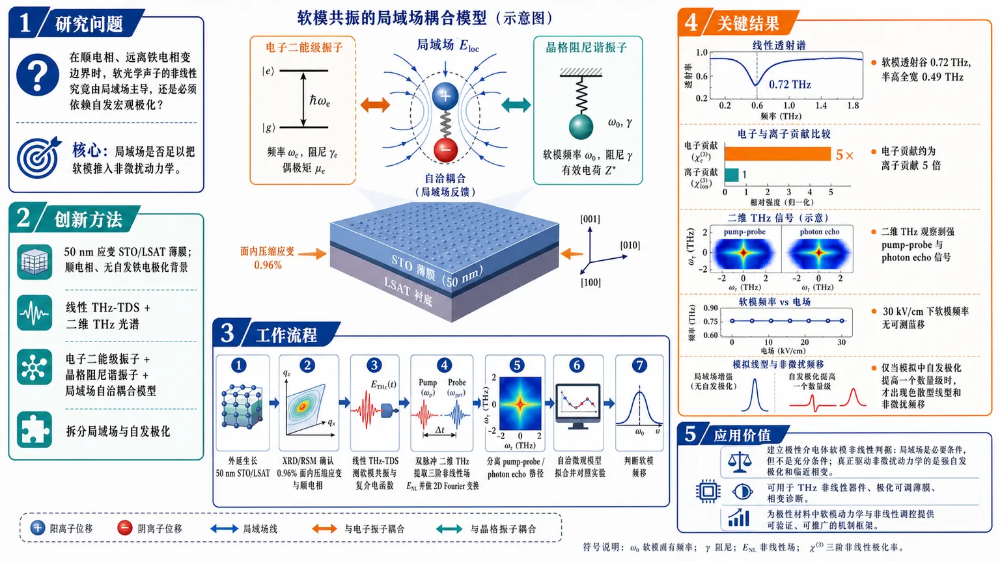
研究问题在顺电相、远离铁电相变边界时，软光学声子的非线性究竟由局域场主导，还是必须依赖自发宏观极化？核心要回答：局域场是否足以把软模推入非微扰动力学。创新方法把50 nm应变STO/LSAT薄膜放在远离相变的顺电相中，结合线性THz-TDS和二维THz光谱，首次把局域场效应与自发极化拆开；再用电子二能级振子+晶格阻尼谐振子+局域场自洽耦合模型，直接检验软模非线性的来源。Aha点是：用“无铁电极化背景”的样品做对照，把以前纠缠在一起的两个机制拆开。工作流程外延生长50 nm STO/LSAT薄膜→XRD/RSM确认0.96%面内压缩应变与顺电相→线性THz-TDS测软模共振与复介电函数→双脉冲二维THz提取三阶非线性场E_NL并做2D傅里叶变换→分离pump-probe、photon echo等路径→用自洽微观模型拟合并与实验对照→判断是否出现软模频移。关键结果软模透射谷位于0.72 THz，半高全宽0.49 THz；电子贡献约为离子贡献的5倍，说明软模具有强电子-晶格混合特征；二维THz观察到强pump-probe与photon echo信号，但在30 kV/cm下软模频率没有可测蓝移；只有在模拟中将自发极化提高一个数量级后，才出现色散型线型和非微扰频移。应用价值给出极性介电体软模非线性的机制判据：局域场是软模相干非线性的必要条件，但不是充分条件；真正驱动非微扰动力学的是强自发极化和临近相变。该结论可用于设计THz非线性器件、极化可调薄膜和相变诊断方法。第一部分：核心概览 (Overview)
该研究以处于顺电相、远离铁电相变边界的 50 nm SrTiO₃/LSAT 薄膜为模型，利用线性 THz 与二维 THz 光谱分离局域场效应与自发宏观极化对软模非线性的贡献。核心发现是：STO 软光学声子即使在顺电相仍具有强电子-晶格混合特征，且局域场可产生负相干时间的 photon echo；但在 30 kV/cm 中等 THz 场下不发生软模频率蓝移，说明单独局域场不足以触发非微扰动力学，自发极化具有决定性作用。
---
第二部分：结构化快速回顾
《Soft-mode nonlinearities away from ferroelectric phase transition》（None，）
背景 / Background
软光学声子支配极性介电体结构相变；在铁电 STO 中，局域场和自发极化同时存在，难以区分二者对软模非线性的独立作用。
方法 / Methods
制备 50 nm、(001) 取向 STO/LSAT 外延薄膜；XRD/RSM 表征 0.96% 面内压缩应变；THz-TDS 确定软模；2D THz 光谱测量三阶非线性信号；建立电子二能级振子与晶格阻尼谐振子经局域场耦合的微观模型。
结果 / Results
软模传输谷位于 0.72 THz，FWHM 为 0.49 THz；电子贡献约为离子贡献的 5 倍；2D THz 显示强 pump-probe 与 photon echo 信号，但无可测软模频率移动；负相干时间 photon echo 证明局域场相干存在。
讨论 / Discussion
顺电 STO 中局域场足以维持相干非线性响应，却不足以驱动非微扰频率重整化；与铁电 STO 中中等 THz 场诱导蓝移形成鲜明对照。
局限 / Limitations
频率移动判断受实验分辨率限制；理论主要为定性复现实验特征；样品为单一厚度、单一应变状态；补充材料中才包含更完整的制备与线性响应分析细节。
结论 / Conclusion
局域场是软模非线性相干的必要条件，但非充分条件；强自发极化与相变邻近性才是将软模推入非微扰光-物质相互作用 regime 的关键。
---
第三部分：逐章节冷凝解析 (Section-by-Section Condensing)
Abstract
Soft optical phonons mediate ionic-electronic coupling
极性介电体中的结构相变由离子子系统与电子子系统的耦合决定，而这一耦合通过软光学声子模式实现；核心物理对象不是单纯晶格振动，而是带有电子极化成分的混合激发。原文直接指出：*"The interplay between ionic and electronic subsystems dictates the behavior of structural phase transitions in polar dielectrics, a coupling mediated by soft optical phonon modes."*
Paraelectric STO isolates local fields from spontaneous polarization
选取处于对称顺电相深处的 STO，使宏观自发极化被抑制，从而把局域场效应与自发宏观极化的贡献拆开。关键设计是避免铁电相中二者纠缠。原文表述为：*"we isolate these mechanisms by probing paraelectric STO deep within its symmetric phase, where macroscopic spontaneous polarization is suppressed."*
Linear THz identifies a hybrid soft mode
线性 THz 光谱揭示 STO 软模具有混合 character，且主要由电子极化率驱动，而非纯离子位移。原文证据为：*"Linear terahertz (THz) spectroscopy reveals that the soft mode exhibits a hybrid character, predominantly driven by electronic polarizability."*
2D THz maps perturbative nonlinear signals with local-field coherence
二维 THz 光谱绘制了底层非线性信号，发现系统保持在微扰 regime，同时存在稳健的局域场相干。原文称：*"Utilizing two-dimensional THz spectroscopy, we map the underlying nonlinear signals, demonstrating that the system persists in a perturbative regime characterized by robust local-field coherence."*
Local fields are necessary but insufficient
最核心结论是：局域场可以启动非线性相干，但不能单独导致非微扰晶格动力学；自发极化对软模非线性具有决定性作用。原文明确写道：*"while local fields are necessary to initiate non-perturbative lattice dynamics, they are insufficient on their own"*，以及 *"spontaneous polarization plays a deterministic role in dictating soft-mode nonlinearities in strongly correlated polar dielectrics."*
---
Highlights
Paraelectric soft mode is a hybrid excitation
顺电相 STO 的软光学声子不是纯晶格模式，而是经 THz 光谱识别出的混合激发。原文要点为：*"Paraelectric soft optical phonon identified as a hybrid excitation via THz spectroscopy."*
Strong nonlinear signals occur without soft-mode frequency shift
2D THz 光谱观测到强非线性信号，但没有伴随软模频率移动；这一点直接支持微扰 regime 判据。原文写作：*"2D THz spectroscopy reveals strong nonlinear signals without any soft-mode frequency shift."*
Photon echo confirms robust local fields
持续的 photon echo 信号是局域场相干存在的实验证据。原文为：*"Persistent photon-echo signatures confirm the presence of robust local fields."*
Moderate fields and local fields do not guarantee non-perturbative behavior
微观模型表明，在中等场强下，仅靠局域场不足以进入非微扰动力学。原文概括为：*"Our microscopic model proves that local fields alone are insufficient to drive non-perturbative behavior with moderate field strengths."*
---
Summary
Soft-mode softening signals lattice instability
软光学声子频率下降是晶格不稳定和结构相变临近的核心标志；频率降低到接近零时，对应铁电或结构相变边界。原文指出：*"Soft optical phonon modes drive structural phase transitions in polar dielectric materials, with their declining frequency signaling lattice instability."*
Born effective charge quantifies ionic-electronic coupling
软模是离子位移与电子自由度耦合形成的激发，耦合强度由 Born effective charge 表征，并由内部局域电场调节。原文为：*"These modes represent a coupled excitation of ionic and electronic degrees of freedom, a relationship quantified by the Born effective charge and mediated by internal local electric fields."*
Local fields shape both linear and nonlinear optical response
局域场效应不仅影响宏观介电性质，也改变线性与非线性光学响应。原文明确称：*"Local field effects heavily dictate macroscopic dielectric properties, shaping both linear and nonlinear optical responses."*
2D THz is uniquely suited for meV soft modes
低能软模处于 meV 量级，适合 THz 光谱；二维 THz 提供相位敏感分辨能力，可直接探测局域场诱导的非线性动力学和相干。原文依据为：*"Because these low-energy modes operate in the meV range, they are uniquely accessible via terahertz spectroscopy."* 以及 *"two-dimensional terahertz (2D THz) spectroscopy provides the phase-sensitive resolution necessary to directly probe local-field-induced nonlinear dynamics and coherences."*
Paraelectric STO remains perturbative despite strong local-field contribution
即使局域场贡献显著，顺电 STO 的光-物质相互作用仍处于微扰 regime。原文凝练为：*"despite a strong local-field contribution, the system remains firmly within the perturbative regime of light-matter interaction."*
Distinct roles of local fields and spontaneous polarization are disentangled
该体系明确区分了局域场效应与强自发极化在顺电非线性动力学中的作用。原文写道：*"These findings clarify the nonlinear dynamics of paraelectric systems by explicitly disentangling the distinct roles of local-field effects and strong spontaneous polarization."*
---
Introduction
Soft optical phonons are phase-transition indicators
软光学声子是理解极性介电体结构相变的中心对象；相变临近时，其基频趋近于零，是晶格不稳定的高灵敏指标。原文为：*"As a system approaches a phase transition, the fundamental frequency of these modes decreases toward zero, serving as a highly sensitive indicator of lattice instability."*
Soft phonons are intrinsically hybrid ionic-electronic excitations
软声子振荡的定义特征是同时整合离子自由度和电子自由度，不是单一晶格振动。原文称：*"A defining characteristic of this soft phonon oscillation is its nature as a coupled excitation, which fundamentally integrates both ionic and electronic degrees of freedom."*
Born effective charge links displacement, polarization, and local force
Born effective charge, (Zₘ̊ ₑff) 定量描述原子位移与宏观晶体极化之间的耦合，也等价描述局域微观电场对离子的力。原文为：*"This hybrid behavior is quantitatively captured by the Born effective charge (Zeff), which defines the coupling strength between atomic displacements and the resulting macroscopic crystal polarization – or equivalently, the force exerted on an ion by the local microscopic electric field."*
Local field bridges microscopic polarizability and macroscopic dielectric response
局域场由外加场与邻近离子/电子产生的内场叠加而成，是从微观极化率映射到宏观介电响应的关键。原文写道：*"This local field, representing the superposition of the externally applied field and the internal fields generated by neighboring ions and electrons, is essential for mapping microscopic polarizability to the macroscopic dielectric response."*
Local field modifies equilibrium, linear, and nonlinear properties
局域场不仅决定平衡介电性质，还显著修正线性光学 susceptibility，并控制非线性光学响应。原文证据为：*"local field effects dictate equilibrium dielectric properties, significantly modifying linear optical susceptibility and playing an equally critical role in governing nonlinear optical responses."*
THz spectroscopy resonates with meV soft modes
介电材料软光学声子处于 meV 低能范围，因此可被 THz 光谱共振探测。原文为：*"Operating at low energies (meV range), these modes can be resonantly probed via terahertz (THz) spectroscopy."*
2D THz reveals field-interaction pathways and local-field coherence
二维 THz 光谱可相位敏感地区分光场相互作用路径，识别局域场诱导相干。原文表述为：*"two-dimensional (2D) THz spectroscopy enables direct interrogation of the associated nonlinear response by providing phase-sensitive access to field interactions, thereby facilitating the identification of local field-induced coherence."*
Local-field physics extends beyond dielectrics
局域场框架也适用于半导体量子阱与高密度原子蒸气，支配多体相互作用、退相干、多量子相干以及线性/非线性响应。原文为：*"Beyond dielectrics, this local-field framework defines the many-body interactions, dephasing dynamics, and multi-quantum coherences in semiconductor quantum well systems"*，并且 *"driving the linear and nonlinear optical response in dense atomic vapors."*
Ferroelectric STO previously showed non-perturbative soft-mode blue shift
以往应变铁电 STO 中，软模表现为纯晶格激发与电子带间跃迁的混合体；由于靠近结构相变，中等 THz 场即可使晶格进入非微扰 regime，并表现为软模频率明显蓝移。原文为：*"previous studies on strained ferroelectric SrTiO3 (STO) elucidated the microscopic origin of soft-mode nonlinearities"*，*"the soft mode in a ferroelectric material behaves as a hybrid of pure lattice excitations and electronic interband transitions"*，以及 *"even moderate terahertz (THz) fields drove the lattice into a non-perturbative regime of light-matter interaction, manifested as a pronounced blue-shift in the soft-mode frequency."*
Negative-coherence-time photon echo is a local-field hallmark
铁电 STO 中负相干时间 photon echo 曾被视为强局域场诱导相干的标志。原文写作：*"The observation of photon-echo signals at negative coherence times further provided a hallmark of strong local-field-induced coherence."*
Prior ferroelectric studies could not separate local field, polarization, and phase-boundary effects
过去研究集中在铁电相，那里强自发极化与相边界不稳定性并存，因此局域场、自发极化、相变邻近性三者纠缠。原文明确指出：*"they focused exclusively on systems in the ferroelectric phase, where large spontaneous polarization and phase-boundary instabilities coexist."* 以及 *"the individual contributions of local field effects, macroscopic polarization, and proximity to a phase transition remain inherently intertwined."*
Central question: local fields alone or spontaneous polarization required?
核心科学问题是：强局域场本身是否足以驱动软模进入非微扰 regime，还是必须依赖强自发极化与相变邻近性。原文直接提问：*"are local-field effects alone sufficient to drive the soft mode into the non-perturbative regime, or are a strong spontaneous polarization and immediate proximity to a structural phase transition necessary?"*
Paraelectric STO far from transition provides the testbed
顺电 STO 远离铁电相变，用于检验局域场与自发极化的独立贡献。原文为：*"we address this question by investigating the nonlinear response of a paraelectric STO system operating far from the ferroelectric phase transition."*
Minor initial polar component weakens with film thickness
尽管体系总体顺电，但存在由压缩应变与衬底层极化引起的微弱初始极性成分，并随薄膜厚度增加而衰减。原文为：*"Although fundamentally paraelectric, the system exhibits a minor initial polar component that attenuates with increasing film thickness, driven by a combination of compressive strain and substrate layer polarization."*
Electronic contribution dominates soft mode even in paraelectric STO
THz-TDS 显示电子贡献显著超过离子贡献，确认软模混合性质。原文为：*"Using terahertz time-domain spectroscopy (THz-TDS), we find that the electronic contribution to the soft mode significantly exceeds the ionic contribution, confirming the hybrid character of the excitation."*
2D THz shows perturbative response but photon echo reveals local fields
二维 THz 光谱显示，在显著电子成分和中等强驱动下，顺电 STO 非线性仍为微扰；但 photon echo 给出强局域场信号。原文依据为：*"Despite this substantial electronic character and a moderately strong driving field, two-dimensional terahertz (2D-THz) spectroscopy reveals that the nonlinear response remains strictly within the perturbative regime of light-matter interaction."* 以及 *"within this perturbative regime, photon-echo signals provide unambiguous signatures of a strong local field."*
Microscopic model couples electronic oscillators and lattice vibrations through local field
理论模型含两个子系统：电子振子与晶格振动，二者通过局域场直接耦合。原文为：*"we developed a theoretical model that captures the hybrid nature of the soft mode by coupling two distinct subsystems: electronic oscillators and lattice vibrations."* 以及 *"This inter-subsystem coupling is mediated directly by the local field."*
Strong local field alone is insufficient
实验和模拟共同支持：强局域场不能单独驱动非微扰 regime，强自发极化才是必要成分。原文结论为：*"Our findings reveal that a strong local field alone is insufficient to drive the system into the non-perturbative light-matter interaction regime; rather, a robust contribution from spontaneous polarization is required."*
---
Results and discussion
Sample design uses epitaxial strain as phase-control parameter
模型体系为顺电 regime 中的 STO 薄膜，外延应变作为相态控制参量；样品为 50 nm 厚、(001) 取向 STO，生长于 (001) 取向 LSAT 衬底。原文为：*"A model dielectric system in the paraelectric regime was investigated, with epitaxial strain as a phase-control tuning parameter."* 以及 *"a 50-nm-thick (001)-oriented SrTiO3 (STO) thin film was epitaxially grown on a (001)-oriented (La0.3Sr0.7)(Al0.65Ta0.35)O3 (LSAT) substrate via pulsed laser deposition."*
Compressive strain stabilizes room-temperature paraelectric STO
STO/LSAT 晶格失配产生外延应变，将 STO 限制在室温顺电 regime；RSM 给出 0.96% 面内压缩应变。原文证据为：*"The resulting lattice mismatch induces an epitaxial strain that constrains the STO layer within the room-temperature paraelectric regime"*，以及 *"reciprocal space mapping confirms coherent growth, revealing that the substrate imposes a compressive in-plane strain of 0.96% on the STO film."*
XRD confirms high crystalline quality and coherent growth
XRD θ–2θ 图中 STO 与 LSAT 均有尖锐清晰 (001) 反射，表明晶体质量高；RSM 证实相干生长。原文为：*"X-ray diffraction (XRD) patterns exhibit sharp, well-defined (001) reflections for both the LSAT substrate and the STO film, confirming excellent crystalline quality"*，以及 *"reciprocal space mapping confirms coherent growth."*
Strain tunes soft phonon into THz range
压缩应变不仅稳定顺电相，还将软声子调入 THz 频段，使 THz 光谱可直接探测。原文指出：*"This compressive strain successfully stabilizes the paraelectric phase and tunes the soft phonon mode into the THz frequency range."*
Linear THz-TDS detects phase shift and attenuation from STO layer
室温 THz-TDS 分别测量裸 LSAT 与 STO|LSAT；透过 STO 薄膜的 THz 脉冲相对于裸衬底出现相位移动和衰减。原文为：*"we performed terahertz (THz) time-domain transmission spectroscopy at room temperature on both the bare LSAT substrate and the STO|LSAT hetero-structure."* 以及 *"The pulse transmitted through the STO thin film exhibits a distinct phase shift and attenuation compared to that of the bare LSAT."*
Soft-mode resonance occurs at 0.72 THz with 0.49 THz FWHM
归一化频域透射谱显示宽透射谷，中心频率 0.72 THz，半高全宽 0.49 THz，确认顺电相软光学声子。原文为：*"The spectrum reveals a broad transmission dip centered at 0.72 THz with a full width at half maximum (FWHM) of 0.49 THz, confirming the presence of the soft optical phonon mode in the paraelectric phase."*
Soft-mode frequency is strain-sensitive
0.72 THz 略低于此前接近铁电转变的应变 STO 报道值，说明软声子动力学对外延应变状态极其敏感。原文为：*"this resonant frequency is slightly lower than values reported in earlier studies of strained STO systems approaching the ferroelectric transition."* 以及 *"This frequency shift highlights the extreme sensitivity of the soft phonon dynamics to the film’s epitaxial strain state."*
Complex dielectric function shows zero-crossing and absorption peak
在薄膜近似 (d łl łambdaₘ̊ THz) 下计算复介电函数，软模表现为实部过零与虚部共振峰同时出现。原文为：*"we calculate the frequency-dependent complex dielectric function within the thin-film approximation (d≪λTHz)."* 以及 *"The soft mode signature manifests clearly as a simultaneous zero-crossing in the real part and a resonant peak in the imaginary part of the dielectric function."*
Electronic contribution is approximately five times ionic contribution
基于 Cochran 形式主义量化线性 THz 响应，电子贡献约为纯离子贡献的 5 倍；即使处于顺电相深处，软模仍强烈电子化。原文精确写道：*"Using Cochran’s formalisms, we quantify the relative contributions of electronic and ionic responses from the linear terahertz response"*，以及 *"the electronic contribution to the soft mode exceeds the purely ionic counterpart by a factor of approximately five, even deep within the paraelectric phase."*
Hybrid soft mode persists across ferroelectric and paraelectric STO
顺电 STO 与铁电 STO 均具有软模混合性质，强电子贡献和局域场效应可解释增强有效电荷 (Zₘ̊ ₑff) 的表观差异。原文为：*"This finding aligns with observations reported for ferroelectric STO, demonstrating that the hybrid nature of the soft mode in STO persists across both the ferroelectric and paraelectric phases."* 以及 *"accounting for strong electronic contributions and local-field effects resolves the apparent discrepancy regarding the enhanced effective charge (Zeff)."*
2D THz isolates nonlinear field (Eₘ̊ NL)
使用两个相位锁定 THz 脉冲 THz-A 与 THz-B，延迟为 (τ)；非线性场由双脉冲响应减去两个单脉冲响应得到：
[
Eₘ̊ NL=Eₘ̊ AB(t,τ)-Eₘ̊ A(t,τ)-Eₘ̊ B(t)
]
原文为：*"we performed two-dimensional THz spectroscopy employing two phase-locked THz pulses (THz-A and THz-B), separated by a delay time τ."* 以及 *"The nonlinear response from the sample is extracted as ENL=EAB(t,τ)−EA(t,τ)−EB(t)."*
2D Fourier transform separates (ḩi⁽³⁾) soft-mode signals
二维傅里叶变换在探测频率 (νₜ₌ν₀₌₀.97) THz 处分离不同三阶非线性信号；0.97 THz 位于软模 FWHM 内。原文为：*"By performing a 2D Fourier transform, we can separate all the different χ(3) signals of the soft mode in the frequency domain at the detection frequency νt=ν0=0.97 THz, which lies within the FWHM range of the soft mode frequency."*
Dominant nonlinear feature is (Aₘ̊ ₚᵤ-Bₘ̊ ₚᵣ)
二维频谱中最强信号位于 ((νₜ,ν_τ)=(0.97,0)) THz，对应 (Aₘ̊ ₚᵤ-Bₘ̊ ₚᵣ) pump-probe 信号。原文为：*"the Apu−Bpr signal situated at (νt,ντ)=(0.97,0) THz is the most dominant one."*
Other (ḩi⁽³⁾) pathways are weaker
(Bₘ̊ ₚᵤ-Aₘ̊ ₚᵣ) 位于 ((0.97,-0.97)) THz，ABB photon echo 位于 ((0.97,0.97)) THz，BAA photon echo 位于 ((0.97,1.94)) THz，强度相对较弱。原文为：*"the Bpu−Apr at (νt,ντ)=(0.97,-0.97) THz as well as the ABB photon echo at (νt,ντ)=(0.97,0.97) THz and BAA photon echo at (νt,ντ)=(0.97,1.94) THz are comparatively weaker in intensity."*
Microscopic model assigns nonlinearity primarily to electronic subsystem
模型包括两个贡献总极化的子系统：Ti–O 共价键电子偶极组成的电子振子，作为二能级系统处理；晶格激发作为经典阻尼谐振子处理，并忽略本征非线性。有效非线性主要来自电子响应。原文为：*"The first subsystem comprises electronic oscillators that represent the electronic dipoles of the Ti–O covalent bonds within the perovskite lattice."*，*"these are treated as an ensemble of two-level systems."*，*"the lattice excitations ... is modeled as a classical damped harmonic oscillator, and its intrinsic nonlinearity is ignored."* 以及 *"the system’s effective nonlinearity is primarily determined by the electronic response."*
Local field self-consistently couples electronic and lattice subsystems
两个子系统经包含外加 THz 场和诱导极化的局域电场自洽耦合。原文为：*"These two subsystems are self-consistently coupled through the local electric field, which combines the external THz field and the induced polarization."*
Theory qualitatively reproduces all observed (ḩi⁽³⁾) features
时间域求解运动方程并经二维傅里叶变换得到频域非线性信号；模拟定性复现实验中全部 (ḩi⁽³⁾) 特征。原文为：*"The resulting equations of motion representing the two subsystems were solved in the time domain to extract the nonlinear response."* 以及 *"A 2D Fourier transform of the time-domain data yielded the frequency-domain nonlinear signals ... which qualitatively reproduce all experimentally observed χ(3) features."*
Gaussian filtering reconstructs individual nonlinear pathways
对 ((νₜ,ν_τ)) 域每个特征施加二维 Gaussian 谱滤波，再逆二维傅里叶变换，重构对应 ((t,τ)) 域信号。原文为：*"we applied a 2D Gaussian spectral filter to each (νt,ντ) domain feature ... and performed an inverse 2D Fourier transform to reconstruct the corresponding signals in the (t,τ) domain."*
Pump-probe signals track delayed probe pulse
两个 pump-probe 通道 (Aₘ̊ ₚᵤ-Bₘ̊ ₚᵣ) 与 (Bₘ̊ ₚᵤ-Aₘ̊ ₚᵣ) 追踪 pump 诱导动力学，并由延迟 probe 脉冲读取；(Bₘ̊ ₚᵤ-Aₘ̊ ₚᵣ) 时间轮廓跟随 probe 脉冲 A。原文为：*"two distinct pump-probe signals, designated as Apu−Bpr and Bpu−Apr, which track the pump-induced dynamics via interaction with the delayed probe pulse."* 以及 *"the temporal profile of the signal closely tracks that of the probe pulse (pulse A)."*
No measurable soft-mode frequency shift in (Bₘ̊ ₚᵤ-Aₘ̊ ₚᵣ)
在 (τ=-0.2) ps 强相干重叠和 (τ=-2.5) ps 脉冲分离两个延迟处提取时间迹线；1D-FFT 未发现实验分辨率内软模频率移动。原文为：*"one at −0.2 ps, characterized by strong coherent pulse overlap, and another at −2.5 ps, where the pulses are temporally well-separated."* 以及 *"A one-dimensional fast Fourier transform (1D-FFT) of these transients reveals no measurable shift in the soft-mode frequency within experimental resolution."*
Pump field does not renormalize the paraelectric soft mode
高强度 pump 场未改变软模频率；这与铁电 STO 中可比 THz 场诱导蓝移形成对比。原文为：*"despite its high intensity, the pump field fails to alter the soft-mode frequency."* 以及 *"This behavior stands in stark contrast to previous observations in ferroelectric STO, where comparable THz fields induced a blue shift in the soft-mode frequency – a signature of the non-perturbative regime."*
Absence of shift proves perturbative light-matter interaction
顺电相无频移说明体系仍处于微扰光-物质相互作用 regime；(Aₘ̊ ₚᵤ-Bₘ̊ ₚᵣ) 信号同样无频移。原文为：*"the absence of a frequency shift in the present paraelectric phase indicates that the system remains within the perturbative regime of light-matter interactions."* 以及 *"A similar absence of a frequency shift is observed in the Apu−Bpr signal."*
Spectrally resolved pump-probe confirms no dynamic frequency shift
谱分辨 (Aₘ̊ ₚᵤ-Bₘ̊ ₚᵣ) 信号定义为
[
Sₘ̊ ₚₚAB(νₜ,τ)=2Re[Eₘ̊ ₚₚAB(νₜ,τ)E_B^*(νₜ₎]/|E_B(νₜ₎|²
]
实验与模拟在 0.5 ps、1.5 ps、2.7 ps 延迟切片均显示纯吸收线型，无非对称色散型线型。原文为：*"evaluated using the relation: SppAB(νt,τ)=2Re[EppAB(νt,τ)EB∗(νt)]/|EB(νt)|2"*，*"at delay times of 0.5 ps, 1.5 ps, and 2.7 ps"*，以及 *"Both the theoretical and experimental profiles exhibit purely absorptive features at the soft-mode frequency."*
No dispersive lineshape directly rules out dynamic frequency shift
非对称色散型线型完全缺失，直接确认相互作用过程中无动态频率移动。原文为：*"The complete absence of an asymmetric, dispersive-like lineshape directly confirms that no dynamic frequency shift occurs during the light-matter interaction."*
Photon echoes diagnose local-field effects
photon echo 保留各次光场相互作用的相位信息，因此适合检验局域场对非线性光学响应的作用。原文为：*"Because photon-echo signals preserve the phase information corresponding to individual light-field interactions, they can be used to elucidate the role of local fields in the nonlinear optical response."*
Negative-coherence-time photon echoes prove phase memory
实验与理论的 ABB、BAA photon echo 轮廓定性一致，并在负相干时间 (τₓ) 出现有限信号；这要求体系保留先前光-物质相互作用的相位信息。原文为：*"both the measured and calculated profiles reveal a finite signal at negative coherence times (τx)."* 以及 *"The emergence of photon echoes at the negative coherence times requires the system to preserve phase information from the preceding light-matter interactions."*
Local field dynamically links successive THz interactions
微观理论中，相干由局域场介导；局域场动态连接连续 THz 场相互作用。因此负相干时间 echo 是顺电相中局域场强烈影响宏观极化的决定性证据。原文为：*"Within our microscopic theory, this coherence is mediated by the local field, which dynamically links successive THz field interactions."* 以及 *"the observation of photon echoes at negative coherence times demonstrates that local fields strongly influence the material’s macroscopic polarization even within the paraelectric phase."*
Increasing spontaneous polarization by one order of magnitude induces non-perturbative signatures
模拟中将自发极化系统性提高一个数量级后，谱分辨 (Aₘ̊ ₚᵤ-Bₘ̊ ₚᵣ) 信号在 0.5 ps、1.5 ps、2.7 ps 切片出现高度非对称色散线型，标志进入非微扰 regime。原文为：*"we simulated the system by systematically increasing the spontaneous polarization by an order of magnitude."* 以及 *"exhibit a highly asymmetric, dispersive lineshape, confirming a transition into the non-perturbative regime of light-matter interaction."*
Dispersive profile is the signature of soft-mode resonance shift
色散型谱线直接反映软模共振频率移动，是软模系统非微扰光-物质相互作用的实验签名。原文为：*"Such a dispersive spectral profile directly reflects a shift of the soft-mode resonance frequency, which serves as the experimental signature of the non-perturbative light-matter interaction in the soft-mode system."*
Photon echo without frequency shift defines a distinct dynamic regime
最重要的物理分离是：存在 photon echo 但无频移，说明局域场足以维持相干并产生负相干时间 echo，却不足以改变共振频率。原文为：*"the coexistence of a photon-echo signal without an associated frequency shift isolates a distinct dynamic regime"*，以及 *"local-field effects are strong enough to sustain coherent interactions and generate echoes at negative coherence times, but insufficient to modify the resonance frequency."*
---
Conclusion
Local fields and spontaneous polarization have distinct roles
顺电 STO 的实验明确区分了局域场效应与自发极化在进入非微扰光-物质相互作用 regime 中的作用。原文为：*"we have elucidated the distinct roles of local-field effects and spontaneous polarization in driving a paraelectric STO system into the non-perturbative regime of light-matter interaction."*
Compressive strain keeps STO away from phase boundary
面内压缩应变成功稳定体系，使其远离相变边界。原文为：*"Compressive in-plane strain successfully stabilized the system well away from its phase-transition boundary."*
Linear THz quantifies hybrid soft mode
线性 THz 光谱通过电子与离子贡献量化确认软模混合性质。原文为：*"Linear THz spectroscopy confirmed the hybrid nature of the identified soft mode by quantifying its electronic and ionic contributions."*
2D THz shows perturbative response but robust local-field coherence
2D THz pump-probe 未显示共振频率移动，证明体系仍为微扰；photon echo 显示稳健局域场诱导相干。原文为：*"Although 2D THz pump-probe spectroscopy revealed no resonance frequency shifts – confirming the system remains within the perturbative regime – the photon-echo signals displayed robust local-field-induced coherence."*
Strong local fields cannot alone trigger non-perturbative dynamics
强局域场不是触发非微扰动力学的充分条件。原文为：*"This indicates that strong local fields alone cannot trigger non-perturbative dynamics."*
Model validation and polarization tuning recover non-perturbative behavior
理论模型复现实验关键软模非线性；模拟增加自发极化权重后恢复预期非微扰行为，从而分辨局域场与自发极化贡献。原文为：*"This behavior was validated by a theoretical model reproducing the key soft-mode nonlinearities."* 以及 *"by systematically increasing the weight of spontaneous polarization in simulations, we recovered the expected non-perturbative behavior."*
---
Methods
0.1 Growth and strain characterization
STO film geometry and substrate composition are precisely controlled
样品为 50 nm 厚、(001) 取向 STO 外延薄膜，衬底为 (001) 取向 ((La₀.₃Sr₀.₇)(Al₀.₆₅Ta₀.₃₅)O₃) LSAT 单晶。原文为：*"A 50-nm-thick, (001)-oriented epitaxial SrTiO3 (STO) thin film was grown on a (001)-oriented (La0.3Sr0.7)(Al0.65Ta0.35)O3 (LSAT) single-crystal substrate via pulsed laser deposition."*
PLD growth parameters define reproducibility
生长温度 700 °C，氧分压 0.12 mbar；KrF 准分子激光波长 248 nm，能流密度 1.14 J cm⁻²，重复频率 2 Hz。原文为：*"Growth was performed at a substrate temperature of 700∘C under an O2 partial pressure of 0.12 mbar."* 以及 *"A KrF excimer laser (λ=248 nm) was operated at a fluence of 1.14 Jcm-2 and a repetition rate of 2 Hz."*
Annealing minimizes local strain relaxation
为降低局域应变松弛，样品在 700 °C 原位退火 1 h，随后在生长气氛下以 1 K/min 冷却。原文为：*"To minimize local strain relaxation, the sample was annealed in situ at 700∘C for 1 h and subsequently cooled at 1 K/min under the growth atmosphere."*
RHEED and XRR verify growth mode and thickness
RHEED 实时监测确认高晶体质量与逐层沉积；XRR 验证最终厚度。原文为：*"Reflection high-energy electron diffraction (RHEED) monitored the growth in real time, confirming high crystalline quality and layer-by-layer deposition, while the final thickness was verified via X-ray reflectivity (XRR)."*
Nominal compressive strain follows from lattice mismatch
STO 与 LSAT 均为立方对称；体相晶格常数分别为 3.905 Å 与 3.868 Å，对应名义面内压缩应变 −0.95%。原文为：*"Both STO and LSAT exhibit cubic symmetry with bulk lattice constants of 3.905 Å and 3.868 Å, respectively, yielding a nominal in-plane compressive strain of −0.95%."*
RSM confirms coherent strain state
RSM 中薄膜峰与衬底峰沿 (Qₚₐᵣₐₗₗₑₗ) 对齐，证明 STO 薄膜相干应变。原文为：*"reciprocal space mapping ... demonstrates that the STO film is coherently strained, as evidenced by the alignment of the film and substrate peaks along the Q∥ direction."*
---
0.2 Experimental details
Linear THz-TDS probes paraelectric soft mode
线性 THz-TDS 用于探测顺电 STO 软模。原文为：*"To probe the soft mode in paraelectric STO, we performed linear terahertz time-domain spectroscopy (THz-TDS)."*
Laser system parameters are specified
实验采用 Ti:Sapphire 激光，中心波长 800 nm，脉宽 100 fs，重复频率 1 kHz。原文为：*"The setup used a Ti:Sapphire laser operating at 800 nm, with a 100 fs pulse duration and a 1 kHz repetition rate."*
THz generation uses optical rectification in ZnTe
90% 激光功率用于在 0.5 mm 厚 (110) ZnTe 晶体中光整流产生 THz；10% 作为采样探针。原文为：*"90% of the beam power directed to generate THz radiation via optical rectification in a 0.5-mm-thick (110)-cut ZnTe crystal, while the remaining 10% served as the sampling probe."*
Electro-optic detection uses a second ZnTe crystal
透射 THz 与探针共线聚焦到第二块 (110) ZnTe 探测晶体；THz 诱导探针椭偏经四分之一波片、Wollaston 棱镜和平衡探测器分析。原文为：*"The generated THz pulses were transmitted through the sample and collinearly focused alongside the probe beam onto a second (110)-oriented ZnTe detection crystal."* 以及 *"The THz field-induced ellipticity of the probe beam was subsequently analyzed using a quarter-wave plate, a Wollaston prism, and a balanced photo-detector."*
2D THz uses two collinear pulses with variable delay
非线性 THz 响应通过两个共线 THz 脉冲测量，两脉冲相对到达时间为 (τ)。原文为：*"we employed two-dimensional THz spectroscopy (2D-THz), where the relative arrival time between two collinear THz pulses was adjusted by a delay time τ."*
Combined THz field is 30 kV/cm
实验使用双脉冲合成 THz 电场幅值 (|Eₘ̊ AB|=30) kV/cm。原文为：*"In our experiments, a combined THz electric field of |EAB|=30 kV/cm was used."*
Nonlinear response is obtained by field subtraction
非线性场通过 (Eₘ̊ NL(t,τ)=Eₘ̊ AB(t,τ)-Eₘ̊ A(t,τ)-Eₘ̊ B(t)) 分离。原文为：*"The nonlinear response was isolated by subtracting the individual single-pulse traces from the combined two-pulse response, expressed as ENL(t,τ)=EAB(t,τ)−EA(t,τ)−EB(t)."*
Collinear geometry encodes all nonlinear pathways in one 2D map
由于共线激发几何，所有非线性信号编码在单个二维谱图中。原文为：*"Because of the collinear excitation geometry, all nonlinear signals are encoded within a single 2D spectral map."*
Measurements avoid atmospheric water absorption
所有测量在室温、惰性氮气环境中进行，以消除大气水吸收。原文为：*"All measurements were conducted at room temperature in an inert nitrogen environment to eliminate atmospheric water absorption."*
---
0.3 Theoretical modeling
Theory uses self-consistent coupled equations of motion
理论模拟采用自洽耦合运动方程框架，将体系分为电子子系统与晶格振动子系统。原文为：*"the theoretical simulations are performed using a self-consistent framework of coupled equations of motion."* 以及 *"we divide the entire system into two coupled subsystems: the electronic subsystem and the lattice vibrations."*
Lattice vibration is modeled as damped harmonic oscillators
由于声子模式本征非谐性极小，晶格振动建模为独立阻尼谐振子系综。原文为：*"The lattice vibration is modeled as an ensemble of independent damped harmonic oscillators because the intrinsic anharmonicity corresponding to the phonon mode is extremely small."*
Vibrational coherence equation defines phonon dynamics
第 (k) 个晶格振动的微观振动相干 (pₘ̊ ᵥᵢb,ₖ) 满足
[
fracpartial pₘ̊ ᵥᵢb,ₖpartial t=
(i2πνₘ̊ ᵥᵢb,ₖ-γₘ̊ ᵥᵢb,ₖ)pₘ̊ ᵥᵢb,ₖ
+iØmegaₘ̊ ᵥᵢb,ₖ(t)
]
其中 (νₘ̊ ᵥᵢb,ₖ) 为基频，(γₘ̊ ᵥᵢb,ₖ) 为现象学阻尼率。原文为：*"the temporal evolution of the microscopic vibrational coherence (pvib,k) is given by the following equation of motion"*，以及 *"νvib,k denotes the fundamental resonance frequency, γvib,k is the phenomenological damping rate."*
Vibrational Rabi frequency couples to local field
晶格振动 Rabi 频率为
[
Ømegaₘ̊ ᵥᵢb,ₖ(t)=fracdₘ̊ ᵥᵢb,ₖEₘ̊ ₗₒcₐₗ(t)hbar
]
说明晶格子系统的驱动来自局域电场而非单纯外场。原文为：*"The vibrational Rabi frequency Ωvib,k is given by, Ωvib,k(t)=dvib,kElocal(t)/ℏ."*
Lattice polarization depends on vibrational coherence
晶格振动极化为
[
Pₘ̊ ᵥᵢb,ₖ=2Nₘ̊ ᵥᵢb,ₖdₘ̊ ᵥᵢb,ₖRe(pₘ̊ ᵥᵢb,ₖ)
]
其中 (Nₘ̊ ᵥᵢb,ₖ=(a₀b₀c₀₎⁻¹)。原文为：*"The polarization introduced by the lattice vibration can be quantified as, Pvib,k=2Nvib,kdvib,kRe(pvib,k)"*，以及 *"Nvib,k=(a0b0c0)−1 is the density of a certain vibrational mode."*
Electronic subsystem is intrinsically nonlinear
电子子系统用密度矩阵形式的二能级态系综描述，因为其本征非线性显著。原文为：*"In contrast to lattice vibrations, the electronic subsystem is intrinsically nonlinear and is modeled as an ensemble of two-level states governed by the density-matrix formalism."*
Electronic coherence and population include dephasing and relaxation
电子相干 (h̊o₁₂m̊ el) 与布居 (h̊o₂₂m̊ el) 满足含 (T₂m̊ el) 退相干时间与 (T₁m̊ el) 布居弛豫时间的方程。原文为：*"The temporal evolution of the electronic coherences (ρ12el) and populations (ρ22el) are given by"*，以及 *"we have phenomenologically incorporated the dephasing time (T2el) and the population relaxation time (T1el)."*
Electronic Rabi frequency also depends on local field
电子 Rabi 频率为
[
Ømegaₘ̊ ₑₗ(t)=fracdₘ̊ ₑₗEₘ̊ ₗₒcₐₗ(t)hbar
]
其中 (dₘ̊ ₑₗ) 为电子振子的有效跃迁偶极矩。原文为：*"The electronic Rabi frequency (Ωel) is expressed as, Ωel(t)=delElocal(t)/ℏ"*，以及 *"del is the effective transition dipole moment corresponding to the electronic oscillators."*
Electronic polarization follows electronic coherence
电子极化写为
[
Pₘ̊ ₑₗ=2Nₘ̊ ₑₗdₘ̊ ₑₗRe(h̊o₁₂m̊ el)
]
饱和电子振子密度约为 (aₘ̊ ₑₓ⁻³)。原文为：*"The polarization corresponding to the electronic oscillator is quantified as, Pel=2NeldelRe(ρ12el)."* 以及 *"the saturation density of the electronic oscillators (Nel) is approximately aex−3."*
Vibrational density greatly exceeds electronic saturation density
晶格振动态密度远大于电子振子饱和密度，即 (Nₘ̊ ᵥᵢb,ₖ gg Nₘ̊ ₑₗ)。原文为：*"such that Nvib,k >> Nel."*
Local field contains external THz field and Lorentz field from induced polarization
局域电场包括外加 THz 场和由诱导极化产生的 Lorentz 场：
[
Eₘ̊ ₗₒcₐₗ=Eₘ̊ THz+L(a₀,b₀,c₀₎łeft(Pₘ̊ ₑₗ+sumₖPₘ̊ ᵥᵢb,ₖi̊ght)
]
原文为：*"The driving terms ... for both subsystems are proportional to the local electric field (Elocal), which includes contributions from the externally applied THz field (ETHz) and the Lorentz field caused by the induced polarization."*
Paraelectric cubic symmetry fixes Lorentz factor at 1/3
顺电 STO 近似立方晶格，(a₀₌b₀₌c₀)，因此 Lorentz 因子取 1/3。原文为：*"Since the system under study is paraelectric, i.e., cubic in nature (where the lattice constants are equal, a0=b0=c0), we have taken the Lorentz factor (L) to be 1/3."*
Electronic transition dipoles dominate lattice transition dipoles
电子跃迁偶极矩比纯晶格激发大多个数量级，即 (dₘ̊ ₑₗgg dₘ̊ ᵥᵢb,ₖ)。原文为：*"the electronic transition dipoles are orders of magnitude larger than those of pure lattice excitations (del >> dvib,k)."*
Re-emitted field follows time derivative of total polarization
宏观再辐射场由总极化时间导数计算：
[
Eₘ̊ ₑₘ=-fracellₘ̊ ₛₐₘₚₗₑǎrepsilon₀c(nₘ̊ ₛᵤb+1)
łeft(fracpartial Pₘ̊ ₑₗpartial t+sumₖfracpartial Pₘ̊ ᵥᵢb,ₖpartial ti̊ght)
]
其中 (ellₘ̊ ₛₐₘₚₗₑ) 为顺电层厚度，(nₘ̊ ₛᵤb) 为 LSAT 折射率。原文为：*"Finally, the macroscopic re-emitted field (Eem) is calculated directly from the time derivative of the total polarization"*，以及 *"lsample is the thickness of the paraelectric layer and nsub is the refractive index of the LSAT substrate."*
---
Figure captions
Figure 1 establishes structure and linear soft-mode spectroscopy
图 1 包含 STO 应变相图、XRD/RSM、THz 时域透射、频率依赖透射和复介电函数；红点对应本研究顺电相位置，绿方块对应文献 [11] 的铁电转变附近 STO。原文为：*"The red circle corresponds to the paraelectric phase position of STO (current study), while the green square positions STO in the range of ferroelectric transition (Ref. [11])."* 透射谷约在 0.72 THz：*"Frequency-dependent THz transmittance exhibiting a distinct dip at approximately 0.72 THz, indicative of the soft phonon mode."*
Figure 2 maps experimental and simulated 2D nonlinear THz spectra
图 2 展示 (Eₘ̊ NL(t,τ))、实验二维频谱和模拟二维频谱；彩色椭圆标记非线性信号位置。原文为：*"Experimental and theoretical two-dimensional (2D) nonlinear terahertz (THz) signals."* 以及 *"The colored ellipses outline the spectral positions of the nonlinear signals."*
Figure 3 tests (Bₘ̊ ₚᵤ-Aₘ̊ ₚᵣ) temporal and spectral response
图 3 对 (Bₘ̊ ₚᵤ-Aₘ̊ ₚᵣ) 信号进行逆傅里叶时间域重构，并在两个延迟时间作 1D FFT。原文为：*"Temporal profiles and spectral analysis of the inverse Fourier-transformed Bpu−Apr signals."* 以及 *"Corresponding frequency-domain spectra computed via a one-dimensional (1D) Fourier transform of the traces in (C)."*
Figure 4 confirms absorptive pump-probe dynamics
图 4 给出 (Aₘ̊ ₚᵤ-Bₘ̊ ₚᵣ) 时间域与谱分辨动力学，以及三个延迟切片。原文为：*"Temporal profiles and spectrally-resolved dynamics of the inverse Fourier-transformed Apu−Bpr signal."* 以及 *"Traces of SppAB(νt,τ) at three distinct delay times."*
Figure 5 isolates photon-echo pathways
图 5 展示实验和理论 photon echo 时间域轮廓，用于验证局域场相干。原文为：*"Temporal profiles of inverse Fourier-transformed photon-echo signals."*
Figure 6 shows polarization-enhanced non-perturbative simulation
图 6 中将极化提高一个数量级后，谱分辨 (Sₘ̊ ₚₚAB) 出现色散型线型。原文为：*"In (B), the polarization is increased by an order of magnitude, which introduces a dispersive-like lineshape in the spectrally-resolved SppAB(νt,τ) signal."*
---
Addendum
No new unique materials and data availability
研究未产生新的独特材料；数据集已附带，额外数据和理论代码可合理请求获得。原文为：*"This study did not generate any new unique materials."* 以及 *"Any additional data and the codes associated with the theoretical simulation supporting this study are available from the lead author upon reasonable request."*
Author contributions separate experiment, growth, modeling, and supervision
P.S. 进行线性/非线性 THz 实验和数据分析；I.F. 与 J.L. 在 M.T. 指导下生长和表征样品；P.S. 与 K.V.G. 开发理论模型；S.P. 构思并监督实验。原文为：*"P.S. performed the linear and nonlinear THz experiments and the corresponding data analysis."*，*"I.F. and J.L., under the supervision of M.T., grew and characterized the samples."*，*"P.S. and K.V.G. developed the theoretical model"*，以及 *"S.P. conceived the project and supervised the experiments."*
No competing financial interests
利益冲突声明为无。原文为：*"The authors declare that they have no competing financial interests."*
AI tool use limited to language editing
Gemini 仅用于拼写和语法检查，内容经人工审阅和编辑。原文为：*"During the preparation of the work, the authors used Gemini for spellchecking and grammar."* 以及 *"After using the tool, the authors reviewed and edited the content as needed."*
---
第四部分：深度理解与语言支持 (Understanding & Nuance)
1. 术语解析
Soft mode / soft optical phonon mode
“Soft” 并非“柔软材料”的意思，而是指某个光学声子模式的频率随相变临近而降低，趋向零频时晶格势能曲率变小，结构失稳。语境中其物理含义是相变序参量相关振动模式。关键句：*"the fundamental frequency of these modes decreases toward zero, serving as a highly sensitive indicator of lattice instability."*
Incipient ferroelectric
通常译作“初始铁电体”或“量子顺电体/潜在铁电体”，指材料接近铁电不稳定但在实验条件下未真正形成宏观铁电相。STO 是典型例子：有强极化涨落和巨大介电响应，但室温可保持顺电。这里强调 STO 可通过应变调控接近或远离铁电相变。
Local-field effects
不是样品外部施加的宏观 THz 场，而是微观位置上离子/电子实际感受到的场：外场加上周围诱导偶极产生的内场。其微妙之处在于：宏观 (Eₘ̊ THz) 相同，不同材料内部 (Eₘ̊ ₗₒcₐₗ) 可能完全不同。原文定义：*"the superposition of the externally applied field and the internal fields generated by neighboring ions and electrons."*
Perturbative vs non-perturbative regime
“Perturbative” 表示材料响应可按场强展开，例如 (ḩi⁽¹⁾)、(ḩi⁽³⁾) 等高阶项仍是小修正；“non-perturbative” 表示外场强到足以动态改变系统本征参数，例如软模共振频率发生明显移动。该研究中判据非常具体：无软模频移 = 微扰；出现色散型谱线和频率移动 = 非微扰。
Photon echo at negative coherence times
普通直觉中 echo 似乎只能在后续脉冲之后出现；负相干时间 echo 指在二维谱重构坐标中，信号出现在通常不应有相干演化的时间区间。其存在要求系统通过局域场保留先前相互作用的相位信息。关键句：*"The emergence of photon echoes at the negative coherence times requires the system to preserve phase information from the preceding light-matter interactions."*
---
2. 疑难查证
为什么“有强局域场”但“不发生非微扰频移”并不矛盾？
局域场有两类作用：
- 相干连接作用：诱导极化产生的内场可把连续 THz 相互作用联系起来，保留相位记忆，因此出现 photon echo。
- 势能重整化作用：若场足够强且体系本身已有强自发极化/接近相变不稳定，局域场可显著改变软模势能曲率，表现为共振频率移动。
顺电 STO 中第 1 类作用存在，第 2 类作用不够强。因此出现“photon echo 有，但频移无”的组合。这正是新的动力学 regime：局域场相干与非微扰频率重整化被解耦。
为什么电子贡献约 5 倍于离子贡献，却仍不进入非微扰 regime？
电子贡献大说明软模具有强混合性，也说明局域场可强烈影响极化响应；但非微扰软模频移需要改变晶格势能面。电子极化强并不等价于宏观自发极化强。顺电相中宏观自发极化被抑制，势能面仍稳定在中心对称构型附近；30 kV/cm 场强足以产生三阶非线性和 echo，但不足以让软模势能曲率显著变化。
为什么色散型线型意味着频率移动？
pump-probe 谱中，若 pump 只改变吸收强度，谱线通常呈吸收型，峰形对称，类似 Lorentzian 的吸收变化。若 pump 改变共振频率，探测到的是“原谱线减去稍微平移后的谱线”，数学上近似为原吸收谱的一阶导数，因此呈正负相邻的色散型/导数型线型。所以非对称 dispersive-like lineshape 是动态频移的光谱指纹。
为什么自发极化会决定非微扰阈值？
铁电相中存在非零极化 (Pₛ)，晶格势能呈非中心对称或双阱特征，软模对电场极其敏感；外场与 (Pₛ) 耦合会强烈改变有效势能曲率。顺电相中 (Pₛ) 接近零，局域场虽能增强响应，却缺少将晶格推离平衡构型的“偏置极化通道”。模拟中把自发极化提高一个数量级后恢复色散型线型，说明 (Pₛ) 实际上降低了进入非微扰 regime 的门槛。
---
第五部分：创新评估与关联 (Synthesis & Novelty)
1. 创新性判断
从铁电相转向顺电相，首次清晰拆分局域场与自发极化的作用
过去 2–5 年内，THz 软模非线性研究多集中于铁电或接近相变的体系，例如应变铁电 STO 中的软模蓝移、局域场增强和负相干时间 echo。那些体系同时具备强局域场、强自发极化和相边界不稳定性，无法判定非微扰行为究竟由哪一因素主导。该研究将 STO 放在顺电相深处，实验证明：局域场可产生相干 echo，但不能单独产生非微扰频移。
提出“photon echo without frequency shift”的独立动力学 regime
最有价值的新概念不是简单说顺电 STO 非线性弱，而是识别出一种更细分的非线性 regime：
- 有强 (ḩi⁽³⁾) 信号；
- 有负相干时间 photon echo；
- 无软模频率移动；
- 因而存在局域场诱导相干，但无非微扰势能重整化。
这一组合把“局域场相干”和“非微扰软模频移”从过去常被绑定的现象中分离出来。
将软模混合性推广到远离相变的顺电 STO
电子贡献约为离子贡献 5 倍，说明 STO 软模的电子-晶格混合性质并非铁电相或相变邻近性的特殊结果，而是跨越顺电/铁电相的普遍特征。这对 Born effective charge 增强、THz susceptibility、软模非线性建模都有直接影响。
用可检验的微观模型连接实验信号路径
模型将电子振子视为二能级系统、晶格振动视为阻尼谐振子，并通过 Lorentz 局域场自洽耦合，能够同时复现 pump-probe 和 photon echo 信号。模型进一步通过人为提高自发极化一个数量级生成色散型线型，直接建立“自发极化增强 → 非微扰频移出现”的因果链。
解决的前人未解问题
此前未解决的问题是：
强局域场本身是否足以让软模进入非微扰光-物质相互作用 regime？
该研究给出否定答案：不够。
强局域场是维持相干与产生 photon echo 的必要机制，但软模频率重整化和非微扰动力学需要强自发极化或相变邻近性提供额外的非线性放大通道。
-
18
📄 摘要：对二维铁磁半导体 CrSiTe3 进行中子散射测量，检验是否存在 Dirac 磁振子能隙。结果表明该能隙很小或不存在，早期结论可能受实验因素影响；同时发现层间耦合可解释 CrSiTe3 在若干条件下磁转变温度升高的异常行为。
📖 英文原文
arXiv:2602.19935v2 Announce Type: replace Abstract: Recent experimental and theoretical studies have suggested a possible Dirac magnon gap in the two-dimensional ferromagnetic semiconductor CrSiTe₃. Detailed neutron scattering measurements were performed to shed light on the existence of the magnon gap, and suggest that the gap is very small or non-existent, with previous measurements being complicated by experimental factors. During these measurements, it was found that the out-of-plane couplings could explain the usual property of the increase in the magnetic transition temperature when CrSiTe₃ is exfoliated to monolayers. Furthermore, the material was shown to have anisotropic magnons along the out-of-plane direction, through the proposed Dirac point. We speculate that this is due to an exchange anisotropy, though Kitaev-like interactions alone cannot explain the spectra.
💡 亮点：CrSiTe3 中子散射显示所谓 Dirac 磁振子能隙至多很小，可能曾被实验因素放大。层间耦合对磁转变温度的作用凸显二维蜂窝铁磁体的三维各向异性。
📖 展开分析 + 配图
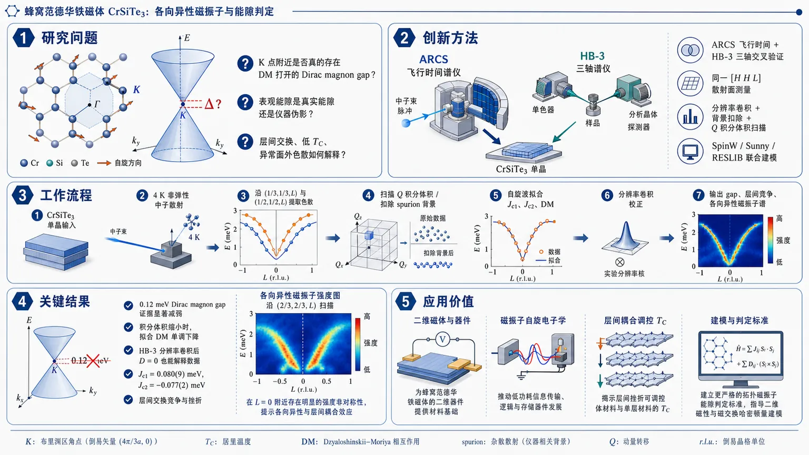
研究问题CrSiTe₃ 的 K 点附近是否真的存在由 DM 相互作用打开的 Dirac magnon gap？如果表观能隙并非本征能隙，那么其层间交换、低 TC 以及穿过 K 点的异常面外色散该如何解释？创新方法用 ARCS 飞行时间中子谱与 HB-3 三轴中子谱交叉验证；在 [H H L] 散射面同时测 K 点与 (1/2,1/2,L) 方向；结合分辨率卷积、背景扣除、Q 积分体积扫描，以及 SpinW、Sunny、RESLIB 联合建模，区分真实能隙与仪器伪影。工作流程CrSiTe₃ 单晶输入 → 4 K 下进行 ARCS/HB-3 非弹性中子散射 → 沿 (1/3,1/3,L) 与 (1/2,1/2,L) 提取色散 → 扫描不同 Q 积分体积并扣除三轴 spurion 背景 → 用自旋波模型拟合 Jc1、Jc2、DM 项 → 再做分辨率卷积校正 → 输出 K 点 gap、层间交换竞争关系和各向异性磁振子谱。关键结果所谓 0.12 meV 的 Dirac magnon gap 证据显著减弱；当积分体积缩小时，拟合出的 DM 值单调下降，HB-3 分辨率卷积后 D=0 也能解释数据。层间交换得到 Jc1=0.080(9) meV、Jc2=-0.077(2) meV，显示反铁磁/铁磁竞争与层间挫折。更重要的是，沿 (2/3,2/3,L) 观察到关于 L=0 不对称的各向异性磁振子，这是常规 Heisenberg、DM、Kitaev 和双二次交换都无法重现的。应用价值为蜂窝范德华铁磁体中“拓扑磁振子能隙”的判定提供更严格标准，避免把分辨率和杂散散射误判为本征 gap；同时揭示层间挫折可调控体材料与单层材料的 TC 变化，对二维磁性、磁振子自旋电子学和低维磁交换哈密顿量建模都有直接指导意义。第一部分：核心概览 (Overview)
CrSiTe₃ 中曾被解释为 Dirac magnon gap 的约 0.12 meV Dzyaloshinskii–Moriya 相互作用证据，在更严格的中子散射复测、分辨率卷积与杂散散射扣除后显著削弱；若存在，能隙远小于既有报告。层间 Jc1–Jc2 竞争揭示体材料低 TC 与单层化后 TC 升高的微观机制。最重要的新发现是穿过 K 点 的面外方向存在未被 Kitaev、DM 或常规 Heisenberg 模型解释的 各向异性磁振子谱，为蜂窝范德华铁磁体的真实自旋哈密顿量提出新约束。
---
第二部分：结构化快速回顾
《Anisotropic magnons in a layered honeycomb ferromagnet》（None，）
背景
CrSiTe₃ 是层状蜂窝范德华铁磁半导体，具备二维磁性、强自旋轨道耦合和潜在 Dirac magnons。既有研究报告 K 点 Dirac magnon gap，并将其归因于约 0.12 meV DM 相互作用，但该解释可能受到仪器分辨率和三轴谱仪杂散信号影响。
方法
采用 ARCS 飞行时间中子谱仪与 HB-3 热三轴中子谱仪，研究质量 3.7 g 的 CrSiTe₃ 单晶，温度 4.0 K，入射能量 15 meV / 30 meV，末态能量 5.5 meV / 14.7 meV。通过 [H H L] 散射面测量穿过 K 点 的色散，并用 SpinW、Sunny、RESLIB 模拟自旋波和分辨率效应。
结果
沿 (1/2, 1/2, L) 的带宽为 0.61 meV，约束出 Jc1 + 9Jc2 = −0.61 meV；拟合得到 Jc1 = 0.080(9) meV、Jc2 = −0.077(2) meV，显示层间反铁磁与铁磁相互作用竞争。直接以较大积分体积拟合 K 点可复现 D = 0.115(3) meV，但积分体积缩小时 D 单调下降。HB-3 分辨率卷积后，D = 0 可解释数据。
讨论
既有 Dirac gap 可能被有限 Q 积分体积、仪器分辨率和 (0 0 3) 核布拉格峰引发的 spurion 放大。体材料层间挫折可解释 单层化后 TC 升高。沿 (2/3, 2/3, L) 出现关于 L = 0 不对称的磁振子色散，常规 DM、Kitaev、双二次交换等均无法再现。
局限
无法证明 DM 项严格为零；当积分体积 δ < 0.025 r.l.u. 时拟合不收敛。各向异性磁振子的具体交换形式尚未确定，尤其是为何 K–H–K′ 方向独特仍未解决。
结论
CrSiTe₃ 的拓扑磁振子能隙证据显著弱于既有报告；真实哈密顿量必须包含复杂层间相互作用与未知交换各向异性。该体系仍可能存在极小能隙或非常规各向异性拓扑激发，但不能简单归因于 0.12 meV DM 相互作用。
---
第三部分：逐章节冷凝解析 (Section-by-Section Condensing)
Abstract
Dirac magnon gap is likely tiny or absent
CrSiTe₃ 中曾被提出存在 Dirac magnon gap，但更细致的中子散射测量显示该能隙“非常小或不存在”。摘要直接给出核心判断：*"Detailed neutron scattering measurements were performed to shed light on the existence of the magnon gap, and suggest that the gap is very small or non-existent, with previous measurements being complicated by experimental factors."* 关键证据链包括：重新测量 K 点 附近自旋波、检查仪器分辨率、识别三轴谱仪杂散信号，并比较积分体积对拟合 DM 项的影响。
Out-of-plane couplings explain monolayer transition-temperature enhancement
层间交换并非微弱背景项，而是解释 CrSiTe₃ 体材料与单层行为差异的关键。摘要指出：*"the out-of-plane couplings could explain the usual property of the increase in the magnetic transition temperature when CrSiTe3 is exfoliated to monolayers."* 后文定量给出 Jc1 = 0.080(9) meV、Jc2 = −0.077(2) meV，二者符号相反并导致层间挫折；剥离到单层后，长程层间挫折被解除，TC 可升高。
Anisotropic magnons occur through the proposed Dirac point
穿过假定 Dirac 点的面外方向出现 anisotropic magnons，其关于 L = 0 不对称。摘要中的核心表述为：*"the material was shown to have anisotropic magnons along the out-of-plane direction, through the proposed Dirac point."* 这种各向异性在 (2/3, 2/3, L) 方向明显，而在其他倒易空间方向未出现。
Kitaev-like interactions alone are insufficient
各向异性可能与交换各向异性相关，但单纯 Kitaev-like interactions 无法解释实验谱。摘要中明确保留开放性：*"We speculate that this is due to an exchange anisotropy, though Kitaev-like interactions alone cannot explain the spectra."* Sunny 模拟显示 Kitaev 项可改变谱权重分布，却不能移动或打破实验中带顶/带底的 L 对称性。
---
I Introduction
Two-dimensional magnets provide the physical platform
二维磁体被定位为研究量子现象与自旋电子器件的平台，尤其是范德华层状磁体。开篇给出领域背景：*"Two-dimensional (2D) magnetic materials have recently emerged as a vibrant platform for exploring novel quantum phenomena and for advancing next-generation spintronic devices."* CrSiTe₃ 属于铬基三硫属化物/三碲化物家族，具有 layered van der Waals structure、intrinsic ferromagnetism 与 strong spin–orbit coupling。
CrSiTe₃ is a layered ferromagnetic semiconductor with monolayer magnetic order
CrSiTe₃ 的研究价值来自其半导体铁磁性与低维磁序稳定性。关键描述为：*"CrSiTe3 is a semiconducting ferromagnet that retains long-range magnetic order down to the monolayer limit."* 这一性质使其适合研究 low-dimensional magnetism 与 collective spin excitations，并连接二维磁性器件应用。
Dirac magnons would be bosonic analogues of topological band crossings
Dirac magnons 被类比于石墨烯中的 Dirac 费米子，是蜂窝磁体中线性色散交叉的玻色激发。相关定义为：*"Analogous to Dirac fermions in graphene, Dirac magnons—represent a topologically nontrivial excitation characterized by linear band crossings at discrete momentum points in the Brillouin zone."* 这种激发若被打开能隙，可对应拓扑边缘态与低耗散自旋输运。
Topological magnonics motivates identifying real-material Dirac gaps
蜂窝铁磁体中的拓扑磁振子可实现磁振子版本的量子霍尔和自旋霍尔效应。引言强调：*"The existence of Dirac magnons in honeycomb-lattice magnets opens up new avenues for exploring bosonic analogs of topological phases, including magnonic analogues of the quantum Hall and spin Hall effects."* 因而，真实材料中 Dirac gap 的可靠确认是拓扑磁振子学的关键步骤。
Earlier CrSiTe₃ work established weak easy-axis anisotropy and quasi-2D magnetism
既有单晶研究发现 Te 八面体沿 c 轴轻微畸变，引起小的易轴各向异性。原始描述为：*"single crystals of CrSiTe3 have shown a small distortion of the Te octahedra along the c-axis that result in a small easy-axis anisotropy."* 后续弹性与非弹性中子散射发现 0.075 meV spin gap，并确定磁矩沿 c 轴排列：*"found a small spin gap of 0.075 meV that gives rise to the ferromagnetic ground state, with moments oriented parallel to c."*
Earlier spin-wave Hamiltonian used three in-plane exchanges and one c-axis exchange
早期模型包含 3 个面内 Heisenberg 交换项、1 个 c 轴交换项与单离子各向异性项，且交换均为铁磁。原文为：*"Modeling and fits of the spin waves were done with a Hamiltonian that included 3 Heisenberg in-plane exchange terms and 1 exchange along the c-axis, all of which were found to be ferromagnetic, in addition to the single ion term."* 这解释了面内关联强、层间耦合弱的准二维特征。
Previous report assigned a K-point gap to a 0.12 meV DM interaction
较新中子谱研究报告 CrSiTe₃ 在 K 点存在 Dirac magnon gap，并归因于第二近邻 DM interaction。引言准确指出：*"This gap was attributed to the existence of a Dzyaloshinskii-Moriya (DM) interaction of 0.12meV between magnetic ions with broken inversion symmetry."* 该模型还包括 Jab1、Jab2、Jc1、Jc2，与早期 Hamiltonian 明显不同。
Re-examination is required because resolution corrections were missing
重新检查的直接动因之一是既有工作未说明仪器分辨率校正。关键批评为：*"The work in Ref. (8) did not describe any corrections due to instrumental resolution, which may alter the size of the gap and thus the value of the DM term."* 对 meV 量级甚至亚 meV 能隙而言，分辨率卷积极易把本征能隙与谱线展宽混淆。
A triple-axis spurion can mimic the proposed gap region
三轴谱仪中存在来自 (0 0 3) 强核布拉格峰的异常 spurion，其位置接近拟议 Dirac gap。原文细节为：*"this spurion appears at (0.3 0.3 6) with an energy transfer of 8 meV, which is very close to the location of the proposed Dirac magnon gap."* 其机制涉及单色器与样品的相干散射、PG 分析器的非相干散射：*"it involves coherent scattering from the monochromator and sample, but incoherent scattering from the PG analyzer."*
---
II Experimental Details
CrSiTe₃ crystals were grown by self-flux and have rhombohedral R-3 symmetry
样品为自助熔剂法生长的单晶。实验部分给出：*"CrSiTe3 single crystals were grown using a self-flux technique, as previously reported."* 晶体结构为菱方晶系，空间群 Røverline3：*"CrSiTe3 is rhombohedral, crystallizing in the space group Røverline3."*
Magnetic transition occurs at 33(1) K
磁化率和中子衍射共同确定铁磁转变温度 TC = 33(1) K。原文为：*"Susceptibility and neutron diffraction measurements showed a ferromagnetic transition at TC = 33(1) K."* 该数值与 Carteaux 等和 Yang 等报告一致，为后续低温 4.0 K 自旋波测量提供明确有序相背景。
ARCS and HB-3 were used to separate intrinsic spectra from instrumental effects
为研究 magnon gap 与实验分辨率影响，使用两类互补仪器：HB-3 热三轴谱仪与 ARCS 飞行时间谱仪。实验目的表述为：*"In order to study the existence of a gap in the magnon spectrum and the impact of experimental resolution, inelastic neutron scattering measurements were performed at the HB-3 thermal triple axis spectrometer... as well as the ARCS time-of-flight spectrometer."* TOF 数据避免三轴 spurion，三轴数据可进行分辨率卷积与背景控制。
A 3.7 g single crystal was aligned in the [H H L] scattering plane
用于 ARCS 和 HB3 测量的单晶质量为 3.7 g，取向为 [H H L] 散射面。原文为：*"A single crystal of mass 3.7 g was aligned with a [H H L] scattering plane for the ARCS and HB3 measurements."* 这一取向能够访问 (1/3, 1/3, L) 与 (1/2, 1/2, L)，从而比较 DM 敏感与不敏感方向。
ARCS measurements used 4.0 K and incident energies of 30 and 15 meV
ARCS 测量在闭循环制冷机中完成，基温 4.0 K。关键参数为：*"The ARCS measurements were performed in a closed-cycle refrigerator with a base temperature of 4.0 K."* 入射能量设置为 30 meV 与 15 meV：*"Measurements were performed in a high-flux configuration with fixed incident energies of 30 meV and 15 meV."*
HB3 measurements used fixed final energies of 14.7 and 5.5 meV
HB3 同样在 4.0 K 基温下测量，固定末态能量为 14.7 meV 与 5.5 meV。原文为：*"The HB3 measurements were also performed in a closed-cycle refrigerator with a base temperature of 4.0 K using fixed final energies of 14.7 meV and 5.5 meV."* 使用 PG(002) 单色器和分析器、PG 滤波片，准直为 48′-40′-40′-120′：*"PG(002) monochromator and analyzer crystals were used with PG filters, and the collimation was 48’-40’-40’-120’."*
---
III Dirac Magnon Gap
Measurements targeted K-sensitive and DM-insensitive reciprocal-space directions
为区分 c 轴 Heisenberg 交换与可能的 DM 作用，测量集中在 (1/3, 1/3, L) 与 (1/2, 1/2, L)。原文解释为：*"our measurements were performed with the crystal aligned in the [H H L] scattering plane, focused on reciprocal space directions of (1/3 1/3 L), which passes through the K-point, and (1/2 1/2 L), where the value of the DM interaction does not contribute to the magnon dispersion."* 这使层间交换拟合不依赖 DM 项。
The c-axis bandwidth is 0.61 meV and constrains Jc1 + 9Jc2
沿 (1/2, 1/2, L) 的实测带宽为 0.61 meV，略小于早期不同方向测得的 0.73 meV。原文为：*"The measured bandwidth along (1/2 1/2 L) was used to determine the exchange interactions along the c-axis. this was measured to be 0.61 meV, slightly smaller than 0.73 meV from our previous measurement."* 结合 Dij = 0.0252 meV、Røverline3 堆垛几何、1 条 Jc1 键与 6 条 Jc2 键、相位因子 1.5，得到约束：*"we can constrain Jc1 + 9Jc2 = −0.61 meV."*
Jc1 is antiferromagnetic while Jc2 is ferromagnetic and multiplicity-dominant
表 1 给出层间交换：Jc1 = 0.080(9) meV，1 条键，距离 7.007 Å，矢量 (0 0 1/3)；Jc2 = −0.077(2) meV，6 条键，距离 8.700 Å，矢量 (2/3 1/3 1/3)。原文总结为：*"While the nearest-neighbor exchange is antiferromagnetic, the next-nearest neighbor exchanges dominates due to a greater number of Jc2 bonds."* 在符号约定下，正值对应反铁磁、负值对应铁磁。
Layered frustration explains low bulk TC and higher monolayer TC
Jc1 与 Jc2 符号相反，显示层间显著挫折；但 Jc2 键数更多，使铁磁基态稳定。原文为：*"The opposite sign of the two interactions indicates significant frustration in bulk samples along the c-axis, while the larger number of Jc2 bonds relative to Jc1 means that the ferromagnetic interaction dominates and gives rise to the ferromagnetic ground state."* 这种挫折可解释体材料 TC = 33(1) K 偏低，而单层化解除长程层间挫折后转变温度升高：*"This difference in the sign of the interaction also offers an explanation for the low TC... and that the ordering transition of CrSiTe3 increases as the material is exfoliated to thin films and monolayers."*
Additional out-of-plane exchanges over-parameterize the data
加入更多面外交换，如 Jc3，不会显著改善拟合，反而导致过参数化。原文为：*"Additional interactions out of the plane such as Jc3 result in over-parametrising the data and do not provide a meaningful improvement in the fit."* 因而，最小可约束层间模型保留 Jc1 与 Jc2。
Initial K-point fitting reproduces the previously reported DM magnitude
在 K 点 = (1/3, 1/3, −6) 进行 constant-Q 切片，积分体积为 (1/3 + δ, 1/3 + δ, −6 + 2δ)，δ = 0.05 r.l.u.。原文为：*"To create this cut, the data was integrated to cover the volume of Q-space contained in (1/3 + δ, 1/3 + δ, -6+2δ) with δ =0.05 r.l.u."* 用包含 Jab1、Jab2、Jc1、Jab3、Jc2、DM 的 Hamiltonian 拟合，得到 D = 0.115(3) meV：*"this gave a value for the DM interaction of 0.115(3) meV."* 该值与既有 D = 0.12 meV 高度一致：*"This is in excellent agreement with previous work... which found a value of D = 0.12 meV."*
The fitted DM value decreases monotonically with Q-integration volume
复现既有 DM 数值并不等于证明本征能隙；当积分体积从 δ = 0.2 r.l.u. 起逐步缩小，拟合得到的 DM 项单调下降。原文为：*"the resulting value of the DM interaction decreases monotonically with the integration volume, as was observed in CrI3."* 当 δ < 0.025 r.l.u. 时拟合不收敛：*"For values of δ < 0.025 r.l.u., the fits did not converge."* 因此不能判定 DM 完全消失，但可判定此前数值可能被积分体积和分辨率放大：*"it is unclear whether the DM term vanishes or is present, but much smaller than reported."*
The Hamiltonian combines earlier in-plane terms and newer out-of-plane plus DM terms
拟合 Hamiltonian 包含至第六近邻的交换：Jab1、Jab2、Jc1、Jab3、Jc2 和 Dij。原文说明模型来源：*"This Hamiltonian follows work of Ref. (7), where a 3rd nearest neighbor term, Jab3, was needed to capture the spin wave dispersions in the plane, and the work of Ref. (8), where a 2nd out-of-plane exchange, Jc2, and the DM term, Dij, was included."* 表 1 中面内参数为 Jab1 = −1.63(33) meV，3 条键，距离 3.907 Å；Jab2 = −0.010 meV，6 条键，距离 6.768 Å；Jab3 = −0.285 meV，3 条键，距离 7.814 Å。
---
IV Instrumental Resolution
HB3 constant-Q scans directly test resolution and spurion effects
为定量评估 DM interaction 与仪器分辨率影响，使用 HB3 在 K 点 (1/3, 1/3, 3) 做 constant-Q 测量，末态能量为 Ef = 5.5 meV 与 14.7 meV。原文为：*"Constant-Q measurements at the K-point (1/3 1/3 3) were performed with fixed final energies of Ef = 5.5 meV and 14.7 meV."* 这种三轴测量专门检验 TOF 数据无法完全量化的分辨率卷积问题。
Analyzer-flat background subtraction removes coherent analyzer scattering
背景通过将 PG 分析器转到零散射角并重复相同 constant-Q 扫描获得。原文为：*"a background was measured by driving the PG analyzer to zero scattering angle and performing the identical constant-Q scan."* 该操作去除分析器相干散射，同时保留导致 spurion 的非相干散射：*"This removes coherent scattering from the analyzer but preserves the inchorent scattering that gives rise to the spurion at (0.3, 0.3, 3) and 8 meV."*
Zero-DM Hamiltonian convolved with RESLIB resolution fits the data
扣除背景后，使用前文确定的 Jc1 与 Jc2，并固定 DM = 0，将 Hamiltonian 与 RESLIB 计算的仪器分辨率卷积。原文为：*"The background-subtracted data was fit to the Hamiltonian described in Eq. 1, with the Jc1 and Jc2 values determined earlier and the DM term fixed to zero."* 关键结果为：*"This Hamiltonian was convoluted with the instrumental resolution calculated with RESLIB."* 图 2 结论显示数据与无 DM 项一致：*"The data is seen to be consistent with the absence of a DM interaction, though it does not rule out a small term."*
A 0.12 meV DM term is inconsistent with the corrected triple-axis data
非零 DM 拟合因面内相互作用过参数化而不收敛，但数据与既有报告量级的 DM 项不相容。原文为：*"Fitting this data with a non-zero DM term did not converge due to over-parameterization from the in-plane interactions, but it was seen that the data was not consistent with a DM term of the magnitude reported in Ref. (8)."* 该结果把 CrSiTe₃ 放入与 CrI₃、CrBr₃、CrCl₃ 相似的类别：可能只有很小的 Dirac gap，而非显著拓扑能隙。
Related Cr honeycomb magnets show similar intrinsic-versus-extrinsic gap ambiguity
CrSiTe₃ 的行为被认为类似 CrI₃、CrBr₃、CrCl₃ 等蜂窝 Cr 磁体。原文为：*"This suggests that the behavior of CrSiTe3 is likely similar to that of CrI3, CrBr3, CrCl3 and other related materials that may possess a very small gap."* 这说明蜂窝磁体中的 apparent gap 经常需要区分 intrinsic topological gap 与 extrinsic resolution/integration effects。
The Hamiltonian remains incomplete because anisotropic magnons are not captured
即使无 DM 模型可解释 K 点局部数据，整体相互作用仍比 Eq. 1 更复杂。原文为：*"The nature of the interactions is more complicated than the Hamiltonian used, as it does not account for the anisotropic magnons that were observed."* 这为下一节各向异性磁振子提供逻辑过渡：否定大 DM 并不等于常规 Heisenberg 模型已完整。
---
V Anisotropic Magnons
The (1/2, 1/2, L) direction constrains out-of-plane exchange and is DM-insensitive
ARCS 数据显示沿 (1/2, 1/2, L) 的色散，且该方向对 DM 项不敏感。原文为：*"Along this direction, the spin wave spectrum is not sensitive to the presence of a DM interaction, though for these calculations the DM interaction is fixed to zero."* 该方向用于约束 Jc1/Jc2，图 3(a) 为实验谱，图 3(b) 为加入 Kitaev 项的模拟，图 3(c) 显示 ΔE = 10.5 meV 带顶处 Heisenberg 与 Kitaev 模拟均可匹配数据。
The (2/3, 2/3, L) direction shows L-asymmetric magnon dispersion
沿 (2/3, 2/3, L) 的实验谱关于 L = 0 不对称，即 L 不等价于 −L。原文为：*"It was observed that the spectrum along this direction is not symmetric about L =0 (L is not equivalent to -L), while the simulated data was symmetric."* 图 3(d) 显示该实验各向异性；图 3(f) 在 ΔE = 10 meV 带顶处对比 Heisenberg 与 Kitaev 模拟，证明二者无法再现实验中的带极值不对称。
Crystal symmetry allows the anisotropy because no c-axis mirror plane exists
这种面外各向异性并不违背晶体对称性，因为沿 c 轴不存在镜面对称。原文为：*"This anisotropic magnon dispersion is allowed by the crystal symmetry, since there is no mirror plane along the c-axis."* 因而实验现象不是简单的误差或违反对称性的异常，而是受空间群允许的真实可能性。
Linear spin-wave theory with DM cannot reproduce the anisotropy
SpinW 中基于线性自旋波理论的模拟，即使加入 DM interaction，也不能再现实验不对称。原文为：*"the anisotropy cannot be reproduced with the linear spin wave theory (LSWT) calculations in SpinW, including the introduction of a DM interaction."* 这一点很关键：K 点附近谱异常不能简单地用同一个 DM 项同时解释“能隙”和“各向异性”。
Nearest-neighbor Kitaev exchange changes intensity but not band symmetry
Sunny 模拟在最近邻面内交换 Jab1 上加入 Kitaev interaction。结果不是改变能带极值的 L 对称性，而是在能带中部产生谱权重各向异性。原文为：*"the introduction of a Kitaev interaction along the nearest-neighbor in-plane exchange (Jab1) does not change the symmetry of the bands, but it does produce some anisotropy in the spin wave intensity."* 但实验中各向异性出现在带极值处：*"In the data, the intensity remains at the extrema of the band, where the data are anisotropic, but the model is not."*
Kitaev-induced anisotropy is fundamentally different from the observed one
图 3(f) 显示，沿 (2/3, 2/3, L)，Kitaev 项没有改变带顶/带底的 L 对称性。原文为：*"the introduction of the anisotropic Kitaev exchange does not change the L-symmetry of the band maxima and minima."* 因而，实验各向异性不是普通 Kitaev 最近邻交换的直接结果；它可能需要更复杂的交换张量、非对角各向异性或与结构手性/堆垛相关的项。
Other tested interactions also fail
进一步尝试了多种交换形式，包括 in-plane DM interactions、biquadratic exchange 和其他 Kitaev terms，均无法解释不对称磁振子。原文为：*"Other exchanges, including in-plane DM interactions, biquadratic exchange, and other Kitaev terms, were introduced to attempt to explain the data, but could not explain the observed asymmetric magnons."* 这说明异常不是单个常见相互作用项可轻易修正的问题。
The responsible interaction is likely another form of exchange anisotropy
剩余解释是某种尚未确定的 exchange anisotropy。原文谨慎表述为：*"It may indicate some other form of exchange anisotropy is responsible for this behavior, but this is an open question."* 该开放问题直接挑战 CrSiTe₃ 的低能自旋 Hamiltonian 建模。
The K–H–K′ direction is uniquely anomalous
各向异性只在该倒易空间方向观察到，其他方向不存在。原文为：*"This anisotropy is not present along any other reciprocal space direction measured."* 最难解释的是为何穿过 K 点的 K–H–K′ 方向独特，而 Γ–A–Γ′ 等方向没有类似现象：*"It is also an open question as to why the K-H-K’ direction is unique in this regard, especially when compared to other reciprocal space directions, such as Γ-A-Γ’."*
---
VI Conclusions
CrSiTe₃ magnons were re-examined in response to proposed Dirac magnons
结论首先界定工作目标：围绕 CrSiTe₃ 中可能出现的 Dirac magnons 重新检查磁振子色散。原文为：*"We have re-examined the magnon dispersions in CrSiTe3 in light of the possible emergence of Dirac magnons."* 重点不是否定 Dirac magnon 理论本身，而是检验该材料中能隙证据是否可靠。
Second-nearest out-of-plane exchange stabilizes long-range order
Jc2 被确认为稳定长程铁磁序的重要项。结论写道：*"Neutron spectroscopy measurements have demonstrated the importance of the 2nd nearest neighbor out-of-plane interaction, Jc2, in stabilizing the long-range order."* 定量上，Jc2 = −0.077(2) meV 且有 6 条键，虽单键强度接近 Jc1 = 0.080(9) meV，但多重性使铁磁贡献占优。
Jc1–Jc2 frustration can explain monolayer and strain effects
层间 Jc1/Jc2 竞争可解释单层化或面内应变导致的 TC 变化。原文为：*"The frustration of Jc1 and Jc2 may explain the increase in the magnetic transition temperature when CrSiTe3 is exfoliated to monolayers or is subjected to in-plane strain."* 这将微观交换参数与二维器件中的应变工程和厚度调控直接联系起来。
The K-point gap is enhanced by resolution and spurious scattering
对 K 点附近磁振子色散的谨慎分析显示，表观能隙受到实验因素放大。原文为：*"A careful study of the magnon dispersion around the K-point suggests that the observed gap appears to be enhanced due to resolution effects and spurious scattering."* 关键实验事实包括：TOF 拟合中 D 随 Q 积分体积减小而单调下降；HB3 扣背景并卷积分辨率后 D = 0 可解释数据。
Any DM term is likely far smaller than 0.12 meV
结论明确弱化既有 0.12 meV DM 解释。原文为：*"If there is a DM term present in this material, it is likely much smaller than previously reported."* 该判断并未排除极小本征拓扑能隙，而是排除以当前证据支持大 DM 项的可靠性。
Anisotropic magnon dispersion is observed only along the K-containing direction
沿 (2/3, 2/3, L) 的面外方向观察到磁振子各向异性，该方向包含 K 点。原文为：*"an anisotropic magnon dispersion was observed along the (2/3 2/3 L) direction, which encompasses the K-point, with no anisotropy observed for other reciprocal lattice directions."* 这是比 Dirac gap 更稳健的新实验现象，因为它直接体现在色散对称性上。
Kitaev interactions do not explain the spectra but suggest anisotropic spectral-weight mechanisms
Kitaev 项无法解释实验色散，但可产生各向异性谱权重，因此提示更广义交换各向异性可能存在。原文为：*"This anisotropy has not been explained with Kitaev interactions, but simulations of the data using a Kitaev term have shown anisotropic spectral weight."* 最终科学问题集中在真实交换相互作用形式：*"Determining the form of this exchange interaction may shed further light on the Hamiltonian and the nature of any gapped excitations or Dirac magnons."*
---
VII Acknowledgments
Neutron facilities and DOE support underpin the measurements
实验依托 ORNL 的 High Flux Isotope Reactor 与 Spallation Neutron Source，由 DOE 基础能源科学办公室用户设施部门支持。原文为：*"This research at ORNL’s High Flux Isotope Reactor and Spallation Neutron Source was sponsored by the Scientific User Facilities Division, Office of Basic Energy Sciences, U.S. Department of Energy."* 这对应 HB-3 与 ARCS 两个关键中子谱仪平台。
Materials research support and publication rights are specified
A.D. Christianson 的工作由 DOE 材料科学与工程部门支持。原文为：*"The work of ADC was was supported by the U.S. Department of Energy, Office of Science, Basic Energy Sciences, Materials Science and Engineering Division."* 手稿由 UT-Battelle 在 DE-AC05-00OR22725 合同下完成，并保留美国政府公开复制和发布权利：*"The United States Government retains a non-exclusive, paid-up, irrevocable, world-wide license to publish or reproduce the published form of this manuscript."*
---
VIII Data Availability
All supporting data are publicly available
数据开放声明非常直接：*"All data supporting this manuscript are publicly available."* 数据集引用为 ORNL 数据仓库条目 Measurements of CrSiTe₃ on HB3 and ARCS，DOI 为 10.14461/oncat.data/3230839。这使关于 K 点能隙、分辨率效应、积分体积依赖、各向异性磁振子 的再分析具备可复查性。
---
第四部分：深度理解与语言支持 (Understanding & Nuance)
1. 术语解析
#### Dirac magnon gap
Dirac magnon 指蜂窝磁体中磁振子能带在 Brillouin 区特定点，通常为 K/K′ 点，形成类似石墨烯 Dirac 锥的线性交叉。Dirac magnon gap 指该交叉被某种相互作用打开能隙。语境中的微妙点在于：观测到两个峰或谱线展宽不必然等于本征 gap；有限分辨率、Q 积分体积和杂散散射都可能制造 apparent gap。
#### Dzyaloshinskii–Moriya interaction / DM interaction
DM 相互作用 是反对称交换，形式通常为 D · (Si × Sj)，需要局域反演对称性破缺。它可在蜂窝铁磁体中打开 Dirac magnon gap，从而产生拓扑磁振子边缘态。该研究中的关键区别是：直接拟合大积分体积可得 D = 0.115(3) meV，但经分辨率和背景处理后，D = 0 也能解释数据；因此 DM 项不是被直接否定，而是其 0.12 meV 量级被削弱。
#### Spurion
Spurion 在中子散射语境中指非样品本征激发导致的伪信号或杂散峰。这里的 spurion 特别棘手，因为它来自 (0 0 3) 强核布拉格峰，并出现在接近拟议 Dirac gap 的位置：(0.3, 0.3, 6)、能量转移约 8 meV。其微妙性在于它强度可与磁振子非弹性散射同量级，因此若未扣除，可能被误认为真实 magnon gap。
#### Instrumental resolution convolution
仪器分辨率卷积 指把理论谱函数与仪器在动量和能量空间的有限分辨函数相卷积，再与实验数据比较。微妙点在于：不能直接把裸理论能带与实验峰位比较；如果两个本征分支间距小于或接近分辨率宽度，实验上可能显示为“分裂”“gap”或峰形不对称。HB3 数据用 RESLIB 卷积后，零 DM 模型仍与数据一致。
#### Exchange anisotropy
交换各向异性 指自旋之间的相互作用不仅取决于 Si · Sj 的标量 Heisenberg 项，还依赖自旋方向、键方向或张量结构。Kitaev 项是交换各向异性的一种特殊形式，但这里的实验现象不能被最近邻 Kitaev、面内 DM、双二次交换等解释。因此“exchange anisotropy”在该语境中是更广义的未知相互作用类别，而非已确定的 Kitaev 机制。
---
2. 疑难查证
#### 为什么 Q 积分体积会影响拟合出的 DM 项？
飞行时间中子散射数据通常需要在有限的 Q 空间体积内积分，以提高统计信噪比。若目标是 K 点的 Dirac gap，理想情况下应只取精确 K 点。但真实实验有有限分辨率和有限计数，必须取 δ = 0.05 r.l.u. 或更大范围。问题在于：K 点附近磁振子色散本身随 Q 变化；当积分范围较大时，来自 K 点周围不同 Q 的能量被混合到同一个 constant-Q 切片中，可能看起来像两个分支被分开，从而被拟合成较大的 DM gap。因此 D 随 δ 缩小而单调下降 是强烈信号：拟合出的 gap 至少部分来自非本征 Q 混合。
#### 为什么三轴谱仪的 spurion 特别危险？
三轴谱仪通过单色器、样品、分析器选择入射与出射中子能量。正常情况下，非弹性峰来自样品激发。但若强核布拉格峰与仪器部件发生非预期散射路径组合，就会在特定 Q-E 位置产生伪峰。这里 (0 0 3) 是最强核峰，spurion 出现在 约 8 meV，而拟议 Dirac gap 也在相近区域。若未做 analyzer-flat 背景扫描，伪峰可能叠加在磁振子谱上，造成“gap”或峰分裂的假象。
#### 为什么 Jc1 是反铁磁但材料仍是铁磁？
关键在于交换的 符号、强度和键数多重性。表 1 中 Jc1 = 0.080(9) meV，为反铁磁，但每个自旋只有 1 条 Jc1 键；Jc2 = −0.077(2) meV，为铁磁，单键强度相近，但有 6 条 Jc2 键。结合相位因子后，约束为 Jc1 + 9Jc2 = −0.61 meV，总层间贡献偏铁磁。因此体材料基态仍为铁磁，但反铁磁 Jc1 与铁磁 Jc2 竞争降低了三维有序温度。单层化后这些长程层间竞争消失，TC 可能升高。
#### 为什么 Kitaev 项能产生各向异性谱权重，却不能解释实验色散？
Kitaev 相互作用依赖键方向和自旋分量，天然会让散射强度在不同 Q 或不同能带位置发生方向性变化。Sunny 模拟确实看到谱权重在能带中部变得各向异性。但实验中的核心异常是 band maxima/minima 关于 L = 0 不对称，即能带极值位置或强度分布本身不满足模型对称性。若模型只改变中间能量处的强度，而不改变带顶/带底的 L 对称性，就不是同一种物理效应。
---
第五部分：创新评估与关联 (Synthesis & Novelty)
1. 创新性判断
#### 从“发现拓扑 gap”转向“验证 gap 是否真实”的方法学创新
过去 2–5 年中，CrSiTe₃、CrI₃、CrBr₃、CrCl₃ 等蜂窝范德华铁磁体的研究高度关注 topological magnons 与 Dirac magnon gaps。既有 CrSiTe₃ 研究报告 D ≈ 0.12 meV，并指向拓扑磁振子绝缘体图像。该研究的新颖性在于，不再只用 Hamiltonian 拟合谱线，而是系统检验 积分体积、仪器分辨率、三轴 spurion、背景扣除 对 gap 提取的影响。结果显示，原本可复现的 D = 0.115(3) meV 会随积分体积缩小而下降，且零 DM 经 RESLIB 分辨率卷积后可解释 HB3 数据。这解决了前人未充分处理的“表观 Dirac gap 是否为仪器效应”的问题。
#### 提出层间挫折解释单层化 TC 升高
二维磁体中单层化通常削弱维度，直觉上可能降低有序温度；CrSiTe₃ 单层或薄层 TC 升高一直需要微观解释。该研究通过中子谱定量给出 Jc1 = 0.080(9) meV 与 Jc2 = −0.077(2) meV，并指出二者符号相反但 Jc2 多重性更大，从而体材料保持铁磁却存在层间挫折。剥离为单层后，挫折解除，可自然解释 TC 升高。相较单纯二维各向异性或应变调控解释，这一机制直接来自自旋波谱参数。
#### 发现无法被常规模型解释的 K–H–K′ 各向异性磁振子
最具前沿性的创新点是沿 (2/3, 2/3, L)，即穿过 K 点 的方向，观察到关于 L = 0 不对称的磁振子色散。常规 Heisenberg、DM、Kitaev、双二次交换和其他尝试项均无法解释。过去几年蜂窝磁体研究常把焦点放在 K 点 gap 是否由 DM 打开；该研究把问题推进到更深层：即便大 DM gap 不成立，CrSiTe₃ 仍存在未知交换各向异性，其形式可能决定真实 Dirac 激发与拓扑性质。
#### 对拓扑磁振子材料判据提出更严格标准
拓扑磁振子绝缘体的实验判定不能只依赖 K 点附近看似打开的谱间隙。该研究表明，必须同时满足：高分辨测量、背景和 spurion 控制、Q 积分体积依赖检查、分辨率卷积拟合、全倒易方向一致性验证。该标准对过去几年报道的蜂窝磁体 Dirac gap 具有普遍影响，尤其适用于 gap 量级接近 0.1 meV 的体系。
#### 留下新的理论问题：何种交换张量允许单一方向的面外不对称色散？
晶体缺少 c 轴镜面对称，使各向异性在对称性上允许；但已有模型无法生成实验谱。这提出一个明确理论挑战：需要构造与 Røverline3 堆垛、蜂窝 Cr 层、强自旋轨道耦合和层间路径相容的广义交换张量，解释为什么只有 K–H–K′ 方向异常，而 Γ–A–Γ′ 等方向正常。该问题超越单一材料参数修正，可能影响整个层状蜂窝铁磁体的自旋波拓扑建模。
-
19
📄 摘要：面向可达数亿原子的分子动力学与仅含数百至数千原子的 DFT 训练数据之间的尺度落差，讨论从大体系中提取局部原子环境以计算 DFT 力。应用场景包括主动学习和在线训练，使机器学习势可针对感兴趣区域补充高精度参考数据。
📖 英文原文
arXiv:2607.26018v1 Announce Type: new Abstract: In order to appropriately capture large-scale material features and emergent phenomena via atomistic simulations, such as Molecular Dynamics (MD), the system scale can range up to hundreds of millions of atoms. However, the force-field models that drive those simulations are generally trained with Density Functional Theory (DFT) reference data, limited to relatively small configurations on the order of 100s or 1000s of atoms. To compute DFT forces on atoms in regions of interest, for example for active-learning or on-the-fly training of interatomic potentials, one needs to extract a small set of atoms from the larger simulation box, and typical work with periodic boundary conditions for DFT; however, methods to select the shape and size of this extracted set of atoms, as well as to generate a potentially necessary passivating envelope, have not been systematically analyzed. In this work, we present a benchmark of various techniques to extract atomic environments from large, bulk configurations and embed them into smaller configurations suitable for DFT calculations with periodic boundary conditions. We test with a diverse set of material systems, which includes amorphous SiO₂, Ta with screw dislocations, and molten C. We demonstrated a notably simple procedure, a method we refer to as deletions, yields superior performance over an array of alternative extraction methods.
💡 亮点：工作聚焦机器学习势训练中的关键工程环节：从超大 MD 构型裁剪可做 DFT 的原子环境。它直接服务主动学习闭环，缓解大尺度缺陷、界面和稀有事件模拟的数据瓶颈。
📖 展开分析 + 配图
研究问题大规模MD体系可达数百万到数亿原子，而DFT只能标注约10²–10³原子；论文要解决的是：如何从大周期体材料中截取一个中心原子的局部环境，并嵌入小DFT周期单胞，使中心原子及固定核心内原子的DFT力尽可能保持与源大体系一致，同时避免新周期边界造成的原子碰撞和异常能量。创新方法Aha点是反直觉地证明：最有效的抽取策略不是生成式AI补全、退火重构或追求边界结构自然，而是简单的deletions方法——先按立方体保留中心原子周围尽可能多的原始邻域，再用低成本原子间势检测跨周期边界的高力碰撞原子，逐个删除最大受力的核心外原子，直到力阈值以下；核心思想是“保留真实局部环境优先，边界美观其次”。工作流程输入为1536原子非晶SiO₂、1200原子含螺位错BCC Ta、2048原子熔融C三类源构型；每个材料选择25个中心原子，定义中心球形fixed core；将其抽取到较小立方destination cell中，并分别应用六种方法：球形真空簇、扩散生成补全、立方直接裁剪、deletions、deletions后弛豫、退火嵌入；随后对源构型和抽取小单胞都进行DFT计算，逐原子比较中心原子和fixed core内原子的力误差，并结合RDF、化学计量和每原子能量分析边界结构副作用。关键结果deletions在三种材料中均为最佳或并列最佳，中心原子力平均RMSE最低，为0.08 eV/Å；anneal最差，平均RMSE为0.23 eV/Å。cubic extract力精度接近deletions，但会在新周期边界制造原子近距离碰撞和极高能量，Ta中每原子能量可比源构型高数百eV。结果还显示：RDF、化学计量或平均能量更接近源构型，并不保证局部DFT力更准确。应用价值该研究为MLIP主动学习和在线训练提供了一个清晰、低成本、可操作的原子环境抽取基准：在大规模模拟中发现位错、非晶局部结构、液态重排等关键环境后，可用deletions快速生成适合DFT标注的小周期单胞，从而提高训练数据密度，减少对复杂生成模型或逐环境退火的依赖，并增强MLIP对大尺度涌现材料现象的建模能力。第一部分：核心概览 (Overview)
面向机器学习原子间势（MLIP）训练数据构建中的大体系到小DFT单元抽取问题，系统比较六种体材料原子环境抽取方法，以抽取前后DFT原子力一致性作为直接基准。三类材料覆盖非晶SiO₂、含螺位错Ta、熔融C。最重要结论是：极其简单的deletions方法在力精度、实现成本和泛化性之间优于更复杂的生成式AI、退火嵌入和弛豫方案，确立了原子环境抽取评测的清晰基准。
---
第二部分：结构化快速回顾
《Extracting Atomic Environments for Machine Learning Interatomic Potentials》（None，）
背景
大规模MD可达数亿原子，但DFT训练标签通常只能处理约10²–10³原子。MLIP主动学习或在线训练需要从大体系中提取局部原子环境并嵌入小周期单胞，但抽取形状、边界处理、钝化/包络生成尚缺少系统比较。
方法
比较六种以原子为中心的抽取方法：spherical extract、generative、cubic extract、deletions、deletions + relax、anneal。每个材料源构型抽取25个固定核心，以DFT计算抽取前后固定核心原子力差异。材料为1536原子非晶SiO₂、1200原子含螺位错BCC Ta、2048原子熔融C。
结果
中心原子力误差中，deletions平均RMSE最低，为0.08 eV/Å；anneal最高，为0.23 eV/Å。deletions在三个材料中均为最佳或并列最佳。cubic extract力精度接近，但会产生跨周期边界原子碰撞和异常高能量，Ta中可高出源构型数百eV/atom。
讨论
力精度最佳的策略并非边界结构最“自然”的策略，而是尽可能保留中心原子的原始局部环境。RDF、化学计量和平均能量的一致性并不能保证局部力复现准确。deletions通过删除跨边界高力碰撞原子，保留局部结构并避免极端能量。
局限
尚未基于不同抽取数据实际训练MLIP并比较下游性质预测；能量拟合影响仍待研究。结论基于三类体材料，虽覆盖共价、金属、液态体系，但不等同于所有材料、强长程电荷体系或表面/界面体系。
结论
deletions是所测方法中综合最优的原子环境抽取方案：简单、低成本、不需额外AI模型或逐环境MD退火，同时在DFT力复现上表现最强，为大规模模拟中MLIP训练数据增强提供可操作路径。
---
第三部分：逐章节冷凝解析 (Section-by-Section Condensing)
Abstract
- Large-scale MD and DFT scale mismatch
原子级模拟若要捕捉大尺度材料特征和涌现现象，体系规模可达数亿原子，但训练力场的DFT参考数据通常局限在数百到数千原子。这一尺度鸿沟直接驱动原子环境抽取需求：*"the system scale can range up to hundreds of millions of atoms"*，而DFT训练构型仅为*"relatively small configurations on the order of 100s or 1000s of atoms"*。
- Atomic environment extraction for active learning
在主动学习或在线训练原子间势中，需要从大模拟盒的感兴趣区域抽取少量原子，并构造适合周期边界条件DFT的小构型。核心未决问题是抽取集合的形状、大小以及可能需要的钝化包络如何选择：*"one needs to extract a small set of atoms from the larger simulation box"*，但相关方法*"have not been systematically analyzed"*。
- Benchmark across diverse materials
基准测试覆盖三种材料系统：非晶SiO₂、含螺位错Ta、熔融C，旨在跨越成分、结构有序度和键合类型。材料集明确为：*"amorphous SiO2, Ta with screw dislocations, and molten C"*。
- Simple deletions method outperforms alternatives
最显著发现是一个非常简单的deletions流程优于多种替代抽取方法。摘要直接给出核心结论：*"a notably simple procedure, a method we refer to as deletions, yields superior performance over an array of alternative extraction methods"*。
---
I Introduction
- Training data curation is central to MLIP development
MLIP训练数据策划是开发机器学习势的主要瓶颈之一；理想训练集应覆盖生产模拟将访问的构型空间，从而避免外推与非物理结果。关键表述为：*"Developing machine-learned interatomic potentials (MLIPs) poses several challenges, with a prominent one being training data curation"*，训练数据应*"aptly spans the space of configurations that will be sampled during production simulations"*。
- DFT labeling limits constrain relevant configuration sampling
尽管训练结构通常从目标条件模拟中采样，DFT能量与力标签的计算成本限制其规模；常规电子结构方法通常只能处理约O(10³)原子，即便使用先进资源。核心限制为：*"conventional electronic structure methods, the most prominent being Density Functional Theory (DFT), are generally limited to O(10³⁾ atoms—even with state-of-the-art resources"*。
- Critical structures may emerge only in large systems
某些关键原子结构只会在远大于DFT可处理规模的大体系中出现，例如缺陷相互作用、位错演化、液体局部重排等。因此，仅用小体系预生成训练数据可能遗漏关键构型。原文指出：*"critical atomic structures only emerge during large-scale simulations with orders of magnitude more atoms than what can be reasonably handled with DFT"*。
- Extraction relies on locality and nearsightedness
从大体系中抽取局部簇并嵌入小DFT构型的理论基础是相互作用局域性，与MLIP将量子力学总能分解为原子贡献的基本假设一致。该机制来自电荷屏蔽与近视性原则（nearsightedness）：*"This strategy relies on sufficient locality of the atomic interactions"*；近视性的简化定义为：*"the electronic charge density at a point is unaffected by perturbations done far enough away—and in the absence of long-range electrostatics"*。
- PBC embedding is a nontrivial open problem
对体材料而言，抽取原子环境后如何在较小周期单胞中重构，并处理新引入的周期边界条件（PBC），仍是开放问题。难点明确为：*"How best to embed or reconstruct an extracted atomic environment in a smaller simulation cell, while accounting for PBCs, is a nontrivial open problem"*。
- Existing extraction methods have important limitations
既有方法各有局限。Hodapp与Shapeev的对称化程序能训练高精度钨位错MLIP，但需定义理想晶格位点，难用于非晶材料：*"requiring defined ideal lattice sites, precluding its use for amorphous and other less-ordered materials and systems"*。Zheng等提取球形簇并嵌入真空，用于Pt MLIP：*"extracted spherical clusters surrounding atoms of interest and embedded those clusters into vacuum"*。Erhard等提出amorphous matrix embedding（AME），需每个抽取环境进行退火淬火：*"requiring potentially time-consuming MD simulations for every extracted environment"*。Goff等的GRS通过匹配ACE描述符分布生成代表性小结构，具备广泛适用性：*"remarkably general, applicable to both crystalline and amorphous systems"*。
- Comparative benchmarks are missing
过去方法较新，缺少系统评估，尤其缺少同时评估准确性与计算成本的比较基准。关键缺口为：*"there has been limited work assessing their performance or providing comparative benchmarks, particularly assessing both their accuracy and computational cost"*。
- Atomic forces are a better assessment metric than energies
使用总能量评估抽取质量存在根本问题，因为总能是广延量，局部/原子能分解不唯一；原子力则更直接反映局部相互作用。原文强调：*"Assessing the quality of an extraction method based on the total energies is problematic"*，而*"the atomic forces provide a more direct observation of the local interactions"*。
- Six atom-centered extraction methods are benchmarked
工作比较六种体材料原子中心抽取方法，其中一半为全新方法，还包括一个生成式扩散AI程序，并与AME对应的anneal方法比较。关键设计为：*"we benchmark six atom-centered extraction approaches for bulk materials, half of which are completely novel, including a generative diffusion artificial intelligence (AI) based procedure"*。
- Validation uses large but still DFT-tractable source configurations
源构型超过1000原子，足够大以体现大体系特征，同时仍可进行DFT验证。目标是直接比较抽取前后DFT原子力：*"We extract environments from relatively large configurations (>1,000 atoms), but which are still amenable to DFT validation"*，并且目标为*"perfectly reproduce the DFT-computed atomic forces of the extracted atoms within the smaller cells"*。
- Three material systems span broad configuration space
基准材料为非晶SiO₂、含螺位错BCC Ta、熔融C，覆盖成分、结构与键合多样性。选择依据为：*"selected to cover a broad range of composition and configuration space of materials"*。
---
II Methods
II.1 Extraction methods
- Common extraction setup with central atoms and fixed cores
六种方法均以中心原子为抽取目标；中心原子及其预定义球半径内邻近原子构成fixed core。每个源构型抽取25个fixed cores，所有方法嵌入较小立方destination cells。定义为：*"atoms at the center of the environments selected for extraction are referred to simply as 'central atoms'"*，固定核心为：*"The central atom and those surrounding it, within a predefined fixed sphere, are referred to as the 'fixed core.'"*。
- Equal cell and core sizes ensure fair comparison
对同一材料，所有destination cells使用相同边长Lcell，所有fixed cores使用相同半径rcore，以保证方法间公平比较。原文说明：*"all destination cells have equal side lengths (Lcell), and all fixed cores have the same radii (rcore); this was done to enable fair comparisons across extraction methods"*。
- Material-specific extraction parameters
三种材料参数如下：SiO₂：Lcell = 14.4 Å，rcore = 5.0 Å，Ftol = 7.5 eV/Å，tanneal = 50 ps；Ta：Lcell = 14.0 Å，rcore = 6.0 Å，Ftol = 10 eV/Å，tanneal = 50 ps；C：Lcell = 14.0 Å，rcore = 6.0 Å，Ftol = 25 eV/Å，tanneal = 10 ps。表格标题说明这些为跨材料变化参数：*"Parameters of the extraction methods that varied across materials systems"*。
- Spherical extract inserts fixed core into vacuum
spherical extract只将fixed core置于空destination cell中心，因此核心簇被真空层包围。周期镜像核心边缘最小距离分别为SiO₂ 4.4 Å、Ta 2 Å、C 2 Å。原文定义为：*"a fixed core, obtained from a source configuration, is placed into the center of an otherwise-empty destination cell"*，并且*"The fixed-core cluster is therefore surrounded by a vacuum layer"*。
- Generative fills vacuum using a diffusion model
generative先执行spherical extract，再由生成式扩散模型向真空区域添加原子，使新增原子跨周期边界形成相干结构。描述为：*"new atoms are then added into the vacuum region by a generative diffusion model"*，并且*"The new atoms placed into the vacuum region form a coherent structure across periodic boundaries"*。SiO₂与C中，模型有时会把新原子放入fixed core，随后删除以保持核心不变：*"those atoms were deleted to maintain the constant fixed core"*。
- Cubic extract preserves all atoms inside destination cube
cubic extract从源构型中完整取出fixed core及其外部但落入destination cell立方体范围内的所有原子，所有原子相对中心原子的位置与源构型一致。其等价于在选定原子周围施加新的任意周期边界：*"This procedure is equivalent to imposing new, arbitrary periodic boundaries around a selected atom"*，且不处理边界相互作用：*"no effort is made to enforce reasonable interactions across the periodic boundaries"*。
- Deletions removes high-force boundary collision atoms
deletions从cubic extract构型开始，用低成本IAP检测fixed core外原子力绝对值是否超过阈值Ftol，逐次删除最大受力原子并重新计算，直到最大力低于阈值：*"The atom with the largest absolute force is removed and the atomic forces are then re-evaluated"*，停止条件为*"max Fi < Ftol"*。Ftol选择接近但高于相应源构型最大DFT力：*"Values of Ftol were chosen to be close to, but greater than, the maximum DFT force in the respective source configurations"*。
- Deletions + relax adds IAP minimization outside core
deletions + relax以deletions构型为起点，使用IAP对fixed core外原子进行能量最小化；算法为ASE实现的BFGS，最大力停止准则为0.15 eV/Å。描述为：*"Atoms outside the core are then relaxed via energy minimization with an IAP"*，并且*"A maximum-force stopping criterion of 0.15 eV/Å was used throughout this work"*。为防止原子进入fixed core，加入排斥壁势：*"a repulsive wall potential was added to the forces from the IAP"*。
- Anneal follows AME with margin, annealing, and quenching
anneal基本遵循AME。先在中心原子周围施加新周期边界，类似cubic extract，但在destination cell边界内留出δmargin = 0.5 Å空白以减少跨边界碰撞：*"a small margin (δmargin = 0.5 Å) is enforced between the region of extracted atoms and the boundary of the destination cell"*。SiO₂中还删除少量core外原子以实现目标化学计量：*"we remove as few atoms as needed from the region outside of the fixed core in order to achieve the desired stoichiometry"*。随后core外原子用IAP在4000 K退火10或50 ps；SiO₂和Ta以3.7 × 10¹² K/s淬火到300 K，C不淬火以贴近高温源构型。
---
II.2 Generative diffusion model
- Diffusion models learn atomic arrangement distributions
生成式AI被用于材料原子结构生成；扩散模型通过迭代去噪与学习到的score field生成结构。学术定位为：*"Generative AI has recently emerged as a powerful paradigm for atomic structure generation in computational materials science"*，扩散模型提供*"a principled framework for learning the underlying probability distribution of atomic arrangements"*。
- Adopted Kwon et al. framework for large supercells
使用Kwon等人的扩散生成框架，该框架已展示对较大超胞的准确可扩展生成能力：*"We adopted the method developed by Kwon et al., which demonstrated accurate and scalable generation of relatively large supercells"*。
- Training data differ across materials
SiO₂与C扩散模型分别使用其IAP训练集的全部数据；Ta模型仅从压缩模拟中采样6帧，均匀覆盖从未应变初态到−1.0% true strain。原文细节为：*"The diffusion models for SiO2 and C were trained using the entire training sets"*，Ta则为*"six frames were sampled from the compression simulation"*，并*"sampled uniformly between the initially unstrained starting configuration to a true strain of −1.0%"*。
- Outpainting reconstructs periodic surroundings from fixed core
推理阶段采用outpainting：从fixed core出发，随机初始化待生成区域原子位置，通过反向扩散去噪生成周围周期结构。描述为：*"beginning from a fixed core cluster of atoms, we randomly initialized the positions of atoms to be generated in the surrounding region and evolved them through the reverse-diffusion process"*。该过程用于生成与学习分布一致的物理合理构型：*"guided denoising gradually reconstructs physically plausible atomic configurations"*。
- Top structures selected by RDF agreement
对每个核心，改变生成原子数，并按采样RDF与真实RDF的比较选择前10个最合理结构。原文为：*"we varied the number of atoms to generate and picked the top ten most 'reasonable' structures by comparing the sampled and ground truth radial distribution functions"*。
---
II.3 Source configurations
- Three periodic bulk source configurations
每种材料构造一个源构型，均为全周期边界条件下的体材料结构。原文说明：*"Three different configurations, one per material, were constructed as sources from which to extract atomic environments"*，并且*"they were generated with simulations using full PBCs"*。
- Amorphous SiO₂ source configuration
SiO₂源构型为1536原子非晶结构，密度2.2 g/cm³，来自NVT、300 K、Langevin thermostat分子动力学。细节为：*"amorphous SiO2 with 1536 atoms at a density of 2.2 g/cm3"*，并从*"NVT at 300 K (Langevin thermostat)"*中采样。
- Ta source contains screw-dislocation quadrupole
Ta源构型为1200原子BCC Ta，含螺位错四极子，由Atomsk生成。位错线平行[bar111]方向并与z轴对齐，Burgers矢量符号交替以保持x、y方向周期性。原文为：*"body-centered cubic (BCC) Ta, with 1200 atoms and a quadrupole of screw dislocations"*，位错线为*"all parallel with the [bar111] direction, which is aligned with the z axis"*。
- Ta compression trajectory sampling details
Ta构型取自恒应变率压缩MD，压缩率为−2 × 10⁸ s⁻¹，Langevin温控300 K；沿y轴压缩，同时x与z扩展以保持体积恒定。采样点为0.6% true strain，正好在应力诱导位错湮灭前。原文细节包括：*"constant strain rate (−2 × 10⁸ s−1) compression MD simulation"*，采样于*"a true strain of 0.6%, just prior to stress-induced annihilation of the dislocations"*。
- Ta central atoms sample both crystal and dislocation environments
Ta中作为中心原子的抽取点横跨源构型，覆盖完美晶体区与位错核心区。目标为捕捉局部环境多样性：*"sampled across the source configuration to capture a range of local environments, including both perfect crystal and dislocation core regions"*。
- Molten carbon source configuration
C源构型为2048原子熔融碳，密度2.43 g/cm³，来自5000 K NVT模拟。原文为：*"molten C with 2048 atoms at 2.43 g/cm3, which was sampled from an NVT simulation at 5000 K"*。
---
II.4 Interatomic potentials (IAPs)
- IAPs are used for source construction and extraction procedures
每种材料需要一个IAP，用于生成源构型及部分抽取方法中的碰撞检测、退火、弛豫等步骤。原文为：*"An IAP was required for each material system in order to construct the source configurations and for various steps in some of the extraction methods"*。
- SiO₂ uses ACE MLIP associated with AME study
SiO₂使用Erhard等AME工作中的Atomic Cluster Expansion（ACE）MLIP，以减少与原AME方法实现间的系统差异。原文为：*"an atomic cluster expansion (ACE) MLIP model was used that was reported in the same publication that introduced the AME method"*。
- Ta and C use established potentials
Ta使用Li等报道的EAM potential；熔融C使用Lindsey等报道的ChIMES MLIP。原文为：*"For Ta, we used an embedded atom method (EAM) potential"*，C为*"a Chebyshev Interaction Model for Efficient Simulation (ChIMES) MLIP"*。
---
II.5 DFT calculations
- DFT software and functional
所有DFT计算使用SPARC软件和PBE-GGA交换相关泛函。原文为：*"All DFT calculations were performed using the Simulation Package for Ab-initio Real-space Calculations (SPARC) software"*，并使用*"the Perdew-Burke-Ernzerohov (PBE) generalized gradient approximation (GGA)"*。
- Finite-difference mesh settings
有限差分网格尺寸分别为SiO₂ 0.08 Å、Ta 0.15 Å、C 0.10 Å。原文明确列出：*"Finite-difference mesh sizes of 0.08, 0.15, and 0.10 Å were used for SiO2, Ta, and C, respectively"*。
- k-point sampling differs for source and destination cells
源构型DFT使用Γ点；所有材料的destination cells使用2 × 2 × 2 k点网格。原文为：*"All calculations of the source configurations used a Γ-point only k-point mesh, while those of the destination cells used 2 × 2 × 2"*。
- Electronic smearing matches ionic temperatures
使用Fermi-Dirac smearing，有效电子温度等于对应离子模拟温度：SiO₂与Ta为9.5 × 10⁻⁴ Ha，C为1.583 × 10⁻² Ha。原文为：*"Fermi-Dirac smearing was used with the effective electronic temperatures set equal to the corresponding ionic temperatures"*。
- D3 dispersion for carbon
所有C计算加入Grimme D3色散校正。原文为：*"The D3 dispersion correction by Grimme was used for all calculations with C"*。
---
III Results
III.1 Accuracy of forces for the central atoms
- Central atoms provide the most favorable force benchmark
中心原子保留与源构型最相似、半径最大的局部环境，因此预期具有最佳力复现。原文为：*"the central atom retains the largest local environments equivalent to that in the source configuration"*，因此*"it should give the best performance in terms of reproducing the atomic forces"*。
- Deletions achieves the lowest average central-force RMSE
六种方法中，deletions中心原子力平均RMSE最低，为0.08 eV/Å；anneal最高，为0.23 eV/Å。关键数值为：*"the deletions method produced the lowest average root-mean-squared error (RMSE) at 0.08 eV/Å, while the anneal method resulted in the highest at 0.23 eV/Å"*。
- Deletions is best or tied best across all materials
对SiO₂、Ta、C任一材料，deletions在RMSE和最大绝对误差上都是最佳或并列最佳。原文为：*"for any of the three materials, deletions was either the best or tied for best for both RMSE and maximum absolute error"*。
- Cubic extract is the closest force-accuracy competitor
cubic extract力精度最接近deletions，在SiO₂与C上RMSE与deletions相同。原文为：*"The cubic extract method gave the closest next-best performance to deletions, with equivalent RMSE for the SiO2 and C forces"*。
- Paired t-tests evaluate statistical significance
使用成对Student t-tests比较各方法平方残差误差分布；显著性阈值为p ≤ 0.05。方法说明为：*"we performed paired Student t-tests on the squared-residual errors for all pairs of the extraction methods"*，判据为*"p ≤ 0.05"*。
- Deletions and cubic extract are not significantly different
deletions与cubic extract的差异未达统计显著，例如SiO₂力误差比较中p = 0.80。原文为：*"the difference in performance between the deletions and cubic extract is not statistically significant"*，例子为*"p = 0.80 for the SiO2 force errors"*。
- Deletions significantly outperforms most other methods
deletions与其他方法的误差分布差异大多显著，例外包括Ta中generative和deletions + relax相对deletions分别为p = 0.08和p = 0.16，未达0.05显著性。原文为：*"the differences between error distributions of deletions and those of all other methods are statistically significant, with a few exceptions"*。
- Carbon has the best relative force accuracy
熔融C表现出最好的相对误差，可能源于高温液态缺乏强方向性键合，且高电子温度增强局域性。原文解释为：*"C shows by far the best relative error"*，可能因为*"the high temperature liquid phase’s inherent lack of strong directional bonding"*，高有效电子温度也*"contributes to the strong local character for that system"*。
---
III.2 Accuracy of forces for atoms within the fixed cores
- Using more fixed-core forces improves data density
除中心原子外，fixed core内其他原子力也有训练价值；若源构型中一簇原子都值得标注，理想情况下只需一次抽取和一次DFT，而非对相近中心重复抽取。原文动机为：*"there is considerable interest in utilizing more of the DFT-computed forces than just those of the central atom"*，可提升*"throughput and data density for active learning"*。
- Force errors increase with distance from cell center
离中心越远，局部环境中保持与源构型一致的部分越小，越接近新周期边界，因此力误差预计增加。原文为：*"As one considers atoms farther from the center of a destination cell, the sizes of their local environments that are unchanged... gets smaller"*，导致*"forces, poorly reflecting what would be found in the source"*。
- Deletions and cubic extract generally remain best inside fixed cores
fixed core内非中心原子的趋势与中心原子一致：deletions和cubic extract通常在给定距离下力误差更低。原文为：*"the same trends found for the central atoms extend to the other atoms in the fixed core"*，即*"deletions and cubic extract generally show lower force error"*。
- SiO₂ and C show gradual error growth for deletions and cubic extract
在SiO₂与C中，deletions和cubic extract随中心距离增加的误差增长特别缓慢；在距离约≳ 3.25 Å后，与其他方法RMSE差距明显。原文为：*"remarkably gradual error increases away from the center compared to the other methods"*，差距在*"atoms further away from the fixed cores (≳ 3.25 Å)"*时更明显。
- Ta ranking becomes less clear at larger radii
Ta中deletions和cubic extract在近距离≲ 4.5 Å仍有优势，但更远处方法间排序不明显。第一、第二近邻壳约2.7–3.7 Å，deletions + relax与generative可与deletions、cubic extract相当。原文为：*"for the first and second nearest neighbor (NN) shells (~2.7–3.7 Å), deletions + relax and generative show comparable RMSEs and max errors"*。
- Ta third-neighbor region already has large errors
Ta第三近邻壳约4.1–5.1 Å时误差随距离波动较大，虽然deletions通常RMSE最低，但实际意义有限，因为到4.5 Å时RMSE已接近或超过~0.5 eV/Å。原文为：*"the magnitudes of the errors are quite large already (RMSEs approaching ~0.5 eV/Å or higher by 4.5 Å)"*。
---
III.3 Structural analysis
- RDFs assess structural consequences of extraction
使用径向分布函数（RDF）评估不同抽取方法导致的结构变化，并与源构型RDF比较。原文为：*"To assess the structural effects that result from the different extraction methods, we examine the radial distribution functions (RDFs)"*。
- RDF reference atoms focus on method-generated regions
除spherical extract外，RDF只用fixed core外原子作为参考，以聚焦抽取方法贡献区域；spherical extract没有core外原子，因此用core内所有原子。原文为：*"only the atoms outside the fixed cores as reference atoms"*，spherical extract则因*"contains no atoms outside the fixed cores"*而使用core内原子。
- SiO₂ RDFs mostly agree except generative broadening
SiO₂中除generative峰明显展宽外，所有方法RDF与源构型定性一致。原文为：*"all of the extraction methods give qualitative agreement with the source configuration, except for that of generative, which has noticeably broadened peaks"*。
- Broad SiO₂ generative training data reduces source similarity
SiO₂扩散模型用完整MLIP训练集训练，其中包含多个相与密度，不限于源构型状态；因此更通用但生成原子与源相似性下降。原文解释为：*"the SiO2 model was trained on data containing several other phases and densities beyond what composed its respective source configuration"*，这似乎*"decreased the generated atoms’ similarity to the source"*。
- Targeted diffusion training improves Ta and C source alignment
Ta与C使用更有针对性的训练数据，使generative新增原子更贴近源构型，但覆盖构型空间更窄。原文为：*"the more targeted training data used for Ta and C allowed the generative approach to add atoms to be better aligned with the source configuration"*，代价是*"covering narrower regions of configuration space"*。
- Cubic extract creates near-zero RDF artifacts from boundary collisions
cubic extract由于不防止跨周期边界碰撞，在RDF中产生接近r = 0的额外峰。原文为：*"the cubic extract RDF contains an extraneous peak near r = 0"*，原因是*"the procedure does not prevent atoms from colliding across the periodic boundaries"*。
- Spherical extract RDF scale shifts due to vacuum density reduction
spherical extract因单胞外围大真空区域导致整体密度较低，从而RDF尺度增大；其他材料也出现该效应。原文为：*"the scale of the RDF from spherical extract is increased due to the lower density from the large vacuum region around the cell perimeters"*。
- Ta RDFs generally agree but reveal stronger collision artifacts
Ta中多数方法RDF与源构型合理一致，但cubic extract近r = 0额外峰更显著，因为每构型原子数较少。原文为：*"with Ta they are much more prominent due to the smaller quantity of atoms per configuration"*。
- Deletions does not fully remove all Ta collisions
Ta的deletions RDF仍显示接近r = 0的小峰，说明基于高力删除未完全去除所有原子碰撞。原文为：*"the RDF for deletions also shows small peaks close to r = 0, meaning the procedure did not fully remove all atomic collisions"*。
- Anneal broadens Ta nearest-neighbor peaks and forms pores
Ta中anneal的第一、第二近邻峰较源构型展宽；退火-淬火后形成数个原子半径大小的小孔。原文为：*"For anneal, the first and second NN peaks are broadened"*，并且淬火后*"left small pores of a few atomic radii"*。
- Anneal margin lowers Ta density by 33%
anneal方法为避免边界碰撞设置空白边界，导致构型平均密度比源构型低33%，可能促进孔洞形成。原文为：*"This led to the average density of the anneal configurations to be 33% lower than the source configuration, which likely promoted the pore formation"*。
- Optimizing anneal parameters may have limited value
修改淬火速率和margin宽度可能缓解孔洞，但价值有限，因为简单的deletions和cubic extract在力精度上已优于包括generative和deletions + relax在内的替代方法。原文为：*"Modifying the quench rate and margin width to mitigate this effect is likely feasible"*，但*"probably of limited value given that the simple procedures deletions and cubic extract yielded better force accuracy"*。
- C RDFs mostly agree except deletions + relax first peak tightening
C中各方法RDF总体与源构型定性一致，但deletions + relax第一近邻峰相对源构型变窄；cubic extract同样有跨边界碰撞的小特征。原文为：*"general qualitative agreement between all extraction methods and source except for the first NN peak from the deletions + relax method is tightened"*。
- SiO₂ stoichiometry is enforced only in anneal
SiO₂抽取构型化学计量中，anneal完全保持源构型化学计量，因为流程显式强制执行。原文为：*"The stoichiometry was perfectly preserved for the anneal because it was enforced"*。
- Other methods show minor average stoichiometric perturbations but larger variance
非anneal方法平均化学计量扰动较小，但部分方法方差较大；spherical extract标准差约~0.4，变异系数约~15%。原文为：*"fairly minor average perturbations in the stoichiometry"*，但spherical extract的*"standard deviation... is ~0.4 and the coefficient of variation is ~15%"*。
---
III.4 Energetics
- Total energies are not rigorous extraction benchmarks
抽取小单胞DFT总能不能与源构型总能直接严谨比较，因为体系大小和边界不同；但每原子平均能量可提示异常相互作用。原文为：*"The DFT total energies of the extracted cells do not make for a rigorous benchmark"*，但每原子能量可揭示*"potentially anomalous interactions induced by an extraction method"*。
- Generative and anneal best match source per-atom energies
在每原子平均能量上，generative和anneal与源构型最一致。原文为：*"The generative and anneal methods give energies with the most consistent agreement with that of the source configuration"*。
- Cubic extract produces very large energies due to close contacts
cubic extract频繁产生跨PBC近接触，导致每原子能量显著高于其他方法；Ta中每原子能量比源构型高数百eV。原文为：*"the prevalence of close contacts across PBCs found in the cubic extract configurations led to larger per-atom energies"*，Ta中为*"hundreds of electron volts greater than in the source"*。
- Large anomalous energies can harm MLIP training
将cubic extract这种异常高能构型纳入MLIP训练可能降低物理相关构型空间中的精度。原文为：*"Including such large magnitude energies in the training data of an MLIP is probably not preferable"*，因为可能*"degrade the accuracy of the more physically pertinent regions of configuration space"*。
- Deletions reduces but does not eliminate Ta energy anomalies
deletions未完全去除Ta中所有近接触，导致Ta抽取构型能量仍比源构型中等偏高，约~8 eV/atom。原文为：*"the deletions method did not completely remove all atomic close contacts"*，并导致*"energies of the Ta configurations using deletions to be moderately large (~8 eV/atom)"*。
- Energy-fitting issues can be mitigated
若deletions的残余能量异常影响训练，可调整删除规则；也可主要训练力，并使用专门构造的良性能量结构训练能量。原文为：*"one could make adjustments in how atoms are deleted to amend this"*，或采用*"training predominantly on forces"*以及*"tailored well-behaved structures to train energies"*。
---
IV Conclusion
- Preserving exact local environments matters more than coherent PBC boundaries
最核心结论是：那些将中心原子原始局部环境尽可能精确保留到更大半径、接近小单胞边界的方法，比试图让周期边界处结构更连贯的方法更能复现原子力。原文为：*"extraction methods that preserved the central atoms’ exact local environments to further radii... resulted in more accurate atomic forces"*，优于*"methods that sought to produce more coherent atomic arrangements across the periodic boundaries"*。
- Structural consistency does not guarantee force accuracy
RDF、化学计量、每原子平均能量与源构型一致，并不保证fixed environment内力复现更好。原文为：*"Various extraction methods produced configurations remarkably consistent structurally with the sources"*，但*"this did not ensure better results on our target of reproducing the forces"*。
- Cubic extract and deletions are best for force reproduction despite boundary artifacts
尽管cubic extract和deletions会在边界产生结构不一致，但力精度最佳。原文为：*"cubic extract and deletions performed the best despite inducing structural inconsistencies at the boundaries"*。
- Cubic extract is disfavored by excessive energies
cubic extract力精度接近deletions，但过高能量削弱其可用性。原文为：*"Although the forces given by the cubic extract method were competitive with deletions, the excessively large energies undermines its favorability"*。
- Deletions is the optimal tested method
在所考察的材料系统中，deletions被判定为综合最优抽取方法；材料覆盖范围包括从共价到金属键合、不同配位环境。原文为：*"we assert that the deletions approach is, unexpectedly, the optimal extraction method out of those considered"*，且材料代表*"a reasonably broad range of bulk materials (covalent to metallic bonding with different coordination)"*。
- Deletions is simple and computationally cheap
deletions不需要额外AI模型，也不需要对每个环境执行耗时MD退火；流程只是抽取立方体内所有原子、施加PBC、删除跨边界碰撞原子。原文为：*"deletions did not require constructing additional AI models or running timely MD simulations"*，核心为*"extract all atoms within a cubic volume, apply PBCs, and delete atoms to remove collisions across the boundaries"*。
- Collision detection may not require MLIPs
虽然使用预训练MLIP识别碰撞，实际也可能用简单的成对距离阈值分类碰撞。原文为：*"one could likely just choose a pair-wise interatomic distance as a tolerance for classifying collisions"*。
- Forces are more direct than downstream MLIP property benchmarks
未进行基于不同抽取数据训练MLIP后的性质预测比较，因为这种比较会引入势函数形式、训练权重、初始训练集规模、抽取环境多样性等混杂因素。原文为：*"atomic forces are a fundamentally more direct and informative metric of extraction performance"*，下游比较会引入*"additional confounding factors"*。
- Future work should examine total-energy fitting effects
更深入研究抽取构型总能量在MLIP拟合中的影响是未来方向。原文为：*"a more detailed examination of the effects of fitting total energies from the extracted configuration is a potential area of future work"*。
- Practical implication for large-scale emergent phenomena
结果为改进MLIP训练集构建提供路径，进而增强对材料大尺度涌现现象的建模能力。原文为：*"a promising path toward improving the construction of MLIP training sets"*，并提升*"the ability to model large-scale, emergent phenomena in materials"*。
---
Author declarations
- No conflicts of interest
利益冲突声明为无。原文为：*"The authors have no conflicts to disclose"*。
---
Acknowledgments
- Funding and institutional support
工作由美国能源部Lawrence Livermore National Laboratory合同DE-AC52-07NA27344支持，并由LLNL Laboratory Directed Research and Development Program项目23-SI-006资助。原文为：*"under Contract DE-AC52-07NA27344"*，资金来自*"project tracking code 23-SI-006"*。
---
Supplementary information
- SI contents
支持信息包含排斥壁细节、抽取方法计算成本，以及SiO₂和C RDF放大图。原文为：*"additional details of the repulsive wall used by some of the extraction methods; computational cost of the extraction methods; and magnified view of the SiO2 and C RDFs"*。
---
Author contributions
- Contribution distribution
JS与FZ负责方法、形式分析、软件和初稿；KB负责方法、解释、审稿编辑；BL负责软件与形式分析；SH、AS负责解释与审稿编辑；VL负责经费、项目管理、监督和审稿编辑。原文列出：*"JS, FZ: Methodology, Formal analysis, Software, Writing - original draft"*，VL为*"Funding Acquisition, Project Administration, Supervision, Writing - review & editing"*。
---
Data Availability
- Data included in manuscript
支撑结果的数据包含在稿件中。原文为：*"The data that supports the findings of this work are included throughout the manuscript"*。
---
第四部分：深度理解与语言支持 (Understanding & Nuance)
1. 术语解析
- Atomic environment
指某个中心原子周围在一定截断半径内的局部原子排列、元素类型和几何关系。MLIP通常假设原子能量/力主要由该局部环境决定。这里的关键不是“孤立团簇”，而是要在小周期单胞中尽可能复现大体系中该原子看到的局部邻域。
- Fixed core
指抽取后保持不动、保持与源构型一致的中心球形区域。它不是整个抽取单胞，而是单胞中最关心、最希望DFT力准确复现的区域。论文中deletions、relax、anneal等操作主要作用于fixed core外部，以避免破坏目标原子环境。
- Destination cell
指抽取环境被嵌入的较小DFT周期单胞。它不是源模拟盒的一部分简单裁剪，而是新的周期体系；一旦施加PBC，边界两侧原子会成为近邻，因此可能出现源体系中不存在的跨边界碰撞。
- Nearsightedness
量子多体体系中的“近视性”指远处扰动对某点电子密度的影响会随距离衰减。在没有显著长程静电作用时，该性质支持局部原子环境抽取。细微之处在于：它不是说远处完全无影响，而是影响足够小，并且衰减长度依材料和扰动类型而变。
- Outpainting
在生成模型语境中，outpainting指从已有局部结构向外扩展生成周围区域。这里不是从零生成完整晶胞，而是固定中心核心，再让扩散模型补全外层和周期边界附近结构。
2. 疑难查证
- 为什么力比能量更适合作为抽取质量指标？
总能量随原子数增长，是广延量；抽取小单胞和源大单胞原子数、边界条件、密度和远程相互作用都不同，直接比较总能缺乏严格意义。即使尝试分解成原子能，也不存在唯一分解方式。力则是每个原子的局部响应量，源构型中某个原子的DFT力和抽取构型中同一个局部环境内原子的DFT力可以逐分量比较，因此更直接衡量抽取是否保留了局部物理。
- 为什么边界更“自然”的generative/anneal反而不一定力更准？
目标原子的力主要由其近邻环境决定。为了让周期边界结构连贯，generative或anneal会移动、重排或新增fixed core外原子。这些操作可能改善全局RDF或平均能量，却改变了中心原子一定半径外但仍有影响的邻域。deletions和cubic extract虽然边界粗糙，但更大程度保留了源构型中中心原子的真实邻域，因此力更接近源DFT结果。
- deletions为何有效？
cubic extract最大优点是保留了立方体内所有原子相对中心原子的原始位置；最大缺点是新PBC可能让边界两侧原子在周期镜像中非物理重叠。deletions只删除这些由新边界造成的高力碰撞原子，而不重排核心邻域。因此它保留了cubic extract的力精度优势，同时显著降低异常高能和边界碰撞问题。
- 为什么Ta比C更困难？
Ta含有晶体有序结构和螺位错，金属晶格中的近邻壳层、位错核心应力场和边界扰动都可能影响力。C源构型是5000 K熔融液体，缺乏强方向性键合，高电子温度也增强局域性，因此抽取边界扰动对中心原子力的相对影响更小。
---
第五部分：创新评估与关联 (Synthesis & Novelty)
1. 创新性判断
- 从“提出方法”转向“可验证基准”
近2–5年相关工作已提出多种原子环境抽取或代表结构生成方法，如AME、球形真空簇、GRS、生成式结构补全等，但缺少统一客观指标。该研究的创新点在于直接使用仍可DFT计算的千原子级源构型，对抽取前后同一原子DFT力进行逐原子比较，建立了可复现实证基准。
- 以DFT力复现作为核心目标函数
过去很多方法更关注结构合理性、边界连续性、代表性描述符分布或训练后MLIP性质表现。这里明确把固定核心内DFT原子力是否保持不变作为最直接指标，避开能量广延性和下游MLIP训练混杂因素。这个评估选择本身具有方法论创新性。
- 发现简单删除法优于复杂重构法
直觉上，生成式AI补全或退火嵌入应产生更自然周期结构；结果却显示，保留源局部环境比优化边界连贯性更重要。deletions不需要扩散模型、不需要逐环境MD退火、不需要晶格位点先验，却在三种差异很大的材料中达到最佳或并列最佳力精度。这是反直觉且实用价值很高的发现。
- 覆盖有序、无序、缺陷和液态体系
相比依赖晶格位点的位错抽取方法，该研究同时覆盖非晶SiO₂、含螺位错金属Ta、熔融C，展示了不依赖晶格、相或长程有序性的抽取策略。尤其deletions的实现只需局部原子坐标和碰撞判据，具有比晶体专用对称化方法更强的泛化潜力。
- 揭示结构指标与力精度的脱钩
RDF、化学计量、平均能量表现良好并不必然带来更准确的目标原子力；反之，边界结构有缺陷的方法可能更好复现核心力。这一发现对MLIP数据构建具有重要警示：训练数据抽取不能只看“结构看起来合理”，必须用目标物理量检验。
- 明确了未来问题：能量训练与力训练的分离处理
deletions力精度最佳但仍可能产生残余能量异常，尤其Ta约~8 eV/atom偏高。由此引出一个实际训练策略：力标签可来自deletions抽取环境，能量标签则可由专门构造的良性结构补充，或者采用以力为主的训练权重。这为主动学习MLIP构建提供了更细粒度的数据设计思想。
-
20
📊 含图深析
📄 摘要：采用量子启发张量网络进行 Gargano 区域野火易发性分类，输入为 AlphaEarth 嵌入，模型为矩阵乘积态。方法支持二分类和多分类，并通过可解释量子掩膜、二分类 grokking 转变及分层混合度诊断分析类别表示与混淆。
📖 英文原文
A quantum-inspired tensor network framework for wildfire susceptibility classification in the Gargano region is introduced, leveraging AlphaEarth embeddings and Matrix Product State models. The approach combines scalable geospatial representations with an interpretable quantum mask, enabling both binary and multiclass classification of wildfire susceptibility. Beyond predictive performance, the study reveals a pronounced grokking transition in the binary case and provides a detailed analysis of inter-class confusion in the multiclass setting. By introducing level-resolved mixedness diagnostics based on reduced density matrices, we show that the MPS classifier naturally encodes a hierarchy of class distinguishability, with non-adjacent categories becoming more separable than neighboring ones. These results demonstrate that tensor network models not only achieve competitive classification accuracy but also offer a physically grounded framework to quantify and interpret class separability in complex environmental datasets.
💡 亮点：矩阵乘积态把地理嵌入映射为可解释的野火易发性分类器。grokking 动力学和量子混合度诊断展示了张量网络在科学分类任务中的可解释性。
📖 展开分析 + 配图
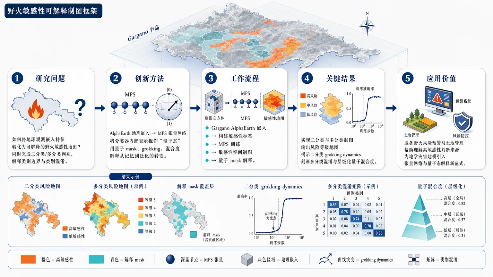
研究问题如何将地球观测嵌入特征转化为可解释的野火敏感性地图：面向 Gargano 地区，既要完成野火敏感性的二分类/多分类判别，又要揭示模型在训练中如何形成类别边界、为何产生类别混淆。创新方法将 AlphaEarth 地理嵌入输入量子启发的矩阵乘积态 MPS 模型，用张量网络压缩和表达区域环境特征；核心 Aha 点是把分类器内部表示视作“量子态”，通过可解释的量子 mask、grokking 训练转变和类别混合度来观察模型如何从记忆走向泛化、如何区分不同野火敏感性等级。工作流程输入 Gargano 区域的 AlphaEarth 嵌入特征 → 构建野火敏感性二分类或多分类标签 → 将高维地理特征送入 MPS 张量网络 → 训练得到敏感性分类结果 → 生成野火敏感性空间制图 → 叠加量子 mask 解释关键判别区域/特征 → 在二分类中分析 grokking 动态，在多分类中分析类别混淆与分层混合度。关键结果该框架实现了 Gargano 地区野火敏感性的二分类与多分类制图；模型不仅输出敏感性类别地图，还提供量子 mask 形式的可解释线索；研究观察并分析了二分类训练中的 grokking dynamics，并在多分类任务中进一步刻画类别混淆和层级化量子混合度。摘要未报告具体精度、基线对比或显著性数值。应用价值为野火风险预警和土地管理提供一种可解释的空间分类工具：能够把遥感/地理嵌入转化为风险等级地图，同时帮助决策者理解哪些区域或表征推动了高敏感性判断；也为地学灾害建模引入张量网络、量子态解释和训练动力学分析的新范式。核心概览
论文提出量子启发张量网络方法，结合 AlphaEarth 嵌入与矩阵乘积态，用于 Gargano 野火敏感性分类制图。
方法要点
- 使用 AlphaEarth 嵌入作为野火敏感性建模的输入特征。
- 采用矩阵乘积态（Matrix Product State, MPS）作为核心机器学习模型。
- 将任务设置为野火敏感性的二分类与多分类。
- 引入可解释的“量子 mask”以辅助理解模型判别机制。
- 在二分类场景中分析模型训练过程中的 grokking 转变。
- 在多分类场景中分析类别混淆与“分层混合度”。
- 案例区域为 Gargano 地区；具体数据规模、标签构造和训练细节摘要未详述。
关键结果
- 摘要明确称该框架被用于 Gargano 地区野火敏感性二分类和多分类映射。
- 摘要表明模型包含可解释的量子 mask，用于提升或分析可解释性。
- 摘要指出作者观察或分析了 binary 情况下的 grokking dynamics。
- 摘要指出多分类任务中进一步研究了类别混淆与分层混合度。
- 摘要未给出分类精度、对比基线、消融实验或统计显著性等具体结果。
创新性判断
- 可能的新颖点在于将量子启发张量网络，特别是 MPS，引入野火敏感性制图任务；但摘要未说明是否首次。
- 结合 AlphaEarth 嵌入与张量网络模型用于地学灾害分类，可能体现跨领域方法融合的新意。
- “量子 mask”作为可解释机制，可能区别于常规遥感/地理机器学习中的特征重要性方法，但其具体形式摘要未详述。
- 对二分类 grokking 转变和多分类量子混合度/类别混淆的分析，显示论文不仅关注预测性能，也关注表征与训练动力学；其理论深度需全文确认。
-
21
📄 摘要：在 V1/3NbS2 单晶中，X 射线/中子衍射、输运和磁化测量区分出两种多型体。不同三角磁性离子层堆垛导致磁化易轴和反常霍尔响应显著不同；非弹性中子散射的自洽分析表明 RKKY 相互作用呈振荡并延伸至约 1 nm。
📖 英文原文
arXiv:2607.25213v1 Announce Type: new Abstract: We report profound impacts of the stacking sequence of triangular lattices of magnetic transition metal ions intercalated between the layers of the van der Waals material NbS₂. Using single crystal x-ray and neutron diffraction, and transport and magnetization measurements, we show there are two distinct polytypes of m̊ V₁/₃NbS₂ with disparate easy axes of magnetization and different anomalous Hall responses. Self-consistent analysis of inelastic neutron scattering data provides evidence for oscillatory RKKY interactions that extend to 1 nm and stabilize quasi-collinear A-type altermagnetic orders in both polytypes though with perpendicular easy axes. The detailed stacking sequence of a bulk polytype crystal dramatically impact its macroscopic anomalous Hall response and magnetism, which suggests a new path to engineer the bulk properties of a layered three dimensional solid.
💡 亮点：V1/3NbS2 的交替磁响应由层间堆垛强烈重塑，两种多型体给出不同易轴与反常霍尔效应。约 1 nm 的振荡 RKKY 耦合把范德华堆垛工程与交替磁输运直接联系起来。
-
22
📄 摘要：针对二维反铁磁 MnPS3，群论将交错磁矩分解为不可约表示，并结合第一性原理计算反对称康普顿散射信号。该方法探测磁电多极矩，可识别 Néel 矢量的翻转与连续旋转，绕开依赖有限净磁化的常规磁成像限制。
📖 英文原文
arXiv:2607.25418v1 Announce Type: new Abstract: We demonstrate that antisymmetric Compton scattering can detect both the switching and the continuous rotation of the Néel vector in two-dimensional (2D) antiferromagnets. By probing magnetoelectric (ME) multipoles, which couple electric and magnetic dipoles, this approach overcomes the limitations of conventional techniques that rely on a finite net magnetization. Using a group-theoretical decomposition of the staggered moments in 2D MnPS₃ into irreducible representations, combined with first-principles calculations, we show that the antisymmetric Compton profile (ACP) is highly sensitive to the Néel vector orientation: it reverses sign under Néel vector reversal and exhibits distinct anisotropies under in-plane rotation. These results establish the ACP as a versatile probe of antiferromagnetic (AFM) order and magnetoelectric phenomena in van der Waals materials.
💡 亮点：反对称康普顿散射被用于直接读出 MnPS3 的 Néel 矢量方向。通过磁电多极矩而非净磁化成像，为二维反铁磁器件的电控读出提供了可计算验证的方案。
-
23
📄 摘要：在层状铁电 Bi4Ti3O12 中，利用三线性耦合实现极化态的垂直切换：标准面外电场不仅调控面外分量，还可操纵面内极化分量。该机制突破传统器件几何对横向极化写入的限制，适用于层状铁电薄膜极化工程。
📖 英文原文
Nature, Published online: 29 July 2026; doi:10.1038/s41586-026-10839-3 Perpendicular switching of the polarization state in the layered ferroelectric Bi4Ti3O12 is demonstrated by means of trilinear coupling, allowing manipulation of the in-plane polarization component with an out-of-plane electric field.
💡 亮点：Bi4Ti3O12 通过三线性耦合把面外电场转换为面内极化控制。该结果使横向铁电态可由常规垂直电极写入，直接面向可集成铁电器件。
-
24
📄 摘要：该新闻与评述解读 Bi4Ti3O12 层状铁电薄膜中的非常规极化控制。水平与垂直电极化之间的耦合允许用标准器件几何操控横向偶极方向，核心在于面内和面外极化自由度并非相互独立。
📖 英文原文
Nature, Published online: 29 July 2026; doi:10.1038/d41586-026-02127-x Coupling between horizontal and vertical electric polarization enables an unconventional ferroelectric material to be controlled using standard device geometry.
💡 亮点：Bi4Ti3O12 薄膜中横向电偶极可由垂直电场间接控制。该耦合机制把复杂铁电极化纹理纳入标准电极结构，利于器件化读写。
-
25
📄 摘要：采用多层模型研究反铁磁和交替磁薄膜的偶极-交换自旋波，每层同时包含两个子晶格。纯偶极自旋波色散与已知单轴反铁磁结果吻合，并进一步给出交换耦合、偶极相互作用和薄膜几何共同决定的模式结构。
📖 英文原文
Author(s): Zhidie Mi and Ka Shen We present a theoretical study of dipolar-exchange spin waves in antiferromagnetic and altermagnetic thin films using a multilayer model in which both sublattices coexist within the same layer. The calculated dispersion of pure dipolar spin waves agrees well with the established results for uniaxial… [Phys. Rev. B 114, 014427] Published Wed Jul 29, 2026
💡 亮点：多层双子晶格模型统一处理反铁磁与交替磁薄膜的偶极-交换自旋波。该理论为薄膜交替磁的低能磁振子谱和微波响应建模提供了基准。
-
26
📄 摘要：在室温磁电反铁磁 BiFeO3 中，观察到自旋旋摆的介观液晶式组织。铁电畴壁充当锚定界面，局域选择旋摆传播矢量，类似液晶中表面诱导取向；边界、限域和弹性能量竞争塑造隐藏有序纹理。
📖 英文原文
Liquid crystals (LCs) provide a canonical framework to understand intermediate phases between liquids and crystals, such as nematic and smectic order, and the rich phenomenology that emerges when such orders are subjected to boundaries, confinement, and elastic frustration. Here, we reveal a hidden mesoscale liquid-crystal-like organization of spin cycloids in a room-temperature magnetoelectric antiferromagnet BiFeO3. It is observed that ferroelectric domain walls act as anchoring surfaces, locally selecting cycloid propagation vectors analogous to surface induced alignment in LCs. Interestingly, confinement imposed by multiple domain walls stabilizes coherent smectic-like cycloidal order in between domain walls through “order by confinement”, while geometrical frustration at domain boundaries induces non-local Helfrich-Hurault–type elastic instabilities in cycloid smectics. Building on these insights, we show that surface-energy engineering dramatically enhances the long range orientational coherence of spin cycloids, enabling robust non-local magnon transport in the ultra-thin limit. These findings establish self-organization as a guiding principle for engineering novel magnetic textures and emergent spin functionalities, opening new opportunities for spintronic and magnonic technologies.
💡 亮点：BiFeO3 的自旋旋摆在畴壁约束下形成类似液晶的介观有序。该现象把铁电畴壁、非共线反铁磁和软物质中的锚定物理连接起来。
-
27
📄 摘要：作者回应关于二维/三维含任意自旋轨道劈裂电子气中铁磁量子临界点不稳定性的评论，承认热力学势非解析性在金属铁磁量子相变中重要，并澄清其原文关注的基态对称性与自旋轨道劈裂情形下的适用范围。
📖 英文原文
Author(s): Dmitry Miserev, Daniel Loss, and Jelena Klinovaja We reply to the Comment by D. Belitz and T. R. Kirkpatrick on our article “Instability of the ferromagnetic quantum critical point and symmetry of the ferromagnetic ground state in 2D and 3D electron gases with arbitrary spin-orbit splitting.” They correctly point out that nonanalyticities in the th… [Phys. Rev. B 114, 026402] Published Wed Jul 29, 2026
💡 亮点：回应明确接受非解析费米液体效应对铁磁量子临界性的约束。争论焦点转向自旋轨道劈裂电子气中基态对称性分析的边界条件。
-
28
📄 摘要：评论指出，洁净金属量子铁磁体通常因费米液体软模产生长程关联而发生一阶量子相变，从而避开预期的量子临界点。该意见针对含任意自旋轨道劈裂二维/三维电子气中铁磁量子临界点不稳定性与基态对称性的讨论。
📖 英文原文
Author(s): D. Belitz and T. R. Kirkpatrick Metallic quantum ferromagnets in the absence of quenched disorder are known to generically undergo a first-order quantum phase transition, avoiding the quantum critical point that had originally been expected. This is due to soft modes in the underlying Fermi liquid that lead to long-ranged correlat… [Phys. Rev. B 114, 026401] Published Wed Jul 29, 2026
💡 亮点：Belitz 与 Kirkpatrick 强调洁净金属铁磁量子临界点的非解析修正不可忽略。该评论要求含自旋轨道耦合电子气的铁磁相变理论纳入费米液体软模。
-
29
📄 摘要：对中心对称共线反铁磁表面进行对称性分析和第一性原理计算。表面反演对称性破缺会解除 PT 联合对称保护，在无相对论机制下产生 d 波自旋劈裂，即表面交替磁性，使体相非交替磁材料也可在表面显现交替磁特征。
📖 英文原文
Author(s): Ersoy Şaşıoğlu, Ingrid Mertig, and Samir Lounis Broken inversion symmetry at the surfaces of centrosymmetric collinear antiferromagnets lifts the combined inversion and time-reversal symmetry (PT) and can enable nonrelativistic d-wave spin splitting, termed surface altermagnetism. Combining symmetry analysis with first-principles calculations… [Phys. Rev. B 114, L020406] Published Wed Jul 29, 2026
💡 亮点：中心对称反铁磁表面因反演破缺可出现 d 波交替磁自旋劈裂。该结果把交替磁性从体相对称性扩展到表面与界面工程。
-
30
📄 摘要：利用高场电子自旋共振研究交替磁 α-MnTe 的低能自旋波。在特定实验几何中，原 Goldstone 模式获得由磁场调控的能隙；共振线宽呈普适 ν/T 行为，指向热辅助磁振子-磁振子碰撞主导的弛豫机制。
📖 英文原文
Author(s): K. Yu. Povarov, J. Wosnitza, S. Rößler, M. Schmidt, A. A. Tsirlin, and S. A. Zvyagin The altermagnetic material α -MnTe and its magnetic properties have been attracting a lot of attention recently. Here, the authors investigate the low-energy spin-wave mode in an applied magnetic field utilizing electron spin resonance spectroscopy. In a specific geometry of the experiment, the spin-wave Goldstone mode acquires a gap, controlled by the magnetic field. The universal ν / T behavior of the resonance linewidth suggests thermally assisted magnon-magnon collisions as the key magnetic relaxation mechanism in α -MnTe. [Phys. Rev. B 114, L020407] Published Wed Jul 29, 2026
💡 亮点：高场 ESR 解析 α-MnTe 中可由磁场开隙的赝 Goldstone 模式。ν/T 线宽标度为交替磁低能磁振子相互作用提供了实验约束。
-
31
📄 摘要：针对单层铁磁 1T′-MoS2 结，分析可用于自旋电子学和谷电子学的输运极化状态。器件目标是获得两个清晰可寻址的自旋-谷极化态；材料的铁磁性、单层二维能带和结结构共同决定可控极化输出。
📖 英文原文
Author(s): J. G. Rojas-Briseño, A. Astrain-Ortega, Y. Y. Huamani-Tapia, S. Molina-Valdovinos, and I. Rodríguez-Vargas Several studies propose two-dimensional (2D) materials as candidates for spintronic and valleytronic devices. The capability to access two well-defined spin-valley polarization states is the main factor for a good spin-valleytronic device. Each 2D material possesses certain characteristics that can … [Phys. Rev. B 114, 065429] Published Wed Jul 29, 2026
💡 亮点：铁磁 1T′-MoS2 单层结被作为自旋-谷过滤平台分析。两个可区分极化态是其面向自旋谷电子器件的关键指标。
-
32
📄 摘要：理论分析反铁磁中的 Néel 自旋轨道力矩，其来源为电场诱导的巡游电子交错自旋极化。除传统对称性要求外，非对称散射可产生所需响应，为共线反铁磁中电流驱动 Néel 矢量翻转提供新的微观机制。
📖 英文原文
Author(s): Sayan Sarkar and Amit Agarwal Magnetic switching in antiferromagnets relies on Néel spin-orbit torque (NSOT), which originates from an electric-field-induced staggered spin polarization of itinerant electrons. In collinear antiferromagnets, such a response requires the spin susceptibility to be odd under combined space-time inve… [Phys. Rev. B 114, 045434] Published Wed Jul 29, 2026
💡 亮点：非对称散射被证明可在反铁磁中诱导 Néel 自旋轨道力矩。该机制扩展了电流写入共线反铁磁的材料与散射工程空间。
-
33
📄 摘要：Fermi Sets 是具有可证明通用性的费米子波函数神经网络。通过变分蒙特卡洛能量最小化系统扩展网络规模，再以固定相扩散蒙特卡洛评估优化波函数；随网络增大，变分能降低，DMC 额外能量改进单调趋零，显示向相互作用基态收敛。
📖 英文原文
arXiv:2607.25872v1 Announce Type: new Abstract: In this work, we show that Fermi Sets---a provably universal neural network architecture for fermionic wavefunctions---can be systematically scaled up to find interacting ground states through energy minimization in a variational Monte Carlo framework. By further performing fixed-phase diffusion Monte Carlo (DMC) on the optimized neural network wavefunction, we demonstrate that as the network size increases, the variational energy systematically decreases while the energy improvement from DMC collapses monotonically to zero, indicating convergence to the ground state. We illustrate the scaling of Fermi Sets accompanied by the DMC assessment for interacting electrons in jellium and in a quantum dot under high magnetic fields.
💡 亮点：Fermi Sets 的可扩展性通过 VMC 与固定相 DMC 双重检验。DMC 残余改进趋零给出神经费米波函数逼近相互作用基态的强证据。
-
34
📄 摘要：提出由 PSFD 方程训练的物理约束神经算子，用于 EUV 光刻电磁散射。傅里叶神经算子分解为二维横向 xy 分支和一维轴向 z 分支，并与背景分解自洽训练，保留掩模与多层膜的全矢量耦合，避免有限阶 Born 近似。
📖 英文原文
arXiv:2607.25330v1 Announce Type: new Abstract: We present a physics-informed neural operator (PINO) trained with pseudo-spectral frequency-domain (PSFD) equations for electromagnetic (EM) scattering problems in EUV lithography. The Fourier neural operator is factorized into a two-dimensional lateral (xy) branch and a one-dimensional axial (z) branch and is trained self-consistently with background decomposition.Thus, the full-vector coupling between the mask and the multilayer response is retained without invoking a finite-order Born approximation. In this way, the computational domain size is significantly reduced, thereby lowering the computational cost. The PINO is trained on approximately 16,000 mask designs from the LithoBench library sampled randomly at each training iteration without using precomputed EM field solutions. The PINO surrogate model yields predictions with a mean absolute error of about 7 × 10⁻³ for the scattered intensity of held-out mask patterns relative to the reference PSFD solution. Combined with spectral damping, the PINO warm-start initialization accelerates the background-decomposed PSFD solver on finer discretizations.
💡 亮点：该 PINO 以 PSFD 方程热启动三维 EUV 掩模散射求解。xy/z 分解与背景分解兼顾全矢量耦合和可扩展仿真。
-
35
📄 摘要：DeepHartree 用 E(3) 等变网络预测连续实空间 Hartree 势，并通过泊松方程连接到 LCAO 电子结构。该框架绕开传统 DFT 中构造库仑项和反复 SCF 迭代的高成本，同时避免矩阵学习输出受固定轨道基维度与约定限制。
📖 英文原文
arXiv:2604.22669v4 Announce Type: replace Abstract: Linear-combination-of-atomic-orbital (LCAO) density functional theory (DFT) incurs steep costs when it constructs Coulomb terms and iterates the self-consistent field (SCF) equations. Matrix-learning approaches can bypass parts of this workflow, but their outputs inherit the dimensions and conventions of a fixed orbital basis. We introduce DeepHartree, a Poisson-coupled neural field that connects continuous real-space prediction to LCAO electronic structure. An E(3)-equivariant network predicts the Hartree potential, and the Poisson equation converts this potential into electron density. Atom-centred Gaussian fields resolve the near-nuclear region, while a molecule-level correction enforces the electron count. Numerical quadrature assembles the Kohn--Sham matrix. One diagonalization recovers energy components, frontier levels, and occupied subspaces and produces the density matrix used for SCF initialization. The molecular mean weighted normalized mean absolute error (wNMAE) is 0.361% on QM9 and 1.397% on the chemically broader VQM24 dataset. Our Hybrid7 scheme uses a seven-point finite difference to obtain the learned local density and first-order automatic differentiation to obtain its gradient. It avoids higher-order differentiation graphs, runs 1.33--1.37 times faster than full automatic differentiation, and remains stable for systems approaching 1,000 atoms. Without fine-tuning, the QM9 model attains a total-energy MAE of 15.601~meV atom⁻¹ on 1,000 larger OE62 molecules. DeepHartree initial guesses reduce SCF iterations for 88.62% of QM9 test molecules, with a 14.5% mean reduction. These results establish continuous electrostatic fields as an accurate and scalable interface between machine learning and LCAO DFT.
💡 亮点：DeepHartree 把等变神经场、泊松方程和 LCAO DFT 直接耦合。它以连续 Hartree 势替代部分 SCF 流程，瞄准一步式电子结构预测。
-
36
📄 摘要：面向夏季常超过 45 ℃的热干地区低收入乡村住房，建立低成本本土墙材热渗透排序框架。先用验证过的 Crank-Nicolson 有限差分求解一维瞬态传热，再以物理约束神经算子加速评估泥砖、黏土秸秆土坯、石灰稳定竹板、烧结黏土砖和石灰泥复合材料。
📖 英文原文
arXiv:2607.25668v1 Announce Type: cross Abstract: Identifying cost-effective indigenous building materials that minimise heat penetration through walls is critical for indoor thermal comfort in low-income rural housing in hot-dry climates, where summer temperatures routinely exceed 45 C. We present a two-stage computational framework for thermal ranking of five low-cost indigenous wall materials: mud brick, clay-straw adobe, lime-stabilised bamboo panel, fired clay brick, and lime-mud composite. First, a validated Crank-Nicolson finite difference method (FDM) solves the one-dimensional transient heat equation with Robin boundary conditions under diurnal solar and outdoor air-temperature forcing, generating 1500 periodic-day solutions across a nine-dimensional parameter space by Latin Hypercube sampling. Second, a Physics-Informed Neural Operator (PINO) with a Fourier Neural Operator (FNO) backbone learns the parameter-to-solution operator mu -> T(x,t), enforcing both data fidelity and PDE consistency. The trained PINO attains a relative L2 field error of 5.14e-4 and a 0.201 K mean absolute error on the peak inner surface temperature, preserving the FDM material ranking exactly; PINO trained on 150 FDM samples matches a data-only FNO trained on twice as many, so the physics loss is most valuable when data are scarce. The periodic-day formulation also yields the ISO 13786 time lag and decrement factor, reproduced to within 0.99 h and 0.010. At nominal hot-dry summer conditions, clay-straw adobe achieves the best cost-performance index among widely available materials. A climate sweep, confirmed by FDM spot checks, reveals a regime boundary: under sub-ambient outdoor conditions the ranking inverts to conductive fired clay brick, delineating heat-exclusion and heat-rejection regimes. The framework supports evidence-based material selection for post-flood reconstruction in hot-dry regions.
💡 亮点：有限差分与物理神经算子结合，用于五类本土墙材的瞬态隔热排序。该流程体现了科学机器学习在低成本材料筛选中的可部署价值。
-
37
📄 摘要：面向地幔热状态重建，将数值求解器替换为学习函数空间映射的神经算子，以处理正向对流模拟和反向恢复早期地质时刻热结构。该方法针对传统热状态重建计算昂贵的问题，服务于地幔演化、地震层析图像与地表观测关联分析。
📖 英文原文
arXiv:2601.23178v2 Announce Type: replace Abstract: Thermal state reconstruction--reversing convection to recover the thermal structure of the mantle at an earlier geologic time--is an important tool to understand the evolution of mantle convection and its relation to seismic tomographic images and observations at the surface. Thermal state reconstructions are computationally expensive. Here we transformed the basic computational element, numerical solvers, into neural operators, a class of machine learning models for learning mappings between function spaces. Focusing on a specific architecture, Fourier Neural Operators, we demonstrate that they can represent not only a surrogate model like the Stokes system of equations using a purely physics informed approach, but also discover operators without explicit mathematical formulations or even ill-posedness from data, including the direct mapping between two convecting thermal states separated by a long time interval much larger than the Courant-Friedrichs-Lewy condition and its reversal. These neural operators significantly accelerate forward and inverse convection modelling by transforming forward physical processes into surrogate models with lower complexity while utilizing auto-differentiation to calculate gradients. With this framework, we demonstrate the strengths and weaknesses of four methods for thermal state reconstructions: reverse buoyancy, reverse convection operator, an inversion with only the terminal thermal state, and a joint inversion with the terminal thermal state and surface velocity evolution. The reverse convection operator is shown to perform poorly in the presence of observational noise, but the joint inversion overcomes this limitation. The joint technique could probably become a solution to large-scale thermal state inversion problems using seismic tomography and plate tectonic reconstructions.
💡 亮点：神经算子被用于替代地幔对流正反演中的核心数值求解器。它把热状态重建从逐步高成本模拟转向函数映射学习。
-
38
📄 摘要：提出物理约束宽度学习系统 PI-BLS，用于求解偏微分方程。与依赖深层结构和梯度优化的 PINN 不同，PI-BLS 基于宽度随机神经网络，避免反向传播，目标是降低训练时间和计算成本并改善可扩展性。
📖 英文原文
arXiv:2607.25608v1 Announce Type: new Abstract: Physics-informed neural networks (PINNs) have emerged as a powerful paradigm for solving partial differential equations (PDEs) by embedding governing physical laws into deep neural networks. However, their reliance on computationally expensive gradient-based optimization and deep architectures often results in slow training, high computational cost, and limited scalability. In this work, we propose a novel physics-informed broad learning system (PI-BLS), the first physics-informed learning framework based on broad RdNNs. The proposed formulation embeds the governing differential operator and the associated initial and boundary constraints directly into a linear output-layer optimization problem, thereby replacing nonlinear gradient-based training with a deterministic least-squares solution obtained via the pseudoinverse. Consequently, the entire learning process is reduced to a single linear optimization stage while preserving the underlying physical constraints. As a result, PI-BLS offers an efficient learning paradigm for a physics-informed learning framework for solving PDEs that eliminates iterative backpropagation while preserving the underlying physical constraints. Experimental results on representative forward PDE benchmarks demonstrate that PI-BLS achieves competitive and often superior performance with reduced training time and model parameters compared with conventional PINNs.
💡 亮点：PI-BLS 将物理约束学习从深 PINN 转向无反向传播的宽度网络。该框架适合需要快速训练的 PDE 代理求解场景。
-
39
📄 摘要：建立高通量框架，结合结构弛豫、第一性原理电子结构和莫尔能带拓扑分析。对 43 种已实验实现的单层材料和 91 个对称不等价双层原型生成超过 1000 个角度分辨莫尔能带结构，用于梳理扭转二维半导体中平带与拓扑的材料规律。
📖 英文原文
arXiv:2607.25172v1 Announce Type: new Abstract: Twisted two-dimensional semiconductors provide a route to flat and topological moiré minibands, but systematic principles for organizing their material dependence have remained unclear. Here, we establish a high-throughput framework that integrates structural relaxation, first-principles electronic structure calculations, and moiré band topology. We apply this framework to 43 experimentally realized monolayers and 91 symmetry-inequivalent bilayer prototypes, yielding over 1,000 angle-resolved moiré electronic band structures. This database reveals that the low-energy moiré electronic structure is organized primarily by the valley character of the parent band edge together with stacking symmetry. In Γ-valley systems, the miniband width usually follows a nearly quadratic twist-angle scaling, consistent with a folding-dominated kinetic-energy scale. In K-valley systems, stacking-controlled interlayer hybridization governs whether parent Berry curvature is redistributed into isolated valley Chern minibands. By contrast, M-valley systems form a more material-specific class associated with anisotropic and symmetry-constrained band folding. The same valley-and-stacking hierarchy rationalizes the emergence or suppression of Z₂ minibands, and surface termination in Janus bilayers provides a microscopic knob for changing the relevant valley character. These results establish a materials-level organizing principle for designing flat and topological moiré bands in twisted semiconductors.
💡 亮点：该目录以千级角度分辨计算系统整理扭转半导体莫尔拓扑能带。它为从材料选择到扭角设计寻找平坦拓扑 miniband 提供数据基础。
-
40
📄 摘要：在偶极-八极烧绿石 Ce2Hf2O7 上进行低温磁化和磁致伸缩测量。B∥[111] 时未见 kagome-ice 平台，磁化连续演化，并在约 0.35 T 和 1.2 T 出现两次斜率快速变化，磁致伸缩同步异常；蒙特卡洛、精确对角化和基态分析支持场诱导多色 kagome 自旋液体图像。
📖 英文原文
arXiv:2509.09189v2 Announce Type: replace Abstract: We report low-temperature magnetization and magnetostriction measurements on the dipole-octupole pyrochlore Ce₂Hf₂O₇, revealing an unconventional field response for mathbf Bparallel[111]. The magnetization shows no kagome-ice plateau; instead it evolves continuously and exhibits two rapid changes in slope near 0.35~T and 1.2~T, accompanied by magnetostriction features at the same field scales. Classical Monte Carlo simulations, exact diagonalization, and ground-state analysis of the Hamiltonian show that a representative QSI-compatible parameter set captures the data. For this parameter set, the lower-field anomaly marks a closely spaced transition sequence from a two-color kagome spin liquid (KSL) through a narrow three-color KSL into a mixed two-/three-color KSL, while the upper-field anomaly marks the transition from the mixed KSL into a nearly polarized state. These results identify Ce₂Hf₂O₇, and dipole-octupole pyrochlore magnets more broadly, as promising platforms for exotic KSLs beyond conventional spin ice.
💡 亮点：Ce2Hf2O7 在 [111] 磁场下偏离常规 kagome-ice 平台，出现 0.35 T 与 1.2 T 两个特征场。实验与数值共同指向多色 kagome 自旋液体。
-
41
📄 摘要：针对范德华双层莫尔平带，提出超越六角晶体 Γ、K 及 M 谷图像的分类变量：单层带边动量位置、有效局域轨道特征、莫尔对称性与能带对称表示。结合全弛豫第一性原理与低能哈密顿量，给出不同材料中涌现莫尔能带的统一组织方式。
📖 英文原文
arXiv:2607.24944v1 Announce Type: new Abstract: Moiré flat bands in van der Waals bilayers are usually discussed through a small set of mechanisms associated with the Γ and K valleys of hexagonal crystals, and more recently with M-valleys systems. Here we show that this view is incomplete. The momentum-space location and effective local orbital character of the monolayer's band edge, in conjunction with the moiré symmetry and the symmetry representations of the resulting bands, provide a general set of organizing variables for the emergent low-energy moiré Hamiltonian. Applying fully relaxed first-principles calculations, band unfolding and symmetry-representation analysis to more than 600 commensurate twisted bilayers spanning all 2D lattice classes, we identify several routes to moiré quantum matter beyond the conventional single-orbital paradigm. The resulting flat bands realize trigonal, honeycomb, square, checkerboard and kagome-like Hubbard models with single-orbital, multi-orbital and multi-site Hilbert spaces; spin-orbit-coupled multi-orbital flat bands exhibit symmetry-indicated topology beyond the conventional K-valley setting; and nonsymmorphic moiré symmetries enforce semimetallic flat-band connectivity. Analogous quasi-one-dimensional flat-band structures are found in M-valley hexagonal systems and X-valley square or rectangular systems resulting from emergent momentum-space nonsymmorphic symmetries. Separately, coupled multi-valley manifolds with kagome-like connectivity are identified in several systems whose parent band edges lie at non-high-symmetry points. These results establish a valley-orbital-symmetry framework for connecting parent-material electronic structure to emergent moiré Hamiltonians relevant to correlated, topological and symmetry-enforced moiré phases.
💡 亮点：把莫尔平带从少数能谷机制推广到“动量位置—轨道—对称表示”框架。该分类可直接指导范德华双层低能模型构建与新莫尔候选材料筛选。
-
42
📄 摘要：研究三角晶格 Kitaev 莫特绝缘体的空穴和电子掺杂。均匀 parton 平均场给出 K>0 条纹反铁磁与 K<0 铁磁在足够大掺杂下消失，并分别出现手性 d±id 单态配对与 p±ip 三态配对区域；张量网络计算则检验这些超导倾向的稳健性。
📖 英文原文
arXiv:2508.16720v2 Announce Type: replace Abstract: Motivated by exploring correlated metals with frustrating bond-dependent exchange interactions, we study hole and electron doped Kitaev Mott insulators on the triangular lattice. Using homogeneous parton mean field theory, we find that the stripe antiferromagnetic (AFM) order for Kitaev coupling K>0 and the ferromagnetic (FM) order for K<0, both vanish at sufficiently large doping, beyond which we find regimes with chiral d± i d singlet pairing and p± ip triplet pairing respectively. Our tensor network computations however reveal that the superconducting correlations are strongly suppressed; while FM order stubbornly persists for the doped K<0 model, the doped K>0 model features emergent spin-charge modulated stripe orders. At higher hole doping for K > 0, where AFM order is more strongly suppressed than for the electron doped case, incorporating a sufficiently strong nearest-neighbor attraction yields evidence for singlet d-wave superconductivity with Luttinger parameter Kₘ̊ ₛc < 1. Our work sets the stage for a broader exploration of doping effects in triangular lattice magnets such as NaRuO₂ which feature bond-dependent exchange interactions.
💡 亮点：三角 Kitaev 磁体掺杂后可能进入手性 d 波或手性 p 波配对通道。平均场与张量网络的对照揭示，受挫键依赖交换中的超导并非只由简单金属化决定。
-
43
📄 摘要：讨论干净、无涡旋超导态中 Bogoliubov 准粒子 Berry 曲率导致的本征能斯特响应。二维 Ising 自旋轨道耦合体系中，区分谷间 s 波配对与谷内手性 p 波配对两类情形：前者需弱磁场激活，后者可由手性配对产生响应，适用于过渡金属二硫族化物平台。
📖 英文原文
arXiv:2509.26638v2 Announce Type: replace Abstract: The Nernst effect in superconductors is typically linked to fluctuating Cooper pairs above T_c or vortex motion below T_c. We show instead that Berry curvature of Bogoliubov quasiparticles can generate an intrinsic Nernst response in a clean, vortex-free superconducting state. Focusing on two-dimensional systems with Ising spin-orbit coupling, relevant to transition-metal dichalcogenides, we identify two regimes: an intervalley s-wave paired state where a weak magnetic field activates the effect, and an intravalley chiral p-wave paired state that exhibits a spontaneous charge or spin Nernst response without a field. We propose an experimental setup that circumvents screening and provide estimates of the signal magnitude. Our results establish the Nernst effect as a direct probe of Berry curvature and pairing symmetry in two-dimensional spin-orbit-coupled superconductors.
💡 亮点：能斯特信号不必来自涡旋或库珀对涨落，也可由超导准粒子的 Berry 曲率产生。该机制为 TMD 超导体中识别谷配对与手性配对提供热电探针。
-
44
📄 摘要：系统建模未应变体锗双量子点空穴自旋与超导微波谐振腔耦合，并与应变锗异质结构比较。体锗可达到强耦合区，估计自旋-光子耦合强度 gs/2π ≥100 MHz；增强来自非微扰区的大自旋轨道相互作用，同时耦合对器件调控具有可优化性。
📖 英文原文
arXiv:2607.24967v1 Announce Type: new Abstract: Unstrained bulk germanium is a particularly attractive material for circuit quantum electrodynamics with spins (spin-cQED). We show, through systematic modeling and comparison with state-of-the-art strained germanium heterostructures, that hole spins in bulk germanium double quantum dots readily reach the strong-coupling regime with superconducting microwave resonators, achieving spin-photon coupling strengths gₛ/2πgtrsim100,MHz. This enhancement originates from large spin-orbit interactions beyond the perturbative regime. In addition, the coupling is much less sensitive to the orientation of the applied magnetic field, which shall ease operation and limit the impact of device-to-device variability. Our results establish bulk germanium as a compelling platform for scalable spin-cQED.
💡 亮点：未应变体锗空穴量子位被预测可实现超过 100 MHz 的自旋-光子耦合。体材料平台可能简化锗自旋 cQED 器件并强化远程量子互连。
-
45
📄 摘要：研究二维单味金属中非平庸量子几何与外加条纹势对弱接触吸引超导的影响。强条纹势、最低子带和准一维极限下解析得到两种配对：沿条纹方向的常规纵向 py 波，以及由量子几何与条纹重构稳定的非常规横向 px 波。
📖 英文原文
arXiv:2607.24905v1 Announce Type: new Abstract: We study how the interplay between nontrivial quantum geometry and an applied stripe potential affects superconductivity in a two-dimensional single-flavor metal. Assuming a weak contact attractive interaction and focusing on the lowest subband in the presence of a strong stripe potential, we analytically derive two possible pairing states in the quasi-one-dimensional limit. In addition to the conventional longitudinal p_y-wave order (with the stripes along the y direction), we find that an exotic transverse pₓ₋wave order can be stabilized. The competition between these two orders is controlled by the electron density of each stripe and the Berry-curvature-dressed interaction. Notably, the transverse pₓ wave order develops a nodal line at kₓ₌₀, while the longitudinal p_y order is fully gapped. We discuss the possible experimental probes distinguishing these orders. Our results establish a way of controlling the pairing symmetry through a stripe potential, predicting superconductivity with nontrivial quantum geometry.
💡 亮点：条纹势不仅使二维金属准一维化，还可借助量子几何选择横向 px 配对。该结果为单味窄带体系中工程化非常规超导通道提供可控旋钮。
-
46
📄 摘要：在含时 Ginzburg-Landau 框架下计算非局域超导涨落对电导张量 σij(q,ω) 的修正，并转化为量子噪声磁ometry信号。单个 NV 传感器的 1/T1 随温度、样品距离和频率变化给出非局域性与动力学对 Tc 附近临界增强的截止尺度；双传感器协方差可探测空间关联。
📖 英文原文
arXiv:2607.24906v1 Announce Type: new Abstract: The nonlocal superconducting fluctuation corrections to the conductivity tensor σᵢⱼ(q,ømega) are calculated within the time-dependent Ginzburg-Landau framework, and their observable consequences for quantum noise magnetometry are worked out. For a single nitrogen-vacancy (NV) sensor we obtain the relaxation rate 1/T₁ as a function of temperature, sample-sensor distance, and probe frequency, identifying the scales at which the nonlocality and the dynamics of the pair fluctuations cut off the critical enhancement near T_c. For two-sensor covariance magnetometry we show that the two-point field correlator develops additional spatial structure whose range directly measures the fluctuation correlation length ξ(T). We further analyze two channels that accompany the paraconductivity: the Maki-Thompson correction to the spin susceptibility, and the fluctuation diamagnetism. Finally, we solve exactly, to all orders in a dc electric field and at all wave vectors, for the nonequilibrium current noise of the fluctuating film: the noise decouples from the nonlinear paraconductivity, violating the fluctuation-dissipation theorem by universal factors at criticality and acquiring a bias-induced spatial anisotropy directly measurable by covariance magnetometry. The results are connected to a recent experiment measuring current noise near a thin film of BSCCO.
💡 亮点：NV 噪声磁ometry可从局域弛豫和双点协方差读出超导涨落的 q、ω 结构。该方案把临界涨落输运从宏观电极测量推进到纳米尺度非局域探针。
-
47
📄 摘要：提出 SpectONet 求解 Euler-Bernoulli 梁振动问题，将 DeepONet 算子学习、物理约束与 Chebyshev-Gauss-Lobatto 传感点结合。相比均匀采样，非均匀谱点在边界附近更密集，可更好捕捉边界条件和振型特征，用于梁动力学算子映射。
📖 英文原文
arXiv:2607.25790v1 Announce Type: new Abstract: This paper proposes a novel physics-guided spectral deep operator network, termed SpectONet, for solving Euler-Bernoulli beam (EBB) vibration problems. The proposed framework integrates the operator-learning capability of DeepONet with physics-informed constraints and Chebyshev-Gauss-Lobatto (CGL) sensor placement. Unlike conventional DeepONet frameworks, which commonly employ uniformly distributed sensors, SpectONet uses nonuniform spectral sensor locations with a higher concentration of points near the domain boundaries. This sampling strategy improves the finite-dimensional representation of boundary-sensitive structural responses while requiring only a limited number of branch-network inputs. The governing beam equation, together with the associated initial and boundary conditions, incorporated into the training objective to promote physically consistent and generalizable predictions. Numerical experiments on three synthetic EBB vibration problems and a real-world bridge vibration dataset demonstrate the effectiveness of the proposed framework. Comparisons with strong baselines such as, Vanilla DeepONet, PI-DeepONet, PINN, and CNN-UNet show that SpectONet consistently achieves lower prediction errors across all considered evaluation metrics. In particular, SpectONet achieves at least (64%) improvement over the considered baseline models across the three synthetic problems and at least (37%) for the real-world problems. These results demonstrate that SpectONet provides an accurate, computationally efficient, and physically consistent operator-learning framework for structural vibration analysis.
💡 亮点：SpectONet 用谱传感点替代均匀传感点，将物理约束嵌入梁振动算子学习。该设计对边界敏感结构动力学代理模型尤其有用。
-
48
📄 摘要：扩展一种发育式、无梯度连续学习框架到视觉输入。模型通过局部变异与选择学习离散拓扑结构，新观测只细化已有结构，不需回放缓冲或预定义任务边界，从而避免覆盖旧知识；多尺度结构特征提升可解释视觉识别能力。
📖 英文原文
arXiv:2607.25531v1 Announce Type: new Abstract: Contemporary machine learning struggles to learn continually, reuse prior knowledge, and expose a comprehensible internal structure. A recently proposed developmental, gradient-free learning framework addresses these limitations by learning a discrete, topological model of its inputs through local variation and selection, yielding an inherent continual-learning guarantee: new observations refine existing structure without overwriting past knowledge, and without replay buffers or predefined task boundaries. Its extension to visual inputs demonstrated this principle on shape recognition, but relied on a feature representation of limited expressivity that capped recognition accuracy. We introduce a new visual feature representation that encodes shape structure across multiple scales, capturing edge and contour features together with their spatial relations, and integrate it with the network-refinement learning process; we further improve the learning dynamics and the read-out used to predict from the learned model. The study targets two-dimensional shape, with class-incremental MNIST as a controlled, interpretable benchmark in which continual-learning behavior can be measured directly. Our approach substantially increases accuracy over the prior representation, matching or exceeding replay- and regularisation-based baselines at comparable storage while storing no past data, and preserves the framework's defining behavior: earlier-learned classes are retained as new ones are introduced, with no destructive adaptation, and the learned representations remain human-interpretable. What separates the methods is retention: the baselines surrender most of a just-trained class within its own cycle and relearn it afterwards, which ours does not. The significance lies in the manner of learning. The system integrates information one sample at a time while provably preserving its responses to...
💡 亮点：无梯度发育学习把视觉样本组织成可解释拓扑结构，并支持无任务边界的连续更新。其多尺度表示针对当前深度模型的遗忘与黑箱问题。
-
49
📄 摘要：在陀磁光子晶体中，通过随机取向构成单元陀磁棒的磁化实现带偏置随机通量，对应无序 Haldane 模型。实验观测到由随机通量驱动的拓扑相变，区别于以几何或势能随机性为主的无序拓扑研究。
📖 英文原文
arXiv:2607.25394v1 Announce Type: new Abstract: The interplay between disorder and topological states has attracted growing interest. While previous studies have primarily addressed the effects of geometric or potential randomness, the exploration of topological phase transitions driven by random-flux remains experimentally elusive. Here, we report the first experimental realization of topological phase transitions driven by biased random-flux in gyromagnetic photonic crystals. By stochastically orienting the magnetization of constituent gyromagnetic rods, we implement a disordered Haldane model in which the sign of the next-nearest-neighbor hopping phases is randomly distributed. We demonstrate that the bulk band gap closes when the densities of positive and negative flux are balanced, i.e, restoring time-reversal symmetry in a statistical sense, and reopens when a net positive or negative flux is introduced. Microwave near-field measurements directly visualize the reversal of chiral edge states, confirming a transition between distinct topological phases. Our results establish a unique disorder-driven mechanism for realizing topological phase transitions and deepen our understanding of the interplay between disorder and topological phases in bosonic systems.
💡 亮点：陀磁光子晶体首次实验实现偏置随机通量驱动的拓扑相变。随机磁化取向把 Haldane 型通量无序工程化，为研究无序拓扑边界态提供可控光子平台。
-
50
📄 摘要：面向光子晶体面发射激光器设计，提出 DDSNet 作为耦合波理论的神经代理模型。网络同时利用光子晶体单胞介电图案的谱分量与非对称结构信息，并显式处理对称性，以降低大规模晶格设计空间探索中 CWT 计算成本和物理特征遗漏。
📖 英文原文
arXiv:2607.24785v1 Announce Type: new Abstract: Efficient exploration of the photonic crystal (PhC) lattice design space is essential for developing photonic crystal surface-emitting lasers. While coupled-wave theory (CWT) provides an effective physical framework, its computational cost remains prohibitive for large-scale exploration, driving the demand for neural surrogates. However, existing AI models underexploit two key factors of PhC unit-cell dielectric patterns indicated by CWT: spectral components and asymmetric structures, which largely govern devices' physical properties. This mismatch weakens surrogate accuracy and screening reliability, especially in structure-sensitive regions. To address this, we propose the Dual-Domain Symmetry-Aware Network (DDSNet). It integrates translation-equivariant spectral filtering with a symmetry-induced structural prior. The spectral filtering injects a spectral inductive bias into vision model while preserving translation equivariance on lattices. Meanwhile, the structural prior decomposes lattice features into irreducible representation-associated, symmetry-resolved components and processes them in separate branches. Experiments demonstrate that DDSNet significantly outperforms existing AI baselines in property prediction and high-throughput screening, exhibiting superior reliability in structure-sensitive regions. Crucially, component masking analyses reveal that the network successfully learns property-specific dependencies aligned with physical priors. These results indicate that DDSNet effectively captures physically meaningful structure-property relationships, establishing a highly reliable neural surrogate for PhC design space exploration.
💡 亮点：DDSNet 将频域成分、实空间非对称图案和对称性共同用于 PCSEL 性质预测。该代理模型更贴近耦合波理论，可加速光子晶体激光器反向设计。
-
51
📄 摘要：针对交通流预测中图卷积模型过度依赖静态拓扑和固定时空关系的问题，提出注意力空间-时间融合图卷积网络。模型关注不同区域传播延迟和动态相关性，而不只使用道路拓扑或语义相似性，以提升复杂交通网络中的流量预测。
📖 英文原文
arXiv:2607.24885v1 Announce Type: new Abstract: Predicting traffic flow is crucial to optimizing transportation systems and improving urban mobility. Many graph convolution-based models have been proposed to extract spatial-temporal features and predict traffic flow. However, most focus on spatial-temporal and semantic correlation in topological relationships. There are two primary problems to address. Firstly, the convolutional structure in the model focuses on utilizing static spatial dependencies and spatial-temporal relationships in topological structures, while neglecting the different information propagation delays between adjacent nodes in the convolution. Secondly, these methods often stack a large number of complex structures, resulting in a substantial increase in computational time during the model training phase, thereby disregarding the model's requirements for timeliness. In this paper, we propose a novel network called the Attention-Based Spatial-Temporal Fusion Graph Convolution Network (A-STFGCN). We design a spatial-temporal fusion block to extract the spatial-temporal feature correlations with propagation delay errors removed and to capture both long-term and short-term temporal characteristics of the data within a multi-head self-attention mechanism based on a mask matrix. Extensive experiments on five real-world datasets demonstrate that our method achieves the best overall performance while having good computation and data utilization efficiency compared with the eight baseline methods.
💡 亮点：该图卷积框架用注意力融合动态时空依赖，缓解交通传播延迟带来的预测偏差。方法虽非材料方向，但体现了时空图学习的鲁棒建模趋势。
-
52
📄 摘要：提出用辛奇异值分解识别二次玻色网络中的暗模。该方法把暗模数目和形式求解转化为辛零空间问题，可计算处理大规模二次哈密顿网络，适用于相干网络操控、量子资源转移以及宽参数区间的光学、声子或混合玻色系统。
📖 英文原文
Determining dark modes in quadratic bosonic networks is both fundamental and imperative, since the dark modes are critical to coherent network manipulation and quantum resource transfer, and such networks are applicable to wide parameter regimes and various physical areas. Here, we develop a symplectic singular value decomposition (SSVD) method for identifying the number and form of the dark modes in quadratic bosonic networks. This method maps the emergence of dark modes onto a computationally tractable symplectic null-space problem, enabling their systematic identification in large-scale quadratic bosonic networks.We adopt the SSVD method to study both the collective cooling of multiple mechanical modes and optomechanical entanglement generation in linearized optomechanical networks. We find that the appearance of the dark modes suppresses the cooling performance and entanglement generation. Our work paves the way for engineering dark modes in quadratic bosonic networks, and the SSVD method has wide applicability in quantum physics, quantum information science, and many-body physics.
💡 亮点：辛奇异值分解为二次玻色网络暗模给出系统判据。它把暗模搜索从个案解析推进到可扩展线性代数问题。
-
53
📄 摘要：分析显式使用邻接矩阵或拉普拉斯矩阵进行消息传递的 MPNN 脆弱性。PEANUT 通过特征向量对齐设计小规模拓扑扰动，利用图谱结构改变模型输出，显示依赖拓扑驱动消息传递的 GNN 在安全关键环境中存在高敏感攻击面。
📖 英文原文
arXiv:2603.26136v3 Announce Type: replace Abstract: Message Passing Neural Networks (MPNNs) have achieved strong performance on tasks involving relational data. However, small perturbations to graph structure can significantly alter their outputs, raising concerns about their robustness in real-world deployment in security critical environments. In this work, we study a core vulnerability in MPNNs that explicitly consume graph topology via the adjacency matrix or Laplacian as part of their message passing mechanism. We show that this design choice exposes an extremely vulnerable attack surface, with significant effects even under minimal perturbation. Building on this observation, we propose PEA, a simple, gradient-free, black-box injection attack that requires only a single query to the target model, capitalizing on this vulnerability by constructing a perturbation aligned with a specific significant eigenvector to induce large output deviations. Unlike graph modification attacks, PEA operates under the realistic assumption that adversaries cannot alter the original graph and are limited to injecting new nodes at inference time. PEA requires no iterative optimization, parameter learning, or surrogate models---which require additional training and remain susceptible to differences in model priors and generalization capabilities---thereby avoiding significant computational overhead and the associated transferability challenges. We evaluate PEA on popular benchmark datasets across three graph learning tasks, showing consistent performance degradation under realistic attack constraints despite its simplicity. Our results reveal a fundamental security weakness in topology-driven message passing architectures and urge an implementation shift, as the worst effects of such attacks can be substantially mitigated through appropriate input filtering.
💡 亮点：PEANUT 从图谱特征向量出发构造拓扑扰动，直接攻击 MPNN 的消息传递核心。对材料图网络和分子图模型的鲁棒性评估同样具有警示作用。
-
54
📄 摘要：为 NaCl、KCl、NaCl-KCl 混合物和 NaK 合金构建基于 DFT 数据的矩张量势，支持跨温度和组成的大规模分子动力学。系统比较 D3 色散修正影响，并用于预测多组分熔盐热物性、输运性质与相行为，绕开直接 DFT 的时空尺度限制。
📖 英文原文
arXiv:2607.25022v1 Announce Type: new Abstract: Predicting the properties of multicomponent molten salts using density functional theory (DFT) remains challenging because the spatial and temporal scales required to evaluate transport properties and phase behavior are computationally prohibitive. In this work, we develop a moment tensor potential trained using a a DFT dataset of NaCl, KCl, NaCl-KCl mixtures, and the NaK alloy, enabling large-scale molecular dynamics simulations across wide ranges of temperatures and compositions. We systematically evaluate the effect of D3 dispersion corrections and apply the resulting potential to predict liquid densities, diffusion coefficients, radial distribution functions, heat capacities, thermal conductivities, and the NaCl-KCl phase diagram. The model successfully reproduces many temperature- and composition-dependent trends. However, systematic deviations in several absolute properties persist, highlighting the importance of experimental validation and calibration. These findings support a hybrid modeling framework in which first-principles-informed machine-learning potentials provide transferable predictive capability and mechanistic insight, while experimental data incorporated during model development or subsequent engineering assessments is necessary to improve quantitative accuracy.
💡 亮点：DFT 训练的矩张量势覆盖 NaCl-KCl 熔盐与 NaK 相关组分。它把多组分盐的相行为和输运预测推进到可统计采样的分子动力学尺度。
-
55
📄 摘要：提出 Matryoshka Agent，用层级子智能体处理机器学习工程中的长程决策、调试和迭代优化。框架避免单一智能体同时承受超长噪声上下文、巨大方案空间和有限计算预算，通过展开子任务代理改善反馈驱动环境交互下的工程自动化。
📖 英文原文
arXiv:2607.25090v1 Announce Type: cross Abstract: Machine learning engineering (MLE) tasks require long-horizon decision making over iterative solution debugging and refinement, under expensive and feedback-driven environment interactions. Developing and training a monolithic agent for such tasks is fundamentally challenging, as it must simultaneously manage extremely long and noisy contexts, explore vast solution spaces, and remain effective under limited model capacity and computational budgets. To address these challenges, we propose Matryoshka Agent, a unified hierarchical agent framework for complex long-horizon tasks. Matryoshka Agent decomposes agentic problem solving into a coordinated hierarchy of decision making and execution: a high-level Orchestrator maintains compact, long-horizon exploration states and issues strategic instructions, while lower-level Sub-Agents execute concrete solution attempts through direct environment interaction, mediated by standardized Tool interface. This design decouples strategic exploration from costly execution, substantially reducing the burden of long-context reasoning and enabling efficient iterative refinement. We further develop an efficient training paradigm for Matryoshka Agent. Experimental results on a broad range of MLE tasks with diverse model types and scales demonstrate that Matryoshka Agent is an effective and scalable paradigm for long-horizon MLE tasks and complex agentic problem solving. Notably, Matryoshka Agent enables Qwen3-4B-Instruct to reach Orchestrator performance comparable to o4-mini. Applying Matryoshka Agent to Qwen3-30B-Coder results in at most 36.7% relative performance gain.
💡 亮点：套娃式层级代理把机器学习工程拆成可展开子智能体，面向长程调试与方案细化。该思想可迁移到自动材料建模流水线和科学代码优化。
-
56
📄 摘要：Phys. Rev. X 论文展示从单张高速液滴夹断图像推断液体行为与难测物性的机器学习方法。目标性质包括黏度和表面张力等，利用夹断动力学形貌中编码的流体信息，减少传统多次流变或界面张力测量需求。
📖 英文原文
Author(s): Jingtao Wang, Qiwei Chen, C. Ricardo Constante-Amores, Denise Gorse, Alfonso Arturo Castrejón-Pita, and José Rafael Castrejón-Pita A powerful method allows hard to measure properties like viscosity and surface tension to be determined from a single, high-speed snapshot. [Phys. Rev. X 16, 031021] Published Wed Jul 29, 2026
💡 亮点：单帧高速液滴夹断图像即可反推出黏度和表面张力。该方法把流体动力学瞬态图像转化为材料与液体表征的机器学习输入。
-
57
📄 摘要：考虑核矩阵元素需由噪声观测估计且总测量预算有限的核化 SVM 学习。不同于均匀分配测量次数，该工作把预算分配形式化为与分类器对 Gram 矩阵非均匀敏感性相关的问题，自适应提高关键核条目的估计精度。
📖 英文原文
arXiv:2605.22275v2 Announce Type: replace Abstract: Kernel methods are typically formulated under the assumption of exact, noise-free access to the Gram matrix. However, in emerging settings each kernel entry must be inferred from noisy observations, and its accuracy depends on how a limited measurement budget is allocated. Despite this, existing approaches overwhelmingly rely on uniform allocation, which equalizes estimator variance but ignores the highly non-uniform dependence of kernelized classifiers on the Gram matrix. In this work, we formulate measurement allocation for noisy kernel estimation as a task-aware optimization problem tailored to kernelized Support Vector Machines (SVMs). We derive a variance-aware allocation framework that combines classifier sensitivity with estimator uncertainty, leading to a Neyman-type allocation rule for measurement-based kernels and a Bernoulli specialization relevant to quantum kernel estimation. Building on this analysis, we develop an adaptive measurement allocation strategy that combines margin sensitivity and active set instability, concentrating measurements on the most classifier-relevant regions of the kernel matrix. Theoretical analysis reveals distinct allocation regimes governed by the heterogeneity of the induced allocation weights, identifying conditions under which adaptive or uniform strategies are preferable. Experiments on synthetic and quantum-kernel datasets demonstrate improved classifier fidelity relative to uniform allocation, while a dual coefficient stability criterion enables substantial measurement savings through early stopping. Together, these results establish adaptive measurement allocation as an effective alternative to uniform sampling for learning with noisy kernels, improving both predictive accuracy and measurement efficiency.
💡 亮点：核 SVM 的测量预算应投向对决策边界最敏感的 Gram 矩阵元素。该策略适合量子核、实验核测量等噪声昂贵数据场景。
-
58
📄 摘要：Science Advances 论文围绕神经干细胞衰老开展脂质组学分析，题名显示重点为血浆膜脂质随年龄变化及其对神经干细胞老化的影响。摘要信息未给出具体脂质类别、定量倍数或功能实验结论，因此不展开未提供的数据。
📖 英文原文
Science Advances, Volume 12, Issue 31, July 2026.
💡 亮点：脂质组学被用于连接血浆膜组成改变与神经干细胞衰老表型。该生物物理问题与膜材料性质、细胞界面调控有关。
-
59
📄 摘要：npj Computational Materials 论文提出层级“域到任务”适配框架，用于更可泛化的分子迁移学习。题录未给出模型结构、数据集或性能数值；可确定的核心是把分子预训练表示从源域逐级适配到下游性质任务，以提升跨数据分布迁移能力。
📖 英文原文
npj Computational Materials, Published online: 29 July 2026; doi:10.1038/s41524-026-02256-x Hierarchical domain-to-task adaptation for generalizable molecular transfer learning
💡 亮点：层级域到任务适配瞄准分子性质预测中的分布迁移瓶颈。若在多类分子任务上稳定有效，可增强材料与化学基础模型的可复用性。
-
60
📄 摘要：面向 4-5 级自治网络中 AI 代理跨厂商调用工具的信任可见性缺口，提出 AgentToolMO 作为 3GPP NRM 信息模型。模型包含形式化信任状态机和分级强制机制，用于在某厂商工具受损时向其他厂商代理传播信任降级，避免继续调用导致级联服务影响。
📖 英文原文
arXiv:2607.25914v1 Announce Type: new Abstract: Autonomous Network Levels 4-5 require AI agents to invoke tools across vendor boundaries without human oversight, yet existing management standards lack a standardized mechanism for cross-vendor trust visibility. When a tool from Vendor B is compromised, agents from Vendor A continue invoking it -- unaware of the trust degradation -- causing cascading service impact. We present AgentToolMO, a proposed 3GPP NRM information model for agent tool trust management. The model comprises: a formally defined trust state machine with provable graduated enforcement, damped cascade propagation with bounded convergence, cross-vendor trust notifications via existing Management Services (MnS) interfaces, and retroactive impact assessment through NRM dependency graph traversal. Simulation-based evaluation across multi-vendor topologies shows that standardized cross-vendor notifications reduce blast radius from hours-scale undetected propagation to near-real-time containment bounded by MnS notification delivery, with cascade convergence guaranteed in bounded iterations and sub-linear notification scaling across vendor domains. The framework operates within existing 3GPP management infrastructure, leverages existing protocols, and provides a standardization pathway for trustworthy multi-vendor autonomous network management.
💡 亮点：AgentToolMO 将代理工具信任状态纳入跨厂商网络管理模型。对自治科学实验平台中的工具调用安全与故障隔离也有借鉴价值。